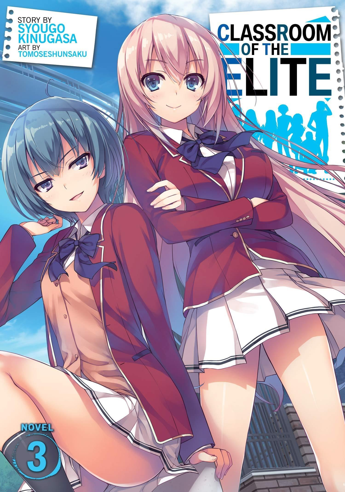
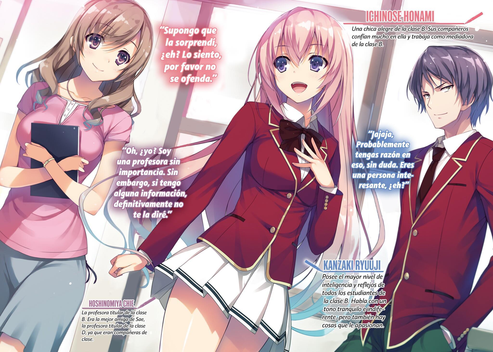
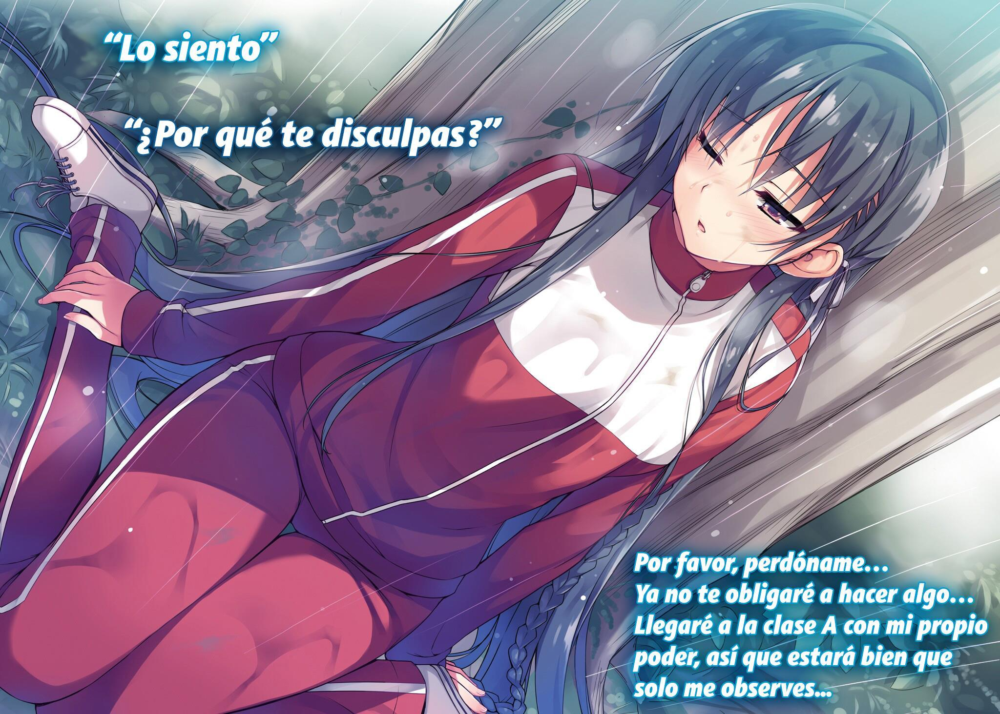
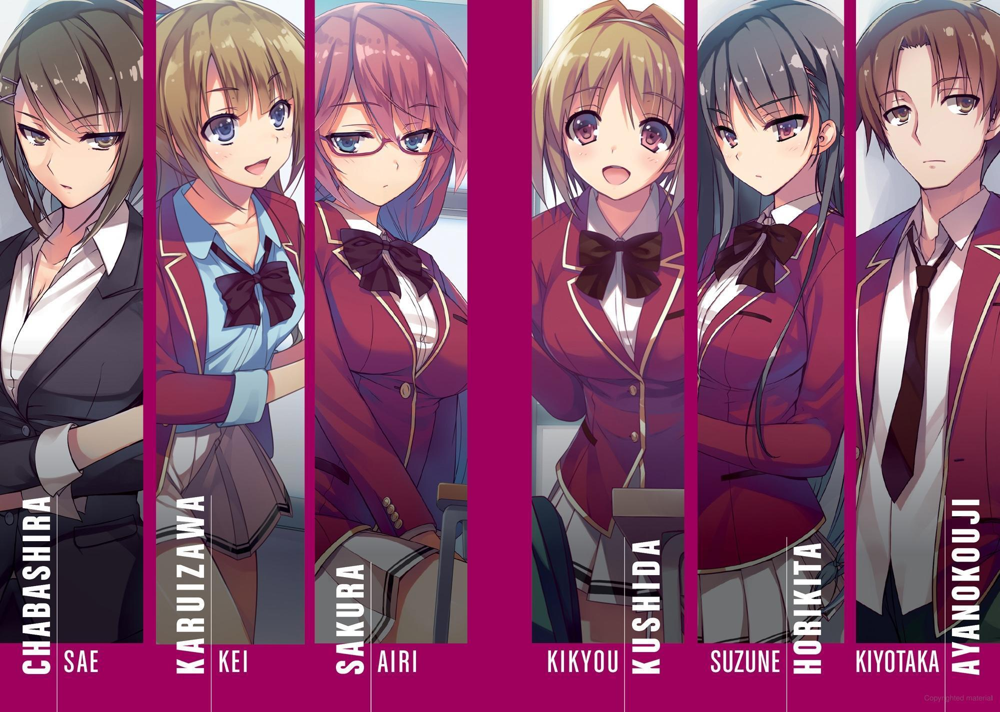
|
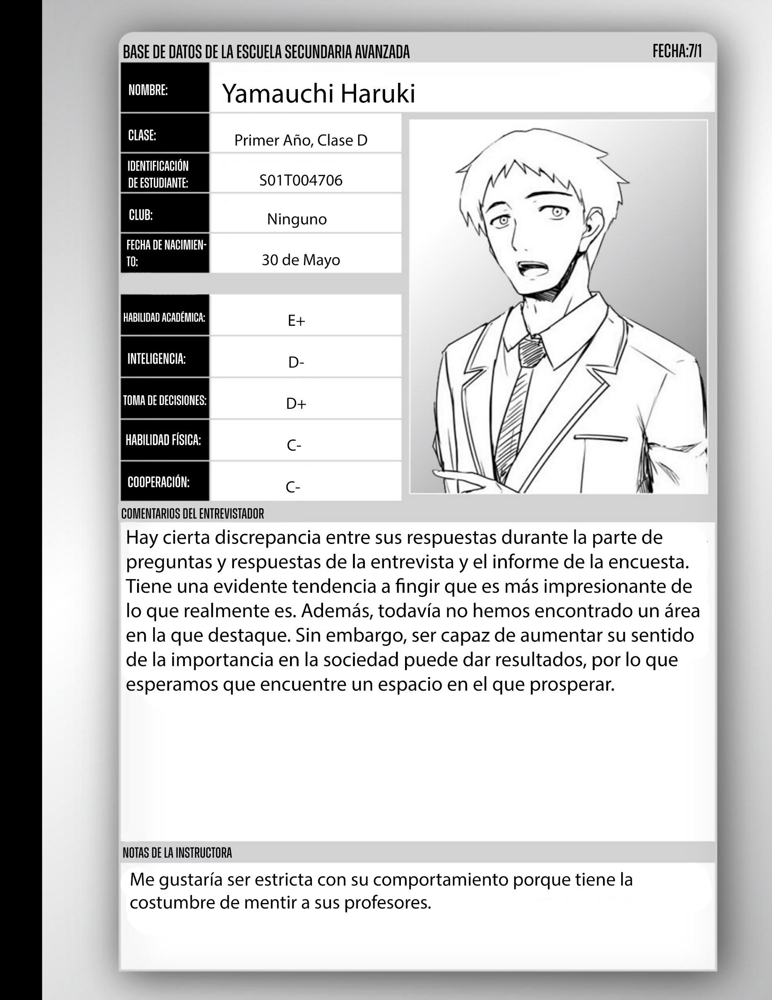
GLADHEIM
TRANSLATIONS
Youkoso Jitsuryoku Shijou Shugi no Kyoushitsu e Volumen 3
EL MONÓLOGO DE CHABASHIRA SAE
Hay muchas historias en la mitología griega que incluyen las sospechas humanas, el odio y los celos. ¿Alguna vez has oído hablar de las alas de Ícaro?
Aquí un simple resumen de eso.
Una vez, en Grecia, hubo un gran inventor llamado Daedalus. Daedalus recibió la orden del rey Minos de construir un laberinto donde el monstruo Minotauro sería confinado.
Sin embargo, más tarde, fue abandonado por el Rey Minos y terminó siendo confinado en una torre junto con su hijo Ícaro. Daedalus, para escapar de la torre en la que fueron encarcelados, logró reunir todas las plumas de las aves que pudo encontrar, para poder fabricar alas más grandes. Las plumas grandes se sujetaron con hilos, mientras que las pequeñas con cera.
Pronto, completó las alas y, a petición del hijo que le preguntó cuándo podían volar libremente, Daedalus, como padre, le advirtió: “Si vuelas demasiado alto, las alas que están reforzadas con cera se quemarán con el sol y se derretirán.
¡Ten cuidado!”.
Ícaro, que recibió un consejo tan precioso, se fue volando de la torre con su padre. Luego llegó la Libertad. Pero la libertad, en algunas ocasiones, es algo peligroso porque hace que uno pierda de vista su propio ser.
Con la libertad extendiéndose ante sus ojos, Ícaro se intoxicó con ella. Tal vez era inevitable. Era como la ruptura de una situación dolorosa y contenida.
Completamente fascinado por la libertad, olvidó el consejo de su padre y voló más y más alto. El ala construida como una de un ángel falso fue quemada por el sol y la cera se fundió en un abrir y cerrar de ojos.
Finalmente, las alas falsas se quemaron por completo. Ícaro cayó al océano y murió.
¿Icarus era simplemente un hombre valiente que saltó al cielo para obtener la libertad? ¿O era un hombre arrogante que creía haber alcanzado el sol y sobreestimó su propio poder y capacidades? Tal vez, a excepción de su propio padre, nunca nadie lo sepa.
Ahora, no sé por qué me acordé de las alas de Ícaro cuando me encontré frente a un chico en particular. Comparando esto con varias situaciones, sentí que él es el más cercano a esa figura. Sin embargo, de inmediato me di cuenta de que ambos eran radicalmente diferentes. Porque este chico no tenía el coraje ni la arrogancia de Ícaro.
Estaba siendo presionada. No tuve más remedio que hacer esto.
No había otra forma de lidiar con esto, sino incurrir en el desagrado de este chico.
No podía hacer otra cosa que comportarme firmemente y con coraje hacia el chico que dirigía su ira silenciosa frente a mí.
No puedo regresar un dado lanzado a su posición original.
Porque la puesta ya ha comenzado.
LA FRONTERA ENTRE EL CIELO Y EL INFIERNO
El eterno mar de verano. El infinito cielo azul. Aire perfectamente limpio. El crujido de la brisa salada del mar que envuelve suavemente el cuerpo.
Aquí, en el corazón del Océano Pacífico sin sentir el sofocante calor del pleno verano.
Sí, esto es realmente un paraíso marino.
— ¡OHHHH! ¡Esto es lo mejor¡ ¡AAAAAAAAAAAAAAAAAAAAAHHHHHHHH!
Desde la cubierta de un lujoso trasatlántico resonaron estruendosamente los gritos de Ike Kanji que estaba parado con ambas manos levantadas. Por lo general, las quejas y frases como “¡Cállate!” llegaban volando de todos lados, pero hoy de todos los días no llegó ninguna y todos finalmente disfrutaron de un momento feliz. Había una vista notable desde el mejor lugar en la cubierta en los asientos reservados.
— ¡Qué vista tan fantástica! ¡¡¡¡Estoy muy emocionada!!!!
Un grupo de chicas lideradas por Karuizawa aparecieron desde los compartimientos internos. Señaló el océano y con una sonrisa de oreja a oreja dijo:
— Es verdad, qué escenario tan increíble...
Kushida Kikyō, una de las chicas del grupo que estaba holgazaneando, también estaba extasiada y suspiraba mientras miraba el mar.
Después de las abrumadoras dificultades, los exámenes parciales y los finales, finalmente dimos la bienvenida a las vacaciones de verano. Nos estaban esperando con los brazos abiertos.
La preparatoria Koudo Ikusei había organizado para nosotros un lujoso viaje de dos semanas. Un crucero en un trasatlántico de lujo.
— Me alegro de no haber dejado la escuela, Ken. Si este viaje fuera un viaje normal, hubiera sido definitivamente imposible para mí. ¿Cómo se siente ser alguien a punto de ser expulsado, quién estaba en el último lugar, incluso en el examen final? Dime, ¿cómo se siente?
Incluso si esta pregunta fue instigada por Yamauchi Haruki, Sudō Ken, lejos de ponerse azul, solo se rió a carcajadas. La apariencia feroz y genial del lobo solitario se fusionó por completo en la figura de un compañero de clase sonriente.
— Todo es pan comido si dependo de mis habilidades. ¿No dijeron que podía demostrar mi capacidad de desempeñar el papel principal para resolver todo con mi intelecto?
A pesar de estar en agonía hace un tiempo, este viaje parece haber volado todo por completo. Seguramente parece que este mar azul borra todas las habituales cosas problemáticas y las situaciones difíciles.
— Nunca hubiera soñado que podría ser parte de un viaje tan lujoso. Y son 2
semanas, 2 SEMANAS. Cuando mamá y papá lo escuchen, se sorprenderán tanto que se mearán en los pantalones.
Como dijo Sudō, desde el punto de vista de una persona ordinaria, este no es un viaje estándar. En esta preparatoria, con el apoyo del país, realmente no hay necesidad de pagar diversos gastos o la matrícula. Y, naturalmente, incluso para este viaje. Es todo un tratamiento especial.
Y no hace falta decir que el exterior del barco que abordamos y las instalaciones también son muy satisfactorias. Desde un restaurante de primera clase y el teatro donde se puede disfrutar de obras o actuaciones en vivo, hasta un elegante spa totalmente equipado con todo tipo de cosas. Si alguna vez pensé en viajar aquí, necesitaría gastar 100 000 yenes en la temporada baja.
Finalmente, este viaje tan maravilloso y encomiable comienza hoy.
El cronograma será de la siguiente manera.
En la primera semana, vamos a aprovechar al máximo nuestras vacaciones de verano alojándonos en una pensión construida en una isla desierta.
Luego, la semana siguiente vamos a pasar la noche en el crucero. A las 5 a. M., los estudiantes de primer año tomarán el autobús y se dirigirán hacia la Bahía de Tokio, luego el barco de pasajeros saldrá del puerto donde los estudiantes abordaron.
Mientras tomaban el desayuno en el salón del crucero, los estudiantes podían comportarse como quisieran. Además, una cosa muy afortunada era que todas las instalaciones del barco se podían usar de forma gratuita. Para nosotros, generalmente preocupados por la escasez de puntos y gastos, esto era un salvavidas.
De repente, Kushida se volteó hacia mí y me dirigió una mirada pensativa. Con el océano y el cielo azul como fondo, Kushida parecía aún más brillante y no sé por qué, pero mi corazón latía con fuerza, a pesar de que ella es desagradable.
Imposible, no puede ser que ella... hacia mí.
— Bueno, entonces, ¿qué hay de Horikita-san? ¿No están siempre juntos?
No me podía permitir quedar capturado en la confusión de ese sueño. Parece que ella simplemente estaba pensando en Horikita.
— Vamos. No soy su guardián...
No recuerdo haberla visto a bordo después del desayuno.
— No pareces una persona que disfrute viajar, ¿eres más de los que disfrutan de estar en la habitación?
— Supongo que sí.
— Alrededor del mediodía podemos ir a la playa de la isla privada y nadar libremente. ¡No puedo esperar!
Parece que esta escuela posee una pequeña isla en el sur, y ahora nos dirigimos allí.
— ¡Atención a todos los estudiantes! Por favor, reúnanse en la cibierta.
Podrán ver la isla pronto. Durante un tiempo, podrán ver un escenario muy significativo y espléndido
Este curioso anuncio reverberó de repente por todo el barco. Kushida y los demás le prestaron atención y con calma parecían estar esperando lo que estaba por venir.
Unos minutos después de que varios estudiantes comenzaron a reunirse, apareció la isla.
Ike dejó escapar un grito de alegría. Los estudiantes lo notaron y comenzaron a agruparse en la cubierta todos a la vez. Cuando una gran cantidad de gente abarrotó el lugar, algunos estudiantes desconsiderados llegaron a empujarnos para que pudieran tomar nuestro lugar en el mejor puesto.
— Ah, tan molesto... ¡Oye, quítate del camino! ¡Productos defectuosos!
En ese momento, uno de los chicos más intimidantes empujó mi hombro. En repentina confusión, agarré la barandilla de la cubierta para evitar perder el equilibrio y caer. Esos estudiantes se rieron de mí con desdén.
— Oye, tú, ¿qué diablos estás haciendo?
Sudō se enojó muchísimo y emitió un aura amenazante en el acto. Kushida, preocupada por la situación, se puso a mi lado. Otra chica que seguía detrás de ese estudiante y vio la escena en realidad tenía un aspecto muy miserable.
— Debes entender el sistema de esta escuela. Es una escuela basada en el mérito. No hay derechos humanos para la clase D. Los “defectuosos”
tienen que comportarse obediente y sumisamente, como los rechazados que son. De este lado, todos somos de la clase A.
La clase D se apartó de la proa (del barco) como si hubieran sido expulsados.
Sudō parecía disgustado, aun así no provocó una pelea y fue capaz de soportarlo, lo que demostró que se estaba volviendo un poco más adulto. ¿O fue simplemente porque entendió y aceptó la posición inferior de la clase D?
— Hola a todos, estaban aquí. ¿Qué pasó?
Entre los estudiantes que acudieron en masa, un chico me llamó.
Aunque intuíamos que la situación era desagradable e injusta, no era necesario tener preocupaciones innecesarias. Así que es mejor no prestarle atención.
El chico se llama Yōsuke Hirata. Líder de clase D
También soy el líder del grupo al que pertenezco.
La asignación de los cuartos estaba a punto de decidirse en ese momento.
Mientras esperaba que Ike y Sudō no me llamaran, con quienes era relativamente cercano, el grupo terminó con sobrecupo.
Justo cuando me quedé solo, la entrada de Hirata como un Mesías resolvió la situación.
— Oye, Hirata, ¿qué tan lejos has llegado con Karuizawa?
Ike se dirigió a Hirata, quien en realidad nunca intentó acercarse a Karuizawa.
— ¿Por qué no te arriesgas a este tan esperado viaje y tratas de ser más cariñoso con ella?
Se burló así, también había oído que Hirata odia cuando otras chicas lo miran.
— Simplemente vamos a nuestro propio ritmo, lo siento. Me iré ahora.
Miyake-kun parece estar en problemas.
Sonó su teléfono y Hirata regresó al barco mientras jugueteaba. Estar ocupado es el destino de la gente popular.
— ¿Qué pasa con él? ¿Realmente solo está preocupado por sus compañeros de clase?
— Pero Karuizawa es Karuizawa, y aparentemente no han estado muy cerca recientemente, así que... tal vez... ¿se han separado? Si es así, entonces apesta. Kushida-chan tendrá mucha más competencia.
Ciertamente, podrían ser menos cercanos en comparación con cuando comenzaron a salir. Pero no siento que hayan peleado o que la situación se haya vuelto menos grata. Porque de hecho parece que se llevan bien cuando los veo hablar.
— Lo he decidido Haruki. Yo... me le confesaré a Kushida-chan en este viaje.
— Bueno, qué mierda. Si te rechaza Ike, será increíblemente incómodo.
¿Estará bien?
— Esto es solo por mi razonamiento egoísta. En cualquier caso, ¿no es Kushida-chan muy linda? Es por eso que creo que la mayoría de los chicos quieren invitarla a salir. Sin embargo, como está fuera de mí y de su liga, y no está acostumbrada a las confesiones, estoy seguro de que existe la posibilidad de que el corazón de Kushida-chan se estremezca con mi repentina confesión de amor. Pero solo hay un poco de esperanza.
— Ya veo... te has decidido...
— Ah, sí.
Yamauchi quería estallar en oposición, pero no hizo nada. Estaba mirando la cubierta inquieto como si estuviera buscando algo.
— ¿Qué pasa?
— Ahhh, no, nada...
Después de ignorarme distraídamente de esa manera, al final Yamauchi ya no tocó el tema Kushida.
— Hola, hey, Kushida-chan. ¿Tienes un minuto?
— ¿Uhm? ¿Qué pasa?
Ike se acercó de inmediato a Kushida, quien estaba mirando tranquilamente el mar. Obviamente, ese fue un movimiento sospechoso.
— Bueno... ¿cómo lo digo... no han pasado unos 4 meses desde que nos conocimos? Por eso, dentro de poco, me pregunto si está bien llamarte por tu primer nombre. Verás, suena frío y distante cuando te llamo por tu apellido.
— Ahora que lo mencionas, Yamauchi-kun me llamó por mi nombre antes de que me diera cuenta.
— Eh, después de todo, supongo que está mal si te llamo Kikyō-chan.
Ike exclamó un poco desinflado, pero Kushida sonrió despreocupadamente.
— ¡Por supuesto, no hay ningún problema con eso! ¿Debería llamarte Kanji-kun también?
— UUUUUOOOOOOOOOOOHHHHHHHH KIKYO-CHAN AAAAAAAHHHHH.
Ike gritó y gritó asumiendo una pose de alguien que se dirigía al cielo o de alguien que acaba de recibir un paquete con “Pelotón, la película”.
Kushida se rió suavemente. Supongo que ella lo vio como extraño y divertido.
— Nombres ¿eh? ... Ahora que lo pienso, ¿cuál es el primer nombre de Horikita?
Sudō, naturalmente, me pregunta si lo sé.
— Es Tomiko. Horikita Tomiko.
— Mhm, Tomiko... es un lindo nombre. Como era de esperar, la sensación es perfecta.
— Ah no, estaba equivocado. Es Suzune.
— Tú, pequeño... no cometas más errores. Suzune ¿eh? Se siente perfecto como Tomiko, pero 100 millones de veces más.
Si el nombre de Horikita fuera Sadako o Sam, sería egoísta insinuarlo o decirlo sin permiso.
— Durante estas vacaciones de verano, también te llamaré por tu nombre.
Suzune, Suzune...
Bueno, parece que los chicos quieren acercarse a las chicas durante estas vacaciones.
Mientras tanto, ninguno de los chicos me llama por mi nombre ni los llamo por el suyo.
— Está bien. Oye, mira aquí, Ayanokoji. Hiciste que quisiera practicar. Ahora también practica a decir el nombre de Suzune.
— ¿Práctica? ¿Por qué? Práctica... eso no es normal.
No puedes hacer algo como practicar pronunciar el nombre de una persona... a menos que lo hagas ante esa persona.
No me digas que el ingenuo de Sudō pretende convertirme en una Horikita imaginaria.
Él me está mirando intensamente.
Probablemente porque se está imaginando al sexo opuesto, pero esa mirada es terriblemente asquerosa.
— Oye, Horikita, ¿tienes un minuto? Necesito hablar un poco contigo.
— No soy Horikita.
Inmediatamente me enojé y le di la espalda con cara de desaprobación.
— ¡IDIOTA! Es práctica. Tampoco quiero hacerlo, pero es necesario para mí, tal vez, mhm, o tal vez no. Porque si no practico, no puedo ser bueno. En cualquier caso, es importante que lo intente.
Realmente no quiero escuchar una charla de mierda.
Ahhh, ya que no se puede evitar, lo aceptaré y seré paciente.
— Horikita. ¿No es extraño que siempre nos tratemos como extraños? Nos conocemos desde hace mucho tiempo. Y parece que otros se están llamando agradablemente por su primer nombre. ¿Qué tal si lo hacemos pronto? ¿gradualmente?
[............................................]
Inconscientemente, quería golpear tanto la cabeza de Sudō. Pero lo soporté con paciencia y mentalmente como lo haría un adulto. Justo como lo haría un adulto.
— ¡Di algo! ¿Por qué no estás practicando conmigo?
— No, no... ¿Qué quieres que diga?
— Solo algo que Horikita probablemente respondería. Como la conoces desde hace mucho tiempo, debes saber lo que diría, ¿verdad?
Nuestro nivel de conocernos es de 4 meses, por lo que es imposible para mí saber esas cosas.
Aun así, Sudō insistió en que yo juegue el papel de una Horikita imaginaria.
Apreté mi puño inconscientemente como para amenazar a alguien.
— ¿Estoy a un paso de convertirme en un adulto y debería hacer algo como esto en nombre de Horikita? Siéntete libre de practicar por ti mismo.
En cambio, Ike actuó como un sustituto. Mientras miraba un poco sombrío, Sudō
dijo:
— Horikita... ¿está bien si te llamo con tu primer nombre?
— Um, bien... Sudō-kun no es realmente un tipo guapo, ¿no? Quiero decir, parece que tampoco tiene mucho dinero. Él no es realmente mi tipo, ¿no lo puedes ver? Quiero decir, lo siento, ¿no eres un marginado?
Ike estaba actuando como una gyaru (NTI: una mujer que se adhiere a una tendencia de moda generalmente marcada por el pelo marrón o teñido de rubio, ropa llamativa y accesorios) de preparatoria que, por el contrario, no se veía como tal. Así que Sudō, incluso mientras estaba en cubierta, decidió estrangularlo y hacerlo retorcerse de agonía.
Siempre están llenos de vitalidad, estos tipos. Solo mirándolos, la fatiga se acumula y se acumula. Aun así, parece divertido. Después de un rato, en todo alrededor los gritos se hicieron más fuertes.
El entusiasmo de los estudiantes aumentó enormemente cuando la isla podía ser claramente visible a simple vista y la distancia se acortaba cada vez más.
Pensé que el barco se dirigía a la isla, pero no sé por qué pasamos de largo el muelle y el barco comenzó a rodear la isla. El área prestada por el país para administrar la isla es de 0.5 km. La altitud mayor es de 230 m. Es una isla muy pequeña si se la ve desde la perspectiva de la totalidad de Japón como país, pero si la ven cientos de personas en un crucero como nosotros, era demasiado grande.
De alguna manera, el crucero circunnavegó la isla y la mostró por completo.
Continuó dando vueltas y vueltas al perímetro exterior sin cambiar la velocidad.
Aunque el barco apenas salpicaba agua, en realidad navegaba a una gran velocidad.
— Es un espectáculo muy misterioso... Estoy impresionada. ¿No lo crees, Ayanokoji-kun?
— ¿Oh? Hmm, sí, cierto.
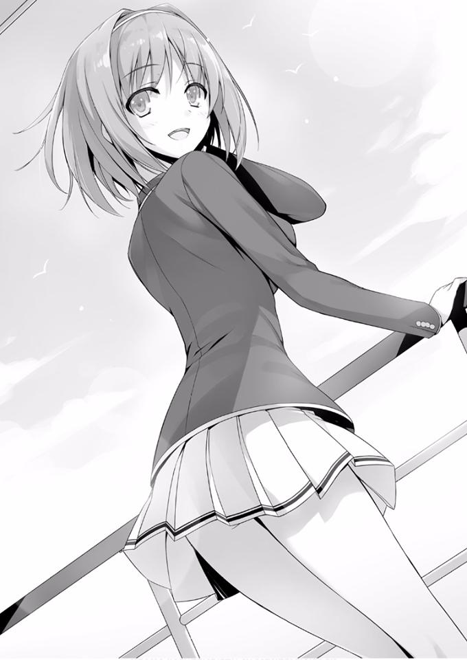
Miré a Kushida cuyos ojos brillaban mientras miraba la isla desierta, y mi corazón palpitaba un poco. De nuevo. Después de todo, Kushida era muy linda.
Quería proteger esa sonrisa y ese comportamiento infantil.
— A partir de aquí, descenderemos a una isla deshabitada propiedad de la escuela. Los estudiantes deben cambiarse sus camisetas, revisar adecuadamente sus maletas y equipaje sujetos a las normas y no olviden sacar su teléfono. Después de eso, por favor reúnanse en la cubierta. Por favor, guarden todas sus pertenencias personales en sus habitaciones.
Dado que existe la posibilidad de que no puedan ir al baño por algún tiempo, por favor solucionen el problema ahora.
Este anuncio dio vueltas por el lugar. Aparentemente, el punto de desembarco en la playa privada está cerca. Parece que Ike y los demás están regresando al buen ánimo. También regrese al cuarto grupal. Luego me vestí con una camiseta que utilizaba durante la clase de educación física, volví a la cubierta y esperé a que el bote llegara a la isla. A medida que nos acercamos a la isla que estaba justo enfrente, el entusiasmo de los estudiantes de primer año alcanzó su punto máximo.
— Desde este punto en adelante, comenzando por los estudiantes de la clase A, iniciaremos a descender en orden. Además, está prohibido llevar teléfonos a la isla. Así que, por favor, entréguenlos a su maestro principal y bajen del barco
Con la voz del profesor en el altoparlante, los estudiantes bajaron las escaleras del barco en orden.
— ¡Uf, apúrense! Aunque estamos vestidos con ropa ligera, todos estamos sudando aquí.
La cubierta del barco anclado estaba demasiado expuesta al sol. No es de extrañar que surgieran muchas quejas. La clase D estaba de pie en el barco lista para bajar mientras soportaba el calor, y al final Horikita se les unió también. A primera vista, parecía una situación habitual, pero algo cambió. Había como una sensación de incomodidad e inquietud. Incluso Horikita, que suele ser una persona metódica y escrupulosa, parecía estar ansiosa por la situación externa.
Sin embargo, ella mantuvo su pelo negro alborotado, sin cambiar por completo su aspecto. Se veía un poco fría e inconscientemente se frotó los brazos mientras esperaba el desembarco en la isla.
— ¿Qué estabas haciendo?
— Estaba leyendo un libro en mi habitación. “Por quién doblan las campanas”…. No lo conocerías.
Vamos. Fue uno de los trabajos representativos de Ernest Hemingway, ¿no?
Una obra maestra sin igual, no hay dudas al respecto. Lo pensé durante mucho tiempo, pero el hobby de Horikita de leer este tipo de libros es increíble... Pero, me pregunto acerca de la prioridad leer, incluso durante este maravilloso viaje.
Bueno, en estas circunstancias, también tengo dudas sobre si prefería el cuarto como un buen lugar para leer libros o no.
Vamos a olvidarnos de eso. Esta persona no dirá nada sobre el tema y hacer preguntas sería grosero.
— Estoy ansiosa por la secuela, pero si está prohibido llevar objetos personales, no puedo hacer nada al respecto.
Con pesar y torpemente, me aclaré la garganta.
Estas no son cosas que las personas comúnmente dicen mientras bajan a la playa.
Bajar a tierra y dejar el barco tomó más tiempo de lo que pensaba.
Probablemente porque los maestros dividieron y reunieron a los estudiantes en dos grupos, y procedieron a revisar su equipaje.
— Oye, es extraño, ¿no están siendo muy cautelosos o, cómo debería decir, cuidadosos? Deben confiscar los teléfonos durante una prueba, no ahora.
Parece que incluso está prohibido llevar demasiados artículos personales.
— Seguro. Si las personas solo juegan en el océano, también siento que no tienen que llegar al extremo de hacer esto.
Por cierto, por la popa había un helicóptero. Hablando de falta de naturalidad y extrañeza, eso tampoco es natural. Bueno, es cierto que era un poco sospechoso, pero tal vez estaba pensando demasiado. Si los estudiantes
trajeran un teléfono al mar, probablemente algunos de ellos terminen mojándolo o rompiéndolo. Traer cosas personales adicionales también podría implicar que toda la basura contaminará la playa. Si alguien repentinamente se enferma, el envío del helicóptero podría ser útil y probablemente no sería una historia tan poco probable de contar... ¿verdad?
Pronto vendrá nuestro turno, y saldremos de la rampa después de recibir una inspección rigurosa.
En ese momento, no me di cuenta de que este lugar iba a ser la frontera entre el cielo y el infierno.
1
Las palabras feroces llegaron de nuestra maestra mientras conversábamos tranquilamente.
— A partir de ahora voy a pasar la lista de la clase D. Los estudiantes que sean nombrados, respondan con firmeza.
Nos indicaron que formamos una línea al mismo tiempo que nuestra maestra comenzaba a verificar la asistencia de la clase mientras simultáneamente sostenía una tabla de surf con una mano.
Chabashira-sensei llevaba la misma camiseta que los estudiantes. En lugar de vacaciones de verano, la atmósfera estaba más cerca del campo de entrenamiento.
Aun así, no había signos de tensión en la mayoría de los estudiantes.
— Oh, vamos, danos tiempo libre ya. El mar se extiende delante de mí,
¿sabes?
Ike, que estaba justo detrás de mí, murmuró molesto. Parecía que la mayoría de los estudiantes querían correr a la playa con impaciencia.
Poco después, un maestro alto se adelantó y se acercó a una plataforma blanca que estaba preparada.
Era el Sr. Mashima, el maestro de inglés a cargo de la clase A, famoso por ser una persona obstinada. A primera vista puede parecer fornido debido a su físico de lucha libre, pero era bastante listo y a veces enseñaba temas especiales.
— Antes que nada, estoy feliz de que hayan llegado sanos y salvos a este lugar el día de hoy. Sin embargo, es desafortunado que un estudiante no pueda participar debido a una enfermedad.
— Ah, hay un tipo enfermo que no pudo unirse a este viaje, pobrecito.
Ike dijo en voz baja para que los profesores no pudieran escuchar.
Pero estoy totalmente de acuerdo con él.
Si fuera un viaje mediocre, entonces estaría bien, pero es algo diferente con tanto lujo. Me pregunto si se arrepentirá después de escuchar sobre el viaje de sus amigos. Creo que debería haber participado a pesar de que estaba en una condición física algo pobre, incluso si se esforzaba hasta un punto imposible.
Sin embargo, las expresiones faciales de los profesores eran bastante severas para un viaje.
¿Podría ser que si bien para nosotros los estudiantes esto son vacaciones, los supervisores tratan esto como trabajo?
No, no parece que vaya a ser solo eso.
Mientras el Sr. Mashima miraba a los estudiantes en silencio, vi a algunos adultos con ropa de trabajo que comenzaron a armar una carpa especial un poco más lejos. También podía ver una computadora portátil en una mesa larga.
En los sonidos urbanos que no coincidían con las olas ondulantes, los estudiantes comenzaban a estar desconcertados.
El Sr. Mashima solo pronunció una cruel palabra, como si esperara a que el aire cambiara.
— Entonces, sigamos adelante con la prueba académica de primer año.
— ¿Eh? ¿Prueba? ¿Qué quiere decir?
En ese momento, cuando surgió este asunto, no fueron solo los que rodeaban a Ike. Parecía que todas las clases estaban listas para explotar.
Hasta ahora, no, incluso ahora, los estudiantes pensaban que era solo un viaje de grupo. Se estaban reuniendo como si hubieran sido atacados inesperadamente. Nuestras vacaciones de verano dependían de la benevolencia de la escuela. Pero eso era, tal como pensé, solo una ilusión.
El cambio de satisfacción a tensión fue demasiado.
— El período de duración será de una semana. Termina al mediodía del 7 de agosto. A partir de ahora, vivirán en esta isla desierta durante una semana.
Es una prueba para ver si pueden vivir todos juntos como un grupo.
Además, esta prueba especial ha sido diseñada con referencia en la capacitación corporativa de la vida real. Incluso antes de comenzar les voy a dar pistas sobre lo que se necesita para ganar esta prueba especial.
— Dado que es una isla desierta, no hay barcos ni botes, ¿qué haremos con el alojamiento?
Las clases B y C que estaban cerca del Sr. Mashima le dirigieron esta pregunta.
— ¡Es cierto! No se permite abordar un barco sin una razón justificable. Vivir en esta isla requiere que consideren todo, desde el lugar para dormir hasta la preparación de la comida. En el momento en que comience la prueba, cada clase recibirá 2 carpas y 2 linternas cada una. Se les proporcionará una caja de fósforos. No hay restricción en el suministro de bloqueador solar. Cada persona recibirá un cepillo de dientes. Como excepción, los bienes sanitarios están permitidos sin restricciones solo para las chicas.
Pueden preguntar cualquier cosa a su maestro principal. Eso es todo. Lo que queda ahora es distribuir las provisiones.
— ¿Qué? Entonces, para ganar esta prueba en una isla desierta, ¿debo convertirme en un sobreviviente? ¡Ahora no es el momento de decir tonterías! ¡Este no es un anime o una caricatura!
— ¡No podemos dormir todos juntos en solo 2 tiendas! ¿Y qué vamos a hacer con la comida? ¡No puedo hacer esto!
Ike hizo un escándalo en voz alta para que todos pudieran oír.
Desarrollar la autosuficiencia mientras se vive en una isla desierta. Cazar animales salvajes para comer, tomar un baño en el río y arroyos y construir nuestras camas con ramas de árboles. En serio, era como ver una película o leer una novela. ¿Quién hubiera esperado que llegaría el día en que nuestra escuela preparara este tipo de prueba? Pero no había ninguna señal por parte del Sr. Mashima de que esto fuera una especie de broma. ¡No! Me pareció que no estaba sorprendido en absoluto. Y luego llegaron sus siguientes palabras.
— Puede que no sea una ventaja saberlo, pero les diré algo de información sin importancia. Esta isla desierta pertenece a una gran empresa, la misma que diseñó esta prueba. Es una operación de alto secreto, por lo que nadie más sabe lo que está sucediendo aquí.
— ¡¡¡¡¡De ninguna manera!!!!! Entonces... Esto no es solo una operación especial. La isla en sí juega un papel importante en todo esto. Es por eso que existe, como un campo de pruebas.
— ¡¡De ninguna manera!! ¡Esto no puede estar sucediendo!
— Ahora, ya que va en contra de las reglas, detengámonos.
— Entonces, lo que el Sr. Mashima nos contó sobre esta isla, solo una parte de eso era verdad. En este mundo, existen muchos otros tipos de empresas como nuestra escuela, y los cursos de capacitación pueden cambiar de repente. Su lugar en el trabajo no es solo su silla en la oficina, sino también su capacidad para avanzar por el lanzamiento de sus dados, al igual que cuando se decide su salario. El mundo es mucho más amplio y profundo de lo que creen.
Viendo los movimientos descuidados de Ike, Chabashira-sensei dijo esto con una voz como si estuviera herida y continuó.
— En otras palabras, tienen que trazar la delgada línea entre la realidad y la fantasía.
Muchos estudiantes, incapaces de comprender la situación, tenían una expresión sombría en sus caras.
— ¿Cuál es el significado de esta prueba? Apuesto a que ahora ustedes están pensando así. O pueden dudar de la existencia misma de este programa de capacitación, pero los estudiantes que piensan así se
convertirán en adultos sin posibilidades en el futuro. Pueden pensar... ¿Es esta charla una base para criticarlos con palabras como “Eres insufrible”,
“Eres ridículo”? Pero ustedes son solo estudiantes. Todavía no son alguien y su inutilidad es igual entre ustedes mismos. ¿Van a criticar los métodos de una corporación de primera clase? Eso sería ridículo. Para darles un ejemplo. Para controlar una corporación, tienen que llegar a la cima como gerente. Si fueran el presidente que dirige una compañía de mayor rango que la que mencioné, pueden tener derecho a negarlo. Sin embargo, no debería haber una base que busque negar a los seres humanos menores.
Cada uno de nosotros, todavía en estado de shock, terminamos de escuchar solo fragmentos de estas palabras. Deseosos de pensar que todo esto es una mentira. Pero era exactamente como el Sr. Mashima había dicho antes. No tiene sentido negarlo. Comenzando a pensar egoístamente, me di cuenta de mi situación. Primero tengo dejar de pensar que “Esto es ridículo” o “Esto no puede estar pasando”. Debería comenzar tratando de entender a las personas que están cerca de mí. ¿Debería abordarlos con humor?
— Pero, maestro... Se supone que son las vacaciones de verano. Y vinimos aquí con el pretexto de un viaje. ¿No cree que participar en una prueba de entrenamiento de supervivencia es juego sucio?
Algunos estudiantes de la clase finalmente recordaron cómo protestar. Esto fue seguido por otros.
— Lo entiendo. No están equivocado sobre este punto. También entiendo su descontento y quejas.
A diferencia de Ike, el Sr. Mashima reconoció una parte de la objeción de los estudiantes, pero no hizo ningún comentario trivial. En ese momento, la insatisfacción de todos era obvia. El proceso de llegar a este punto, el sentido de la objeción. El momento en que los puntos de vista de los estudiantes y los profesores eran diferentes.
— Pero no se preocupen. En esta cruel vida cotidiana, ser coaccionado a una crítica rigurosa es bastante común. Cuando decimos que esta es una prueba especial, no piensen demasiado. A partir de ahora durante una
semana, nadarán en el mar, también tendrán barbacoas. Creo que será agradable. Podrán sentarse alrededor de fogatas, hablar con amigos y desarrollar relaciones. Eso no es tan malo, ¿verdad? El tema de esta prueba especial es “Libertad”.
— ¿Eh? ¿¿Eh??... .. ¿Libertad es el tema?.... ¿¿¿Entonces podemos hacer una barbacoa??? Y todo esto, ¿es parte de la prueba? Me siento confundido.
Aunque es una prueba, eligieron “Libertad” como tema. Tan pronto como los estudiantes escucharon sobre el tema, se sintieron más confundidos.
— Se supone que esta prueba de supervivencia en una isla desierta es de gran importancia. Se ha decidido que cada clase recibirá 300 puntos. Si deciden gastar estos puntos sabiamente durante una semana, existe la posibilidad de que la disfruten como si estuvieran en un viaje. Por esta misma razón, hemos preparado un manual. El Sr. Mashima ha elaborado este manual recopilando información de varios maestros durante años, hasta que fue lo suficientemente grande como para convertirse en un libro.
Este libro contiene una lista de cómo pueden obtener puntos. Aconseja sobre necesidades diarias, agua potable o encontrar comida, también sobre cómo hacer una barbacoa. Acerca del equipo, los ingredientes y la forma de preparar una comida, cómo tomar alimentos del mar, cómo tener suficiente comida y agua, cómo disfrutar plenamente de su vida cotidiana, cómo reunir diversas herramientas y en muchas ocasiones hasta cómo usarlas.
Poco a poco, la mirada severa en la cara de los estudiantes comenzó a cambiar.
— En otras palabras, con estos 300 puntos, ¿podemos tener lo que queramos? ¡Está bien! ¡Podemos obtener lo que necesitamos acumulando puntos! Podemos hacerlo. Si hacemos un plan adecuado de cómo gastar y acumular puntos durante una semana, ¡no es imposible! Si podemos vivir con estos puntos durante una semana, entonces realmente esta prueba será como unas vacaciones. Es más, será lo más cercano que podamos tener a vacaciones.
— Pero, maestro... ¿Dijo que esto es una prueba? ¿No se supone que tiene un nivel de dificultad?
— No, no hay dificultad, ni siquiera afectará al segundo semestre, lo garantizo.
— Entonces... ¿Tenemos que divertirnos aquí por una semana?
— Está bien. Simplemente diviértanse libremente. Por supuesto, para vivir en grupo con el mínimo necesario, debe haber reglas que deben cumplir, para que esto no sea difícil para ustedes.
— ¿Deberíamos suponer que realmente no hay riesgo? Si ese es el caso, deberíamos averiguar el verdadero propósito de esta prueba.
Así que pretendemos que se trata de unas simples vacaciones de verano, como un viaje escolar de intercambio. Cuál es el significado de esto. Eso me pregunto... Pensando en varias cosas. No creo haber comprendido todavía el significado de esta escuela. Pero las siguientes palabras del Sr. Mashima hicieron más obvio el propósito de esta prueba.
— Cuando finalice este examen especial, los puntos que le queden a cada clase se agregarán a los puntos generales. Los puntos se reflejarán cuando finalicen las vacaciones de verano.
Estas últimas palabras sonaron como una ráfaga de viento que sopla en una playa de verano. Una nube de polvo que se eleva hacia el cielo.
No hubo ningún error, las últimas palabras del Sr. Mashima fueron el mayor golpe hoy y nos dejaron a todos pensando en ellas. Una prueba escrita calcula la habilidad literaria, en esta prueba la superioridad está determinada por la clase como un todo. Cada vez que la clase D dividía los puntos, era puesta en un lugar muy ajustado. Es por eso que esta vez tenemos que implementar las reglas a la perfección, para que hagamos la diferencia. Parece que no hay una desventaja significativa entre las clases A y D.
— Si podemos soportar durante una semana, ¿podríamos ver que nuestra
“asignación” aumenta sustancialmente?
Así es, esto no es una prueba de habilidades académicas, competimos por la resistencia en una forma de una batalla. Sin rechazar el deseo de ganar, debemos soportarlo con paciencia. Por lo tanto, debemos ser capaces de
alcanzar altas posiciones en el ranking de las clases. Incluso las palabras de Ike no eran solo un sueño.
— Cada clase recibirá una copia del manual. Si llegaran a perderlo, les podemos dar una reimpresión, pero costará puntos. Por lo tanto, manténganlo a salvo. De nuevo, hay un estudiante ausente de la clase A.
Dado que esta es una prueba que requiere capacidad física, aunque el alumno se haya retirado por razones de salud, le restaremos 30 puntos a la clase A como penalización. Entonces, la clase A comenzará con 270
puntos.
La clase A estaba presente, pero aceptaron el despiadado golpe. Los estudiantes temblaban ya con el repentino estado de cosas. Las otras clases, sin embargo, parecían sorprendidas por la sustracción de los 30 puntos.
Las últimas palabras del Sr. Mashima marcó el final del anuncio. Cada maestro estaba sosteniendo un megáfono y llamando a sus respectivas clases, mientras trataba de dar explicaciones complementarias. Nos estábamos reuniendo alrededor de nuestra maestra, Chabashira-sensei. La distancia entre las cuatro clases se hizo clara.
— Desde el próximo mes 30,000 puntos, desde el próximo mes 30,000...
Desde el próximo mes 30,000... ¡¡¡¡¡Hagámoslo !!!!!
Ike y los demás estaban haciendo una pose triunfante. Las chicas parecían encantadas mientras discutían qué cosas se necesitaban. El mayor deseo de la clase D es acumular más puntos. Solo tenemos que ignorar la vida de lujo por una semana. Es realmente simple en palabras.
— Ahora a todos los miembros les distribuiremos relojes de pulsera. Lo usarán por una semana hasta el final de la prueba. No pueden quitárselo.
En caso de que se lo quiten, se implementará una penalización. Este reloj no solo es para dar la hora, puede medir la temperatura del cuerpo, la frecuencia de su pulso, detecta sus movimientos y sus sentidos, también tiene GPS. Está equipado de esa manera para que puedan usarlo incluso en estado de emergencia. Si se encuentran en una emergencia, por favor,
presionen este botón. Estos fueron entregados por el fabricante gracias a Chabashira-sensei.
Mientras la Clase D estaba tomando sus tiendas, Chabashira-sensei trajo la caja para distribuir los relojes.
— Cuando dicen en una emergencia... ¿es como cuando aparece un oso?
— Para darte un ejemplo... esta es una prueba, tienes que mirar a todos lados, entonces, existe la posibilidad de que puedas encontrar la respuesta a tu pregunta.
— Hmmm... decirme algo como eso, es bastante aterrador.
— No creo que haya animales salvajes aquí. Si alguno de nuestros estudiantes se lastima, sería un gran problema. La verdad es que les dimos estos relojes por su bienestar. Estamos en una isla desierta, así que, por la reputación de la escuela y para garantizar nuestra seguridad, ¿no es algo que debería hacerse?
Con estas palabras tranquilas, los relojes se distribuyeron para garantizar nuestra seguridad. Por lo tanto, no solo los ojos de los profesores vigilarán a los estudiantes, sino que también estos dispositivos controlarán sus movimientos en la isla. Es exactamente como tener cámaras en las clases de la escuela.
Monitoreando nuestra condición física y también lidiando con circunstancias inesperadas. Además, el helicóptero que vi en el barco. Tal vez esté listo para volar en caso de emergencia.
A medida que se distribuían los relojes, cada estudiante lo llevaba en la mano izquierda o derecha, como les gustaba.
— ¿Pero está bien entrar al agua, usando esto?
— No hay problema. Es a prueba de agua Pero, aún en caso de que se descomponga, lo reemplazaremos inmediatamente. Sin embargo, ya hicimos una prueba de funcionamiento por una persona de confianza.
Esta prueba especial fue diseñada por la escuela con excentricidad y elegancia, y no creo que esta sea la primera vez. Debe llevarse a cabo teniendo en cuenta que pueden ocurrir diversas situaciones. Sin embargo, puede haber algunos inconvenientes.
— Chabashira-sensei a partir de ahora y durante una semana viviremos en esta isla. ¿Hay alguna manera de que podamos sobrevivir sin gastar nuestros puntos?
— La escuela compite como un todo, ¿verdad? Deben comenzar los preparativos para la comida y para el agua. Parece que su tienda no es suficiente. Pensar en una solución para estos problemas también es parte de la prueba.
— ¡Eso no es algo de lo que yo sepa!
Tanto los chicos como las chicas parecían muy confundidos. La idea de que no íbamos a tener una cama para dormir nos produjo una sensación de inquietud.
— Está bien. Si pueden atrapar un pez, también pueden encontrar frutas en el bosque, ¿no? Usen hojas o árboles para hacer una tienda. Hagan su mejor esfuerzo incluso en su peor condición.
Dijo Ike con bastante indiferencia, como si no hubiera ansiedad, pero totalmente motivado por los bien cuidados 300 puntos.
Estaría bien vivir solo, pero la clase está compuesta por más de 30 personas.
Incluso si dijeran que todos los miembros necesitan obtener cosas importantes, probablemente no funcionará tan bien de inmediato.
— Lo siento, Ike, pero no creo que salga como lo esperas. Abran los manuales distribuidos.
Hirata hizo lo que dijo Chabashira-sensei y abrió el manual que recibimos.
— En primer lugar, vamos a leer la parte en la última página donde se enumeran los elementos evaluados. Esto se convertirá en una información muy importante que simbolizará esta prueba especial. Depende de ustedes, ya sea que estén vivos o muertos— En la última página, había una descripción que decía: Las penalizaciones establecidas se impondrán a quienes que incurran en lo siguiente:
Aquellos que se estime que se encuentren en una condición física notablemente baja o que tengan lesiones graves perderán 30 puntos y se retirarán.
En caso de que se descubra un acto de contaminación del medio ambiente, perderá 20 puntos.
Cada uno de ustedes perderá 5 puntos si se ausenta en el pase de lista de asistencia diaria a las 8 am y 8 pm.
Y el castigo más grande fue fijado en un total de cuatro asuntos: En caso de actos violentos contra otras clases, saquear o dañar utensilios, la clase a la que pertenezcan los estudiantes involucrados será inmediatamente descalificada y los puntos privados del sujeto serán todos confiscados.
Parecía que la clase A también ha recibido las sanciones de estas reglas.
El cuarto, comportamiento obstructivo era muy razonable, mientras que los otros tres eran claramente reglas para no permitir que los estudiantes hagan cosas irracionales.
Al hacer pase de lista por la mañana y la noche, no solo es imposible dormir afuera toda la noche, sino que también suprime el comportamiento bárbaro de esparcir mierda al azar.
En otras palabras, este es un concurso para examinar la resistencia.
Como una escuela que cuida a sus preciosos niños, se podría decir que estas son las reglas requeridas y que son imposibles de evitar.
— Depende de ustedes comportarse irracionalmente, pero si 10 estudiantes se sienten enfermos, toda su paciencia y esfuerzo desaparecerán en un suspiro. Una vez que deciden retirarse, no pueden regresar a la prueba.
Cuando necesites avanzar, quiero que seas determinado, Ike.
Algunos de los estudiantes que hicieron suposiciones estaban confundidos, sabiendo que la posibilidad de sobrevivir a la prueba solo con perseverancia había sido excluida. La estrategia de no usar ni siquiera un punto se volvió parcialmente imposible de esta manera, ya que la posibilidad de que otras clases desafiaran la supervivencia con todas sus fuerzas casi desapareció. Al mismo tiempo, ya sea que participes o renuncies al destino en esta prueba, parece que no es solo la paciencia la que se vuelve distinta aquí.
¿De qué manera podemos usar puntos de manera eficiente, ahorrarlos y conservarlos durante una semana? Quizás…
De todos modos, la verdadera cara de esta “prueba especial” está a la vista poco a poco.
— Básicamente, es inevitable utilizar los puntos de este sistema, ¿verdad?
Dijo una chica llamada Shinohara, que estaba escuchando la conversación.
— No estoy de acuerdo con comprometerme desde el principio como un método de lucha. Deberíamos aguantar hasta que podamos.
— Te entiendo, pero será difícil si nuestra condición física sufre.
— Hirata, no digas cosas desalentadoras. Primero tenemos una prueba de tolerancia, ¿verdad?
Cuanto más conocemos las reglas, más nos encontramos con opiniones diferentes. Las opiniones van a discrepar. Aun así, la gama de artículos en el manual que se podían comprar era bastante amplia. Equipo esencial para la supervivencia, como tiendas de campaña y utensilios de cocina, cámara digital y transceptores, sombrillas, cinturón salvavidas, conjunto de barbacoa y artículos de entretenimiento como fuegos artificiales. La comida y el agua son esenciales para vivir. Todo estaba configurado de una manera que puede organizarse en puntos.
Si quisiéramos usar puntos, todos podrían hacerlo solicitándolo a un maestro en cualquier momento.
— Chabashira-sensei, por favor responda si puede. ¿Qué sucede si alguien se retira después de usar los 300 puntos?
Horikita, que recibió la explicación básica, levantó la mano y le preguntó a Chabashira-sensei.
— En ese caso, solo aumentará el número de personas que se retiren. Los puntos no pasarán de cero.
— En otras palabras, no tendremos puntos negativos con esta prueba,
¿verdad?
Chabashira-sensei asintió.
El Sr. Mashima también dijo que no habría influencias negativas de la prueba.
Parece que era verdad.
Chabashira-sensei continuó mientras controla minuciosamente la hora en su reloj de pulsera:
— Una tienda es lo suficientemente grande como para que 8 personas la usen. El peso está cercano a los 15 kilos, así que tengan cuidado al llevarla. Además, la escuela no ayudará en absoluto con respecto a la pérdida o daño de los artículos suministrados. Si necesitan una nueva tienda de campaña, recuerden utilizar sus puntos.
— ¿Está bien si pregunto algo, maestra? ¿Dónde dice acerca del pase de lista?
— Se ha decidido que el maestro estará junto a su clase hasta el final de la prueba. Si decidieron donde establecer su campamento base, infórmenlo.
Estableceré una base y los pases de lista se realizarán allí. Una vez que decidan el campamento base, no podrán cambiarlo sin una razón justificable, así que piensen en ello a fondo. Esto se aplica a otras clases también. Sin excepción.
¿Esto significa que Chabashira-sensei pasará una semana con la clase D como supervisora?
Por supuesto, ella no ayudará de ninguna manera.
— Mire, maestra. Lamento interrumpir su charla, pero quiero ir al baño, podría ser el jugo que he bebido hace un rato. ¿Dónde está el baño?
Sudou estaba mirando tranquilamente a su alrededor. Parecía que no había escuchado el comunicado.
— ¿Baño? Estaba pensando en explicar eso a partir de ahora. Úsala cuando necesites ir al baño.
(Con un pie), golpeó una caja de cartón de una pila. Luego, quitó la cinta y sacó una caja de cartón corrugado.
— ¿Huh? ¿Qué es eso?
— Es un inodoro básico. Cada clase recibirá uno. Por favor, manéjenlo con cuidado.
No fue Sudou quien estaba más perplejo con esta explicación, sino las chicas de la clase.
— ¿¡No me diga que también vamos a usar eso!?
La que estaba particularmente sorprendida y alzó la voz no era Karuizawa, sino Shinohara. En lugar de decir que este era el grupo de Karuizawa, la chica tenía algo de presencia hasta el punto de obtener cierto apoyo de las otras chicas.
— Tanto chicos como chicas lo compartirán. Pero no se preocupen. Viene con una carpa automática que también puede usarse para cambiarse de ropa. No es como si alguien los fuera a ver.
— ¡Ese no es el problema! ¡Sino que es una caja de cartón corrugado! ¡Eso es absolutamente inaceptable!
— Puede ser una caja de cartón corrugado, pero está tan bien hecha que también se puede usar en tiempos de catástrofe. Les mostraré cómo usarla a partir de ahora, así que recuérdenlo bien.
Mientras era abucheada por las chicas, Chabashira-sensei familiarmente instaló el inodoro con sus manos. Luego colocó una bolsa de plástico azul y puso algo como una sábana blanca.
— Esta hoja se llama lámina de polímero de suministro de agua. Cubre y solidifica la inmundicia. Hace la inmundicia invisible y al mismo tiempo suprime el olor. Cuando hayan terminado de usarlo, vuelvan a colocar la lámina. Es posible usar un vinilo repitiendo esto unas cinco veces. Solo estos vinilos y láminas se suministrarán ilimitadamente. Si es absolutamente necesario, pueden cambiarlo después de cada uso.
Ante esta explicación, las chicas se callaron y escucharon. Si este fuera un momento de catástrofe, no podrían quejarse.
Porque no importará si es un chico o una chica o una caja de cartón corrugado en ese momento.
Pero ahora era bastante difícil decir que este lugar era un lugar de desastre y que deberíamos de actuar como si lo fuera.
— ¡No puedo hacer esto! ¡Definitivamente no puedo!
Comenzando con Shinohara, casi todas las chicas lo rechazaron a la vez. Ike, que ha estado observando la situación en silencio, dijo hoscamente:
— Vamos a soportar este tipo de baño. No es hora de pelear por eso, Shinohara.
— Deja de fastidiar. No les importa a los chicos, ¿verdad? No lo haré en una caja de cartón corrugado.
— Tú decides. No tengo nada que decir. Pero no está permitido desahogarse en el bosque, ni en el mar ni en el río. No lo olvides.
Con solo esta advertencia, la maestra continuó hablando indiferentemente.
— ¡Pero, una caja de cartón corrugado! Además, los muchachos también estarán cerca, ¿verdad? ¡Asqueroso!
Shinohara, que no estaba de acuerdo con este hecho, comenzó a desquitarse con los chicos, especialmente con Ike.
— Qué. No entiendo por qué nos tratas como pervertidos.
— Es cierto, ¿no? Pareces muy pervertido.
— ¿Huh? Ouch, eso duele. Soy un gran caballero.
— No me hagas reír. Un caballero, ¿de qué estás hablando? Con mucho, eres mayor contendiente a ser pervertido.
Ike y Shinohara tenían una acalorada discusión.
— De todos modos, creo que es imposible para mí.
Shinohara y la mayoría de las chicas no aceptaban la situación.
— ¿Entonces qué harás? Es imposible no ir al baño durante una semana,
¿verdad?
— Bueno, eso…
La maestra, que estaba observando las quejas y disputas de Shinohara e Ike como el problema de alguien más, repentinamente hizo una mueca hosca cuando miró hacia atrás.
— Ya-oh ~
Una voz difuminada vino desde atrás.
La dueña de esa voz corrió hacia la persona objetivo, capturándola y abrazándola desde atrás.
— ¿Qué estás haciendo?
— ¿Qué, contacto físico? Estaba pensando qué harías al respecto.
Dijo Hoshinomiya-sensei, la maestra a cargo de la clase B, acariciando las dos manos de Chabashira-sensei fuertemente.
— Cada vez que toco el cabello de Sae-chan, siempre es suave.
— ¿Entiendes las reglas de la escuela correctamente? Es imperdonable escuchar la información de otra clase.
— Soy una maestra sin importancia. Incluso si por casualidad escucho algo de información, definitivamente no la contaré. Sin embargo, ¿no dirías que esto se siente como el destino? Las dos vinimos a esta isla, es increíble.
¿No lo crees?
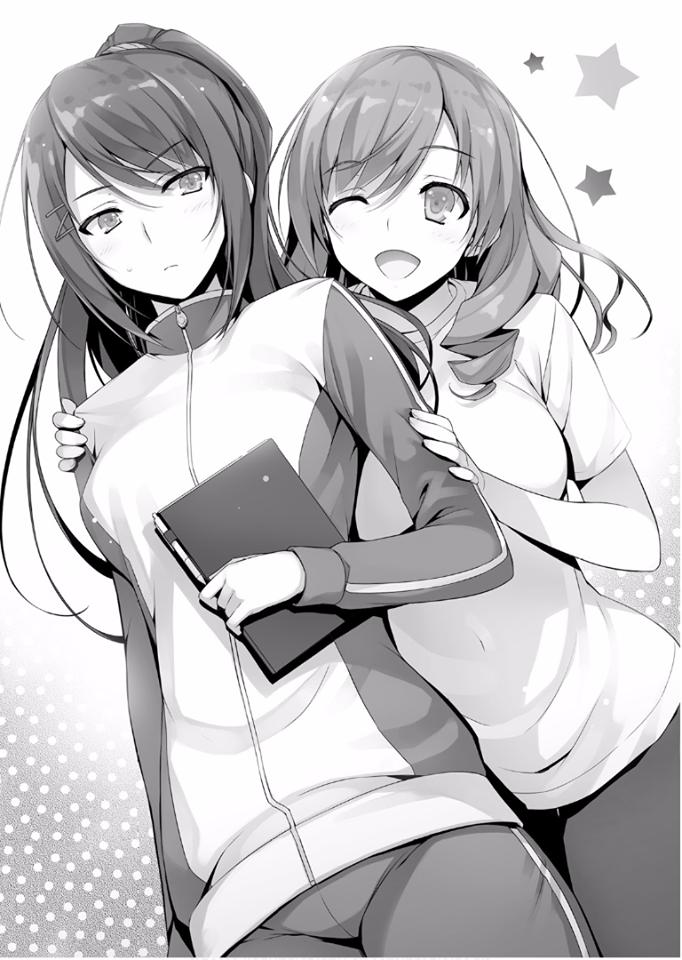
¿Destino? Chabashira-sensei ignoró por completo las significativas palabras de la Hoshinomiya.sensei y su significado oculto.
— ¡Cállate! Y vuelve rápidamente a la clase B.
— ¡Oh! ¿No es ese Ayanokoji-kun? Ha pasado mucho tiempo~
No tuve muchas oportunidades de encontrarme a Hoshinomiya-sensei porque a diferencia de otros maestros que veía regularmente en clase, ella también era la doctora de la escuela. Me incliné levemente y respondí:
— El verano es la estación del amor. Si quiere confesarse a un hombre que le gusta, ¿podría ser efectivo si lo hiciera ante de este hermoso mar?
— El mar es hermoso, pero no puedo permitirme hacer eso durante clases.
Ella exclamó. En vista de la situación actual, ya que todo el mundo estaba mirando, deseaba que dejara de involucrarse conmigo.
— Tengo que tomarlo con calma.
— Oye, ¿debería informar esto como un problema de comportamiento a las autoridades superiores de la escuela? No queda más tiempo.
— Ok, ok, no me mires así... Ya entendí, realmente lo entendí. Nos vemos.
Ella se despidió de Chabashira-sensei con una cara triste. Justo cuando la Hoshinomiya-sensei regresó a la Clase B, fue el momento adecuado para que Chabashira-sensei sacara el tema.
— Entonces, expliquemos las reglas adicionales.
— ¿Reglas adicionales? ¿Todavía hay algo más?
— En breve, se les otorgará permiso para deambular libremente, pero se proporcionan varios sitios en cada parte de la isla. Estos sitios serán llamados simplemente “Derechos de Posesión”, y la clase que los posea tendrá derecho a ejercer sus derechos allí. Cómo usarlos es una prerrogativa de la clase que obtuvo ese derecho. Sin embargo, el derecho de posesión tiene validez solo por 8 horas a partir del momento en que surta efecto, luego de lo cual el derecho se revoca automáticamente.
Significa que cada vez, obtienen el derecho de adquirir otra clase. Y
pueden obtener un punto de bonificación cada vez que ocupen un lugar una vez. Aun así, este único punto es provisional y no se puede usar
durante la prueba. Por lo tanto, se colocará y se agregará solo al final del examen. Debido a que la escuela monitorea constantemente la situación, no hay lugar para el fraude con respecto a esta regla. Es mejor prestar atención a este último punto.
— Bueno, entonces, ¿no es eso importante? Es fantástico llegar al sitio.
¡¡¡Déjanos todo para nosotros!!!
Más pronto que tarde, Ike comenzó a pedirle a Yamauchi y a otros que fueran a buscar.
Eso también está escrito en el manual en gran detalle. Y varios dispositivos que indicaban el derecho de posesión siempre estaban preparados cerca de los sitios. No sabemos cuántos sitios hay en la isla, pero se puede decir que deberían ser factores importantes en el camino. Aun así…
— Entiendo que eres impaciente, pero esta regla tiene un gran riesgo. Se trata de hacer uso de ese riesgo, tomarlo en consideración y verificarlo.
Todo está escrito en el manual, incluido ese riesgo.
Como sugirió Chabashira-sensei, el manual se escribió para aclarar las reglas especiales y las reglas adicionales, todas organizadas en viñetas.
o Se requiere una tarjeta de identificación exclusiva para ocupar un sitio.
o Obtendrán 1 punto por cada ocupación. Los sitios ocupados se pueden usar libremente.
o Si usan un sitio ocupado por otra clase sin permiso, obtendrá una penalización de 50 puntos.
o El uso de tarjeta de identificación está restringido a las personas que se convirtieron en líderes.
o Los líderes no pueden cambiarse sin razones justificadas.
Las anteriores son las reglas generales. Además, también estaba la explicación de Chabashira-sensei, pero está escrito los “derechos de posesión” se cancelarán cada 8 horas y si algunos lugares están desocupados pueden ser reclamados simultáneamente en varios lugares, incluso por la misma clase repetidamente. Todo está permitido.
Si uno ocupa con éxito tres lugares repetidamente cada 8 horas, puede obtener más de 50 puntos al final de la prueba. Sin embargo, hay un gran riesgo allí.
Hasta aquí, las reglas son de quien llega primero. Parece ser un buen mecanismo si uno reclama los mismos lugares repetidamente por la fuerza. Pero, eso es imposible. Hay una regla escrita al final sobre este motivo.
El séptimo y último día, durante la hora de la lista de asistencia, tenemos derecho de adivinar el líder de otra clase.
Además de esto, las clases, cuyo líder fuera descubierto, perderán todos los puntos extra acumulados hasta ese momento. Es una regla que hace que las personas duden en participar en la “batalla de la ocupación”, a menos que tengan una gran confianza.
— Sin excepción, todos ustedes decidirán a una persona que será el líder.
Sin embargo, tienen la libertad de participar o no. Si no son codiciosos y ambiciosos, no llegarán a ser reconocidos como líder y probablemente acaben pronto. Cuando se decida al líder, por favor repórtenlo.
Proporcionaremos una tarjeta de identificación estampada con el nombre del líder. Tienen un límite de tiempo, hasta la lista de asistencia de hoy. Si no se decide en ese momento, decidiremos a nuestra propia discreción.
Eso es todo.
En otras palabras, incluso si solo echas un vistazo a la tarjeta, la identidad del líder seguramente saldrá a la luz. Con esto, la explicación de Chabashira-sensei había terminado. La suerte fue echada y luego confiada a los estudiantes. Hirata inmediatamente se puso en movimiento.
— Más tarde habrá tiempo para pensar sobre a quién elegir como líder. Pero primero, ¿dónde pondremos el campamento base? Si vamos a estar en la playa o en el bosque... debemos pensar cuidadosamente sobre el lugar.
Adjunto al manual, había un mapa simple de la isla. Solo el tamaño y la forma de la isla estaban allí. El área y la pendiente del bosque eran absolutamente desconocidas. Yo diría que esto era más como un papel en blanco.
— Parece que tenemos que completar las partes necesarias por nosotros mismos.
Esto fue confirmado por el hecho de que un bolígrafo se había preparado especialmente para esto.
— Está bien tener un lugar cerca del barco donde están todos los maestros,
¿verdad?
— No, no estés muy seguro. Como supongo, hay pocos lugares, así que aquí cerca no encontrarás nada.
Si no hay agua, tampoco hay comida. Construir una base aquí significa que es posible que termine siendo la posición más alejada del lugar donde obtendremos los recursos. Para empeorar las cosas, durante el día la luz del sol es muy fuerte y el ambiente es duro. Por otro lado, parece que también existe el riesgo de ir demasiado lejos en el bosque.
— Más importante. Primero, necesito un baño. No puedo soportarlo más.
Sudou tomó el inodoro simplificado ensamblado por Chabashira-sensei.
Armamos la tienda, la pusimos a poca distancia y luego entramos. Shinohara y otros estaban mirando la situación mientras estaban sentados juntos, demasiado cerca. Chabashira-sensei dio un paso atrás. Probablemente ya no tome parte en esto y ahora podemos hacer lo que queramos.
— Oye, Hirata-kun. ¿No es mejor decidir de antemano qué hacer con el inodoro?
En poco tiempo, cosas que incluyen el inodoro serán necesarias para otros estudiantes también. El pensamiento de las chicas es razonable.
— Podríamos decidir, pero, ¿no tenemos que sonreír y soportarlo por ahora?
— No, no significa que no haya otra manera.
Hirata, que estaba mirando el manual, alzó la cabeza al decir esto.
— En el manual está escrito que los baños temporales también se pueden comprar con puntos y luego se pueden instalar.
Ante esas palabras, Shinohara y otras se reunieron a su alrededor todas a la vez, y miraron el manual. Las funciones de un inodoro provisional parecían ser impecables, y ver las imágenes de referencia se compara favorablemente con el inodoro en casa porque utiliza agua. Si este es el caso, las chicas darán su consentimiento. ¿Pero el problema es que necesita 20 puntos por inodoro temporal? Es realmente difícil juzgar si es caro o barato.
— ¡Absolutamente no! Quiero decir que tampoco me gusta eso... ¡Incluso eso, para mí es imposible!
Muchas chicas, animadas por los comentarios de Shinohara, estuvieron de acuerdo con eso. Para las chicas, la presencia de los baños puede ser mejor que la comida y el agua. Se comunicaron lo suficientemente bien como para mostrar su intención de no moverse ni un centímetro de allí.
— Espera, espera un minuto. ¿Ustedes quieren gastar 20 puntos? ¿Solo para ir al baño?
Reaccionando agudamente, Ike estaba en contra y quería ahorrar puntos. Al igual que otros tipos que podrían soportar el inodoro de caja de cartón.
Probablemente significa que debemos abstenernos de gastos inútiles tanto como sea posible.
— Sobre el baño, sí, está bien. Pero también tenemos esto. ¡Mira! Tenemos mucho tiempo para usar puntos. Es una mala idea no guardar puntos ahora.
— No puedes decidir, porque es Hirata-kun quien reunirá todas las opiniones y decidirá. Oye, Hirata-kun.
Ignorando a Ike, Shinohara le suplicó a Hirata que comprara un baño temporal.
— Así es... tener al menos un baño decente para chicas definitivamente sería...
— Tienes la libertad de recabar opiniones pero no puedes decidir arbitrariamente.
Ike miró a Hirata, que quería aprobar la compra del inodoro, y rápidamente lo detuvo.
— AHH, DEJA DE MOLESTAR A LA GENTE. Karuizawa-san di algo.
Tenemos los baños temporales justo aquí.
Shinohara llamó a Karuizawa, representante de las chicas, pidiendo su consentimiento.
— ¿Es así? Esto va a ser bastante duro. Pero quiero los puntos de clase.
Parece que también tendré que soportarlo.
Inesperadamente, Karuizawa, que probablemente se quejaría primero, acordó usar el inodoro simplificado.
— La escuela preparará el mínimo necesario. Lo soportaré. Hay un río donde podemos bañarnos, y si usamos bien este lugar, ¿no crees que saldrá bien?
— Eso... ¡¡Karuizawa-san!!
Si Karuizawa lo decía, no había forma de ir contra ella cara a cara, a pesar de que Shinohara es muy agresiva. Esto se debe a que la mayoría de las chicas están más unidas a Karuizawa, así que la voz influyente es solo la de ella.
Yukimura repentinamente se unió a la pelea entre Ike y Shinohara.
— No entiendo los sentimientos de las chicas de querer un baño provisional.
Sin embargo, no acepto que usemos los puntos indiscriminadamente y objeten arbitrariamente nuestras opiniones. Si quieres un baño provisional, me gustaría decirte la decisión al menos después de recabar la mayoría de los votos.
Deslizándose las gafas por la nariz, se desahogó (su enojo) con voz severa hacia Shinohara.
— Yo.... Solo estoy haciendo una petición natural como chica. Los chicos deberían ocuparse de sus propios asuntos.
— ¿Una petición natural? ¿Ocuparnos de nuestros asuntos? Eso es imposible de entender ¿No es eso simplemente discriminación?
— ¡QUÉ! Discriminación... Ahhh, me duele la cabeza. Hirata-kun, quítamelo de encima, ¿de acuerdo?
Probablemente nunca cederán en el baño y Shinohara, sola, se negó a echarse atrás.
— Esta prueba es una oportunidad única. Una oportunidad de reducir la brecha de puntos con otras clases. Los valiosos puntos no se pueden usar para inodoros temporales y esas cosas. No tengo intención de quedarme en la Clase D para siempre. Está fuera de cuestión seguir lo que a uno le gustaría hacer personalmente como Shinohara. Así que aquí, quiero decidir un plan seguro.
— ¿Eh? Acerca de eso, ¿quieres sugerir que no estaba pensando en nada ni en las consecuencias?
— Si incluso un mono puede hacerlo, uno debería poder trabajar aquí siguiendo el instinto natural. Odio que las mujeres operan de acuerdo con argumentos cargados de emociones.
— ¿Huh? Eso no significa que quiera usar todos los puntos indiscriminadamente. Quise decir que, al menos, debe haber las cosas mínimas necesarias. ¿Tienes la intención de solo hablar en teoría?
— ¡Cálmense los dos! Entiendo lo que Yukimura-kun está tratando de decir, pero si hablas tan beligerantemente, quizás no resolverás nada, ¿o sí?
Más tranquilamente...
— ¿Tranquilamente? Bajo ninguna circunstancia deberíamos usar los puntos a nuestra discreción.
— Eso es…
Hirata-kun, que se vio atrapado en un dilema entre dos personas cuya tensión aumentaba, estaba tratando desesperadamente de arreglar y organizar las cosas mientras trataba de no mostrar su rostro preocupado tanto como fuera posible.
— Para la clase D que no tiene liderazgo, el futuro será impredecible y oscuro.
Además, Hirata-kun, que es un pacifista, no puede decidir algo decentemente, ¿verdad?
Mientras estaba observando la situación desde una pequeña distancia, junto a mí estaba Horikita que suspiró demasiado, después de darse cuenta de que la situación no iba a desarrollarse en absoluto.
— Parece que esta prueba es mucho más complicada y difícil de entender de lo que pensamos.
Inusualmente, en lugar de estar turbada, Horikita mostraba signos de estar avergonzada.
— Es una gran oportunidad para obtener puntos, y estás de acuerdo con soportarlo, ¿verdad?
Vista de perfil, la expresión de Horikita parecía estar un poco irritada en lugar de confusa.
— Eso me pregunto. No soy lo suficientemente optimista como para decir en esta etapa que es fácil. Estoy igual que los demás. Nunca he vivido en un lugar como este antes, así que no puedo predecir nada. Me doy cuenta de que la prueba que parecía fácil a simple vista ha cambiado mucho. Quiero ahorrar los puntos que todos compartimos, pero no puedo encontrar una buena resolución. Qué prueba tan escabrosa.
Hubo grupos que decidieron usar puntos, grupos que decidieron no usar puntos y grupos que decidieron usar cada punto importante.
Incluso si están divididos de manera muy simple, se clasificaron en estas 3
categorías. Además, una pequeña diferencia surgió de allí también. En otras palabras, había un patrón estratégico que preveía solo el número de estudiantes en esencia. No será fácil enfrentar ese hecho en una clase de más de 30
personas.
Acerca del grueso manual, por mucho que uno pueda ajustarse a esas páginas, al mismo tiempo, también parecen representar la dificultad de la clase para unirse.
Desde lejos, Chabashira-sensei miraba persistentemente la confrontación entre chicos y chicas con ojos fríos, pero no hasta el punto de evaluarlos. Después de todo, la clase D era la reunión de productos defectuosos y solo iban a caer.
¿Era un suicidio?
— ¿Qué quieres hacer?
— También quiero ahorrar tantos puntos como Yukimura-kun. Pero no estoy segura de poder vivir una semana sin un equipo satisfactorio. Esa es mi
honesta opinión. Creo que debemos desafiarnos, pero ¿hasta dónde podemos soportarlo? ¿Qué hay de ti?
— Principalmente tengo la misma opinión. Todo es muy desconocido.
— Mira. Por casualidad, ¿las clases A y B ya se han puesto de acuerdo?
Dirigimos nuestras cabezas a la voz de una chica nerviosa.
Aunque solo habían pasado unos minutos, pude ver a varios estudiantes de cada clase reunirse e irse al bosque. Tal vez, iban a buscar lugares o la mejor área para su campamento base. Como si simbolizaran su calidad, nosotros en la clase D y en la clase C aún nos falta encontrar una solución. Ni siquiera podíamos comenzar de manera adecuada.
— Oh, mierda. ¡Este no es el momento de hablar tranquilamente del inodoro!
Voy a hacer cualquier cosa para proteger mis puntos. Iré a buscar áreas y lugares para el campamento. Yukimura, Shinohara y los demás, no usen puntos por ustedes mismos.
— Lo entiendo. No lo haremos.
No se puede decir que Ike y Yukimura sean buenos amigos, pero parece que cooperarán juntos si tienen el mismo objetivo.
— Espera un poco Ike-kun. Es peligroso ir al bosque sin un plan.
— ¿Quedarme aquí preocupado resolverá todo? No lo hará, ¿cierto?
Los sentimientos entre ir y quedarse se enfrentaron entre sí.
Sin embargo, Hirata no se reunió con ellos con la intención de persuadir a Ike y a los demás para que se detuvieran.
— Volveré tan pronto como encuentre un lugar o un sitio utilizable. Después de que todos lleguen allí, hablaremos.
¿Sudou y Yamauchi tienen la intención de buscar un lugar también?
Se habían reunido alrededor de Ike, que estaba perdiendo la paciencia.
— ¿Ayanokouji también vienes?
Sudou llamó y se encontró con mis ojos. Sacudí ligeramente la cabeza y me negué.
— Quiero que nunca actúen solos. Si se pierden, será difícil.
Parecía que Hirata se dio cuenta de que era inútil detener el desbordante vigor.
— Ya veo. ¡Bien, encuentren varias cosas!
Aun así, se puso caliente sin que nada bloqueara la luz del sol.
Parece que nos hemos secado discutiendo en este lugar por mucho tiempo.
— Al menos, parece difícil construir una base aquí...
Los compañeros de clase comenzaron a gritar de vez en cuando debido al calor y parecía que Hirata también sentía la dureza de hacer un campamento base afuera en una playa. Si se tratara de un campamento genuino, tendríamos formas de instalar sombrillas y una tienda con césped, de divertirnos nadando en el mar, protegiéndonos del sol tanto como queramos, pero en esta condición, incluso eso era difícil.
— ¿Nos moveremos hasta que encontremos un lugar con sombra? También podemos hablar mientras nos movemos.
Hirata tomó la iniciativa y comenzó a cargar la carpa. Los otros chicos también se movieron.
— Por cierto... ¿Sudou limpió ese inodoro correctamente?
Una chica señaló ansiosamente al baño.
Alguien dijo que cuando Sudou salió después de hacer sus asuntos, estaba con las manos vacías.
Al menos dentro de eso...
El sol estaba ardiendo sobre el inodoro abandonado. El interior de la tienda era ciertamente un baño de vapor.
2
Nuestros compañeros parecían estar a punto de empezar a gritar por el aumento del calor. Hirata también, situado en la playa, comenzó a comprender la dificultad de la situación. Si queríamos tener un campamento real, entonces necesitábamos construir una carpa. Desde nadar en el mar o jugar en la playa para proteger nuestro cuerpo del sol, ¿cuántas cosas más necesitamos? La situación, ahora, es bastante difícil.
— Por el momento, vamos a movernos a un lugar con sombra.
— Debemos ver cómo mover todo el campamento y podemos hablar sobre el resto mientras trabajamos.
Hirata tomó la iniciativa y comenzó a preparar la carpa para la mudanza. El resto de los chicos lo siguieron.
— Por cierto…. Ese inodoro, me pregunto si Sudo lo limpió correctamente.
Una chica parecía ansiosa por la situación y señaló el baño. Es cierto que Sudo había ido a encargarse de algunos asuntos, pero salió con las manos vacías. Al menos dentro de esa luz solar ardiente, dejamos el inodoro tal como está, porque, dentro de la carpa, está humeante al igual que estar en un sauna.
Caminando de la costa hasta tierra firme, apareció un gran bosque, uno de los chicos miró ansiosamente al bosque.
— ¿Está bien ingresar a este gran bosque? ¿Podríamos perdernos? No puedo ver para nada lo que hay adentro.
Es por eso que tenemos que implementar algunas reglas y esa es la razón por la que nuestros relojes están equipados con el botón de emergencia. Tenemos que cooperar estrechamente, si no colaboramos, vamos a gastar nuestro dinero como agua y me temo que acabaremos con todos nuestros puntos.
— ¡Oye, Karuizawa! ¡Hirata es realmente increíble! Incluso acepta hacer todas las cosas que los demás no hacen.
— ¡¡¡Pfff !!!¡Pero por supuesto! Pedir a los otros chicos ayuda lo haría parecer tan lamentable, ¡deja todo a Hirata!
Hirata estaba trabajando con entusiasmo para transportar la tienda, caminando junto al grupo de Karuizawa, lo miran con gran admiración. Por cierto, yo también estaba pasando, ayudando a llevar algunos paquetes. En ese momento tuvimos que mover el inodoro que habíamos construido, así que lo doblamos ya que estaba hecho de cartón. También debo ayudar. Después de eso, va a haber mucho trabajo por delante y muchas decisiones que tomar, pero por el momento, todo lo que tengo que hacer es demostrar el fervor de que quiero ayudar.
Por el lado de las chicas, Horikita, como ya había elegido estar aislada, siguió al grupo al final de la fila, lenta y silenciosamente. Caminando regularmente en una dirección, a veces permaneciendo quieta haciendo algunos gestos y luego regresando de inmediato. Cuando acababa de regresar al campamento base, me encontré caminando al lado de Horikita.
— ¿No estás de buen humor?
— Honestamente hablando, podría decir que me siento un poco melancólica.
Digamos que no estoy diseñada para ser este tipo persona. Vivir en una isla desierta, sin tener que vivir sola, sino con muchos otros.
Ahora, independientemente de algo como el espíritu de cooperación, actuar como miembro de un grupo, está más allá de las capacidades de Horikita.
Aunque creo que es bueno hacer un gran esfuerzo para mezclarnos con nuestros compañeros de clase para mejorar, pero decirlo en voz alta es inútil, así que me detengo.
— Ya sabes, las cosas que me dijiste antes, puedo decir que demostraron ser bastante prácticas— Girándose para decirme esto, Horikita hizo una cara bastante divertida.
— Mis habilidades académicas pueden estar fuera de discusión, estoy hablando de esa conversación. Creo, sin embargo, que ya se ha decidido que soy peso muerto. Entonces, tomando la iniciativa de buscar a Ike y Satou, salí. No me importa, en particular, si mi comportamiento fue correcto o incorrecto. Si son ellos. Se moverán rápido. Es posible que pueda encontrar algo bueno.
— Sí, puedes encontrar algo. Pero lo más importante, ¿estás bien?
— ¿Por qué preguntas?
Ella me miró con el ceño fruncido. Le di una respuesta como “No es nada” y evité su mirada. Mientras tenía esta pequeña charla con Horikita, sentí los ojos de alguien en mi espalda. Mirando sobre mi hombro, vislumbré a Sakura caminando al otro lado de la línea y mirando directamente en mi dirección. Tan pronto como se dio cuenta de que volví la cabeza hacia atrás mirándola, se puso nerviosa y desvió la mirada.
— ¿Qué pasa?
— No es nada— Tal vez, estaba demasiado atento cuando volteé.
— Me pregunto qué están haciendo las otras clases. Estoy un poco interesada en ver cómo es su actitud. Si la Clase A y la Clase B aplicaron estrictamente un plan para limitar el uso de sus puntos, también debemos estar preparados. En este tipo de prueba, no podemos dejar que haya una gran diferencia en los puntos.
En ese momento, me di cuenta de que esta extraordinaria determinación podía existir. Por la mirada seria de Horikita. El cambio en el comportamiento de la vida cotidiana de alguien por el cansancio. Una prueba de habilidad académica puede separar el status quo actual, pero el único antagonismo en esta prueba puede ser luchar para no quedarnos atrás de la clase A por cualquier costo.
— Quedar detrás de las clases superiores sería terrible.
— Las cosas que dijo Chabashira-sensei pensé que eran una broma en ese momento, pero ¿realmente no estás interesado en pasar a una clase alta?
Chabashira-sensei dijo algunas de esas cosas cuando se topó con Horikita y conmigo en la sala de profesores.
— Realmente no tengo dudas al respecto. Incluso Ike y demás no quieren quedarse atrás de la Clase A. Estaré feliz de que haya bastante asignación cada mes y que tendré la suerte de poder asistir a la Clase A.
Ni siquiera sé qué piensan Hirata y Karuizawa, hasta qué punto fueron estas sus verdaderas intenciones.
— Las personas que ingresaron a esta escuela pensaron que llegaron para hacer uso de esos privilegios.
En lugar de mostrar descontento, tosió ligeramente con aire confuso.
Originalmente en el momento de la inscripción, se suponía que la entrada a la universidad y a un lugar de trabajo estaban garantizadas por la escuela. De hecho, muchos estudiantes lo estaban esperando.
— ¿Para qué elegiste esta escuela?
— Acerca de eso, ¿puedo decir lo mismo? Para usar abierta y desvergonzadamente esos privilegios.
— ………..Ya veo.
Esta vez tosió abiertamente con descontento, mirándome con una aguda mirada de soslayo. Creo que Horikita se inscribió aquí para ir a la misma escuela que su hermano. Lo entendí así. Subir a la Clase A, si no por ella misma, para ser reconocida por su hermano mayor. En otras palabras, su propósito original en la escuela cambió.
— No es agradable estar fisgoneando en el pasado de una persona. Esto es un buen ejemplo de eso.
Tenía la intención de enterrar el clavo un poco más, pero parece que de inmediato se dio cuenta de mi verdadera intención. Estoy tratando de descubrir mi pasado analizando el pasado de esta persona, o quizás debería decirlo, analizando a fondo a los humanos. Eso no es algo agradable para mí. Me gustaría hacer algo al respecto lo antes posible.
— Lo único que puedo decirte es que Chabashira-sensei filtró la información deliberadamente. ¿Podrías no malinterpretarme solo en este punto? No te he aceptado todavía. No lo olvides.
— Está bien. No estoy pensando en querer ser aceptado.
Poco después, Hirata y los demás se detuvieron en una sola línea.
— Aquí podemos bloquear los rayos del sol y no tenemos que preocuparnos de que nos escuche alguien que ande cerca.
Hirata y los demás dejaron de caminar cuando entraron un poco en el bosque y volvieron a hablar. Algunos de los chicos se juntaron y comenzaron a debatir en un choque de ideas que podrían haber pensado en su camino hacia aquí.
— No solo Ike, mejor todos nos movemos también. Si podemos apoderarnos de un sitio principal de otra clase, a ese ritmo la diferencia de puntos se ensanchará inevitablemente.
— Sí, es cierto. Tenemos que movernos de inmediato. Pero no es bueno descuidar los problemas actuales y dejar que se acumulen. Primero, ¿no deberíamos comenzar por la solución al problema del inodoro?
— Eso es solo cuestión de si todos apoyamos el inodoro que nos proporcionaron.
Yukimura miró a sus compañeros de clase, especialmente al grupo de chicas.
— Estaba pensando mientras estábamos en camino, pero primero creo que deberíamos instalar un inodoro.
Hirata entonces habló con Yukimura con un tono ligeramente más fuerte. Debido a la fuerza de esas palabras finales, parecía que la situación no sería diferente ni se movería una pulgada que antes.
— No decidas por tu cuenta. También deberías aguardar el comentario de Ike teniendo en cuenta su opinión en contra.
— La cuota del inodoro puede ser un gasto necesario. En primer lugar, hay un inodoro simplificado al que no estamos acostumbrados, en una clase de 30 o más personas. Me pregunto si realmente podríamos darle un buen uso.
— Sobre eso... vamos a hacer buen uso de eso...
— Pero para decirlo en pocas palabras, no es práctico. Realmente no quiero pensar en el peor de los casos. Pero incluso si una persona tarda solo 3
minutos en usarlo, cuando todos terminen, pasarán más de 90 minutos.
Entonces, ¿Haremos eso?
— Es una suposición inútil. Todos pueden usar el baño al mismo tiempo rápidamente. Dado que incluso la decisión de la escuela es práctica, nos proporcionaron un solo baño. ¿No deberíamos usarlo inteligentemente?
— No lo creo. Desde el principio, siempre pensé que un simple inodoro es imposible. Si reflexionas, ¿no es eso una pista de que eventualmente tenemos que gastar nuestros puntos y tenemos que aprender cómo usarlos de manera eficiente? Yukimura-kun lo sabría. Quizás las otras
clases hayan llegado a la misma deducción, es decir, que es posible instalar inodoros temporales.
Ciertamente siento que esta prueba, sin importar en qué parte usemos los puntos, será un momento crítico que determinará la victoria o la derrota.
En primer lugar, todos los suministros son insuficientes. Como si sugirieran que deberíamos usar puntos si queremos usar una tienda de campaña o una linterna que solo la mitad de una clase puede utilizar con lo que nos dieron.
— Es toda tu especulación... Además, si otras clases establecen un baño, tendremos 20 puntos de ventaja si lo soportamos. Definitivamente podemos usar eso, ¿verdad?
— Cierto. Pero, siento que es muy poco probable que el inodoro sea una ventaja. Aumentará el estrés al inducir ansiedad, y también me preocupa la higiene. Entonces, después de un juicio objetivo, estaba pensando que se debería preparar al menos un inodoro.
Parecía que Hirata llegó a una conclusión sólida debido a que tenía tiempo para calmarse. Esto no fue un acto de comprar la objeción de los hombres, sino la convicción de consentimiento tenía que ser garantizada eventualmente.
— Creo que las chicas también pueden calmarse y superarse en la prueba.
Incluso Yukimura no podía negar los argumentos sin caer en el acto. Él podía entender la sensación de preservar puntos, pero es extremadamente difícil soportar las cosas con un simple inodoro. Los compañeros de clase se llenaron de información en un instante hasta el punto en que en esa condición, incluso las cosas simples no se resolvían rápido. Yukimura, que no podía soportar las miradas que lo rodeaban y el silencio, cedió en poco tiempo.
— …Entiendo. Bueno, entonces, deberíamos instalar un baño.
Al final, se autorizó la instalación del inodoro debido a Yukimura, que antes estaba en el mismo equipo que estaba en contra como Ike, y ahora estaba cediendo.
Horikita, Karuizawa, así como Shinohara y el resto se sintieron un poco aliviadas.
— Maestra. Si queremos un baño provisional, ¿es posible decidir el sitio de instalación en detalle?
— Si no está en un terreno imposible, entonces en cualquier sitio está bien.
También pueden recolocarlo después de la instalación, pero en ese caso llevará tiempo. Su peso es de más de 100 kilos. Bastante trabajo.
Hirata suspiró aliviado ahora que se había resuelto un problema.
— Lo siguiente es... Ya hemos escuchado opiniones antes, pero creo que también deberíamos explorar para decidir el campamento base. El consumo de puntos depende en gran medida de dónde nos establezcamos.
Respondió Hirata no debido a la impaciencia, sino para evitar la reacción de los compañeros de clase. Poco después reclutamos voluntarios, pero como pensamos, no se juntaron más de dos tipos. No hay muchas personas que hayan pisado un bosque como este. Es entendible.
— Me pregunto si alguien entre nosotros está familiarizado con la supervivencia.
Hirata preguntó aferrándose a un rayo de esperanza. Como en un manga cursi, en momentos como este solo hay una persona con la que puedes contar. Miró hacia atrás revisando a sus compañeros de clase, pero nadie mostró actitud de ofrecerse. Entonces, Hakase que estaba en silencio hasta ahora levantó la mano.
— Anhelamos al personaje principal que fue dirigido desde la infancia a las habilidades de supervivencia por su padre y entrenado para sobrevivir solo, incluso en la jungla.
Al instante, Hakase, quien fue golpeado, se puso nervioso y se disculpó, pero todos lo odiaban aun.
— Erm, iré si está bien.
Fue Kushida quien se ofreció a romper el punto muerto si nadie quería participar.
Al ver su apariencia, los chicos que se negaban rotundamente [a participar] se les encendieron los ojos y comenzaron a demostrar su participación como voluntarios. Supongo que hubo estudiantes que fueron motivados al hacerle un
favor a Kushida, así como estudiantes que se sintieron avergonzados de dejar que la chica tomara la iniciativa.
Levanté mi mano un poco más tarde, aproximadamente al mismo tiempo que Hirata comenzaba a contar el número de personas.
— Once. Si uno más participa, podríamos formar cuatro equipos.
— ¿Vas a ir también?
— Tendré que pasar. Pero es inusual verte como voluntario tan fervientemente.
— Si por alguna razón no tienes un rol, serás aislado de la clase.
Entonces... Se levantó una reservada mano a mi lado. Cuando Hirata vio esa mano, la nombró con alivio.
— Gracias, Sakura-san. Ahora tenemos 12. Vamos en 4 equipos con 3
personas cada uno. Es la 1:30 ahora, así que quiero que regresen aquí a las 3:00 en punto, independientemente del resultado.
Luego, cada persona se unió a un equipo de su gusto. En un abrir y cerrar de ojos me convertí en un desecho incluso aquí.
— Oye, desde luego, Ayanokouji-kun.
Dijo Sakura, quien también era un desecho sin que nadie la llamara, y...
— Refrescante sol, sin duda. Mi cuerpo necesita energía.
Kouenji Rokusuke. Este tipo realmente va a cooperar con nuestro grupo de investigación. Afortunadamente, un hijo de la libertad y una chica tranquila. Con estos dos no habrá ninguna dificultad.
3
En el momento en que pusimos un pie en el bosque, nos sorprendió la exuberante y densa vegetación a nuestro alrededor. Era mucho mejor que evitáramos la luz directa del sol a la que estábamos expuestos en la playa, pero aun así, la humedad hacía que el calor fuera insoportable. De repente, sentí una
oleada de frescura en la parte posterior de mi cuello, como un aleteo de abanicos... Tenía la sensación de que esta misión estaba a punto de fracasar.
Hace, hace calor, hace calor y, mientras lo pienso, se está poniendo aún más cálido. Incluso si es solo por un momento, tengo que hablar con alguien para distraer mi mente.
— ¡Oye, Kouenji!
— ¡Ah! ¡Hermoso! ¡Poder caminar tranquilamente rodeado por la naturaleza!
Esto es perfecto... ¡La máxima belleza!
Es inútil No puedo tener una conversación adecuada con él. En realidad, no hay nadie alrededor con quien pueda mantener una conversación sustancial.
— ¡Esto es notable!
— ¿Eh?
Pensé que escuché fragmentos de una voz detrás de mí, cuando Sakura saltó a mi lado.
— Dijiste que querías una persona más, así que levanté la mano. Hay muchas cosas con las que puedo ayudar.
— Cuando el equipo dijo que necesitaban otro miembro y levanté la mano...
Creíste que no estaba lista para hacerlo.
— No pensé en nada en particular, de verdad, en absoluto... ¿por qué estás planteando esto ahora? De alguna manera es confuso.
Sakura es un personaje dócil, pero de alguna manera ella no pareció retroceder en esta conversación. Cuando comenzamos este viaje escolar, ella parecía ser bastante pasiva. Pensé que Sakura se disculparía, pero aunque su timidez era aparente, continuamos caminando lado a lado.
Caminar desde la playa hacia el bosque, en otras palabras, avanzar hacia la parte interior de la isla, agota gran parte de nuestra resistencia. Esta no es una ruta fácil y conveniente, se pone mucho peor y difícil mientras avanzamos.
Parece una caminata por un largo y tortuoso camino.
— Entonces, ¿por qué levantaste la mano para participar en una exploración problemática en el bosque?
— Bueno…. Debido a que hay una gran cantidad de personas en el campamento, me siento incómoda.
— Realmente no entiendo tus sentimientos, incluso cuando hay pocas personas, no es divertido.
Ahora, parece que es el momento de hablar con alguien, incluso si me vuelvo un poco desagradable.
— Pero… Ayanokouji, tú también levantaste la mano.
Sakura levantó la cabeza e hizo una cara feliz, luego parecía bastante confundida, hizo gestos con sus manos y protestó en voz alta.
— No es eso…. ¡No es eso! Es solo que no hay mucha gente con la que pueda hablar, eso es lo que quiero decir.
Sakura siguió negando con fervor mientras caminaba apresurada cuando...
— ¡Oye! ¡Ten cuidado!
— Ay.
Mientras me hablaba mirando hacia adelante y hacia atrás, su pie tropezó con la raíz de un árbol grande, causando que cayera hacia atrás. Rápidamente intenté alcanzarla con mis manos para sujetarla, pero no llegué a tiempo.
— ¿Estás bien?
— Erm... duele un poco.
Afortunadamente, aterrizó en sus manos más que en su trasero, fue descuidado pero no algo serio.
— Si no caminas con cuidado por el bosque, podrías lastimarte, oye, toma mi mano.
— Ah, gracias.
Sin más excusas, Sakura ofreció su mano pero luego se dio cuenta de que estaba sucia por su caída, y la retiró. Ignorando esto, agarré su mano, de todos modos, sosteniéndola con cuidado.
— Lo…. Lo siento.
— No es que tengas que disculparte por algo como esto.
Pensativo, sacudí la tierra de las manos de Sakura. De todos modos, este bosque, parece que es la primera vez que la gente ha puesto un pie en este lugar. Al principio, pensé que teníamos un cierto sentido de dirección caminando por el bosque. Pero, ahora siento que esto fue una suposición incorrecta.
En primer lugar, no siempre podemos caminar de manera recta. Debíamos escalar para superar obstáculos naturales. Por supuesto, siguiendo una ruta instintiva que no cambia, no avanzamos ni a la izquierda ni a la derecha. Esta situación continuó por muchos minutos más, siento que me olvido de mí mismo, qué camino debemos tomar. La vanguardia sigue avanzando hasta el punto de que apenas puedo ver a Kouenji.
Sin embargo, Sakura no parece que quiera seguir, mirando fijamente mi mano izquierda, donde la sostengo.
— ¡Sakura! Tenemos que apresurarnos un poco.
— ¡¿Eh?! ¡Oh, sí!
Confundida por mi repentino comentario, comenzó a correr. Supongo que no se puede evitar, de nuevo...
— Seguro que camina rápido, ese Kouenji.
Kouenji sin pensar en absoluto, sobre el ritmo de una chica, siguió caminando más profundo en el bosque. Ignorando que nos lleva constantemente a un territorio desconocido. En un camino desconocido, no hay nada que hacer más que confiar en nuestros pies y resistencia.
— Sin embargo, él nunca...
— ¿Qué pasa?
— Nada.
Cuál es el significado de esto. ¿Es una coincidencia? ¡No! No hay duda en el ritmo de Kouenji. Por ejemplo, elegimos el lugar para nuestro campamento base por el bien de todo el equipo. ¿Cómo es normal que alguien camine por los alrededores en un territorio desconocido? Es como si Kouenji tuviera un objetivo bastante claro en su mente. Sobre todo, el rápido avance en la ruta me
sorprendió. Existe la posibilidad de que Kouenji simplemente no avance ciegamente.
“Convertiré mis ideales en un camino”. Así no me perderé voluntariamente.
Pero hay un problema aquí. Tengo que acompañar a Sakura para igualar el ritmo de Kouenji, así que respiro profundamente y sigo adelante.
— ¡Oye, Kouenji! ¿No crees que hemos llegado demasiado lejos de nuestra base?, ¡podríamos perdernos!
Sakura miró en mi dirección y Kouenji parecía preocupado cuando lo llamé. La silueta de Kouenji se detuvo y se volvió hacia nosotros, mientras se arreglaba un mechón de cabello.
— Soy un genio con capacidad física perfecta, no hay forma de que nos perdamos en un bosque de este tamaño. Si algo te llega a suceder es porque seguramente me hayas perdido de vista y seamos honestos, sería mejor si te rindes.
Como era de esperar de su parte, hacer una declaración como hombre, tal vez con excepción de mí mismo. La situación por aquí no es entretenida en absoluto.
— Me gustaría preguntarles, gente común, ¿no creen que esto es realmente hermoso?
Pensando que nos mostró su naturaleza perfecta como siempre, Kouenji nos mostró una sonrisa atrevida, haciéndonos esa pregunta.
— Bueno…. Es natural que el bosque sea un lugar misterioso, aunque, en general, siento que es hermoso.
Más o menos así es como me sentí e intenté transmitirlo. Sin embargo, Kouenji no esperaba este tipo de respuesta, sintiéndose un poco decepcionado respiró profundamente.
— ¿De qué estás hablando? ¡Esto no es de lo que te pregunté! Tener una condición física perfecta, yo mismo, puedo brillar maravillosamente en este lugar. ¿Entiendes?
Así que cuando tienes un físico perfecto, tienes que hacer comentarios de auto satisfacción sobre tus habilidades corporales. Ah, entonces tienes razón. No entiendo.
— Culpa al calor, hace que la cabeza se sienta rara... no te preocupes, Sakura.
— Uh, sí, está bien. Ya que Kouenji ha actuado raro desde el principio.
¡Oh! Aunque esa es la verdad, decir algo tan severo tan fácilmente, en serio, esta niña...
Kouenji decidió probar mis capacidades físicas en otro momento, nos dio la espalda y siguió caminando. A partir de este momento, no debería preocuparme por consejos o deseos.
— No hay necesidad de preocuparse, pase lo que pase en este bosque, más o menos no habrá ningún problema.
— Kouenji, ¿cuál es el significado de eso?
— No puedo llamar a esto un bosque natural. Al menos durante el día, las posibilidades de perderse mientras lo recorremos son bastante bajas. Por esta misma razón, tengo un cierto nivel de curiosidad.
Detuvo la conversación con esas palabras significativas. Kouenji, habiendo perdido su interés en nosotros hace tiempo, comenzó a caminar nuevamente a un ritmo rápido. A un ritmo rápido que Sakura no pudo seguir.
— ¡¡Oye!!
— Bueno... Ermmm. Me siento mejor, así que daré lo mejor para continuar.
Mientras Sakura sudaba, decidió mostrar que tenía agallas y levantó el puño cerrado. De algún modo atrae la sensación de que es bastante peligroso.
Lo peor es la resolución de Kouenji, pero a partir de ahora Sakura, dejando de lado sus deseos de rendirse, siguió el paso de Kouenji. A veces su figura se veía muy fatigada, es peligroso, pero tenemos que perseverar en nuestra determinación por nuestro bien. No me importa este tipo de esfuerzo doloroso, pero Kouenji sigue presionando tercamente. Aunque pensé que no nos detendríamos a menos que saliéramos del bosque, de repente se detuvo frente
a mis ojos y giró su cabeza hacia allí, tirando de su pelo hacia arriba con una sonrisa intrépida.
— ¿Puedo hacerles una pregunta, gente común?
Entonces, incluso antes de contestar, Kouenji continuó:
— ¿No me dejan escuchar lo que piensan de este lugar? ¿Qué tipo de sentimiento tienen al mirar a su alrededor?
— ¿Eh? ¿Qué? ¿Cuál es el significado de esta pregunta, ¿Ayanokouji?— De repente, la mirada aguda de Kouenji quedó oculta por la espalda de Sakura cuando se acercó a escuchar.
¿Qué sensación me da este lugar? Déjame ver los alrededores, mira toda el área. Sin embargo, no hay nada realmente extraño en este lugar. Parece un bosque ordinario. Intentando obtener algún tipo de confirmación, ¿qué es lo que está tratando de hacer?
— Entiendo claramente, no se preocupen, la gente común seguirá siendo común.
De nuevo, sin recibir una respuesta, Kouenji una vez más nos dio la espalda y siguió su camino hacia el bosque.
— ¿Hice algo... extraño?
— No.
Realmente no hay final si comienzas a tomar en cuenta las observaciones de Kouenji. Él es un hombre de muchas mentiras. Pero todavía niega la posibilidad de que no podemos ver lo que él ve en este lugar y no hay tiempo para que busquemos tranquilamente en este lugar. Kouenji una vez más aceleró el ritmo.
— Sakura, ¿tienes un pañuelo?
— ¡Ah! Sí tengo.
Como era de esperar de una chica, ella preparó cosas útiles.
— ¿Estás de acuerdo con que me lo prestes? Puede ensuciarse.
— Está perfectamente bien...
Mientras decía esto sin ninguna objeción, Sakura me dio su pañuelo.
Lo tomé prestado con gratitud y lo até a un árbol cercano, en una rama que no se rompería fácilmente. Al hacerlo, también lo marcamos ya que será útil para cuando volvamos a este lugar más tarde.
— Ahh, perdí de vista a Kouenji-kun... ¡apúrate, Ayanokoji-kun!
Sakura se estaba poniendo ansiosa pero, como el agotamiento se estaba acumulando, tropecé y casi me caí. Después de todo, la fuerza física de Sakura ya estaba cerca del límite. Incluso si me esforzaba, tampoco no podría mantener el ritmo.
— Lo siento, pero esto es demasiado exigente físicamente. ¿Te importa si caminamos un poco más despacio?
Dicho eso, fui el primero en bajar el ritmo. Sakura realmente no lo lamentaba, solo usó esto como pretexto. Probablemente he visto a través de ella, pero no importa, porque no hay forma de confirmar la verdad.
Si podía oír mi voz o no, rápidamente ya no podíamos ver a Kouenji. Desde lejos, a veces podía escuchar el sonido de alguien atravesando la hierba alta y pisando firmemente el suelo.
— De verdad que soy un todoterreno.
Con excelente inteligencia y un increíble motor, puedo adaptarme perfectamente a una naturaleza como en este bosque sin siquiera estremecerme, y además con una compañera.
Si tuviera una personalidad similar a la de Hirata, sería un perfecto ultra superman.
.................................
La mirada de Sakura, que desde antes observaba la situación en silencio, se volvió incómoda.
Finalmente, Sakura no me dijo nada y caminamos juntos por el bosque, explorando.
— Será genial si podemos encontrar agua potable. ¿O sería mejor primero encontrar un lugar donde podamos protegernos del clima?
Como no tengo nada con lo que ocupar mi tiempo, traté de hablarle gentilmente.
Para que le sea fácil entender. Si puedes asegurar un lugar, existe la posibilidad de ahorrar puntos, y sería una expansión extremadamente fácil.
— Bueno, 2 tiendas de campaña no serán suficientes... pero no puedo pensar en otra cosa.
No importa cuánto mire el paisaje y camine, no puedo encontrar una sola cosa hecha por el hombre. Bueno, incluso si decimos que estamos caminando todo lo que podemos, se puede afirmar que estamos viendo un área de solo el 1% de la isla. Esta escuela probablemente no sea lo suficientemente indulgente como para mimarnos con cosas fáciles de encontrar en una búsqueda a pequeña escala.
Y luego, unos minutos más tarde, cuando seguimos caminando por un lugar sin una vereda adecuada, se abrió un nuevo lugar de repente.
— Esto de aquí...... ¿no es un camino?
— Eso parece.
De estos bosques que estaban en una isla desierta, surgía lo que parecía un camino para la gente. Por supuesto, no estaba pavimentado, pero había rastro de árboles talados y un camino bien aplanado. Si esto es algo que la escuela hizo por nosotros, más allá de este punto posiblemente haya un sitio.
Di los próximos pasos con Sakura y tomamos el camino que atravesaba el bosque.
— Fantástico…
Pronto llegamos a un sitio. Era la entrada de una cueva, vacía y desocupada, construida como un enorme agujero en una parte de la montaña. A primera vista, parecía una cueva natural, pero cuando la mirabas de cerca, el interior parecía estar firmemente reforzado y apoyado. Tal vez el agujero mismo podría haber sido creado por manos humanas.
— ¿Podría ser... un sitio?
— Bueno, no estoy seguro.
Desde tiempos inmemoriales, las cuevas han cumplido una función sobresaliente como viviendas de las personas. Si este es el lugar designado como sitio, debe haber una evidencia o prueba inscrita en algún lugar.
Cuando traté de acercarme a la cueva para confirmar y verificar esto, vi a un hombre saliendo de las profundidades del agujero.
Inmediatamente, tomé el brazo de Sakura, regresando a la sombra y escondiéndonos. Lo siento por ella y espero que me perdone por haberla detenido abruptamente ya que he visto esa silueta anteriormente. Cuando el hombre se detuvo en la entrada, permaneció en silencio mirando hacia el sudoeste sin moverse. ¿Estuvo allí uno o dos minutos?
Sin perder tiempo, así es como debe asegurarse un sitio rápidamente. Parecía que había entrado directamente a la cueva sin dudarlo. Sin embargo, aparte de eso, el problema es que el hombre agarró con fuerza en su mano algo similar a una tarjeta. Entonces, una voz dirigida al hombre se podía escuchar desde adentro. Me replegué inmediatamente aturdido.
— Si este es el tamaño de la cueva, dos tiendas son suficientes, Katsuragi-san. Aun así, tuvimos suerte. Encontramos un sitio así de rápido.
Escuché atentamente, tratando de captar la situación de la débil voz que estaba escuchando.
— ¿Suerte? ¿Qué has estado viendo hasta ahora? He descubierto que hay una cueva aquí desde antes de desembarcar. Era inevitable encontrarla.
Ten cuidado con las palabras y los hechos. No sabemos si alguien nos está escuchando a escondidas en alguna parte. Tengo una responsabilidad como líder. Mantengamos en mente no cometer ni el más mínimo error.
— L-Lo siento. Pero, ¿qué significa desde antes de desembarcar?
— Por alguna razón, antes de que el barco llegara al muelle, rodeó la circunferencia exterior de la isla. Probablemente fue obra de la escuela dar a los estudiantes algunas pistas sobre adónde proceder porque ya había visto el camino que se abría al bosque desde la cubierta del barco. Todo lo que tuvieron que hacer más tarde fue avanzar la ruta más corta desde el muelle hasta el camino.
— Entonces, en lugar de simplemente hacer turismo, ¿no existe la posibilidad de que fuera una previsión disfrutar del paisaje?
— La vuelta fue demasiado amplia para que fuera turismo. Además, el contenido del anuncio era extraño.
— No pude sentirlo en absoluto, pero... Katsuragi-san ha visto a través de las intenciones de la escuela. Por eso se dio cuenta de que hay una cueva aquí... ¡Como era de esperarse!
— Movámonos al siguiente, Yahiko. Es inútil permanecer más tiempo una vez reclamado el sitio. Vi que había un camino desde el barco desde dos lugares más. Antes de eso, debe haber algo así como una instalación.
— ¡S-sí! ¡Pero si dejas el resultado así, Sakayanagi no tiene más remedio que guardar silencio!
— Cuando miras desde el interior, ten cuidado o tropezarás.
— Eso es cierto, pero ¿no deberíamos tener cuidado con la clase B? ¿La clase D no es un conjunto de productos defectuosos? Incluso si pensamos en la diferencia de puntos, podemos ignorarlos.
También hubo una historia similar en el barco, de que la clase D estaba fuera de consideración para la clase A. Nos trataron como una piedra arrojada en la orilla de la carretera.
— Ya es suficiente con la charla. Vámonos a Yahiko.
Esperé hasta que no pude escuchar las voces y los pasos de esos dos.
Entonces esperé dos minutos más por precaución.
— Se fueron…
Eché un vistazo rápido para comprobar, pero no podía ver a esos dos desde hace un rato. Al recuperar el aliento, noté que el peso del calor en mis manos se había vuelto más fuerte. Seguí reprimiéndolo después de aceptarlo aprisa.
— Lo siento, Sakura... ¿Sakura?
— ¿¡Mmm!?
De alguna manera, allí estaba Sakura, exhausta y medio consciente.
— ¿Estás, estás bien?
— O, o, o, k, ok, ay ay...
Su rostro se puso rojo como si vapor estuviera a punto de salir de su cuerpo, sentada impotente en ese lugar. Tal vez la sujeté con una fuerza mucho más fuerte de lo que pensaba.
— Ouch, ou, ou... pensé que había muerto... y mi corazón se detuvo...
Eso era lo que uno diría que es exagerado. La respiración de Sakura se estabilizó mientras arreglaba sus resbaladizos lentes.
— Esos dos de antes. Parece que provienen de la clase A, basada en su conversación.
Sin embargo, abandonar este lugar y marcharse es lo que me preocupaba.
También existía la posibilidad de que el punto fuera arrebatado a menos que dejáramos a alguien montando guardia.
Después de esperar a que Sakura descansara, nos dirigimos a la entrada de la cueva. En otras palabras, dejaron este lugar sin dudarlo...
Dentro de la cueva, incrustada en la pared, se instaló una terminal con un monitor. Estaba la letra de la clase A en la pantalla y una cuenta regresiva que mostraba 7 horas y 55 minutos restantes.
¿Era la prueba de poseer un sitio? No podemos interferir hasta que la cuenta regresiva llegue a cero. También es imposible usar este lugar a la fuerza. Es por eso que los dos de la clase A dejaron el lugar pacíficamente. No, el problema no era solo eso.
Mientras se actualice sin perder la propiedad ante otras clases, la clase A también seguirá adquiriendo un punto cada ocho horas. Aunque las personas perderían 30 puntos por ausencia debido a una enfermedad, más de la mitad decidirá renunciar.
Además, parecía que el tipo llamado Katsuragi todavía estaba averiguando sobre algunas instalaciones. ¿Pueden otras clases establecer una ventaja de nuevo si es un punto con comida y agua?
— Dije que lo pusieras en una esquina de tu cabeza desde antes de desembarcar en la isla.
Recordaron un terreno de la isla y lo usaron como una pista para descubrir el punto. Esa idea fue brillante.
Como era de esperar, estar en la clase A significa que incluso el mundo que puedes ver, en sus necesidades mínimas, es diferente. Sin embargo, los puntos que son difíciles de engullir también aparecen así.
— Oye, oye, Ayanokouji-kun. La persona de antes... ¿es un líder?
Cierto, este incidente es una prueba de que se cometió un error fatal. Aunque fue para capturar la cueva de forma segura, la clase A pasó una tarjeta de identificación para obtener la propiedad del sitio. Nos hicieron saber claramente que él es el líder. Por supuesto, él no pensó que alguien de otra clase estaría mirando. Solo para asegurarnos, examinamos el interior de la cueva, pero como era de esperar, no había gente escondiéndose.
— ¿Qué, qué, qué deberíamos hacer? ¡Hemos encontrado un terrible secreto!
Dijo Sakura, un poco emocionada ya que había escuchado la información que le daba un fuerte golpe a la clase A.
— Se lo informaremos a Hirata más tarde.
Dejé que Sakura, que es una pobre conversadora, se sintiera aliviada cuando le dije que no necesitaba informarlo ella misma.
4
La situación alrededor comenzó a moverse, sin dar ningún resultado, el equipo de Hirata regresó a la base. El trío estaba sorprendentemente animado. Hirata y los demás estaban hablando de algo con gran fervor.
— ¡Es un río! ¡¡Un rio!! ¡Qué hermoso sentimiento! ¡Parece que hay equipamiento! ¡Parece que podremos tener posesión exclusiva de un mecanismo! Desde aquí solo es una caminata de diez minutos, así que vamos todos juntos de una vez.
El equipo de Ike se había ido antes para una misión de búsqueda, es posible que ya hayan descubierto ese sitio. Y posiblemente lo estaban protegiendo para que otras clases no lo robaran.
— Este es un logro glorioso, si podemos mantener el río, nuestra situación puede mejorar enormemente.
Parece que cuando encontramos este sitio, se decidió que sería el lugar de nuestro campamento base. Por supuesto, pensé que era por el terreno y el medioambiente, pero parece que es solo el primer paso.
— Aun así, hay 2 equipos que aún no han regresado, supongo que será un problema si nadie se queda aquí para esperarlos.
El reloj mostraba que eran casi las 3 en punto, tal vez no pudiéramos mantener el horario original, además, hay incontables posibilidades de dónde podrían estar en este vasto bosque.
— Lo siento Hirata, Kouenji tampoco ha regresado, es mi culpa, en medio de nuestra exploración, perdí el camino.
— Ah, si hablas de nuestro pequeño Kouenji, regresó solo hace un momento, quería ir a nadar.
Parece que no se perdió, sino que salió del bosque. Algo que se esperaría de un tipo de espíritu libre como él.
— ¿Cómo lo perdieron? ¿No tomaste tu liderazgo adecuadamente?
— Soy quien soy y no soy alguien que imponga restricciones a las personas...
¿Entiendes?
Este tipo, ¿está tratando de alterarlo a propósito? He logrado liberarme del ritmo acelerado de Kouenji y también estar bien informado sobre el bosque.
— Lo entiendo, un líder que no muestre la personalidad no tiene la capacidad de responder las quejas, ese es él.
— Eres como él.
— ¿Dijiste algo?
— No nada.
Hay demasiados estudiantes problemáticos, incluyéndome en esta clase. Hirata también es preocupante.
— ¿Qué?
De repente Horikita, se dio la vuelta y miró hacia atrás. Ella miró a Sakura con ojos penetrantes.
— ¡¿Eh?!
— Justo ahora, ¿ella me miró?
— E-Ella... Ella no me estaba mirando a mí, ¿verdad?
Sakura parecía confundida e incrédula, tratando de huir de esa mirada, se distanció de nosotros.
— No dejes que te asuste. Desde el principio, Horikita da miedo como un demonio.
— ¿Así que dejo que ella se meta conmigo como deseé?
— ¡Este es el lugar! ¡Hemos encontrado el lugar! ¡Es asombroso!
Finalmente llegamos al lugar que Ike y los otros encontraron. En el interior de la cueva vi un mecanismo incrustado en la pared.
Sin embargo, en la orilla del río, hay una gran roca artificial. Aquí es donde originalmente se incrustó el mecanismo. Mientras tanto, el equipo de Hirata comenzó a preparar la tienda y todas las demás necesidades para un lugar cerca del río.
— Sí, la luz del sol proyecta sus sombras en la hermosa agua. Suavizando el camino debajo de la tierra. Este podría ser un lugar ideal para construir nuestro campamento base. ¡Esto es fantástico, Ike!
— ¡Je, je! ¿Lo sé, verdad?
Las aguas del río discurren con calma en un ancho de 10 metros, creando una vista espléndida. El río está rodeado por el espeso bosque y un camino de arena.
Parece que este lugar ya fue establecido y abierto antes. No creo que este sea un sitio recientemente descubierto. Esto fue construido por nuestra escuela para un objetivo específico.
— ¿Qué tipo de verificación necesitamos para probar que este río es nuestro ahora?
El río es muy ancho, va corriente abajo desde este punto y parece que continúa de esa manera.
De un vistazo hacia el final del río, nos encontramos en un punto plano que parece ser la única excepción en un lugar donde la diferencia entre altitudes es realmente extrema. Tal vez no haya otro lugar tan bueno como este por aquí.
Sin embargo, encontramos este lugar con demasiada facilidad. Ni siquiera sabemos si existe la posibilidad de que usemos el río. O posiblemente, pensamos demasiado simple que tenemos un derecho especial para mantener este sitio.
Solo nos preocupamos por nada, mientras caminamos en paralelo a la orilla del río en dirección al bosque. Sin embargo, de alguna manera, llegamos a mantener el canal norte.
— Es como entender las inmediaciones alrededor de la escuela. Parece que somos los únicos que podemos hacer uso del río.
En el recorrido, mientras caminábamos a lo largo del río que pensamos que podíamos usar, había un letrero de madera vieja. Entonces, este lugar fue diseñado específicamente por una razón y está prohibido el uso no autorizado.
Eso es lo que está escrito en el letrero de madera.
Sintiéndome mareado mientras caminábamos, Hirata y su equipo regresaron.
— Con respecto a la decisión de construir nuestro campamento base en este lugar, ¿no hay ningún problema en ocupar este lugar?
— ¡Ya decidimos eso! ¿Hay alguna otra alternativa?
— ¡La hay! Por supuesto, tener este lugar es para nuestro beneficio, hay formas de asegurar el río y podemos ganar algunos puntos por hacerlo, si realmente podemos mantenerlo durante 8 horas y la operación es aprobada y ejecutada por nuestro líder. Sin embargo, si otros equipos descubren quién es nuestro líder, estaremos en problemas. Alguien con ojos inteligentes podría captar la gravedad de nuestra situación.
Al otro lado del río y a nuestro alrededor, a 360 grados solo está el bosque. Si hay alguien o algo que nos mire desde los árboles, no nos daríamos cuenta.
— Quieres decir... que este lugar... no es bueno para esconderse, estamos desprotegidos. Estamos rodeados.
Es cierto que el riesgo ha desplegado su sombra, pero la observación de Ike es precisa.
Incluso si hacemos el campamento base en este terreno, no podremos mantenerlo, no hay opciones. Si por casualidad los estudiantes de otras clases intentan adueñarse el río, no podremos salir.
Tanto las chicas como los chicos parecen dar su aprobación a Ike. Creo que Hirata, también, desde el principio tenía la intención de hacer lo mismo, pero, al apegarse a una posición neutral, ha reunido muchos puntos de vista.
Ciertamente, ser capaz de ganar el derecho de posesión exclusiva es, de alguna manera, como un cuchillo de doble filo.
Sin embargo, para que la Clase A pueda monopolizar la cueva, debe proteger los equipos completamente colocándolos en la misma ubicación del campamento base. Es obvio que la clase B y también la clase C harán lo mismo.
En otras palabras, no podemos darnos el lujo de perder terreno, incluso por el menor riesgo.
— Sí. Entonces, después de este problema, el nuevo punto es ¿quién va a ser el líder?
Más que tomar posesión y ocupar lugares, el gran factor clave es decidir quién será nombrado líder.
Cometer errores en este punto puede ser fatal.
Mientras todo el mundo pensaba en evitar este tipo de papel con tan grandes responsabilidades, Kushida les dijo a todos que se reunieran y formaran un círculo. En voz baja, ella comenzó:
— Tenía muchas cosas en mente y pensé en varias cosas, pero, tanto si a uno le gusta como si no, Hirata-kun o Karuizawa-san se destacan como personas. ¿Pero no es un líder alguien en el que se puede confiar y también uno que tiene un profundo sentido de responsabilidad? Creo que Horikita-san es la que cumple con ambas condiciones. ¿Qué hay sobre eso?
Horikita parecía que no esperaba este tipo de recomendación de Kushida, pero su expresión no cambió. Me pregunto si es menos arriesgado dejarla actuar como líder ya que siempre está observando y apuntando a la clase A antes que dejar que otra persona lo haga. Creo que el punto principal está ahí. Estaba mirando con calma las reacciones a mi alrededor.
— Estoy de acuerdo con la opinión de Kushida-san. También creo que Horikita-san puede ser un buen líder. Mientras Horikita-san esté de acuerdo, me gustaría que ella se haga cargo.
Aunque todas las miradas se concentraron en ella, no apareció particularmente que quisiera rechazarlo.
— No quieres hacerlo, ¿verdad? No la fuercen. Puedo hacerlo en su lugar.
De repente, Sudo anunció su candidatura, dudando si Horikita había decidido no tomar el mando. Pero irónicamente, eso se convirtió en un catalizador para Horikita ya que pronto tomó una decisión genial.
— Está bien, acepto.
Incluso si es un poco problemático, me siento aliviado ya que es más seguro que tener a Sudo o Ike como líder.
Tan pronto como oyó esas palabras, Hirata se dirigió de inmediato con Chabashira-sensei para transmitir el nombre de Horikita. En poco tiempo, recibió la tarjeta y se la encomendó a Horikita cuando regresó.
Pero, por supuesto, antes de esto, teniendo en cuenta el riesgo de ser visto por alguien cercano, todos tocaron el dispositivo. Esto fue para camuflar al líder y no dejar que nadie descubra al verdadero.
— Está bien, resolví el problema del baño y el agua potable.
Con ojos brillantes y llameantes, Ike abogó por economizar puntos.
— ¿Huh? ¿Con cosas como beber agua del río? ¿Estás loco?
Aparentemente, Ike tenía la intención de usar el agua del río como baño natural y para agua potable. Mientras tanto, Shinohara y las chicas parecían no tener esa idea y miraron el río disgustadas y horrorizadas.
— Bueno, se ve bien para nadar... pero para beber... mmm.
— ¿Cuál es el problema? está completamente bien. Es agua pura y limpia.
— Sí, eso... parece que sin dudas puede beberse, pero...
Shinohara tiró de la manga de Hirata luego de ver cómo Ike no dejaba de apelar para ahorrar puntos en todos los sentidos.
— Oye, Hirata-kun... ¿está realmente bien? No es normal beber agua del río.
Varias chicas se reunieron y vinieron a hablar con Hirata con inquietud, pidiendo consejo. Al observar las aguas en movimiento del río, las chicas protestaron sacudiendo la cabeza y diciendo que era imposible.
— No creo que pueda beber eso...
Ike, que miraba subrepticiamente la consulta en progreso, abrió la boca, irritado.
— ¿Es así? El agua es realmente limpia y transparente y parece agua natural.
Aunque no estaba turbia ni fangosa, no solo las chicas sino también parte de los chicos se mantuvieron al margen y observaron algunas partes del río.
— ¿Qué está pasando, chicos? ¿Cuál es su queja? No hay ninguna razón por la que no debamos utilizar el agua disponible que encontramos con tantos problemas.
— Bueno, entonces deberíamos tratar de beberla, como un experimento.
— Jaja... lo que sea, no me importa...
Ike recogió agua del río con sus manos y la bebió. Parte de las chicas fueron forzadas a hacerlo también a la fuerza.
— Aaahhkk.... Está helada y estoy helado hasta los huesos, ¡pero está buena!
¡Jodidamente buena!
— Wow, eso es un gran desvío. De ninguna manera voy a beber eso. ¡Yuck!
— ¿Ehh? ¡Me dijiste que la bebiera, SHINOHARA!
— ¡De ninguna manera! La clase que odio más son los bárbaros como tú.
— Qué…
Los dos se miraron furiosos y lanzaban chispas durante su acalorada discusión.
— Escuché que cuanto más cercanos son, más pelean, ¿podría ser aplicable a esos dos?
— Bueno, parece ser cierto.
Entonces, al lado del problema del inodoro, ¿no sería lógico resolver el problema del agua potable? Pero incluso si se ha encontrado un río para ello, todavía no ha habido ninguna solución.
— Por el momento, ¿por qué no pensamos en el problema del agua más tarde? Porque si pelean, será aún más difícil de resolver.
Hirata les dijo a todos que quería acabar con la situación actual. Probablemente retrasar la situación traerá otros problemas, pero si esa es la intención Hirata, no habrá una objeción particular. O eso creía... hasta que un chico, el que menos esperaba, detuvo el flujo de la conversación.
— Shinohara, no te quejes. Es una prueba donde todos tienen que cooperar juntos, ¡eso es lo que es!
Sudo es el chico problema de la clase. Pero inusualmente, puso a Shinohara en su lugar en un tono genial y calmado.
— Oh, por favor, no me hagas reír. ¿Tú cooperas con todos, como dijiste, Sudo-kun?
Shinohara sonrió doblada como si tuviera dolores abdominales, pero es imposible que adopte esa actitud estúpida. Sudo, después de ingresar a la escuela, a menudo se metía en problemas y causaba problemas a la clase. Muy diferente a Horikita, está muy lejos de ser cooperativo. Parecía que el mismo Sudo fue el primero en darse cuenta, pero continuó teniendo la misma actitud sin cambiar su comportamiento.
— Sé que causé problemas a la clase. Es por eso que estoy diciendo esto. Si provocas la antipatía de alguien por ser así de aburrida y tediosa, se te regresará (lo que da vuelta, regresa).
— ¿Qué... es por eso que Sudo-kun no quiere usar el sitio, cierto?
— Nadie dijo tal cosa. Kanji, solo cálmate un poco. Si otros te dicen que bebas de repente el agua del río, es normal que sientas que tienes derecho a resistirte y protestar. Yo sentiría lo mismo también. Oye, si hierves el agua, puedes esterilizarla, ¿verdad? ¿Por qué no intentas eso por el momento?
— Hervirla... No es un experimento de química. Detén los comentarios oportunos pronunciados al calor del momento.
Shinohara estaba preparada para pelear con cualquiera que no estuviera de acuerdo con ella, y también fue agresiva con Sudou.
Hirata instó bajar la intensidad de la discusión por segunda vez.
— Terminemos esto por ahora. Todavía tenemos tiempo, así que no hay necesidad de decidir las cosas a toda prisa.
Como si esas palabras la tranquilizaran un poco, Shinohara se retiró silenciosamente. Poco después, Hirata fue con Chabashira-sensei para solicitar un baño provisional.
Sin contener la ira hacia las palabras y hechos de Shinohara, Ike puso la situación atrás mordiéndose los labios con frustración durante todo el camino.
— Mierda, ¿qué pasa con Shinohara? Es solo que ella no trabaja duro.
De manera molesta, Ike tomó un guijarro y lo tiró al río.
La piedra chapoteó en la superficie del agua cinco o seis veces y llegó al otro lado de la orilla sin dificultad. Para algo hecho por casualidad, tenía una forma hermosa. No habría funcionado tan bien, si solo hubiera aprendido a hacerlo mirando a los demás.
— ¿Eres inesperadamente bueno en cosas al aire libre?
— ¿Huh? Ah, no, no es así. Es solo que acostumbraba acampar con mi familia cuando era pequeño. No hay peligro al beber agua del río. Sé si el agua está limpia e higiénica.
En lugar de jactarse, realmente habló como si fuera algo natural.
— ¿No sería mejor si se desde el principio te hubieras presentado con tu experiencia acampando? Si hubieras ganado la confianza de la gente, creo que podrías haberlo manejado un poco mejor.
No era aceptable simplemente actuar como a uno le agrada sin ninguna explicación, incluso si tenía habilidades. Sin mencionar que no era algo que se entendiera claramente a diferencia del puntaje de la prueba.
— Si fuera un boy scout, podría presumir sobre eso. Tener simplemente experiencia acampando no es algo de lo que alardear. Incluso si dijera algo, sería en vano de todos modos.
De alguna manera, parecía desanimado por las duras críticas de las chicas. A juzgar por Ike, cuyos pensamientos habituales eran que solo le gustaban las chicas, era natural que no estuviera satisfecho. Sin embargo, parece que la situación hubiera sido realmente diferente si cambiara un poco sus modales.
Ver un poco a Ike y Hirata cooperando y liderando la clase sería precioso.
Pero... agregó Ike, un poco falto de palabras:
— Todos parecían entusiasmados por comenzar este tipo de vida en campamento. Pensé que todos tenían algo de experiencia. Puede que haya sido un poco irracional pensar de esa manera.
Esa fue la primera vez que Ike nos mostró su remordimiento. Fue un momento en el que nos dimos cuenta de su error.
— Lo siento. Tengo que pensar en una buena solución. Voy a tomar un baño en el río.
Dicho eso, Ike se puso de pie y me dio la espalda. Pensé que eso era bueno por ahora. Su cabeza debe haber estado nublada y confundida debido al calor y buscar este lugar debe haber tomado una cantidad considerable de fuerza física.
— Ayanokouji-kun. ¿Puedes seguirlo?
— ¿Huh? ¿Por qué?
Después de que ya no podíamos ver a Ike, Horikita, que estaba a mi lado, dijo:
— Su conocimiento podría ser útil. Es decir, podría ser necesario para la clase D. También sabe cómo caminar por el bosque hasta cierto punto, así como el conocimiento al estar aire libre. Como Kouenji-kun es inútil, es necesario que él de alguna manera empuje a la clase.
— ¿No crees que puedas persuadirlo tú?
Como si no creyera que algo así fuera dicho, dijo molesta:
— ¿Yo? ¿Persuadirlo? ¿A él? ¿Crees que puedo hacerlo?
A pesar de que me solicitó algo que ella no podía hacer con cara engreída, pude ver que estaba preocupada. Ella es realmente un buen ejemplo de que la construcción de las relaciones humanas depende en gran medida de las capacidades de la gente común.
— Lo pido porque sé que eso es imposible. ¿Puedo confiar en ti?
— Bueno, supongo que sí. No tienes a nadie más en quien confiar sino yo.
Incluso si las expectativas fueran las más bajas, si las demás fueran todas cero, tenía que llegar a la cima inevitablemente.
— Como alguien en quien no se suele confiar, Ayanokouji-kun, eres feliz en el fondo, ¿verdad?
Fue genial por su parte que pudiera pedir un favor audazmente mientras cruzaba los brazos con orgullo.
— Entiendo. Lo llamaré indirectamente. Pero por favor, deja el momento a mí.
— Bien. Porque no estoy segura de si es mejor llamarlo ahora.
Me aparté para hacerle saber que acepté, sin ninguna conversación particular al lado de esa. Me pregunto si Horikita se dará cuenta completamente de las dificultades de estar sola hasta el punto de odiarlo durante esta semana. Creo que ella misma es una excelente persona, pero solo si la consideras individualmente.
En caso de solo perseguir tus calificaciones, seguirás corriendo en silencio hacia la cima sin depender de nadie, pero esta prueba es un buen ejemplo de que hay cosas que tú solo no puedes hacer.
Probablemente, Horikita se dio cuenta por primera vez que ahora ella es impotente. Si ese no fuera el caso, es poco probable que ella dependa de mí tan rápido. Si no tuviéramos amigos, nadie se acercaría a visitarnos y no podríamos ni siquiera hablar con alguien. Si no podemos comunicarnos, no podemos cooperar y confiar el uno en el otro. Una mujer con talento que se ve perfecta dentro de la escuela se convertirá en menos que un estudiante común en esta situación.
— La escuela probablemente también calculó el espacio de esa área.
Aunque este es también el punto donde se puede ver el fondo de las limitaciones de Horikita Suzune.
Porque es imposible romper las reglas de esta escuela.
5
A través de la distancia se podían ver, las dos tiendas terminadas una al lado de la otra. Mientras hablaba con las otras chicas, Shinohara levantó un abanico de guerra en forma de calabaza. Ambas tiendas eran exclusivas para las chicas. En
otras palabras, los chicos, simplemente dormirían al aire libre para que se fortalecieran con esta experiencia.
Siento que la mayoría de nuestros compañeros de clase nunca antes han dormido en el exterior. Afortunadamente, es verano y, aunque no sopla el viento, todavía hay dificultades que soportar. A veces es problemático ya que los insectos atacan nuestras manos y pies y cuando oscurece la visibilidad es bastante mala. Especialmente en la hierba bajo nuestros pies, misteriosos insectos saltan y vuelan creando una sensación ominosa.
Siendo un chico de ciudad, todo esto me pareció repulsivo. Pasar una semana entera en esta cama, parece imposible. Pero desde el punto de vista de Ike sobre el consumo de puntos, es diferente y requiere la mayor resistencia y la capacidad de una persona para actuar.
Cuando los insectos del suelo llegan a la cama, cambiamos las sábanas. Incluso estuvimos discutiendo si deberíamos cortar algunas ramas de los árboles cercanos. Realmente deberíamos descubrir qué hacer, en lugar de orar absurdamente para que algo suceda.
Hirata, después de terminar la tienda para las chicas, vino hacia nosotros mientras se limpiaba el sudor de la frente.
— Ehm... Ayanokouji, si está bien, ¿podría hablar contigo un minuto?
Con este comportamiento introvertido y una mirada casi de disculpa, continuó hablándome.
— Salir a recibirme con la linterna por la noche es bastante extraño. Podemos estar de acuerdo o no en cómo usamos o no los puntos, pero aparte de eso, creo que es necesario asegurarse de que tengamos luz en la noche.
Sin embargo, eso no se puede hacer solo con la perseverancia de Ayanokouji.
Ciertamente, quería evitar no tener luz en absoluto por la noche. Era un problema si tenías que ir al baño por la noche. Quería escuchar lo que deberíamos haber hecho al respecto. Después de pensarlo un poco, dijo Hirata.
— En esta área, podemos hacer una hoguera. Podemos buscar ramas y recogerlas de los árboles que nos rodean.
Tenemos muchos chicos aquí, podemos confiar en ellos para llevar a cabo esa tarea.
— Bien, entonces, vamos a buscar a los más apropiados para ayudar.
— ¡Gracias! Ah, pero no vayas solo, es peligroso, sería mejor si llevaras a alguien más contigo.
Cuando llegamos a esa conclusión, tuve que buscar un compañero. Parada en ese lugar, mirando al cielo, encontré a Horikita. Cuando me sorprendió mirándola, comenzó a caminar hacia mí.
— Usualmente no cooperas, pero ahora estás realmente tranquila y les concedes su favor.
— Acabo de escuchar lo que te pidió, de todos modos Hirata puede salvarse de esto de alguna manera. Los detalles no son parte de nuestro trabajo.
Solo la parte del trabajo.
Una parte de los estudiantes se movilizará voluntariamente y trabajará para ayudar a la clase. La posición del sistema de castas en la clase cambiará dependiendo de si puede o no realizar un movimiento exitoso en esos momentos.
— Él está relativamente en el centro de la clase, así que es por eso que no puede aceptar confiar en ti.
— Para bien o para mal, la clase D se basa en Hirata y Karuizawa. Con la excepción de estos dos miembros, si unificamos la fortaleza de otras personas, es inexistente e incompetente.
De pie junto a mí, Horikita expresó claramente la situación de la clase sobre su capacidad y talento, pero algunas otras habilidades como la generosidad y la dignidad, nos faltan hasta el punto de que podría ser fatal para nosotros. Es verdad, incluso para mí, no creo que posea estas dos habilidades importantes.
Kushida, que ya estaba causando revuelo, dijo que se estaba esforzando demasiado, ya que no podía permitirse el lujo de seguir con problemas alrededor.
Incluso ahora, en algún lugar, ella estaba haciendo algo con un esfuerzo extenuante.
— ¿Qué pasaría si te convirtieras en el asistente de Hirata? Además, por el bien de la clase, preferirías hacerlo por ti mismo.
— ¿Yo, su asistente? ¡No bromees con eso! Si ese es el caso, entonces preferiría tener la habilidad de una mangosta.
— ¿La habilidad de una mangosta?
No importa lo que vaya a decir ahora, se siente algo ofensivo para Hirata, no, definitivamente es ofensivo.
— ¡Es solo una broma! Cómo es él diferente o no de una mangosta, bueno, esa es otra historia. Esta vez, no hay nada en lo que pueda ser más fuerte.
Tengo que pensar si hay un objetivo claro. No solo sobre mí, sino también sobre cómo usar los puntos. ¿Hasta qué punto podemos usar los puntos o cómo exactamente? Todavía no tengo una respuesta para eso.
Hablando en voz baja, nos separamos y me encontré cerca de la carpa que acababan de armar. Por el momento estoy buscando un socio relajado para ir juntos por ramas. Buscando uno en el círculo de chicos me dirijo a la orilla del río y veo a Sudou mirando hacia el cielo. Me pregunto si fue él quien siguió a Ike anteriormente, o tal vez se había convertido en un hombre en quien confiar. Él podría tomar medidas y hacer algo para ayudar a un amigo en necesidad.
— Oye, Sudou... Necesitamos hacer una hoguera, así que tenemos que recoger algunas ramas, ¿me ayudarás?
— Ehhh... ¿Qué pasa con eso? Si es una tarea problemática, creo que pasaré.
Él me dijo eso sin hacer un movimiento para levantarse en absoluto. Pero, como no estaba de humor para buscar otro compañero, insistí aún más.
— Puede ser problemático, pero nos reuniremos aquí cerca del campamento.
— Eso es exactamente lo que es una tarea problemática, lo siento, pero prefiero nadar en el agua— Poniéndose de pie, tomó la maleta que estaba a mi lado y se dirigió al agua.
— Bueno... si ese es el caso.
Mientras me rechazaban, noté que un par de chicas conversaban cerca de la tienda con Yamauchi, así que decidí preguntarle.
— Necesitamos ramas para hacer una fogata, iré y recogeré algunas, pero,
¿podría alguien venir a ayudarme?
— Eh... huelo problemas... Mira, el equipo de Kanji y yo encontramos un buen sitio, ¿verdad? Nuestras mentes están ocupadas en este momento, así que estoy realmente cansado. Lo siento pero, pasaré. Déjame descansar.
Al ser abandonado de esa manera, no tenía ganas de responderle de una manera fuerte. Es muy molesto. A medida que avanzan las cosas, mis posibilidades de terminar con un acompañante en el que pueda confiar y con quien hablar, es casi nulo. Horikita no está en la “condición” correcta para que yo le pida un favor. Kushida estará completamente en el equipo de chicas.
— Al final… estoy solo.
Justo cuando tomé la decisión de dirigirme hacia el bosque solo, mientras miraba mi situación, apareció Sakura.
— Erm... ¿está bien si voy contigo?
Es como si hubiera escuchado la conversación que tuve antes y entendiera mi situación.
— ¿Eh?... Estoy agradecido, pero ¿estás segura de que está bien contigo?
Te ves cansada, tal vez sería mejor que descanses.
Sakura antes me había acompañado en una exploración en el bosque. Entonces, ella ya debe estar cansada y no debería esforzarse más.
— Estaré bien. Pero si me quedo aquí... bueno... se siente un poco incómodo.
Mientras decía eso, les dio la espalda a las chicas de nuestra clase. Siento que la situación de Sakura se parece a la mía. Tener que vivir en una comunidad, como parte de un equipo nos hace sentir amargados.
— Bueno, entonces vámonos.
Como Kouenji no está con nosotros, podemos tomarlo con calma y adaptar mi ritmo al de Sakura.
— ¡Oigan!
Cuando estábamos listos para entrar al bosque, escuché una voz detrás de nosotros para que nos detuviéramos y alguien corrió inmediatamente hacia nosotros.
— ¡Pensé que también podría ayudar!
Yamauchi apareció frente a nosotros incluso antes de que tuviéramos tiempo para decidir, sin embargo, siento que su idea de venir con nosotros es bastante extraña.
— ¿Eh? ... ¿Está bien?
— Oye, vamos. Cuando se está en problemas, es el momento de que un amigo venga al rescate, ¿verdad? ¿Sakura?
— ¿Eh? S-s... sí.
Pareciendo como si se estuviera encogiendo, Sakura se escondió detrás de mi espalda e inclinó su cabeza estando de acuerdo. Yamauchi no hizo ninguna conversación real con ella, pero es una buena oportunidad para que Sakura aumente su círculo de amigos.
6
Decidimos recoger ramas en las cercanías para no estar demasiado lejos del campamento base. En un lugar no muy lejos del campamento, los tres nos dispersamos recogiendo ramas.
— Oye, mira, Ayanokouji. Quiero que mantengas esto en secreto entre tú y yo.
Yamauchi, sosteniendo una rama en su mano, se me acercó susurrándome al oído:
— Yo... estoy pensando en posar mis ojos en Sakura.
— ¿Huh?
— Nah, ¿no está Kushida-chan en un nivel superior? Sus habilidades de comunicación también son excelentes. Es por eso que estaba pensando en renunciar a ese eminente objetivo por esta ocasión. En comparación con ella, Sakura no puede acostumbrarse a los hombres, como si fuera mala con la gente a propósito. Para ser sincero, estaba pensando en llegar tan lejos como pueda en este viaje. Tal vez esa chica se enamore de un tipo que es amable y afectuoso. Iré tras ella hasta que al menos consiga un beso. No, de verdad. Está bien si es Sakura en esta ocasión. No,
¡Sakura está bien!
— En esta ocasión... hasta ahora, no has estado involucrado ni siquiera una vez con Sakura. Es bastante inesperado.
— Nah, mira, lo siento por no haberlo visto antes. No llamó mi atención porque es demasiado simple, pero es muy linda. ¿Ella es una idol? Sus pechos ya están en su mejor momento. Incluso cuando ella usa un jersey puedes verlos completamente, es muy notable— Comenzó a hacer movimientos de masaje mientras tenía pensamientos obscenos.
La razón por la que repentinamente sintió ganas de ayudar es, al parecer, eso.
Parecía una medida de respaldo después de renunciar a su favorita, Kushida.
No puedo pensar en que Sakura esté contenta con eso. Deseaba que ocurriera un evento en el que a Yamauchi le comenzara a gustar de verdad Sakura.
— Entonces, por favor, ayúdame. Por ejemplo, podrías dejarnos solos a partir de ahora.
— No estoy diciendo que te ayudaré con eso...
— ¿Qué? ¿Quizá estás tras Sakura? ¡Esos pechos!
¿Por qué hay tantos tipos que miran las cosas tan desagradablemente? No voy a negar los sentimientos de Yamauchi. Después de todo, el tamaño de los pechos es el encanto de las mujeres y su atractivo también se explica biológicamente. No me importa animar y ayudar si es necesario. Pero a diferencia de Kushida, Sakura no está acostumbrada a interactuar con hombres.
Sería una historia diferente si él solo quisiera hacerse amigo de ella, pero no puedo permitir que se quede sola con un tipo que solo busca al sexo opuesto. Si Yamauchi actúa imprudentemente, no habrá posibilidad con Sakura.
— Por favor, déjalo por ahora. Cooperaré cuando seas más cercano a Sakura.
Además, me gustaría volver y tratar de encender una hoguera correctamente aunque es temprano. ¿Bien?
Yamauchi bajó los hombros decepcionado, pero recuperó su humor rápidamente
— Es realmente difícil. Bueno, lo que sea. Como tienes a Horikita, no tienes que preocuparte, Ayanokouji.
¿Desde cuándo tengo a Horikita?
— Miren, vamos a recoger las ramas apropiadamente. Comenzaré a recogerlas por allí también.
Dicho esto, empujó las ramas que tenía hacia mí. Algunas de ellas cayeron de sus manos al el suelo. Me arrepentí un poco, pensando que podría haberle hecho algo malo a Sakura. Aunque la causa podría estar en el liderazgo de Kouenji, existía la posibilidad de que sintiera la agonía de estar junto a mí durante una buena cantidad de tiempo. Ella no es alguien que lo diría en voz alta.
Después de que Sakura nos advirtió a los dos, recogimos ramas casi en silencio hasta final.
— Ya tenemos suficiente, ¿no? Es suficiente para hoy, ¿verdad?
Es cierto, hoy hemos recolectado una cantidad más que suficiente.
Con el comentario de Yamauchi, los tres terminamos de recoger ramas y comenzamos a regresar al campamento.
— Oye, oye, Sakura. ¿Te gustaría que te ayude a llevarlas? Debe ser difícil para una chica. Podrías hacerte daño.
Iba a romper el hielo desde el principio: ella solo lleva la mitad de las ramas que yo tango. Parecía que pretendía presentarse como un tipo dulce y cariñoso. Me pregunté si la bondad de Yamauchi sería notable en contraste con que yo no ayudara.
— Está... está bien... Ayanokouji-kun, lleva muchas. Ayúdalo a él.
— ¡Uf! Eres tan amable, ¡Sakura! Realmente, eres demasiado codicioso, llevando a muchas tú solo, Ayanokouji. Mira, llevaré la mitad por ti, así que dame unas pocas.
Con eso, agarró la mitad de las ramas. Incluso si Sakura se negaba, parecía una estrategia en dos etapas para poder apelar a su gentileza. Yamauchi, que parecía satisfecho, se alejó con buen ánimo.
Esa aventura sucedió en el camino de regreso.
Había una chica sentada de espaldas sobre un gran árbol, parecía que la habían dejado atrás. No era una estudiante de la clase D. Cuando se dio cuenta de nuestra presencia, volvió sus ojos hacia nosotros solo una vez y luego desvió por completo su mirada como si hubiera perdido interés.
Debido a que otra clase la dejó a su suerte, inmediatamente entendí que la situación de la chica no era un asunto trivial. En su mejilla, había una marca de hinchazón roja. Supe a primera vista que era una señal de una bofetada, como si alguien la hubiese golpeado. Una dada con una gran fuerza. Cuando Yamauchi intentó apresurarse hacia la chica, inconscientemente lo agarré del hombro.
— ¿Qué pasa?
— Ah, no... lo siento. No es nada.
Ahora, cuando traté de decir algo, cuando traté de decir que era algo innecesario, en el último minuto... simplemente me contuve.
— Oye. ¿Qué pasa, estás bien?
Yamauchi no podía dejar sola a la chica herida y quería tomar la iniciativa de hablarle. Pero…
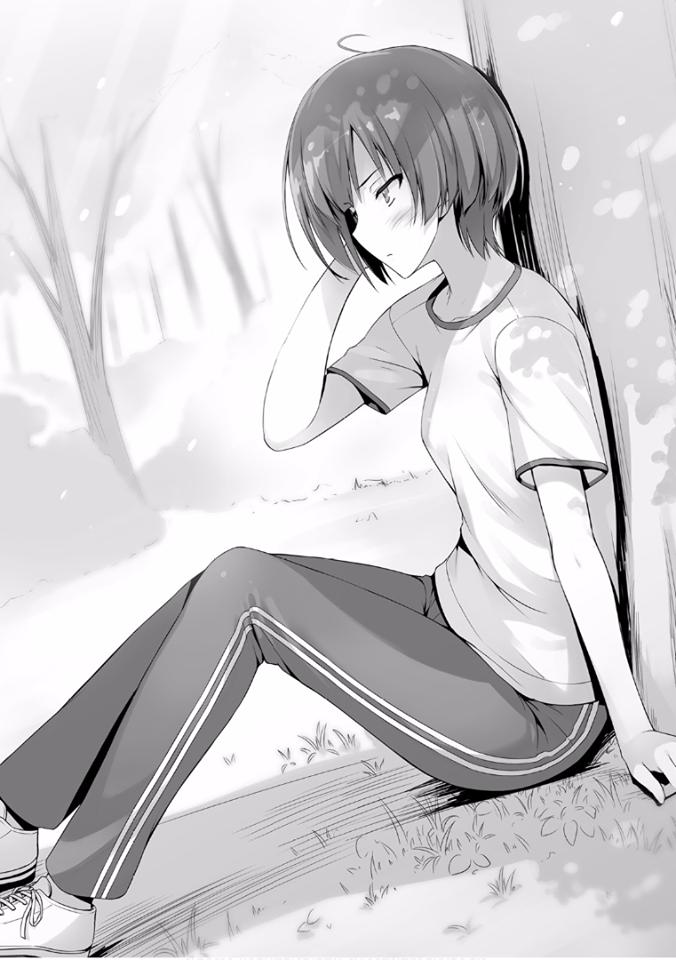
— Déjame en paz. No es nada.
— Oh, ¿no es nada?... No lo parece. ¿Quién te hizo esto? ¿Debería llamar a un maestro?
Por el estado de la hinchazón, era fácil ver cómo tenía un dolor considerable.
— Acabo de tener una disputa con la clase. No te preocupes por eso.
Riendo con autocomplacencia, la chica lo dijo y rechazó la oferta de Yamauchi.
Ella emitía un sentimiento masculino, pero estaba claro que se sentía deprimida y mal. Supongo que estaba un poco preocupada por la disputa.
— ¿Qué vas a hacer? No puedo dejarte aquí.
Este lugar es completamente diferente de los terrenos de la escuela. Es una jungla rodeada por otro bosque.
En 1 o 2 horas, el sol comenzará a ponerse. Cuando eso suceda, esto podría conducir a accidentes.
— Mira, somos estudiantes de la clase D. Si no te importa, únete a nosotros en el campamento base.
Ya que Yamauchi pidió aprobación alegremente, Sakura y yo asentimos levemente y le seguimos la corriente.
— ¿EH? ¿De qué estás hablando? ¿Me estás tomando el pelo?
— Quiero decir, ¿no deberíamos ayudarnos unos a otros cuando alguien está en problemas? ¿No es eso natural?
Ella no tenía intención de escuchar esas palabras, así que se dio vuelta y no dijo nada. Estoy seguro de que sería muy fácil dejarla sola, pero a menos que sea en circunstancias extremas no se pueda dejar a las chicas solas en estos lugares.
— Soy de la clase C. En otras palabras, soy tu enemiga. Por lo menos entiendes eso, ¿verdad?
Esa no es razón para que no reciba ayuda.
— Pero... no podemos dejarte en este tipo de lugar, ¿verdad?
Tanto Sakura como yo asentimos, y estuvimos de acuerdo con él. Aun así, la chica ni siquiera intentó levantar su pesada espalda del árbol. Debido a que somos estudiantes de la misma escuela, es natural que nos ayudemos unos a otros. Pero si es lo correcto o no en esta prueba especial, es algo completamente diferente. Especialmente si lo juzgas de una manera calculadora y egoísta.
— No podemos regresar dejando a esta chica. Vamos a estar aquí hasta que te muevas.
Yamauchi decidió quedarse en este lugar. Luego solo tuvimos que mirar y esperar juntos. Pero entonces, la joven, tal vez juzgando nuestra presencia como un truco temporal de su imaginación, se alejó inmediatamente y continuó ignorándonos. Ella no se dio cuenta de dónde estábamos parados.
— De todos modos, en el bosque es sombrío y hay calor y humedad desagradables. Sakura, ¿no tienes calor?
— Yo.... eso es... uhm... no en particular... estoy bien.
Estar allí esperando es realmente aburrido, pero desde el punto de vista de Yamauchi, él cumplió su deseo. Porque podía pasar tiempo con Sakura, hasta que la chica cediera. Incluso entonces, también podía pasar un tiempo significativo con Sakura cada vez que le hacía preguntas a la chica. Después de 10 minutos más o menos, la chica, perdiendo la perseverancia, se puso de pie ya que no tenía más opción.
— Ustedes son tan estúpidos. Son tan ingenuos. No están pensando en su clase.
— Porque no podemos abandonar a una chica que está en problemas.
Yamauchi intentó parecer genial levantando los pulgares. La impresión de Sakura de Yamauchi ahora se está volviendo más favorable y está mejorando...
¿no es así?
Lo principal es que a Sakura no le importan en absoluto los dolorosos esfuerzos de Yamauchi. Es exactamente como en nuestra situación, ahora, cuando estamos en el bosque y no tiene sentido tratar de mirar el cielo. En primer lugar, si él pudiera ver que Sakura no es muy buena estando rodeada por otras
personas, tal vez podríamos evitar esta situación desagradable. Lo dejo acercarse a nosotros con las mejores intenciones y para ayudarnos a hacer la tarea más rápido.
— Pero, Si me vas a contar sobre el lugar donde está tu campamento. Al menos haz un mapa guía.
— ¡¿Eh?! Eso parece algo inapropiado.
Creo que Yamauchi no entendió las palabras de la chica y, volteando hacia donde estaba yo, buscó conformación. Mientras pensaba sin decir una palabra, la chica habló, sin dudarlo.
— ¡Qué idiota! No puedo creerlo, realmente, no lo puedo creer.
Yamauchi se sorprendió y se detuvo. Si de alguna manera descubrimos dónde están los campamentos de los otros equipos, ¿cómo podría ayudar esto a nuestra clase a superar esta prueba? Si estudiamos y tomamos algunas medidas, entonces, existe la posibilidad. Hablando de la clase D, ya se conoce la existencia del sitio en el que se basa el campamento. Hay muchas razones para mi ansiedad, pero corrijo mi posición sentada y empiezo a pensar en todas, una por una.
— Está bien, creo que no habrá problema.
— ¿Está bien? Entonces no hay problema Soy Yamauchi Haruki. ¡Gusto en conocerte!
— Bueno, pareces un buen tipo pero... ¡de verdad eres un idiota!
Mientras estaba asombrada por la presentación, la chica sin siquiera mirarnos, nos dio una breve respuesta.
— Yo soy... Ibuki.
Con una voz agradable para mis oídos, la chica llamada Ibuki, tan pronto como nos dijo su nombre, se rozó la mejilla, que se había puesto roja, con la mano.
Incluso durante las presentaciones, se aseguró de no mirarnos a los ojos. Tal vez odia mirar a los ojos de los demás. Sea lo que sea, estoy bastante interesado en esto. Puede ser insignificante, pero hay suciedad entre las uñas y
las manos de Ibuki. Hace poco tiempo, encontramos a Ibuki sentada, pero parece que estaba cavando.
— Jejeje, ¿ahora las otras chicas hacen cosas como pelear abofeteándose?
— Olvídalo. Nuestro problema es dónde establecieron las otras clases sus campamentos.
Incluso si lo digo en voz alta, mi aura está emitiendo el hecho de que estoy realmente asustado. Aunque puedo controlar esto, a veces mi agonía está impresa en mi cara, casi como si acariciara mis mejillas.
Ibuki tomó la maleta y se la puso en el hombro, como si fuera algo problemático, luego lanzó una extraña mirada a Yamauchi. Sus ojos parpadearon cuando casi vio que algo venía.
Bueno, Yamauchi tiene que mostrar que es un hombre, al menos frente a Sakura. Además, para impresionarme con su técnica, le ofreció su mano a la nueva chica. La verdad sea dicha, fue cortés.
— Estoy bien, espera, te lo estoy diciendo, estoy bien. Detente.
Puede que tengamos a Ibuki y su bolso bajo custodia, pero no hay posibilidad de que nos lo confíe para que lo llevemos nosotros, si creemos que ella confiará en nosotros, entonces estamos equivocados. La bolsa abandonó sus manos y, al rebotar, chocó contra un árbol con un ruido sordo. Cuando la atmósfera se volvió incómoda y casi oscura, Yamauchi se disculpó.
— Ah, lo siento. No tuve malas intenciones. Me disculpo.
— Entiendo, es solo que todavía no confío en ustedes, muchachos. Lo entiendes, ¿verdad?
Eso es todo, parece que no hay nada más que decir, Ibuki se quedó quieta en silencio, Yamauchi también, se dio por vencido y comenzó a caminar. Si no llevaba la bolsa, entonces debería llevar algunas ramas. Tal vez pensó que la obligaríamos a llevar ramas en grandes cantidades y lastimar sus manos, así que se aferró a la bolsa.
Recogimos las ramas y regresamos al campamento. No queríamos causar problemas ya que Ibuki era de una clase diferente, así que la hicimos sentar en
un lugar escondido de la mayoría de la gente. Aunque la dejamos en un lugar dentro de nuestra visión, espero que no ocurra ninguna situación desagradable.
Sería realmente mala suerte si nos encontráramos con Hirata. Por el momento, somos Yamauchi y yo, ya que Sakura se mantenía ocupada con los preparativos para la hoguera. Bueno, la noche comenzaba a caer a nuestro alrededor y todavía no nos habíamos preparado para encender el fuego, así que nos sentimos un poco impropios.
Yamauchi llegó con la caja de fósforos que recibió de Hirata, haciendo un montón de ramas pequeñas, luego se agachó ante ellas.
— Déjame encargarme de esto, te mostraré una manera fácil de hacerlo.
Cogió un fósforo de la caja y lo frotó contra la caja para encender una pequeña cantidad de combustible. Escuché por un instante, el sonido de fricción, pero el palo no parecía que produciría una llama fácilmente.
— Maldita sea, es realmente difícil.
Como Sakura estaba parada a su lado, Yamauchi adoptó una postura imponente, pero no parece funcionar como siempre, especialmente frente a otras personas.
Bueno, parece que no es algo que funcionará fácilmente.
7
Sin embargo, repetir algo por millonésima vez es un desafío, pero de repente la punta del fósforo encendió una chispa.
— ¡Oh! ¡Bien!
Finalmente, íbamos a encender un fuego. El pánico y la confusión que se acumulaban se redujeron por una técnica simple.
Y... Solo produjo humo, a pesar de esperar durante mucho tiempo para que extendiera sus llamas y ver fuego, no había señales de ello.
— ¿¡Eh!?...
— ¿Deberíamos hacerlo más exhaustivamente, para que prenda fuego a las ramas? La forma en que lo estamos haciendo ahora no va a traer ningún resultado.
— Está bien, esta vez intentaré hacerlo más cuidadosamente. ¡Ah!...
¡Maldición! Fallé de nuevo. ¿Nos dieron productos defectuosos o algo así?
Es realmente difícil encender un fuego usando solo un fósforo, no podremos tener una hoguera rápidamente. Además, gradualmente, Yamauchi parecía perder los estribos, así que, naturalmente, rozó la punta de la cerilla con vigor y la fina punta del palo se desprendió demasiado rápido. Así, 1 fósforo, 2 fósforos, etc., terminaron inservibles y los palillos se acumulaban.
— Si no encendemos el fuego con los fósforos restantes en la caja, entonces tendremos problemas.
A los pies de Yamauchi había un tercio de los fósforos que se desperdiciaron, así que para calmarlo hablé con él.
— Está bien, está bien. Es suficiente, porque solo nos quedan unos pocos.
Agarré la caja de fósforos. Se sentía ligera, pero había no menos de 20 fósforos.
Sin embargo... si queríamos seguir usándolos durante una semana, había una posibilidad de que no duraran mucho.
— ¡Entiendo! ¡Esta vez, de seguro!
Afortunadamente, justo como pensé, puso el fósforo con cuidado cerca de las ramas. Sin duda, para para encender fuego, es necesario poseer cierto nivel de habilidad, pero para mantenerlo, se necesita persistencia. No podemos esperar tener un fuego basados solo en nuestros deseos. De nuevo, aunque las ramas de madera emitían humo, aún no se convirtió en un fuego vivo.
— ¿Pero por qué? No cometí ningún error esta vez, ¿verdad? Voy a pedirle consejo a nuestra maestra.
Fallando al intentar verse bien frente a Sakura, Yamauchi, se sintió más nervioso de lo normal, ahora va a buscar a Chabashira-sensei.
Debería pensar más claramente sobre el asunto obvio. Me agaché tratando de arreglar las ramas con mis manos.
— ¿Por qué no podemos encender un fuego?
En este momento, otra figura se agachó a mi lado mirando con asombro las huellas quemadas de nuestros esfuerzos.
— Pensé que sería fácil, ya que usamos madera, pero en comparación con mi imaginación, comenzar fuego en la vida real es mucho más difícil.
No podía comprender el significado de las palabras de Sakura, así que solo asentí con la cabeza, fingiendo que había oído lo que dijo.
— Las fogatas que vemos en las películas o en los dramas son enormes, con muchas pilas de ramas, así que tomamos eso como una realidad. Nos quedamos con esa imagen y fuimos a buscar ramas, sin embargo, ¿por qué no podemos encender fuego con nuestras grandes habilidades?
Doblamos las ramas delgadas en una pila.
— Parece que esta vez deberíamos colocar el fósforo del lado de las ramas delgadas, ya que hay muchas que también están húmedas.
El aficionado se preguntó si fue un acto imprudente, prendiendo fuego a ramas mojadas. Bueno, parecía que el fuego no encendió muy bien a pesar de que Yamauchi usó docenas de fósforos.
— Es un poco problemático, pero tenemos que ir de nuevo al bosque para recoger ramas delgadas y secas y hojas que prendan fácilmente.
— Huh, ¿qué están haciendo en este lugar?
Mientras pasamos por un proceso de prueba y error, Ike, quien pensamos que había ido a nadar, regresó.
— Ahora, estamos en medio de un simulacro preliminar de la hoguera.
Estamos batallando y hemos tenido mala suerte hasta ahora.
— Hoguera, ¿dices? Nunca encenderás un fuego con esas ramas gruesas.
¿No son necesarias las ramas delgadas al principio? Las ramas que traigas no deben ser gruesas. También hay ramas húmedas aquí. Es un NO completo para aquellas también. ¡Eres tan lamentable!
— Ah, pero en realidad Ayanokouji-kun...
Decidí cortar las palabras de Sakura. Ella me estaba siguiendo.
— ¿Es así? Si no te importa, ¿puedes decirme qué debo hacer?
— Por Dios, no tengo otra opción. Haré una explicación fácil. Solo espera un poco, las recogeré en un área más adecuada.
Con eso, Ike dejó la maleta con su bañador, se acercó al bosque y regresó poco después. Parecía que recogía ramas de varios niveles, desde ramas delgadas hasta ramas de grosor medio. Además, también regresó trayendo consigo un paquete de hojas secas.
— Traje algunas ramas adecuadas. Creo que lo lograremos.
Mientras lo decía, recogió la caja donde Yamauchi colocó los fósforos y rápidamente prendió fuego a las hojas secas, las hojas gradualmente se encendieron y movió las ramas alrededor. Después de eso, mientras observábamos como regulaba el fuego, añadió cuidadosamente las ramas de acuerdo con su grosor. En un abrir y cerrar de ojos, la apariencia del pequeño fuego cambió a una hoguera clásica.
— Con esto debería bastar.
— Eso es increíble. Estoy realmente impresionado. Como era de esperar, una persona que ya experimentó la vida en un campamento seguro es diferente.
— Es lo básico de lo básico. La forma de encender fuego. Cualquiera puede recordarlo incluso si lo ven solo una vez.
Pero ahora es una persona muy importante ya que casi no hay estudiantes que tengan la misma experiencia en la clase D.
— Oh, mierda. Chicos, la maestra no me enseñó nada - Wow. ¿Por qué está prendida una hoguera?
Yamauchi, que ahora regresó, se sorprendió al ver la hoguera espléndidamente encendida. Se estuvo quejando por un momento, gruñendo y olvidándose por completo de mostrar su lado positivo.
Decidí dejar el asunto de la hoguera a Ike y Yamauchi, así que me fui del lugar.
— Oye, Heyy, Ayanokouji-kun. Me di cuenta de que estabas a punto de decir algo antes y ¿está bien decirles? Sin embargo, no tienes que decir nada, si no quieres.
— Incluso si tienes razón, no hay pruebas sólidas de mi experiencia, por lo que no tiene sentido decirlas ahora. En cambio, cuando mi experiencia pueda ser útil para Ike, lo confirmaré más tarde por el bien de la clase.
Esas son algunas líneas cursis, pero simplemente dije lo que pensaba.
Sakura me estaba mirando como si estuviera impresionada o conmovida. De alguna manera, me sentía avergonzado.
— Lo siento. Estoy un poco cansado, así que iré a descansar un poco.
Gracias, Sakura.
Mientras huía, mantuve mi distancia del campamento base.
Chabashira-sensei, que estaba preparando una tienda para uso personal en las cercanías, fijó sus ojos en mi dirección. Pero al final decidió ignorarme fingiendo no haberme visto allí.
8
Cuando el reloj dio las 5 en punto, Kushida y su grupo regresaron. Hirata también fue movilizado con el grupo de Kushida. Como este era de alguna manera el regreso del líder, los estudiantes empezaron a reunirse. Parece que estaban buscando suministros de alimentos y parecían traer comida. Mirando desde la distancia, me pareció que llevaban algún tipo de frutos rojos pequeños, algo así como fresas, o incluso pequeños tomates y también había cosas que tenían la forma de uvas y kiwis.
— ¿Podemos realmente... comer todo esto?, parece un tipo de fruta, pero aun así...
Como no hay confianza en sí mismos, los estudiantes se miraron entre sí esperando a que alguien hiciera o al menos dijera algo. Pero, ¿quién tiene el coraje de comer una fruta que nunca antes ha visto?
— Sin embargo, mi garganta está sedienta... y mi estómago está vacío.
— Yo también, mi garganta se siente un poco seca.
Puede llegar la noche y aun así los estudiantes tendrán la misma conversación sin hacer realmente nada. Después de todo, siento que estoy solo en esto.
Pero, a medida que se acercaba la hora de la cena, el problema de la comida y el agua adecuadas se volvió distinto.
— ¡Oye! ¿No es este arándano de pantano? ¿También encontraron una flor de campana china? ¡Eso es genial!
Haciendo alboroto, Ike, que estaba sentado cerca de la hoguera, se acercó.
Habló mientras agarraba una de las frutas.
— Kanji, ¿entiendes qué es esto?
— Ah, este es el fruto de un arándano de pantano. Comí esto cuando fui a acampar en Otoyama. En apariencia y sabor, parece un arándano. Este es Akebia Canada (vid de chocolate). Es sabroso y dulce. Bueno, ciertamente trae recuerdos.
Curiosamente, no estaba tratando de buscar en otro lado. Después de haber encontrado estas bayas que le traían recuerdos del pasado, estaba sonriendo como un niño, pero todos los demás se quedaron allí de pie, mirando a Ike y nadie dijo una palabra de admiración o aliento.
Shinohara puede haber decidido atacar a Ike con su pregunta, sin embargo, recibió una respuesta honesta.
— ¿Huh? ... De alguna manera, siento que tienen un sabor mucho mejor de lo que recuerdo.
Como la causa de la perturbación ahora es oscura, la clase se concentra principalmente en este asunto. Poder obtener alimentos, incluso en cantidades tan pequeñas, sigue siendo un factor que puede determinar nuestra victoria.
— Al menos puedes hacer una cosa. Gracias por la hoguera, Ayanokouji.
— No fui yo, gracias a Ike.
El fuego seguía ardiendo constantemente, pero el humo estaba haciendo formas extrañas. Era casi como recordar a los otros que eran responsables de este deber. Pero, tan pronto como dije el nombre de Ike, él vino a nosotros.
— Si nos perdemos en el bosque, solo mirando el humo, podemos ubicar el lugar del campamento y regresar, ¿verdad?
— Esa es la razón por la que volvimos tan rápido, ¡gracias a ti, Kanji!
¿No pueden entender que de esta manera es inevitable que otras clases también encuentren fácilmente nuestro campamento?
No es solo Kushida, los otros estudiantes también asintieron de acuerdo con las palabras de admiración de Ike. La atención inesperada y la mirada de honor, pensé que lo convertirían en un Tengu o algo así, pero Ike no estaba mirando a Kushida, sino a Shinohara.
— Oye... Shinohara. Estuve pensando en esto todo el día, quiero decir, mi comportamiento. En una isla desierta, donde no hay baño, debe ser difícil para los estudiantes. Exageré en proteger los puntos que necesitamos.
Entonces, me disculpo.
— ¿Huh? ¿Por qué te disculpas, tan de repente?
— Es por mis recuerdos. Recordé la primera vez que fui a acampar. Esa vez fue difícil, pensando qué hacer con el baño, entre otras cosas, por supuesto con los insectos arrastrándose y ensuciándome. Es por eso que odiaba ir al baño. Entonces, cuando volví, me quejé con mis padres. Me recordé lo difícil que era, sin mencionar que esto es mucho más difícil para las chicas...
Ike explicó su situación manteniendo su compostura fría. Siendo capaz de hacer esto, él era realmente un tipo sobresaliente. Pudo destacarse como un excelente individuo, y se destacó en gran medida en comparación conmigo. Por supuesto, el hecho de que tuviera que compartir esta historia requirió mucho coraje. Sin embargo, este valor para disculparse parece ser contagioso. En poco tiempo Shinohara comenzó a explicar su situación.
— Yo también... me disculpo por lo de antes. Por negarme a beber el agua del río, diciendo que no es lo suficientemente buena. Sobrepasé los límites,
creo que me puse demasiado emocional. Creo que todos debemos intentar hacer las cosas para preservar nuestros puntos y ganar.
A pesar de que ninguno de los dos podía verse directamente a los ojos, parecía que se habían reconciliado.
Cualquier cosa que pase inesperadamente, bueno, pasa. Parece que la clase D
realmente puede ahorrar puntos. Esta premonición, este presagio pudo haber sido sentido por los otros estudiantes también. Es por eso que Hirata no dejaría pasar esta oportunidad. Levantó las manos para atraer la atención de todos.
— Chicos, no importa qué, todos tenemos un objetivo. Es la primera vez que enfrentamos un examen tan especial, pero también entendemos por qué podemos tener estos sentimientos complejos, cada persona tiene un sistema diferente de valores, por lo que es natural que se creen malentendidos. Sin embargo, sin pánico, sin disturbios, hasta el final, quiero confiar en los demás y seguir adelante.
Dijo esto con un tono claro en su voz. Se serenó y continuó hablando con inteligencia.
— Después de todo, incluso si nos queda un solo punto, sigue siendo bueno,
¿bien? Eso es porque todos tienen su propio sentido de la realidad. Pero, para hacer una estimación, debemos sacar bien las cuentas. Esto solo sucederá al final del examen. Podríamos quedarnos con 120 puntos o menos. Este es el sentimiento por el cual la clase D debería estar luchando.
— Entonces, ¿piensas utilizar 180 puntos? Esa es una percepción ingenua de nuestra situación.
Si terminamos usando más de la mitad... Habiendo hecho ya el cálculo, Yukimura, disparó una mirada aguda, no queriendo dejar pasar esto.
Hirata podía sentir lo que sucedía a su alrededor, así que dejó el manual en el suelo y comenzó a explicar cómo llegó a esa conclusión.
— En primer lugar, quiero que me escuchen hasta que concluya lo que tengo que decir. Tenemos que cubrir los puntos para nuestras comidas, son nuestros gastos número 1 y pensé que nuestras fuentes son escasas.
Nuestra necesidad de alimentos nutritivos y agua mineral deberían ser un conjunto.
Alimentos y agua potable para crédito de clase, tenemos para 1 comida por 6
puntos cada uno. Si lo hacemos como un conjunto tenemos 1 comida por 10
puntos. Si tenemos 2 comidas por día, eso es 20 puntos. Si comenzamos desde hoy hasta el día en que finalizamos el examen, la cantidad total es de 12
comidas. 120 puntos en total. Si omitimos el último día y tratamos de tolerar nuestra hambre, entonces podríamos terminar con 110 puntos. Nuestro inodoro temporal nos costó 20 puntos, el uso de las 2 carpas de los chicos, agrega otros 20 puntos. Todo eso en total es 150 puntos. Nos quedan 30 puntos y tenemos, casi una semana para vivir aquí, un total de 180 puntos. El plan de Hirata tenía una base de verdad y dejó a todos los demás sin palabras.
— Cuando escuché que solo quedan 120 puntos, tuve la sensación de que también los gastaremos rápidamente. Sin embargo, es solo transitorio y quiero recordarles que son muy conscientes de los 300 puntos. Por esta razón, tenemos que ver el resultado de los parciales o del examen final, para averiguarlo más fácilmente. Para los exámenes escritos antes de nuestras vacaciones de verano, recibimos un cambio en nuestros puntos, pero incluso si no fuera por la superioridad de la clase A, no podríamos alcanzar estos 100 puntos. Cuando veo la situación, entiendo que 120
puntos es una cantidad pequeña, la cual está disponible. Sin embargo, agregando una cosa a otra, cuando lleguemos al final de la prueba, la capacidad de tener posesiones exclusivas, puede darnos puntos de bonificación. Entonces, en realidad, quedan muchos puntos disponibles.
— Bueno, yo estaba pensando en el límite inferior de nuestros puntos, si podemos encontrar comida y agua para un solo día podemos ahorrar 20
puntos. Si no tenemos problemas con el agua potable durante una semana, podemos ganar más de 50 puntos y eso podría ayudarnos a cambiar la situación.
Con el sonido del río cerca, Hirata siguió hablando y la importancia del río nos impacta como un golpe.
— Entonces... así es como es, si podemos mostrar algo autocontrol, solo un poco, podríamos cambiar nuestra posición...
Incluso al hablar sobre un tema similar, su tono y protocolo dieron una impresión diferente. La progresión de palabras de Hirata era casi perfecta. Después de dejarles saber el límite inferior, finalmente habló sobre la posibilidad de ahorrar casi 200 puntos. Al hacerlo, tuvo éxito al establecer metas altas para sus compañeros de clase. Si hacemos nuestro mejor esfuerzo, no solo podemos ahorrar muchos puntos, sino que nos tranquilizaremos pensando que los puntos aumentarán constantemente con un poco de esfuerzo.
— Está bien, ¿no, Hirata? Podemos ganar al menos 120 puntos. Si lo hacemos, podemos ganar puntos solo agregando nuestro rendimiento,
¿verdad? ¡Intentémoslo!— Ike, que se pensaba que era el más conflictivo, estuvo de acuerdo con entusiasmo y alzó la voz. Sudou y Yamauchi también estuvieron de acuerdo como si no hubiera otra opción. Yukimura todavía parecía un poco reacio, pero se dio por vencido después de ver a su compañero Ike estando de acuerdo con Hirata.
— Aah, es verdad, Hirata, tengo algo que verificar— Ya que Yamauchi se olvidó de informar sobre Ibuki, no tuve más remedio que decirlo yo mismo.
Sin embargo, la clase continuó la discusión con mucha energía sin posibilidad de interferir— Supongo que es el destino de una persona popular... ¿Debería hacerlo más tarde?
Me acerqué a Ibuki, que estaba observando la situación desde la distancia, y le dije suavemente:
— Lo siento, podrías esperar un poco más, estoy tratando de consultar sobre tu situación.
— No te esfuerces particularmente. No quiero entrometerme— Como si tuviera sentimientos de odio a sí misma, Ibuki agarró la hierba con fuerza y
la arrancó—. Después de todo, pronto seré expulsada de aquí,
¿verdad?
— No lo sé. Hirata es excepcionalmente blando— No puedo imaginarlo echándola cuando se entere de la situación de Ibuki— No me presenté antes. Soy Ayanokouji.
— ¿Debería hacerlo una vez más?
— No, está bien. Eres Ibuki de la clase C. Lo recuerdo bien.
Estábamos el uno frente al otro después de que había terminado de presentarme de nuevo, pero Ibuki no hizo un contacto visual.
— Como referencia, aquellos que piensan que está bien beber agua del río, por favor alcen sus manos— Sin notar a Ibuki y a la clase D, Ike intentó cambiar el tema de discusión. Esta vez, no fue a la fuerza sino pidiendo opiniones. Por supuesto, tomó la iniciativa y levantó la mano. Casi la mitad de los chicos levantaron la mano. Shinohara parecía un poco desconcertada, pero Ike suavemente le dijo que se relajara.
— Yo... quiero estar de acuerdo... pero estoy un poco asustada.
— Creo que lo que Sudou dijo antes sobre hervirla no es malo. Si tienes miedo de beberla directamente ¿por qué no tratas de beberla hervida primero?
Unos pocos estudiantes estuvieron de acuerdo con esto. Con una situación diferente, el asunto alguna vez rechazado fue aceptado sin problemas.
Shinohara también levantó la mano, aunque enojada.
— No sé si podemos beberla, pero... intentémoslo.
— Yo también estoy de acuerdo. Si la primera persona puede beber, entonces seguro que está bien.
Con otros estudiantes accediendo fácilmente, Kushida levantó su mano siguiendo a Shinohara. ¿Fue la influencia de la psicología colectiva? Todo el mundo levantando la mano a excepción de Horikita y yo fue un acontecimiento inesperado. Cuando la atención se enfocó en nosotros, también levantamos ligeramente las nuestras. Sin embargo, fue difícil para todos beber de repente el agua. Por lo tanto, decidimos comprar el agua no solo para asegurarla, sino también con la propuesta de utilizar efectivamente botellas de PET.
— Tengo una solicitud para ti, Ike-kun. Quiero que me ayudes con tus habilidades a partir de ahora. Parece que eres el único en la clase con experiencia para acampar... ¿Podrías ayudarme?
— Bueno, bueno, si lo dices de esa manera, podría cooperar.
— ¡Gracias!
Como si la respuesta cortante de Ike fuera agradable, Hirata saltó de alegría. Ni Shinohara, que parecía quejarse más, interrumpió. Inmediatamente comenzó a buscar opiniones sobre la comida.
— Oscurecerá pronto, así que solo podemos ordenar por el momento. Pero por favor, déjenme pensar por un tiempo a partir de mañana. Parece que hay varios alimentos cerca de nosotros, así que lo checaré mañana.
— ¿Qué quieres decir con cerca de nosotros? ¿Es un lugar diferente de donde Kushida y otros encontraron las frutas?
— Uh-huh, hay un río. Es un buen lugar para atrapar y comer pescado.
Parece que hay bastante pescado de agua dulce al darle un vistazo. Creo que podremos disminuir el gasto de puntos en algún grado. Sería absolutamente delicioso atrapar un pez y comerlo a la parrilla en la fogata.
— Incluso si sabe bien, ¿cómo piensas atrapar un pez?
— Bueno, ¿voy a bucear? No lo he hecho antes— Ike hizo un gesto de natación, pero probablemente no sea fácil atrapar un pez haciendo buceo.
— Incluso si parece irrazonable capturarlo con las manos desnudas, capturar un pez es perfectamente realista.
Dijo Hirata, señalando una entrada mencionada en el manual. Había un dibujo de una caña de pescar, y parecía que varios tipos se prestaban por separado.
— 1 punto para cañas de pescar con cebos, 2 puntos para las que tienen señuelos.
Es decir, no parecía sorprendentemente difícil recuperar el costo.
Dependiendo de la situación, podría convertirse en la victoria más espectacular para conseguir la cantidad de comida para 1 o 2 días con un solo punto. Incluso en una situación en la que no pudiéramos atrapar ninguno, no es un golpe serio debido a un gasto mínimo.
Sin escuchar ninguna objeción, Ike dijo felizmente:
— Es un trato, entonces. Vamos a buscar una caña de pescar y atraparlos.
Por supuesto, con la más barata.
Con esto, decidimos que nuestra meta era conseguir alimentos del bosque y peces a partir de mañana. Si logramos capturar peces u obtener vegetales, decidiremos a través de un debate sobre la compra de un juego de utensilios de cocina con 5 puntos adicionales.
Luego decidimos pagar 20 puntos por la instalación de un cuarto de baño. Se esperaban fuertes objeciones, pero con una alta posibilidad de arruinar nuestra salud con agua fría, dado que los chicos solo lo usarían en la mitad de la noche y todas las chicas dieron una respuesta positiva sobre el asunto de beber agua del río, convencimos a la facción opositora.
— Por cierto... esa chica, Ibuki de la clase C, ¿verdad? La vi antes— Una estudiante llamada Satou estaba mirando sospechosamente a Ibuki que estaba sentada en silencio a la distancia. Parecía haberse dado cuenta de ella antes, así que no había necesidad de que yo rompiera el hielo.
— Err, parece que hubo problemas en la clase— Yamauchi explicó un poco apresuradamente por qué podría haber estado aislada de sus compañeros de clase.
— Ya veo, ese es un criterio apropiado. No podemos abandonarla.
— Pero Hirata-kun... ¿Podría ser una espía? Hay reglas que se aplican a los líderes...
— Ah, ¿es así?... Existe ese tipo de posibilidad...
Yamauchi estaba confundido habiéndolo notado ahora. Si era posible, quería que lo notara en primer lugar.
— Lo comprobaré a partir de ahora. ¿Está bien, Yamauchi-kun y Ayanokouji-kun?
Hirata llamó a Ibuki y a otros dos conocidos y se dirigió hacia el lugar donde estaba Ibuki. ¿Hirata excluyó a Sakura debido a su consideración como chico guapo? Sakura también parecía estar aliviada de no ser notada.
— ¿Es un buen momento, Ibuki-san? Quiero preguntarte algunos detalles.
— Probablemente soy una molestia. Me han cuidado bien— Como si hubiera tomado una decisión por sí misma, se levantó rápidamente tratando de irse.
— Espera un minuto. Quería preguntar en caso de que algo sucediera...
quiero ayudar.
Él la llamó para que se detuviera, enfatizando el final de la oración. ¿Hirata también sintió que no era algo trivial mirar su cara hinchada?
— Las cosas no cambiarán si espero. No quiero perder más tiempo aquí.
— Esta es una prueba, por supuesto que habrá estudiantes que duden de ti.
Sin embargo, no quiero echarte si estás herida y no puedes volver a tu clase. Por lo tanto, estaba pensando en traer a Yamauchi-kun aquí también. Quiero que me digas tu estado correctamente.
— Esto no es algo que funcionará hablando. Además, he escuchado sus discusiones antes. Se convertirá en un problema si sus estrategias hasta ahora se filtran.
Girando, Ibuki comenzó a caminar. Hirata la interrumpió un poco a la fuerza.
— Si realmente eres una espía, no estarías hablando de ser expulsada.
¿Cierto?
— Ya es suficiente. Solo busco un lugar donde pueda dormir.
Como se esperaba, ella no volverá a la clase C. Con el sol hundiéndose, la noche llegará pronto.
— Es una locura que una chica duerma sola al aire libre en este bosque.
— Incluso si es una locura, es lo único que puedo hacer. No ganas nada incluso si me ayudas.
— Esto no se trata de ganar o perder. No podemos simplemente dejar a una persona en problemas. Todos lo creemos.
Su rostro refrescante se había hundido de repente. Ella nos lo mostró sin remordimientos. Cuando se dice de esta manera, no hay forma de ir contra una persona que ha sido tomada cautiva. Ibuki siguió la resolución de Hirata, habló con algunas palabras y vacilante, como si finalmente supiera lo que había sucedido.
— Tuve una disputa con un chico de la clase. Por eso fui golpeada y pateada por ese imbécil. Eso es todo.
— Esto es horrible. Levantar la mano contra una mujer.
Tampoco preví este desarrollo. Pensé que, sin lugar a dudas, la pegaron en una pelea entre chicas.
— No planeo dar detalles de eso. Ni siquiera creo que me darán refugio, a una fugitiva. Nos vemos.
— Espera. Entiendo que realmente estás en problemas, y ahora entendí la situación. Danos un poco de tiempo. Luego hablarás con los otros estudiantes sobre tu situación y cómo te han dejado atrás. Ayanokouji-kun,
¿puedes quedarte y vigilar a Ibuki-san? A partir de ahora, iremos contando a todos tu situación.
Dicho eso, volvieron a sus grupos y me dejaron allí. ¿Me dejó aquí porque confió en mí o porque tomé el lugar de Yamauchi como la persona confiable? Sólo me lo preguntaba.
— Ese tipo, él es realmente demasiado blando, ¿no?
— En mayor o menor medida, la mayoría de las personas son así. ¿No hay personas que son así también en tu clase?
— De ningún modo. Ese tipo de personas son casi inexistentes en la clase C.
Habiendo dicho eso, Ibuki se sentó una vez más en el suelo, abrazando sus rodillas contra su pecho, sin levantar la vista. Y como resultado de la discusión y también gracias a la persuasión e influencia social de Hirata, se decidió que Ibuki será cuidada en la clase D. Algunos estudiantes expresaron una fuerte oposición a esto, pero con motivo del pase de lista, la clase C perderá los puntos.
Al parecer, finalmente lo aceptaron y lo consideraron una oportunidad. Hirata no parecía tener la misma opinión, pero los otros estudiantes pensaban lo contrario.
Precisamente porque podría haber una ganancia, un beneficio de ella, es mejor reconocer la oportunidad y aprovecharla.
Sin embargo, el tema de los derechos de ocupación de este lugar es muy delicado. Todo se le ha explicado con precisión a Ibuki y le hicieron prometer que no se acercaría furtivamente al dispositivo. Es natural que lo hagan porque, si alguien deja escapar que el líder es Horikita, sufrirá un gran daño.
Luego decidimos pedir y comprarle a Chabashira-sensei dos juegos de comida, agua y una tienda para hombres necesaria para esta noche. Con la cooperación de Hirata e Ike, la tienda se armó sin problemas. Justo antes de que se ponga el sol, todo estaba preparado y los estudiantes comenzaron a comer todo lo que quisieran.
— Oh, Ibuki-san, ten, come esto.
Kushida se acercó a Ibuki que había estado a la distancia y sola. Luego le ofreció una comida nutritiva y una botella de agua.
— ¿Qué es esto? ¿Por qué yo?
— ¿No tienes hambre?
— Pero ciertamente no se proporciona comida y se divide por clase, ¿o sí?
No debería haber ningún sobrante.
— Sí, pero está bien. Decidimos compartir todo con el grupo.
Desde un poco más lejos, cuatro personas del grupo de Kushida agitaban sus manos en dirección a Ibuki con caras sonrientes. En otras palabras, 4 personas compartieron 3 porciones de comida y agua, y la porción adicional fue para Ibuki.
— No soy idiota. Todos, son demasiado blandos.
— No dudes en comer. Además, hablemos más tarde. Estaré esperando en la carpa.
Kushida se lo dijo y regresó a su grupo. Parece fácil ayudar a un chico de otra clase hasta que tenemos que reducir nuestras porciones de comida. Entonces se vuelve difícil. Pero Kushida, que desea la felicidad de todos, absolutamente efectuaría un acto de caridad.
— Bueno, visto desde este punto de vista, todo es notable. Incluso las chicas lo son.
Yamauchi, que estaba comiendo, señaló a cada grupo.
— El equipo de la emperatriz dirigido por Karuizawa. El equipo de Kushida con sus propios amigos cercanos. El equipo arrogante de Shinohara. Y
luego, Horikita y Sakura que están solas.
Todos los chicos estaban comiendo acurrucados relativamente juntos, pero las chicas estaban tomando distancia de cada equipo. Obviamente, parecía haber una pared o un espacio allí, al igual que grupos de otras clases. Si hubiera alguna excepción, entonces el equipo de Kushida sería considerado neutral o más precisamente, estaba lejos de tener mucha influencia como conjunto.
— Sakura es tan lamentable. Debería comer con ella, ¿verdad?
— Deja eso. Probablemente la asustes.
— Maldición, quiero acercarme más, pero el hecho de que sea demasiado tímida es un problema.
Aparte del defecto de Sakura, probablemente siente que es difícil ponerse en contacto con un tipo agresivo como Yamauchi. A pesar de las advertencias, Yamauchi parecía preocupado y estaba demasiado impaciente por ir con ella.
— ¿Qué pasa, Haruki? Eres astuto, mirando a una mujer hermosa tú solo.
¡Déjame unirme a ti!
Ike, que estaba viendo a Yamauchi mirando alrededor con un movimiento repetido y extraño, lo malinterpretó y se le acercó.
— Honestamente, cada vez que los veo, los pechos de Sakura no son tan malos. No son del tamaño de una estudiante de 1er año. Su camisa está abultada. Son muy eróticos. Eso es incluso más atractivo que Kikyou-chan.
Ike estaba mirando los pechos de Sakura con devoción y concentración.
Yamauchi bloqueó el campo de visión de Ike.
— Oye, qué demonios.
— No mires a Sakura con esos ojos pervertidos. Tienes los ojos puestos en Kushida, ¿verdad?
— Sí, sí, tienes toda la razón. Pero está bien. Una ídol es para todos, ¿verdad?
Haruki, tú, ohhh, tal vez tú... hacia Sakura...
— Bueno, NO ES ASÍ. Mira, ¡vamos a comer rápido!
Aparentemente, en cuanto a Yamauchi, parece que quiere mantener en secreto el hecho de que cambió su objetivo hacia Sakura. En este campamento, no queda tiempo para hacer algo por la noche. Es el flujo de la naturaleza lo que
despierta este tipo de conversaciones amorosas. Noté que Hirata estaba cerca repartiendo comida.
— ¿Huh? Por cierto, ¿dónde está Kouenji-kun?
Pensé que todos se estaban reuniendo aquí, pero Kouenji está perdido.
— En cuanto a Kouenji, se quejó de estar en malas condiciones físicas y regresó al barco. Por supuesto, ya que que se enfermó, ya se les han reducido 30 puntos. No se puede evitar. Esta es la regla. Kouenji ahora está retirado y tiene la obligación de estar en el barco durante 1 semana, recibiendo tratamiento médico y esperando nuevas órdenes.
— ¿¿¿¿Eeeeeeeeeehhhhhhhhhhh????
Gritos de sorpresa surgieron de todos a la vez.
— No bromees. Kouenji, ¡¡ese tonto!! ¿Qué está pensando?
El generalmente silencioso Yukimura gritó y comenzó a patear el suelo. Pensé que era un hombre libre en todos los aspectos, pero seguramente se retiró egoístamente. No sentía la necesidad de ascender a la clase A. Para relajarme, incluso si la clase pierde 30 puntos, no me importa para nada.
— ¡¡Maldita sea!! Perdimos 130 puntos ¡A la mierda!
Tanto los chicos como las chicas parecían enloquecer por las acciones de Kouenji, pero si la persona no estaba allí, no podían golpearlo. La risa atronadora de Kouenji continuó resonando en la cabeza de todos.
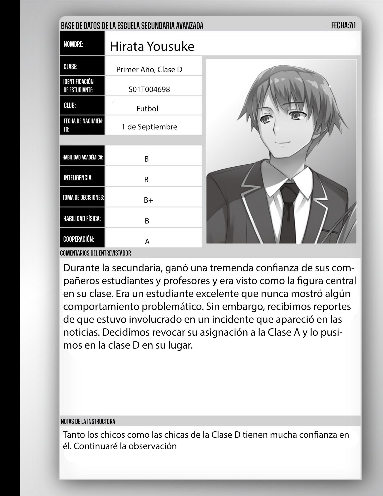
LOS COMPETIDORES HACEN SU MOVIMIENTO
Últimamente, me despierto en la mañana siempre mucho antes de lo que pienso.
Esta noche, el calor y la humedad me hicieron dar vueltas en mi cama innumerables veces. Entonces, antes de darme cuenta, ya estaba despierto.
Sentí que mi espalda se calentaba y recordé que en mi tienda mantuvimos encendida la lámpara toda la noche. Además, ya me sentía sudoroso. El tema de cómo usar la carpa todavía era un asunto complicado, así que lo mantuvimos sin cambios. El aire nocturno que entraba en la tienda era una bendición, pero tan pronto como amanece, la temperatura aumenta lentamente. Sin querer despertar a nadie más, salí a hurtadillas de la tienda, lo más silenciosamente posible. Afuera era como estar rodeado por montañas, porque muchos paquetes estaban amontonados cerca de nuestra tienda. Mis compañeros de clase, chicos y chicas por igual prefieren guardar sus cosas, suministros y maletas fuera de sus tiendas. Como queríamos hacer el mejor uso de la carpa, no trajimos ningún paquete dentro.
Primero, verifiqué que no había nadie cerca y luego, comencé a buscar cierta cosa de cierto color. Ayer, encontramos a una chica de otra clase, Ibuki, y es su mochila lo que estoy buscando. Como su mochila tiene un color diferente del que usamos en mi clase, será fácil encontrarlo.
Tan pronto como lo veo, estiro mis manos para tomarla. Mientras abro la cremallera lentamente, estoy pensando que si alguien me atrapa en este mismo momento, estoy seguro de que quedaré estigmatizado como un pervertido. En el interior hay una toalla, una muda de ropa interior. Solo lo básico que todo el mundo llevaría en sus mochilas. Pero, espera, ¿qué es esto?...
— ¡¿Una cámara digital?!…
Entonces, tenía razón... Sabía que escuché un sonido sordo ayer cuando Yamauchi trató de ayudarla cargando la mochila y ésta se cayó cerca de un árbol. Este no es un artículo apropiado para una isla desierta. En la parte inferior de la cámara está el sello adhesivo que demuestra que ha sido prestado. ¿Por
qué Ibuki tiene esta cosa? Tengo que pensar en las razones. Si estuviera en los zapatos de Ibuki... ¿Para qué usaría esto? Tan pronto como llevo la imagen a mi cabeza, surgen muchas posibilidades. Bueno, ahora que recuperé una cámara digital, lo primero que tengo que hacer es encontrar una fuente de electricidad e intentar verificar qué tipo de imágenes ha guardado en su tarjeta de memoria.
No hay rastros que prueben que se haya usado, no hay datos que se hayan cargado. Después de descubrir lo que estaba buscando, devolví la mochila a su lugar y volví a mi tienda.
— Buenos días, Ayanokouji, ¿a dónde vas, al baño?
Hirata ya no estaba durmiendo, en cambio estaba despierto y girando la cabeza hacia mí, me estaba hablando. ¿Cómo? Estaba tan desconcertado que sentí que incluso notó que mis manos se mojaban por el sudor.
— ¡Oh! ¿Te desperté?
— En realidad no. No es fácil dormir bien en este entorno. Es solo... me duele la parte baja de la espalda. Bueno, es natural cuando no tenemos nada que usar como un colchón adecuado para dormir.
Cierto, aquí no tenemos colchones ni almohadas, además, estamos realmente apretados en las tiendas, por lo que dormir en estas condiciones no es cómodo, sin embargo, con la excepción de nosotros dos, ahora no podía oír nada más que el sonido de nuestro compañeros de clase durmiendo. Apuesto a que están cansados por hacer varias tareas durante todo el día.
— Los puntos que usamos ayer y también el hecho de que Kouenji se retiró, combinados, nos costó alrededor de 100 puntos. Hablé con todos sobre el peor escenario posible, quedándome con solo 120 puntos. Sin embargo, en realidad no podemos saber exactamente cuántos puntos vamos a tener al final... Cuando estaba pensando en todo esto, me desperté.
Hirata sacó el manual como si quisiera confirmar la situación. La retirada de Kouenji, sin duda fue un duro golpe.
— Todo saldrá bien. Llegamos a esta conclusión por el beneficio de nuestra clase.
Aunque no es tan simple y no quiero cargar la responsabilidad sobre mis hombros solo. Desde mi punto de vista, tengo que mirar el manual. Tenemos que evaluar el lugar donde guardamos el manual para que no sea difícil mirarlo.
Pero, esta atención detallada es bienvenida.
— Solo estoy haciendo esto porque me gusta. Además, haré lo que pueda para la comodidad de nuestra clase. Esa es la única satisfacción que obtengo de esto, pero tengo que admitir que es inesperadamente difícil.
Cuantos puntos queden en esta prueba especial a partir de ahora afectará profundamente nuestra vida escolar. En otras palabras, creo que no es bueno forzar un sentimiento equivocado.
Entonces, si la clase lo hace bien podremos vivir cómodamente ¿eh? Bueno, si hay una posibilidad de tener éxito, entonces esta conversación no es más que un sueño. Para ser honesto, eso es casi imposible. Porque el sistema de puntos de esta escuela es simplemente legendario.
— ¿Pretendemos ser como los estudiantes de la clase A? ¿O intentamos alcanzarlos siendo nosotros mismos como los estudiantes de la clase D?
¿Entonces, qué debemos hacer?
Al escucharme a mí mismo haciendo esta pregunta, entendí que no tenía sentido, terminé haciendo una pregunta malhumorada. Hirata es una masa de buenas intenciones. Pensó que quería escuchar su opinión sobre el asunto, por lo que habló.
— Es una pregunta difícil. Tener como objetivo alcanzar las clases a superiores a nosotros, incluso si trabajamos todos juntos con todas nuestras fuerzas... lo siento. No puedo darte una respuesta adecuada de inmediato.
¿Cuántas veces tiene que pensar en este asunto? Hirata ofreció una respuesta disculpándose mientras me devolvía la sonrisa débilmente.
— Ayanokouji, ¿pretendes llegar a la clase A? ¿O eres una persona que piensa que la vida escolar debería ser solo por diversión?
— ¿Cómo debería decirlo? Es una prioridad en mi vida escolar. Pero ascender a la clase A no es algo realista.
— Ya veo. Yo también siento que no es tan simple. Por ejemplo, incluso si todos juntos y al unísono, apuntamos a la clase A, el fracaso de nuestro primer mes en la escuela, el cual llevamos sobre nuestros hombros, es grande.
Aunque Hirata no era alguien que diga tonterías, incluyó a muchos otros estudiantes en este plan. Si estamos hablando del rango más alto, no podemos omitir a la clase A. Incluso con un gran esfuerzo, no es fácil acortar la diferencia.
Tenemos que superar una diferencia cercana a 1 000 puntos. De hecho, eso es algo enorme. Debemos tener en cuenta que el factor de utilidad de este examen es intentar ganar puntos haciendo nuestra vida cotidiana aquí. Entonces, si miramos la situación de la clase D, eso significa que tenemos que ganar entre 100 y 150 puntos. Sin embargo, incluso si queremos superar a la clase C, que es la clase inmediata que está por encima de nosotros en el ranking, es un sueño que en este momento se mantiene como tal.
— Creo que no tenemos que ser impacientes. Antes que nada, ahora la clase D tiene que pasar esta prueba como un todo. Para hacer eso, tenemos que mirar nuestro próximo objetivo tranquilamente.
Hirata es libre de elegir la forma en que haremos esto. Además, seguro una gran parte de nuestros compañeros aprobará su decisión. Es algo necesario para todos nosotros entender que tenemos que hacer un gran esfuerzo para conseguir nuestras necesidades diarias aquí, para que ganemos puntos para nuestra clase. No es una mala idea cerrar los ojos e ignorar la gran diferencia de puntos entre nosotros y las otras clases, al menos por ahora.
Mientras me estaba metiendo en la ingenua determinación de Hirata, se levantó en silencio, sin despertar a nadie, salió de la tienda y se dirigió hacia el baño. La ausencia de Hirata hizo que la tienda fuera más silenciosa, así que me lancé al espacio abierto y estiré mi cuerpo. De alguna manera deberíamos verificar la situación de la clase A, de lo contrario, deberíamos averiguar los sitios de clase C y B.
Tenemos una ventaja porque controlamos el río, sin embargo, es difícil decir que nos da un nivel de superioridad. Una vez más, verifico y me aseguro de que todos los miembros de nuestras tiendas estén durmiendo. Al mirar el manual
encontré alrededor de 5 páginas en blanco. Una de ellas está hermosamente cortada. Tomé prestado su bolígrafo. Después de replicar un mapa de una isla, lo doblé en un pequeño pedazo y lo puse en mi bolsillo. Poco después, Hirata, que regresó del baño, se asomó al interior desde la entrada.
— ¿Te gustaría ir a lavarte la cara conmigo?
Acepté. La temperatura dentro de la tienda se elevaba constantemente con la salida del sol.
Decidimos ir a un río cercano, así que sacamos las toallas de nuestro equipaje, que estaban envueltas en vinilo. Hirata aprovechó la oportunidad para guardar el manual en su maleta, por lo que nos tomó algo de tiempo. Los accesorios de plástico que estaban unidos a la maleta de Hirata producían un sonido chirriante.
— ¿Son esos regalos de Karuizawa?
— Lo has descubierto. ¿Cómo supiste?
Fue fácil adivinar mirando el accesorio que tenía una marca de corazón.
Cuando nos dirigimos al río, inesperadamente notamos que había alguien allí.
— ¿Qué estás haciendo aquí?
Kanzaki de la clase B estaba mirando en esta dirección evaluando a la clase D.
Con él había chicos desconocidos, probablemente estudiantes de la clase B, que estaban mirando algo más lejos. Estaba ligeramente sorprendido, como si no sospechara que viniéramos tan temprano de nuestra tienda, pero pronto recuperó su tranquilidad.
— Ha pasado un día, así que me preguntaba qué había sucedido. Vine a verificar su situación. Se han apoderado de un buen sitio.
Estaba honestamente interesado mirando el campamento base desde una orilla del río. No parecía tener un motivo ulterior.
— Sin duda, eres... Kanzaki de la B clase, ¿verdad?
Hirata pareció reconocer a Kanzaki ya que recordó su nombre.
— ¿Te he sorprendido? Lo siento, no fue mala intención.
Disculpándose, Kanzaki nos dio la espalda y comenzó a caminar.
— Kanzaki, ¿dónde tiene la clase B su campamento base?
No sabía si él nos iba a decir, pero intenté preguntar. Kanzaki se volteó y respondió sin renuencia.
— Hay árboles grandes y retorcidos en el camino de regreso a la playa cuando se avanza por el camino desde aquí. Hay un terreno de acampada donde la clase B se queda cuando se dirigen hacia el bosque al suroeste de allí. No te perderás cuando entres en los árboles grandes. Dile a ella que no me importa si viene cuando lo necesite.
Se fue diciendo esto. Hirata intercambió una mirada curiosa conmigo.
— Eran amigos. Pero, ¿qué quiere decir con decirle a ella?
— Hmm, ¿qué podría significar eso?
Kanzaki, Ichinose y Horikita cooperaron una vez debido a la falsa acusación anterior. Tal vez él piensa que todavía están en buenos términos.
— ¿Viniste a espiar la clase D para ver cómo usamos nuestros puntos?
No había duda de que ese era uno de los propósitos después de ver una expresión de incomodidad en su rostro. Él podía verificar con certeza nuestro consumo de puntos solo con ver la cantidad de inodoros, duchas y tiendas. Sin embargo, eso no es lo único que querían saber. Probablemente querían saber quién es el líder de la clase. El derecho a ser propietario de un sitio caduca cada 8 horas, lo que significa que es posible que calculen el tiempo y tengan como objetivo el momento en que actualicemos el sitio. Pero, por supuesto, lo predijimos también. Por esa razón, al posponer deliberadamente la segunda actualización ayer, el derecho de propiedad se ajustó para que expirara después de las 8 en punto. Al hacer esto después del pase de lista, es posible actualizar los derechos de ocupación mediante el uso de la multitud como camuflaje.
Hirata se lavó la cara en el río como si no le importara que lo vieran. En todo caso, parecía que estaba más incómodo. Limpió la toalla y murmuró:
— No es incorrecta nuestra estrategia... Incluso si no le ganamos a otras clases, me gustaría que al menos nos uniéramos y completáramos la prueba. Es por eso que no quiero que se note mi identidad de líder.
Su pelo mojado por el agua estaba brillando. Un hombre impresionantemente guapo no tiene que preocuparse por nada.
— No te preocupes tanto. Deberías ser más despreocupado.
— Gracias. Que digas eso me hace honestamente feliz.
Después de lavarme la cara, tomé agua del río con la mano y la metí en mi boca.
Incluso en un bosque extremadamente cálido, el agua del río era fría y sabrosa.
Dado que el agua subterránea fluye hacia la superficie como un manantial, el agua del río cambia poco su temperatura y dado que fluye desde la parte superior ésta apenas aumenta. Fue una suerte que nos apoderáramos de este sitio como base.
— Antes que nada, creo que tenemos que adaptar nuestras camas adecuadamente. Como el piso es duro aquí, va a ser una semana difícil sin un sustituto de colchón, como una alfombra. Ponte en acción reuniendo opiniones cuando todos despierten. Tenemos que cooperar y hacer nuestro mejor esfuerzo.
1
Después del final del pase de lista de la mañana, podíamos movernos como quisiéramos. Por supuesto, Hirata dio instrucciones a compañeros confiables, y también comenzó una estrategia sobre cómo ahorrar puntos. Por otro lado, los estudiantes que realmente no tenían ganas de ayudar o personas como yo y Horikita que preferían ser independientes comenzaron sus propias actividades.
— ¿Qué mierda son ustedes, muchachos?
De repente, la voz enojada de Ike resonó a través del campo. Miré en la dirección de la voz para poder ver la situación. Y luego, dos estudiantes varones sonreían como gatos de Cheshire.
Ibuki, quien mostró una expresión amarga solo por un momento, se metió a la sombra de la tienda como si estuviera tratando de esconderse.
— ¿Komiya y Kondou?
Al igual que Ibuki, quien tosió abruptamente, también encontré a esas dos personas familiares. Eran dos estudiantes de clase C.
— Bueno, parece que la clase D está viviendo una vida bastante frugal. Como era de esperar, esta es una clase de defectuosos Mientras se llenaban la boca con papas fritas, compraron botellas de PET para combatir el calor. Y no era solo agua, parecía soda.
— Parece que tienen una vida muy cómoda. Compañeros de la clase C.
— ¿Conoces a Ryuuen?
— Es un estudiante de clase C. Escuché varios rumores sobre él. Un tipo bastante imprudente, según parece.
— No es del todo así. Todo lo que hace ese tipo termina siendo desordenado.
Luego Ibuki habló, irritada, como si estuviera hablando de su enemigo.
— Esos dos son los pandilleros de Ryuuen. Puedes decir que son sus subordinados.
Si lo pienso, esos dos pelearon mucho con Sudo en el pasado y en lugar de aparecer accidentalmente en este lugar, es más probable que Ryuuen se mueva más en las sombras y los envíe aquí.
— ¿Qué comiste en el desayuno? ¿Césped? ¿O insectos? Ten, puedes comer bocadillos también.
Con eso, sacó una papa frita y la arrojó cerca del pie de Ike, quien, mientras tanto, se arrastró hacia ella. Toda la clase D no pudo evitar sentirse irritada, mientras observaba ese comportamiento instigador. Exactamente porque todavía seguían ahorrando los suministros de comida.
— Tenemos un mensaje de Ryuuen-san. Si quieren disfrutar plenamente de las vacaciones de verano, deben venir a la playa ahora mismo. No sean
reservados. Más vale que vengan. Si están cansado de vivir como tontos, vamos a pasar un momento de ensueño juntos.
Pensé que volverían inmediatamente después, pero se quedaron aquí. Siguieron comiendo aperitivos ante todos como una forma de molestar.
Parecía que Ike les gruñía repetidas veces, pero no había de qué preocuparse.
Por el contrario, a veces un comportamiento provocador parecía alimentar aún más la antipatía. Esta provocación de la clase C continuó durante 10 minutos, pero como Hirata decidió que era el momento de partir y volver a reunirse, volvimos a la dirección del lugar que consideramos nuestro campamento.
— Parece que no vinieron a buscarme.
— Ah, simplemente tenían el propósito de molestarnos.
Fue un comportamiento extraño, pero pudimos obtener información de que la clase C, mediante el uso de puntos, tenía en sus manos productos de lujo como dulces y jugos.
En esta prueba especial donde deberíamos ahorrar, incluso si es solo un punto,
¿qué diablos significa eso?
— Hace un tiempo, esos dos nos dijeron que compartiéramos un momento de ensueño, ¿sabes de qué estaban hablando?
— ............. Quizás, me pregunto si no se está moviendo hacia el peor de los casos.
Ibuki no dijo nada más que eso, y al igual que ayer, se dirigió al lado de un árbol que estaba un poco lejos.
El peor de los casos...
Por las dudas, parece mejor decírselo a Horikita.
— Horikita, ¿estás aquí?
Después del desayuno, Horikita regresó inmediatamente a la tienda y ya no apareció. La llamé enfrente de la tienda de las chicas. Aunque no hubo respuesta por un momento, se escuchó un sonido de la tienda que se
balanceaba ligeramente y de roces de tela. Cuando ese sonido se detuvo, Horikita salió lentamente desde adentro.
— ¿Escuchaste las voces hace un rato?
— Sí, escuché que fue una provocación barata por parte de la clase C.
— Estoy un poco preocupado y estoy pensando en verificar la situación,
¿quieres que vayamos juntos?
— Es algo raro... verte actuar por tu cuenta, tomar la iniciativa. ¿Estás bien?
¿Es buena tu condición física?
Estas son en realidad palabras que quiero decirle a ella.
— Después de todo, soy libre por una semana. No tengo nada especial que hacer hoy y esta es una forma de matar el tiempo.
— No quiero moverme demasiado. Ahora que soy la líder, también existe la posibilidad de un accidente, si me destaco demasiado o muy poco.
— Es un riesgo que debes tomar ya que has sido designada como la líder adecuada.
Incluso si no estás seguro de quién es el líder, si expones a un alumno como líder, siempre existe la posibilidad de tener razón. Cuanto más destaque, más estará en la lista de personas sospechosas a las que se debe prestar atención.
— Entiendo tus sentimientos pero, incluso si permaneces encerrada, eso no cambiará la situación. Has estado interesada en buscar a Ryuuen y has estado observando a Ichinose. También está el hecho de que eres la hermana del presidente del consejo estudiantil y sus colegas también son conscientes de ello. En otras palabras, no importa lo que hagas, te convertirás en uno de los objetivos.
De cualquier forma, ya sea que adivines o falles aun obtienes 50 puntos solo por esta vez, y como no hay evidencia definitiva, apostar por esto es difícil. En el momento en que designamos un líder, ciertas condiciones se hicieron necesarias.
— Tienes razón. No importa lo que piense al respecto, creo que no se puede decir cuál es el líder. Bueno, bien, también me preocupan las situaciones de otras clases. Vámonos.
Contrariamente a nuestro mal presentimiento, junto con Horikita que procedió con movimientos pesados, nos dirigimos a la playa donde la clase C estaba esperando.
2
Justo antes de salir del bosque, desde los arbustos vimos a muchos estudiantes de la clase C en la playa. La situación que estábamos viendo estaba más allá de nuestra imaginación.
— No puede ser... este tipo de cosas... ¿Es posible?
Como si no pudiera creer lo que veía, Horikita repetía “imposible” muchas veces.
Pensé lo mismo. Era un patrón que no esperábamos en absoluto. No solo se instalaron inodoros provisionales y un cuarto de ducha. Césped con protección solar, equipo para barbacoa, sillas, sombrillas, aperitivos y bebidas. Había todo tipo de equipos necesarios para el entretenimiento.
El humo de una carne ardiente y las risas. En la costa, los estudiantes disfrutaban ruidosamente del mar mientras las motos acuáticas lo atravesaban.
Incluso con solo calcular aproximadamente lo que se veía, evidentemente que eran más de 150 puntos.
— ¿Qué demonios está haciendo la clase C? ¿Esto significa que no tienen que ahorrar puntos?
Solo podíamos pensar de esa manera mirando esto. Excedía el nivel de derroche.
— Vamos a verificar. ¿Qué demonios está pensando la clase C haciendo esto?
Los dos entramos a la playa desde los arbustos, pisamos la arena. Uno de los estudiantes varones nos vio y llamó al chico que estaba cerca. No pudimos ver bien su rostro desde aquí porque apoyó su cuerpo en una silla. Uno de los muchachos corrió inmediatamente hacia nosotros.
— Err, Ryuuen-san los llama...
Dijo el estudiante algo asustado, o tal vez debería decir sin energía.
— Como un rey. Usando compañeros de clase así. Parece que el rey nos da la bienvenida. ¿Qué vamos a hacer?
— Eso depende de ti, Horikita.
— Bien. Quiero saber qué está pasando. Vamos.
Aceptamos y acompañamos al estudiante masculino. Cuando nos acercamos al mar nos llegó a la nariz un sabroso olor a carne cocinada.
— ……Esto es indignante.
Nuevamente me di cuenta de que no estamos disfrutando de las vacaciones ni siquiera un poco.
Nos acercamos al tipo que parecía haber ordenado este bacanal.
— Oigan. ¿Eran ustedes los que husmeaban secretamente? ¿Qué quieren de mí?
— Lo estás haciendo muy bien. Esto realmente parece una juerga extravagante.
Ryuuen, que se estaba bronceando en la silla en traje de baño, mostró sus dientes blancos.
— Como puedes ver. Estamos disfrutando de las vacaciones de verano—
Dijo esto extendiendo sus manos, mostrando la diversión que se desarrollaba en la playa.
— Esta es una prueba. ¿Entiendes lo que eso significa? Aunque estoy sorprendida de que no entiendas las reglas en sí...
Él estaba más decepcionado que maravillado, siendo alertado sobre su incompetencia.
— ¿Oh? Estoy impresionado. ¿Eso significa que estás mostrando humanidad incluso a un enemigo como yo?
— Si los que están en la cima son incompetentes, entonces los que están abajo lidiarán con las dificultades. Eso es lamentable.
Ryuuen solo se rió, tomando una botella de plástico que estaba al lado de la radio.
— ¿Cuánto usaste para disfrutar tanto de placer?
— Hah. Eso me pregunto. No lo he calculado bien— Sin avergonzarse, Ryuuen respondió— Por Dios. Se está poniendo más cálido. Oye, Ishizaki.
Trae agua helada— Dijo, tirando aproximadamente la mitad del agua restante en arena provocativamente.
Ishizaki, que estaba jugando voleibol en las inmediaciones, se apresuró a traer agua de la tienda. Una gran cantidad de lo que parecían ser cajas de cartón con comida y agua estaban descuidadamente amontonadas en la tienda. Sakazaki miró una nevera portátil al lado de las cajas.
— Como puedes ver, solo estamos disfrutando de las vacaciones de verano.
Básicamente, es imposible que nos convirtamos en tus enemigos durante la prueba. ¿Entiendes?
Como si tuviera dolor de cabeza, Horikita presionó su frente sin comprenderlo, creando arrugas entre sus cejas.
— No se trata de ser enemigos, sino del asunto que dijimos antes. Fui tonta porque me avisaran y haber venido aquí.
— ¿Quién es tonto? ¿De verdad lo soy yo? ¿O tú?— Lejos de aceptar sus insultos, Ryuuen respondió a Horikita de la misma manera—
¿Supervivencia en esta isla desierta terriblemente cálida? ¿No es eso una broma? Para poder obtener míseros 100 o 200 puntos de clase, ustedes, la clase D, tienen que soportar hambre, calor y vacío. Me están haciendo reír con solo imaginarlo.
Corriendo sobre la arena de la playa, Ishizaki regresó empapado de sudor con agua fresca, entregándole a Ryuuen lo que parecía una botella fría de plástico.
Sin embargo, en el momento en que Ryuuen tomó la botella, la arrojó al cuerpo de Ishizaki.
— Dije que trajeras agua helada. Esta todavía está tibia.
— P... P-pero.
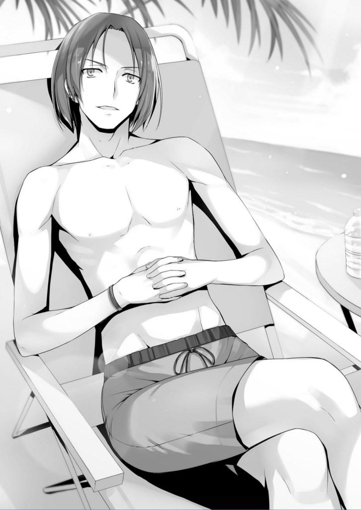
— ¿Huh?
Las agudas pupilas de Ryuuen se parecían a las de una serpiente. Haciendo que su cuerpo se pusiera rígido, Ishizaki recogió la botella y corrió hacia la tienda de nuevo.
— ... Esta prueba trata de resistencia, cálculo y cooperación. Eso parece imposible para ti. Ni siquiera puedes establecer un plan adecuado.
Ni siquiera podrías durar una semana usando puntos tan despreocupadamente.
El infierno viviente llegaría pronto. Y en ese momento cosas como céspedes, sombrillas y sillas solo se convertirán en obstáculos.
— ¿Cooperación? No me hagas reír La gente traiciona fácilmente. Mentira.
Las relaciones que implican confianza no son prácticas. Solo puedes confiar en ti mismo. Si tu exploración ha terminado, vete. Bueno, si realmente lo deseas, eres bienvenida. Puedes divertirse tanto como quieras, ya sea comiendo carne o divirtiéndote en la moto acuática. ¿O te gustaría un tipo diferente de entretenimiento conmigo? Prepararé una tienda de campaña para uso personal.
— No es la respuesta que esperaría de alguien que antes ha declarado la guerra.
— Odio el trabajo duro. ¿Paciencia? ¿Ahorro? Debes estar bromeando.
Ishizaki regresó y le dio el agua. Después de recibir el agua, Ryuuen abrió la tapa y bebió.
— Esta es mi forma de hacer las cosas. Ni más, ni menos.
— Bien. Bueno, haz lo que quieras. Funciona bien para nosotros.
Horikita seguramente tuvo el mismo pensamiento en su cabeza. El hecho de que ahora, la clase C ya no era un problema, ya estaban fuera de la competencia.
— Con el fin de averiguar la situación de las otras clases, derramamos sudor movilizándonos, por lo que tus esfuerzos son realmente apreciados.
Horikita se giró para irse, pero cuando dio un paso para moverse, vaciló y se detuvo.
— Solo hay una cuestión más. Conoces a Ibuki, ¿verdad?
— ¡Ah, sí! Ella es una miembro de nuestra clase. ¿Qué hay de ella?
— Su cara está hinchada. ¿Cuál es el significado de eso? ¿Quién le hizo eso?
Casi como si hubiera decidido quién es el culpable, Horikita le dio una indirecta.
— ¿Heh? Creí que se escapó. ¿Qué? Después de todo, ella pidió ayuda a los miembros de otra clase en lugar de a la suya, ¿verdad? ¡Qué mujer tan lamentable!— Ryuuen se rió con desprecio y una vez más se recostó—
Dentro de este mundo, hay un montón de idiotas sin esperanza, un gobernante no necesita subordinados que van en contra de su voluntad.
Se decidió que podía usar los puntos de mi clase como quisiera. Esa es una cuestión de decisión. Además, no tendría sentido si alguien estuviera a punto de rebelarse.
— En otras palabras, la forma en que Ibuki terminó encontrándonos, está relacionada con la forma en que usaste los puntos.
— Bueno, si quieres pensar en ello de una manera simple, creo que sí. Es por eso que le dimos un ligero castigo.
Diciendo eso hizo un movimiento como dándole un puñetazo a una mejilla invisible. Justo cuando pensaba que era Ryuuen quien le dio un puñetazo en la cara.
— Hubo otro tipo que me desafió. Por supuesto también lo expulsé. Supe por alguna información que no está muerto, sino que vive en algún lugar tumbado en la hierba tratando de atrapar insectos para comer.
No sentí que esto fuera un comentario hacia un amigo. Sin embargo, aquí debemos estar de acuerdo en una cosa. Descubrimos la ausencia de Ibuki durante el pase de lista, por lo que su ausencia no tiene ningún efecto en la clase C. Es por eso que sus compañeros de clase no se molestaron en buscarla en absoluto. Horikita notó el hecho de que todo esto se hizo para retrasarnos.
Está bien. Desde el comienzo de este examen, nos otorgaron 300 puntos, si ahora no tienen estos puntos, entonces ya están perdidos. ¿Dónde y cómo? Y
más importante. ¿Quién tuvo la idea de usar todos los puntos? El efecto de esta decisión es inexistente en este momento.
— Entonces así es como es. Soy yo quien usó todos nuestros puntos. Ibuki no es el tipo de persona que sería encantada por puntos. Entonces, no te preocupes por ella. Además eso es lo que llamamos libertad, ¿verdad?
— Bueno... Definitivamente es un giro inesperado de los eventos estar con 0
puntos.
Eso es exactamente lo que es un factor negativo. Van a negar esto con su estrategia de 0 puntos. Es una forma inesperada de pelear, pero a pesar de que no los ayudará a alcanzar los rangos más altos, definitivamente no permitirá que la clase C termine en la parte inferior. Incluso si se demuestra que los líderes de todas las clases son las opciones correctas, no pueden ampliar sus puntos más allá de 150.
— Si Ibuki está realmente en su campamento, sería mejor que ya la hubieras expulsado. Tu torpe simpatía no la ayudará. Además, les ahorrará las provisiones que desperdician para un miembro adicional, el agua, comida, cama y otros arreglos. De todos modos, ya no tienes que soportar esto más, ella puede volver ahora. Si se arrodilla y pide perdón, permitiré su regreso, con un corazón generoso.
Parece tener la convicción de que incluso si lo desafían y huyen, al final, volverán a él. En realidad, él sabe que sería difícil para Ibuki vivir sola durante una semana en una isla desierta.
— Es una forma muy simplista de pensar, ¿verdad? Puedes pensar que estoy haciendo esto por el bien de los puntos. Pero incluso si hay algo más oculto, ¿qué piensas hacer? Después de todo, incluso la simple tarea de encontrar comida aquí, es una dificultad.
— Jejeje, ¿qué debería hacer? Después de todo, la gente común tiene que expresar sus ideas sin complicaciones. Te has desesperado por proteger los puntos que nos han sido otorgados, a quien elegir para líder, a encontrar y proteger un lugar para el equipo, buscando en el bosque provisiones empapada en sudor, una completa tontería.
Incluso si queremos ver la verdad, es inalcanzable. Su forma de hacer las cosas no solo es confusa, la forma de pensar de Ryuuen es simplemente risible.
— Es suficiente. Ayanokouji volvamos ya. Si no regresamos ahora, me voy a sentir enferma.
— Hablaremos de nuevo, Suzune.
Mientras esta conversación estaba a punto de terminar, Ryuuen pareció recordar el primer nombre de Horikita.
— Bueno, las mujeres seguras no me son desagradables. De todos modos, dejaré que te sometas ante mí. Ese será el momento definitivo y lo saborearé.
Diciendo esto Ryuuen, con sus manos casi tocó su ingle sobre su traje de baño e hizo un gesto de provocación. Mientras Horikita ponía todo su desdén en una sola mirada, eventualmente ella dio vuelta fingiendo no ver esta escena y comenzó a alejarse. Estaba a punto de irme también, pero una escena diferente llamó mi atención. Miré en el muelle un bote, también estudiantes nadando en el agua, o jugando voleibol, una bandera, también algunos estudiantes haciendo una barbacoa y celebrando. Vi una carpa en la playa donde están almacenando comida. Aparentemente, Ryuuen tiene la intención de ridiculizar las reglas de la escuela todo lo que pueda.
— Inesperadamente para la clase C. Serán salvados por su autodestrucción.
— Parece que ese es el caso. De verdad, han usado ya todos sus puntos.
Incluso si ahorran algunos puntos al usarlos todos, no puedo verlo. Estos son los puntos que se ahorran cuando Ibuki y otro estudiante están ausentes del pase de lista.
— No me importa pensar en el problema que podría pasar después.
— Lo siento pero la clase C no tendrá problemas en esta examinación.
— ¿No estarán en problemas? ¿Cómo? No hay manera de que puedas soportar este examen sin tener ningún punto.
— Eso está bien. Además, ese es exactamente el objetivo de Ryuuen. Los puntos que se dieron fueron nuestro fondo para unas vacaciones de una semana y divertirnos sin importar lo imposible que parezca. Sin embargo, no importa cuán simple y prudente seamos con la comida, o con otras
necesidades, no habrá una conclusión favorable. Nuestra escuela hace este tipo de reglas.
Entendiendo esto, Horikita asintió estando de acuerdo
— Así que estamos tratando de ahorrar recursos para pasar la semana.
— Ah, pero el plan de Ryuuen es bastante diferente. Durante una semana no puede ver la situación más allá de la punta de su nariz.
— No puede ver... qué... durante más de una semana.
— Déjame decir esto de manera diferente. ¿Qué pasaría si el examen terminara hoy? ¿Qué harías? ¿Crees que todo esto se convertirá en unas vacaciones de verdad?
— Está bien…. Entiendo. Pero después de todo, ¿qué es crucial? Si tienes 0
puntos en tus manos.
— Esa es una conclusión muy simple. Bueno, eso es algo que Kouenji haría.
— ¡¿Eh?!
— Él está en malas condiciones físicas y es mentalmente inestable. Debería usar estas cosas como una razón y retirarse. Entonces, todos pueden regresar al barco y a su vida cotidiana normal. Esto significa que puedes disfrutar plenamente de las vacaciones de verano sin dificultades.
No puedo negar que el comportamiento de la escuela casi es enfermo en este examen. 300 puntos son solo suficientes para usarlos libremente durante 2 días y 1 noche de vacaciones. Pero el cambio vendrá incluso si fingimos ignorancia repetidamente.
— Bueno, eso significa que ha abandonado los exámenes desde el principio,
¿de verdad?
Bueno, esto podría no ser solo una teoría. Quizás Ryuuen quería evitar los problemas que ocurrirían, o tal vez quería conservar la fuerza física evitando la fuerza mental para sobrevivir. ¿O solo para elevar la moral?
— Este examen es literalmente gratis. La forma de pensar de Ryuuen no está del todo mal y uno de sus planes podría contener la respuesta correcta. En la clase C Ibuki y otro estudiante parecen estar ausentes debido a una rebelión violenta y se traduce en un ahorro de 20 puntos cada día. Sin
embargo, si va a perder puntos sin importar cuánto está tratando de ahorrarlos, entonces es posible que necesite una estrategia drástica.
No puedo adivinar porque no sé exactamente cuándo decidió deshacerse de todos los puntos y en qué momento.
— Deberíamos pensar en un método para recuperar los puntos sin rendirnos.
Su método es absolutamente incorrecto. No lo entiendo.
Está bien. Apenas puedo entender lo que Ryuuen está pensando. Sin embargo, mientras hablábamos, creo que hubo un cierto efecto de las medidas que tomó.
Todos los que vieron esta situación deberían sentirse no solo ansiosos, sino también atemorizados, especialmente por los extraños trucos de Ryuuen. Esta impresión no se desvanecerá tan fácilmente. Sin embargo, no estoy seguro si desde el principio su objetivo era hacer todo esto.
Después de pasar por la playa, volví a mirar alrededor una vez más.
— Una táctica de 0 puntos... ¿eh? Lo entiendo. Esto es intrigante.
Sería una forma bastante interesante si pudiéramos acallar las objeciones de nuestros compañeros de clase. Nuevamente, este examen no es solo acerca de ahorrar puntos. Tenemos que trazar estrategias para ganar. Lo que sucedió antes, sin duda fue una escena que me hizo sentir así.
3
Después de decidir verificar las situaciones de las clases A y B para usar nuestro tiempo libre de manera más efectiva, procedimos a adentrarnos en el bosque desde la raíz de un gran árbol roto como nos dijo Kanzaki. Cuando lo pienso ahora, el árbol no se rompió de manera natural, sino que fue hecho por la escuela como una señal. No puedo evitar sentir que es una pista de que hay un sitio por delante.
En el momento en que entramos en lo profundo del bosque, notamos algunos cambios. Era fácil caminar ya que había rastros de muchos estudiantes caminando por el sendero. Simplemente siguiendo el camino llegamos al
campamento de la clase B. Esa también podría ser una razón por la cual Kanzaki no dio una explicación detallada. Los mosquitos buscando una oportunidad de saltar sobre nuestros brazos y piernas para chupar nuestra sangre eran un dolor de cabeza.
Poco después, llegamos al campamento de la clase B.
— Me pregunto si se verá como se espera de la clase B.
Era una visión de la vida completamente diferente a la de la clase D cuando llegamos al campamento. Los alrededores del pozo que se usaba como sitio móvil y no tenían espacio para extender 3 o 4 tiendas para 8 personas.
Aseguraron un espacio para quedarse al complementarlo con tiendas para hamacas. Aunque comenzamos de la misma manera, los artículos que usaban eran completamente diferentes. Me llamó la atención un dispositivo desconocido que se encontraba cerca del pozo, pero la atmósfera única alrededor de la clase B fue lo que más me sorprendió.
— ¿Huh? ¿Horikita-san? ¿Y Ayanokouji-kun?
Como si sintiera la presencia de visitantes repentinos, una chica que estaba atando una cuerda para sostener una hamaca a un árbol giró su cabeza hacia nosotros y gritó. Una figura en Jersey que se parecía mucho a Ichinose. Un poco más lejos estaba Kanzaki.
— La clase está funcionando sorprendentemente bien. Aunque se enfrentan a muchas dificultades con su base.
— Ahaha. Fue difícil al principio. Pero traté de descubrir varias formas y lo hice funcionar. Aunque todavía hay mucho trabajo por hacer— Dijo Ichinose sonriendo mientras terminaba de atar la cuerda con fuerza.
— Entonces supongo que está mal meternos en tu camino.
— Lo siento. Supongo que se ha convertido en una forma de despedirse.
Está bien tomarse un descanso, ¿verdad? Me pregunto si vinieron a visitar para preguntarme algo.
Sin despreciarnos, Ichinose nos animó a acostarnos en una hamaca, pero en cambio decidimos sentarnos sobre ella, ya que Horikita rechazó su oferta.
— Me pregunto si está bien pensar que estamos más o menos en una alianza desde la última vez.
— Al menos yo pienso de esa manera.
— Bueno, ¿cuántos puntos usaron hasta ahora? ¿En qué usaron esos puntos?
Y si pudieras decirnos la clasificación de sus herramientas, estaríamos salvados. Por supuesto, también les daríamos algo de información.
Me pregunto si Kanzaki pudo calcular lo que planeamos hacer cuando nos vio esta mañana. Queríamos negociar después de estar seguros de que no sería un duro golpe si les informábamos. Ichinose sonrió y sacó el manual de su bolso.
Mientras mostraba que tenían una lista de lo que compraron en un papel en blanco, lo leyó en voz alta:
— Hamaca, utensilios de cocina, tienda pequeña, linterna y baño provisional.
Caña de pescar y ducha... Si lo combinamos con comida, son un total de 70 puntos.
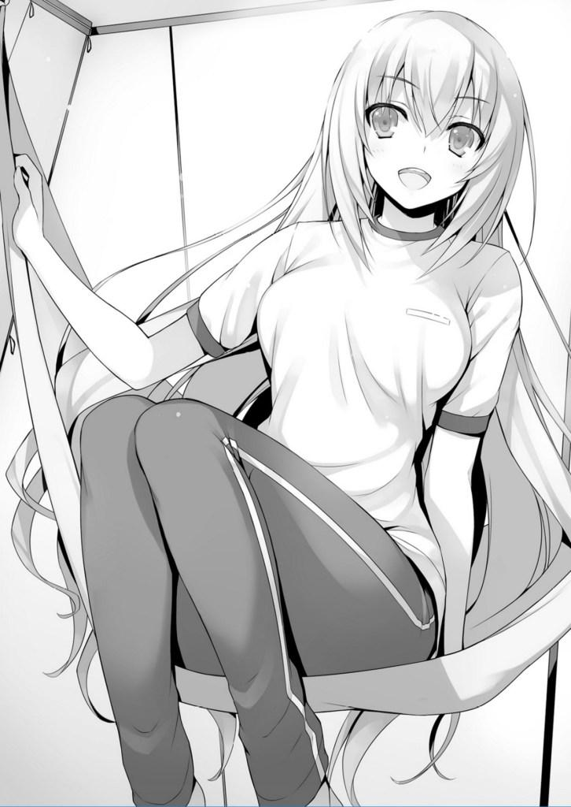
Exceptuando a Kouenji que se retiró, casi teníamos la misma tasa de utilización que la clase B.
— ¿Qué es la ducha? Me gustaría saber.
Aunque nos dimos cuenta de que tenía algo que ver con el baño basados en el nombre, ya que era 5 puntos más económico que el inodoro provisional, llegamos a la conclusión de que su efectividad es débil.
— Bueno, expliquemos la situación poco a poco, ¿de acuerdo? Dado que en el bosque hay varios lugares donde hay frutas y verduras, sustituimos su escasez con puntos mientras buscábamos suministros. Vamos al mar y también pescamos. Eso es lo que comemos. No nos preocupa el agua ya que tenemos un pozo.
¿La clase B terminó obteniendo este lugar porque Kushida y otros encontraron muchas frutas? Incluso juzgando por la palabra “vegetal”, ¿deberíamos considerar que es el fruto de su trabajo en comparación con la clase D?
Ichinose nos llevó al frente del pozo, movió una polea y con un cubo de madera recogió agua.
— Al principio, existía el peligro de que el agua estuviera contaminada, por lo que me preocupaba si debíamos beberla, pero al observar los alimentos cultivados y el entorno que los rodeaba, concluí que el pozo estaba bien manejado. Por precaución, solo yo intenté beberla ayer. Esperé un tiempo pero no tuve diarrea. A partir de esta mañana todos comparten y usan el agua del pozo.
Así que no se abalanzaron sobre el agua desde el principio, sino que comenzaron a usarla después de que la examinaron apropiadamente. Aunque naturalmente sería algo que querrías beber atraído por tener un ahorrador de puntos justo enfrente.
— También pensé que la cantidad de agua es abundante. Sería suficiente incluso usarlo para la ducha. Esta es una ducha.
Como era de esperar, era el lugar de la gran máquina situada al lado del pozo.
— Se puede calentar agua en unos segundos cuando la pongo en este tanque. Es conveniente. Lo estoy usando ahora ya que la fuente de calor de la lata de gas puede eliminarse. Si se agota, pido suplementos.
Horikita le preguntó a Ichinose, quien explicó el uso de una herramienta inusual como algo normal, bastante burlonamente:
— ¿Sabías de esta ducha?
— No. Lo acabo de escuchar y la usé por primera vez. Las reglas de la escuela son bastante aterradoras, ¿verdad? No hay detalles en el manual.
Tampoco puedes hacerle preguntas detalladas a los profesores. Fuimos salvados porque hay a un chico de nuestra clase le son familiares las actividades al aire libre.
Había un tipo de carpa automática a juego con un inodoro simple cerca de la ducha. No había nada adentro.
— Estamos usando esto en lugar de un cuarto de baño para que los que odian ser vistos por otros mientras toman una ducha puedan usarlo. La tela también es resistente al agua.
Entonces es por eso que está vacío. Tiene sentido ya que el suelo dentro de la carpa está mojado.
— ¿No tienes problemas con el duro suelo cuando te vas a dormir?
— Ah, sí. Primero pensé en qué hacer, pero tomé las medidas adecuadas.
¿Quieres ver?
Después de recibir objeciones de las chicas que estaban dentro, Ichinose se deslizó un poco debajo de la tienda.
Debajo de la tienda se extendía un vinilo, cuyo grosor era de aproximadamente 2 cm.
— Cuando pagamos nuestros puntos por un inodoro simple, era una regla que el uso del vinilo era ilimitado. Quizá usé demasiado, pero ya lo teníamos en grandes cantidades. Por supuesto, no quiero desperdiciar nuestros recursos, así que estoy planeando utilizar mucho del vinilo que no usamos. Tengo la intención de devolverlo todo al final.
— Por cierto, ¿qué hay de las medidas contra el calor? De alguna manera, se siente más fresco por aquí.
— Me pregunto si es porque estamos rociando agua. Ya que estamos cerca del pozo, podemos rociar agua aquí. Estamos poniendo el agua en botellas de plástico y se las damos a todos para que las lleven, así que esto es bastante rápido. El suelo es fácil de remojar con agua, porque lo hacemos en un largo período de tiempo. El efecto dura y quita el calor por evaporación de manera bastante eficiente.
Ichinose y el resto parece que no dependen de las herramientas, pero disfrutan de su vida de campamento utilizando su sabiduría. Además, Horikita nos dio información sobre la clase B y les hizo explicar su situación adecuadamente, así que será mejor que no tomemos atajos aquí y no olvidemos el espíritu de justicia.
— Ya veo…. Es difícil que salgas de tu retiro.
— Sí. Pero todavía hay muchas cosas incómodas que deben corregirse en nuestra clase, así que intentaré solucionarlas de alguna manera.
— Está bien. ¿Está bien que continúes esta relación de alianza? Además, podríamos excluir la regla para averiguar la identidad del líder de nuestras respectivas clases. ¿Qué piensas?
— Yo también estaba pensándolo, que deberíamos hablar sobre esto.
Agradecería que pudiéramos romper con todo el tema de honrar a la clase.
Si no te importa, Ichinose, me gustaría que aceptes la propuesta.
— Por supuesto, está bien.
Habiendo terminado la tarea de reconfirmar el intercambio de información y las relaciones de cooperación, Horikita miró a su alrededor y dejó escapar un profundo suspiro. Existe un sentimiento de solidaridad en perfecto orden, donde cada alumno actúa de acuerdo a su respectivo rol. Además de eso, podemos ver que todos están haciendo su parte felizmente. Por supuesto, hay algunos que hacen algo que odian, o intentan omitirlo.
— Esta clase... va mejor de lo que había imaginado. Después de todo, eres tú quien los dirige, ¿verdad?
Eso significa que Ichinose reúne y ordena firmemente la clase tanto en la escuela como fuera de ella.
— ¿Y hay una persona que reúna la aprobación de todos en la clase D?
¿Eres tú Horikita?
— No. Ya que tenemos a Hirata, que es un chico y todos en clase se reúnen a su alrededor.
— ¡Ah! ¡Ese chico del club de fútbol! Lo sé, lo sé. Es muy popular entre las chicas.
Horikita no está realmente interesada en hablar sobre Hirata, por lo que se alejó del tema.
— Ichinose, lamento que solo te haga preguntas, pero nos gustaría confirmar la situación de la clase A. ¿Hay algo que pueda ayudarnos a llegar a su campamento base? Incluso un indicio del lugar donde lo instalaron sería de gran ayuda.
— Incluso una pequeña pista “probablemente” sería útil para averiguar su ubicación. Sin embargo, ¿no crees que es difícil obtener información?
Como se esperaba de la clase B. O debería mejor decir, como se esperaba de Ichinose, ya han investigado sobre la clase A.
— Al salir de este lugar, hay una apertura. Giren a la derecha desde allí y luego, todo recto, donde se encuentra una cueva. La clase A parece estar acampando allí... probablemente. Ya lo he revisado, yendo allí yo misma, pero no entendí las cosas correctamente. Es debido a toda su opacidad, o en otras palabras, su defensa es inexpugnable.
— ¿Opacidad? ¿Qué tipo de medidas ha tomado una clase A?
— Ver para creer. Creo que lo comprenderán con un solo vistazo cuando lo vean. Dado que ahora, van a la clase A, ¿eso significa que ustedes dos ya conocen la situación de la clase C?
— Sí. Fuimos allí hace un rato. Hicieron cosas tan increíblemente estúpidas que no podíamos creer todo eso.
— Sip. Parece que no tienen la intención de trabajar en este examen en serio.
Los 5 días restantes, está claro que se quedarán sin puntos antes de que termine el examen. No creo que puedan cambiar la situación, incluso si cambian al modo de ahorro de inmediato. Ni siquiera buscan un sitio. Me pregunto si les resulta difícil entender el propósito de este examen.
Ichinose, tampoco parecía capaz de encontrar la respuesta correcta.
— Los trucos astutos no pueden ayudarte en este examen. Ryuuen ciertamente agotará todos los puntos. Aunque puede ser divertido por ahora, más tarde lo lamentará por completo.
Horikita habló con Ichinose atrevidamente, pero ella no habló sobre el plan de sucesión del que le hablé. Pero me pareció que Ichinose lo descubriría tarde o temprano.
— Lamento interrumpirte. Ichinose, ¿sabes dónde está Nakanishi?
En medio de la conversación, un estudiante apareció y preguntó modestamente.
— ¿Podría Nakanishi haberse ido a la playa en este momento? ¿Para qué?
— Fue allí para ofrecer ayuda. ¿No debería? ¿Fue innecesario?
— No, no es eso. Kaneda es realmente amable y siempre útil. Bueno
¿puedes ir con Chihiro y traerlos de vuelta? Estará bien siempre y cuando les digas que dije eso.
— Entendido. Muchas gracias.
Horikita miró con curiosidad este breve intercambio.
— Parece que es bastante formal cuando habla con sus compañeros de clase.
— Ah, él...
— ¿Es estudiante de clase C, o...?
Entonces Ichinose respondió a mis palabras antes de que yo llegara a preguntar más y solo asentí.
— ¿Te diste cuenta? Parece ser fiel a la clase C. Estaba diciendo que sería mejor que lo dejáramos en paz, pero no quería abandonarlo. No he escuchado qué causó su situación, porque no quiero hablar de eso.
Además de Ibuki, otro estudiante se escapó porque se opuso a los métodos de Ryuuen. Parece que fue acogido por la clase B. Entonces tal vez encontró un lugar donde ofrecer algo de cooperación en lugar de permanecer en una situación humillante.
— También acogimos a un estudiante ayer, un estudiante escapando de la clase C.
Horikita habla de su encuentro con Ryuuen de hace un rato y de cómo ha escuchado los detalles. Parece que este estudiante es uno de los dos que se rebelaron contra Ryuuen. Ibuki es la otra, parece que también fue vencida.
Después de escuchar todo esto, la mirada de Ichinose se endureció con una determinación para proteger aún más a su equipo.
— Vámonos ahora, Ayanokouji. Es malo para la clase B que sigamos por aquí por más tiempo.
Horikita y yo nos separamos de Ichinose y rápidamente comenzamos a caminar, dejando atrás el territorio de la clase B.
— Bueno, no puedo evitar hablar sobre la clase D y la alta compatibilidad de nuestros miembros.
Después de dejar la clase y volverse impopular, las palabras de Horikita pueden tomarse como una derrota. Sin embargo, tengo la misma impresión con Horikita.
Ya existe una gran diferencia entre la clase B y la clase C. Y no es solo una diferencia de puntos.
— Bueno, no se puede evitar. La clase B tiene una habilidad especial de la que carece la clase D.
— Trabajo en equipo, ¿verdad? La clase B parece ser la clase superior. Se mantiene bajo control con mano firme y un gran liderazgo por lo que no puede ser manipulada o dividida.
En la clase D hay un estudiante egoísta como Kouenji que se hace cargo del equipo de la clase y huye en tiempos difíciles y no hay ningún estudiante con el poder para detenerlo. Mientras tanto, Ichinose unió a la clase B, que parecía tener una fuerza unificadora que no se veía alterada por ningún lado. Esa puede ser la mayor diferencia entre la clase D y la clase B en este momento. Cuanto más tiempo lleven los esfuerzos para completar el examen, más obvia será la diferencia.
4
Al salir de lo profundo bosque, una cueva mostró la apariencia de lo que parecía un demonio abriendo su boca. Había dos baños provisionales y una ducha cerca de la cueva.
— No puedo ver lo que hay adentro desde aquí...
Era casi imposible de confirmar algo mientras guardábamos distancia desde el escondite. Tanto Horikita como yo no conocíamos a nadie de la clase A, por lo que planear reunir información mientras estamos ocultos, incluso de manera sigilosa, no nos llevaría a ninguna parte. Me adelanté a Horikita, que se escondía y salí al camino que conducía a la cueva.
— Oye, espera un momento.
— Vamos. Es la clase A, por supuesto que estaremos asustados. Pero no hay mucho qué hacer al respecto.
Junto con Horikita, me dirigí a la cueva que pensaba que era la base del campamento de la clase A.
— ¿Qué estás pensando? No hay ninguna ventaja incluso si nos exponemos descuidadamente.
— ¿Crees que en estar escondidos sí? Apenas podemos ver las instalaciones y no hay nadie cerca. Hay muchas cosas que no se pueden ver a menos que ingresemos a la cueva.
— ... ¿No está demasiado tranquilo? ¿Qué piensas?
— No lo creo. Por favor, no te preocupes por eso.
— No entiendo tus respuestas poco brillantes, pero está bien.
Me estaba mirando con ojos terriblemente fríos y atemorizantes, pero fingí que no lo había notado.
Naturalmente, los estudiantes de la clase A que estaban cerca nos vieron cuando llegamos a la entrada de la cueva. Aunque esperaba captar la situación hasta cierto punto si podía ver el interior de la cueva directamente...
Se extendía una gran cortina de vinilos así que no pude ver nada dentro.
— ¿Quién eres? ¿De qué clase vienes?
Este tipo era seguro... Yahiko, que era una de las dos personas que encontraron la cueva el primer día. El otro, Katsuragi, parecía estar ausente.
— Vinimos a husmear. ¿Tienes problemas con eso?
Oh, como si hubiera cambiado su forma de pensar, la respuesta de Horikita fue imponente. Luego ella continuó:
— Ahora que te has revelado como alguien de la clase A, sin duda estás llevando una vida difícil...
Suspiró afectada cuando vio la entrada de la cueva cubierta de vinilo.
— En lugar de ser duro, es improvisado. Un método cobarde, ¿verdad?
— ¿Qué?— Yahiko respondió con tono irritado, como si ella lo alterara, aunque era una provocación fácil de entender.
— Soy Horikita de la clase D.
— Huh, ya decía yo que eran de la clase D. Son un montón de idiotas.
— Idiotas, cierto. Por lo tanto, no habrá ningún efecto en particular si nos muestras lo que hay adentro, ¿verdad? ¿O te pone en una posición incómoda el que podamos ver el interior?
— ¡Podría ser el caso!
— Entonces, ¿no es un problema si nos muestras dentro? Lo siento por molestarte.
— ¡Es-espera! ¡Oye! ¡Espera! ¡No hagas lo que quieras!
Yahiko se atravesó para interponerse en su camino, pero inmediatamente las palabras de Horikita salieron disparadas como un cuchillo:
— Voy a mirar dentro. Eso no será una violación de ninguna regla en sí ¿no?
— ¡Deja de jugar, esto está ocupado por la clase A! ¡La clase D no tiene permiso para usarla!
— ¿De Verdad? ¿ocuparon este lugar? No lo sabía. ¿Está el dispositivo adentro?
— S-sí. Por lo tanto, ¡aléjate!
— No hay reglas que digan que no puedes entrar a la cueva. Claro, no puedes usar la cueva mientras está ocupada, pero es diferente a que la monopolicen. También deberíamos tener derecho a verificar el interior o el dispositivo, ¿verdad? De lo contrario, podríamos monopolizar por la fuerza todos los sitios. De eso no se trata la prueba.
— ¡¿Eh?!— Una discusión tan aguda como esta había apuñalado a Yahiko sin problemas.
Horikita trató de arrancar el velo de vinilo de la oculta cueva mientras movía su cabello. Sin embargo….
— Qué estás haciendo. No recuerdo haber aprobado traer invitados.
Un chico de gran estatura me pasó y continuó caminando hacia Horikita.
Ciertamente, su nombre era...
— ¡Katsuragi-san! ¡Esos tipos vinieron a husmear alrededor de nuestra base!
Son un montón de asquerosos.
— Estás exagerando las cosas, es solo vinilo. Muéstrame un poco por dentro.
Mirando hacia atrás, Horikita ni siquiera estaba un poco asustada de enfrentarse a estos tipos.
— Entonces debería estar bien echar un vistazo adentro. Pero prepárate. Si tocas las cosas incluso una vez, notificaré tus acciones a la escuela como un acto de obstrucción hacia otra clase. No puedo estar seguro de qué pasará con la clase D.
Las palabras de Katsuragi probablemente eran un farol. Era poco probable quedar descalificado por tocar el vinilo. Y sin embargo, diciendo que nos reportaría invocaba cierta sensación peligro.
— Se lo he explicado a él también, pero este es un acto de monopolio autoritario. No es un derecho protegido por reglas.
— No hay duda de que es correcto. Ese punto es cierto. Pero creo que es como una regla implícita. Ustedes de la clase D tienen un sitio cerca del río.
La clase B tiene un pozo. Estoy ocupando la tierra por lo que está
monopolizada en parte. ¿Has usado la fuerza con alguien que ha traspasado tu tierra?
Las palabras tranquilas y fuertes de Katsuragi detuvieron las piernas de Horikita.
— Una clase tiene un sitio ocupado. Y siguen protegiéndolo mientras continuamente obtienen puntos hasta el final de la prueba. Si rompes esta regla implícita, habrán estragos. Por supuesto, la clase A entrará en el campamento base de la clase D como venganza. Se deben evitar los problemas.
Era posible ignorar estas palabras, pero no pudimos. Como estaba diciendo Katsuragi, las otras clases inconscientemente también se apoderaron de un sitio por la fuerza. Podrían surgir problemas rompiendo esa regla. Horikita se dio vuelta y pasó al lado de Katsuragi mientras se alejaba de la entrada de la cueva.
— Bien. Estoy deseosa de ver los resultados de la habilidad de la clase A.
— Es muy poderosa. También anticipamos la resistencia inútil de la clase D.
Después de la breve conversación, Horikita naufragó. O tal vez debería decir que eso mató su entusiasmo. Si Katsuragi no hubiera aparecido, Horikita habría entrado al otro lado del vinilo.
— Yahiko, no caigas en provocaciones baratas. Su objetivo es echar un vistazo al interior. Son ellos los que caerán si restriegas tu dominio y justicia en su rostro.
— L-lo siento.
Lograron poner a Horikita, quien estaba lista para retirarse, fuera del camino.
Espléndido.
— Parece que no hay otra opción que dejar a la clase A en paz. Es imposible investigar.
Construyeron defensas inexpugnables una vez que se apoderaron de este sitio, la cueva. Sin embargo, no importa cuánto hayan intentado ocultar el interior, pudimos darnos cuenta de que era algo valioso.
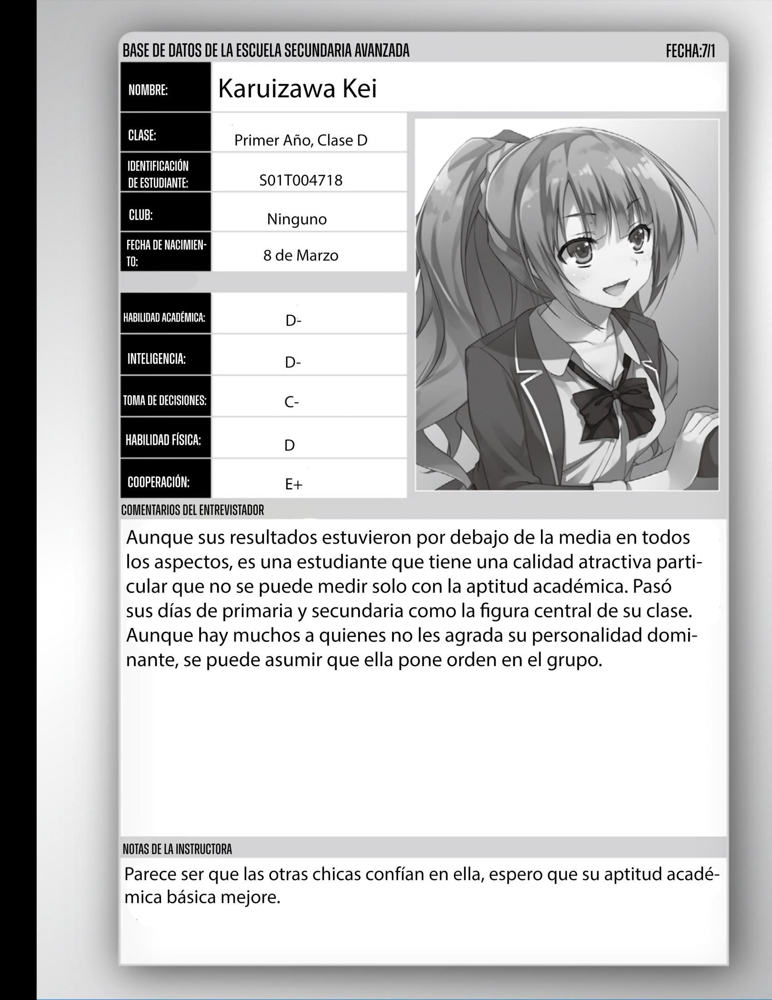
EL SIGNIFICADO DE LA LIBERTAD
Las preguntas que nos había hecho Kouenji a Sakura y a mí habían estado en mi mente por mucho tiempo. El día 3, abandoné el campamento base justo antes del mediodía y me encaminé para entrar en el bosque. Justo en ese momento, había una chica que se acercaba corriendo desde detrás.
— Jadeo, jadeo, jadeo... ¿qué piensas hacer ahora, Ayanokouji-kun?
Sakura vino corriendo como si me estuviera buscando. Exhaló, y con cada exhalación, sus grandes pechos se movían hacia arriba y abajo.
— ¿No até un pañuelo a un árbol? Iré allí para verificar algo.
Quería confirmar si era cierto antes, pero apenas tuve tiempo para hacerlo.
— Wow...... sé que no debería ir................ ¿cierto? Sería un obstáculo, pero..............
— No deberías hacerlo. ¿No te preocupan ciertos rumores que circulan?
— No me molesta en absoluto. Además...... murmullo, murmullo.
Con un susurro, ella dijo algo, pero aunque acerqué mi oído, no pude comprenderlo. Su voz era así de baja.
Decidí rechazar la propuesta de Sakura con una excusa apropiada. Pero…
— ¡Bueno, hacer esto es divertido para mí!
Sakura retrocedió, sintiéndose más mal de lo que imaginé. Con esas fuertes palabras, nuestros ojos se encontraron con una mirada de horror. Entonces Sakura se puso en cuclillas, escondiendo su rostro.
— Nerviosa... Ahhh, en otras palabras, ¡esto será diferente! ¡Urghhh!...
...No sabía exactamente lo que Sakura estaba diciendo. Todo lo que puedo decir es que es una chica interesante. Ella solo tenía que mostrar esta parte de sí a los demás.
— Entonces, ¿deberíamos ir juntos? Hay una condición. Más tarde, incluso si nos metemos en problemas, no te culparás.
— ¿¡Está bien!?
Respondió mientras ocultaba su rostro con sus manos. ¿Qué tipo de plática fue esta?
En el camino, encontrando el silencio extraño, decidí matar el tiempo sacando un tema familiar. Nada podría ser más incómodo que el sonido solitario de crujientes pasos en el suelo.
— ¿Te está yendo bien en compañía de las chicas? Este tipo de vida, no puedes hacerla sola.
— Nuh-uh, para nada. Ni siquiera hablo con ellas, ni hago otra cosa.
Como si estuviera avergonzado por mi patético ser, tosí mientras hacía rodar un mechón de cabello con mi dedo índice.
— Realmente no puedo hacer nada. No puedo estudiar ni hacer deportes, nunca mejoraré en nada.
— Eso no es cierto en absoluto. Sakura-chan está mejorando constantemente.
— ¿Ehhh? Yo, ¿mejorando? Jajaja...... De ninguna manera.
— Es verdad. Tal vez no lo veas tú misma, pero poco a poco, ciertamente estás creciendo.
Transmití estas cosas, no solo con palabras sino también por mi comportamiento.
Es efectivo para los que no tienen confianza como Sakura. Era la primera vez que hacía una afirmación con palabras desde el fondo de mi corazón, con la esperanza de que también pudieran resonar en el corazón de mi compañera.
Sakura se detuvo y me miró con ojos vacilantes. Como si esas palabras no vinieran de mí. Inconscientemente estaba tratando de encontrar el verdadero significado de mis palabras.
— Está bien. Sakura podrá hacer nuevos amigos pronto. La escuela será aún más divertida.
Cuando nuestros ojos se encontraron, Sakura rápidamente desvió la mirada y miró hacia abajo.
Incluso el hecho de que logró mirar a alguien por un momento. Incluso aceptar una sola reacción de los demás era una gran diferencia de cuando nos conocimos.
— Dicho eso... parece que ese hombre renunció después del incidente.
Ese hombre trabajaba en una tienda minorista de electrónica ubicada en las instalaciones de la escuela. Era un fan extremadamente entusiasta de Sakura cuando era una gravure idol... No, él era un acosador. No estaba satisfecho solo con pasar todo su tiempo en la página de Sakura, sino que si había una posibilidad intentaría cualquier tipo de contacto con ella y yo me di cuenta que estaba tramando algo.
— Gracias por aquella vez..... Todo es gracias a Ayanokouji-kun.
— No hice nada. Sakura se ha salvado solo porque Kushida se ha hecho más cercana contigo y porque Horikita e Ichinose cooperaron, mientras yo era un simple espectador. Aparte de eso, ¿qué pasó con ese incidente?
Aunque el acosador abandonó las instalaciones de la escuela, también es posible contactarse a través de Internet.
— Sí, está todo bien. Ahora, la gente del tablón de anuncios también se está tomando un pequeño descanso.
Esto era por precaución, ¿verdad? Creo que hicieron una buena elección.
— Y sin embargo, incluso si estabas nerviosa y asustada cuando eras una idol, siempre has tenido una expresión digna.
— Sobre eso……. básicamente, quería tomar fotografías por mi cuenta.
— ¿Hace mucho tiempo? ¿Eran selfies en las revistas?
Sakura, que escuchaba, respondió con una sonrisa un poco amarga.
— No funcionó del todo y tardaba mucho más que otros. Además, un camarógrafo tomaba fotografías de todas las chicas para reducir el número de personas involucradas tanto como fuera posible. Además…. como no tenía emociones cuando me borré a mí misma, podía soportarlo vanamente. Pero, al final, desde que llegué a mi punto de ruptura, dejé de hacerlo.
Debido a que habló sin detenerse, Sakura repentinamente se detuvo un momento y recuperó el aliento. El caso del acosador parecía haber dejado una gran cicatriz en Sakura, pero todo está mejorando.
Ante nuestros ojos, había un grupo bastante grande de gruesos árboles. Dejé el lado de Sakura y me adelanté para abrir un camino. Si Sakura terminara herida por las ramas, habría muchos problemas. Luego, después de seguir caminando durante un tiempo, sentí que el camino se estaba volviendo bastante abrupto, así que decidí que sería mejor tomar un descanso pronto.
Mire hacia atrás. Nunca pensé que vería a Sakura tambaleante y con los hombros temblorosos.
— Tomemos un descanso. Tomará un poco más llegar a nuestro destino.
Sakura estaría exhausta si camináramos por un sendero tan difícil durante 30
minutos. Está comenzando a parecer un poco feliz.
Busqué un gran árbol con sombra que pudiera protegernos del clima que se estaba calentando cada vez más. Me senté entre un espacio de las raíces donde dos personas cabían bien. Sin embargo, Sakura, tal vez por precaución o modestia, quería sentarse un poco alejada. Pero el terreno era desigual, y le dolería si se sentaba allí.
— Siéntate aquí.
— ¿Está bien?
— Aquí está bien. Pero nunca descansaremos lo suficiente en este lugar.
— Mhm, sí...
Después de esta breve interacción, Sakura se dejó caer a mi lado, manteniendo su distancia. Era una distancia donde las mangas de nuestros uniformes de deportes se tocaban ligeramente.
— La naturaleza es increíble, ¿no? ... Me gusta pasar mucho tiempo incluso caminando solo un poco.
— Considerando que Kouenji parecía decepcionado, parece que este lugar todavía es lo suficientemente bueno para la escuela, que lo preservó con tanto cuidado. Ir a una jungla en el extranjero habría sido más peligroso.
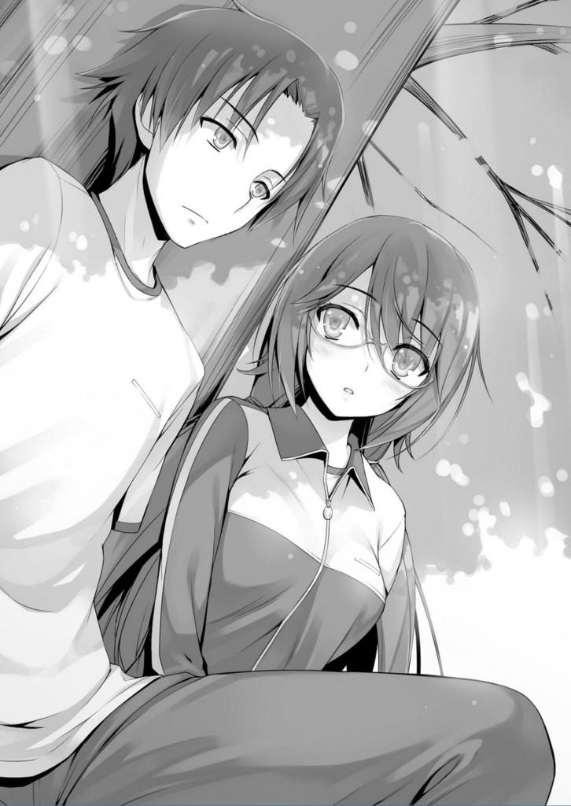
— Al principio, cuando partimos, estaba muy deprimida. No tenía amigos, ni me gustaba viajar. Pensé que sería mejor quedarme en mi habitación.
Porque así, sería igual que siempre. Pero luego, esto sucedió. Nos dijeron que esto sería una prueba...
Puse mi espalda en el árbol y Sakura miró hacia el cielo.
— Pero, en este momento... creo que fue bueno que hayamos venido aquí, juntos incluso por un momento. Nunca tuve la oportunidad de hablar contigo así en la escuela, Ayanokouji-kun...
Parecía que sentarse en lo profundo del bosque, envueltos en la naturaleza, traía una sensación de calma.
— ¡Ojalá pudiéramos quedarnos así para siempre!
— Sí, eso sería agradable.
Aún era el tercer día desde que habíamos llegado a la isla desierta y sentí que había pasado más tiempo a solas con Sakura que con alguien más. Me preguntaba si esto era algún tipo de acuerdo entre personas que no tienen amigos. Sin embargo, no se sentía extraño y no sucedió en vano. Como dijo Sakura, sentí que la distancia entre nosotros se había acortado un poco.
No era una historia de amor o algo así, pero de hecho, nos hicimos amigos.
Nuestra relación cambió tan repentinamente que ni siquiera entendí cuándo había comenzado a cambiar.
— Hmm... Es una pena. Si tuviéramos una cámara digital, podríamos haber tomado las mejores fotos...
Sakura levantó el pulgar con ambas manos, pero instantáneamente se sintió avergonzada por el gesto y el arrepentimiento se reflejaba en su rostro.
Ciertamente, las cámaras son esenciales para dar forma a los recuerdos. Una cierta forma permanece intacta. Mientras recordaba haber visto a Sakura en la escuela llevando una cámara digital y tomando fotos todo el tiempo, pensé que este momento debía ser una oportunidad perfecta para ella. Para que cierta forma permaneciera intacta... Veo por qué Ibuki tenía una cámara digital.
— Sin embargo, cuando tomemos la foto, ¿eso significa que también estropeamos el paisaje?
— Si está Ayanokouji-kun, entonces será la mejor... ¡Ah!... ¡No!... Quiero decir... ¡Eso es porque nunca he tomado fotos con un amigo!
Sakura siguió negando lo que dijo, sacudiendo su rostro. Es genuinamente natural. En ese punto, tuve evidencia concluyente.
Mientras estábamos sentados uno al lado del otro, de repente miré a Sakura.
Al principio, Sakura no se dio cuenta de que mis ojos la estaban mirando, pero a medida que nuestro largo silencio continuaba, finalmente se dio cuenta.
— ¿Qué... qué? ¿Qué pasa?
— ¡Oye! Cálmate. Silencio.
Sostuve firmemente a Sakura por sus hombros, quien había entrado en pánico.
— ¡Kyaaaaa!
Cuando sostuve el cuerpo de Sakura más cerca del mío, ella no pudo moverse, como una rana encantada por una serpiente. Eché un vistazo a sobre la cabeza de Sakura. Vi algo moviéndose... un insecto se arrastraba sobre su cabello.
Incluso yo, que no sabía mucho sobre insectos, podría identificarlo fácilmente.
Es lo que comúnmente llamamos “una oruga”.
De verdad, solo mirándola, me sentí enfermo. Un cuerpo que se movía, y unidas al cuerpo, una miríada de extremidades que también se movían, de modo que es demasiado para que su columna quede recta. Aparentemente, cayó de las hojas del árbol que utilizamos como cobertura.
Bueno, ¿qué debería hacer ahora? Si le dijera a Sakura que había una oruga en su pelo, entonces, la posibilidad de que entrara en pánico y comenzara a gritar era alta. Si la oruga se metiera entre su cabello o a su ropa, sería un desastre adicional.
— Sakura, hay algo que quiero preguntarte.
— ¿Qué... qué es?
— Bueno... ¿Estás bien con los insectos?
— In... ¿Insectos?
— Sí, insectos, como saltamontes o libélulas, ese tipo de insectos.
— N... No soy buena con ninguno de ellos. Tampoco soporto las hormigas.
— Ah, bueno, lo entiendo.
Tal como lo había imaginado, parecía que no podía decirle lo que estaba sucediendo. No había otra alternativa que pensar en otra forma. Desearía poder eliminarlo rápidamente, pero como soy un chico de ciudad, también los odio.
Incluso si tratara de eliminarla con una rama o algo así, Sakura notaría inmediatamente mi comportamiento sospechoso.
— Déjame ver. Por el momento, no te muevas, ¿está bien?
— Ah, sí. Está bien.
Después de darle este consejo, solté el hombro de Sakura. Mientras tanto, la oruga se movía poco a poco, parecía que iba a alguna parte.
Tenía que pensar en una forma de eliminarla de forma segura.
— ¿Qué pasa?
Sakura inclinó la cabeza desconcertada, mientras intentaba formular un plan en mi cabeza.
¿Sentía el peligro solo con el movimiento de mis manos? La oruga estaba tratando de escapar con movimientos enérgicos. Aahhh... Esto es peligroso, oruga, ¡deja de ser tan obstinada!
Esto estaba yendo demasiado lejos. Pero, tenía que salvar a Sakura, incluso a mi propia costa. Lo soporté valerosamente, con mis manos temblando, con mi mano derecha, alcancé el pelo de Sakura lo más rápido que pude. ¡Ahora! Pude sentir mis dedos tocando la oruga. Entonces, la agarré más rápido de lo que mi conciencia me permitía y la arrojé a los arbustos.
Sakura ni siquiera pudo respirar mientras hice ese movimiento, pero aun así, logré protegerla.
— Uh... de alguna manera sentí que me salvaste de algo desagradable...
Después de un descanso adecuado y mientras conversábamos amistosamente, llegamos a nuestro destino con la ayuda del pañuelo.
Me pareció que había tomado menos tiempo de lo que pensaba. Llegamos en 20 minutos. Por el momento, doblé cuidadosamente el pañuelo y se lo devolví a Sakura. Intentaría observar los alrededores desde donde pensaba que Kouenji había estado parado. Hasta ahora, no pude notar la diferencia caminando por el bosque, especialmente a primera vista. Me pregunto si es por aquí. No hay nada más aquí, ¿aquí? ¿Cuál es el significado de esto?
— ¿Viste algo?
— Eh... algo se siente diferente.
Si no puedes recabar la información necesaria de tu sentido de la vista, tendrás que depender de tus otros sentidos.
— Por ahora, vamos a investigar por aquí. Sin embargo, revisaremos regularmente de no alejarnos hasta el punto en que ya no podamos vernos.
Si nos concentramos demasiado en encontrar algo, es fácil descuidarse.
Buscamos con nuestras manos en las raíces y las bases de grandes árboles que no se podían ver estando de pie, en las hojas verdes, en las gruesas ramas que crecían sobre nuestras cabezas y en el suelo. A veces, el viento cálido nos golpeaba la nariz y los oídos. Mientras usábamos nuestros cinco sentidos, revisábamos el área sin pasar por alto ni el más mínimo cambio.
— ¡Ah!
Una voz sorprendida casi como un grito llegó de Sakura, que estaba buscando en los arbustos un poco más allá. Los arbustos eran tan profundos que solo podía ver una parte del cuerpo de Sakura. Me preguntaba si ella se había caído de nuevo.
— Eso es... maíz... ¿verdad?
— Eso parece.
Me preguntaba si el maíz estaba creciendo solo en esta parte. No conocía bien las plantas, pero era obvio que la situación no era natural. El suelo en el cual se plantó el maíz es de un color diferente al del suelo en este bosque. Era algo que
demostraba que este maíz se cultivaba artificialmente. Rodeado de arbustos, era extraño lo difíciles que eran de encontrar debido a las malas hierbas.
— Esto es lo que Kouenji estaba insinuando...
Él se dio cuenta de esta existencia de inmediato, pero no estaba dispuesto a decirnos.
De todos modos, no había duda que de acuerdo a este lugar, la escuela visitaba con frecuencia esta isla desierta. Cuando saqué un ejemplar para revisarlo, salió un hermoso maíz de aspecto ordinario. Esta hermosa forma debe haber cobrado vida debido a un manejo y cultivo cuidadosos.
— Debería haber traído una bolsa... Probablemente no, pero me pregunto si podemos llevarlos con nosotros.
Había poco menos de 50 piezas de maíz, pero tomarlos todos en nuestras manos era imposible. Era inevitable que tuviéramos que hacer algunos viajes para hacerlo. Me quité la camisa que llevaba puesta.
— ¿¡Huuuuuh!? Qué qué qué, ¿qué estás haciendo? ¡Ayanokouji-kun! Es muy pronto— Sakura dejó caer el maíz que tenía en sus manos y bloqueó su vista.
— Lo siento. Considerando que lo has aprobado pensé que estaría bien.
¿Qué es demasiado pronto...?
Pensé que a ella no le importaría en particular el cuerpo desnudo de un hombre, pero me faltaba consideración para alguien de su edad.
— Si atamos los extremos de la camisa, obtendremos un sustituto de una bolsa. Podemos cargar más de una sola vez.
Existía la posibilidad de que este lugar se cosechara si las personas de otras clases lo encontraban mientras no estábamos. Era un riesgo que quería evitar al máximo.
— Informaremos a otros compañeros de clase y dejaremos que cosechen cuando regresemos.
— Sí.
Esta inesperada gran cosecha hizo que nuestros corazones palpitaran de emoción, pero aparecieron visitantes imprevistos.
— ¡Mira, Katsuragi-san! ¡Es una increíble cantidad de comida!
Concentrando su atención en el maíz, los hombros de Sakura se sobresaltaron.
Rápidamente tomó un camino sinuoso y se escondió detrás de mí. Al ver esto, Katsuragi dijo una palabra de disculpa.
— Lo siento, no quise sorprenderlos. Este tipo tampoco tenía malas intenciones, por favor, discúlpennos.
Dirigió a Yahiko una mirada dura, animándolo a disculparse. Como un cachorro enojado, Yahiko se disculpó, mostrando su bajo ánimo. No pensé que los encontraríamos en un lugar como este. Katsuragi no reaccionó ante nosotros, pero Yahiko se dio cuenta de inmediato.
— ¡Tú fuiste el que nos espió ayer!
Gritó en voz alta, Sakura una vez más se sorprendió y se acurrucó. Al ver esto, Katsuragi dejó caer un puño sobre la cabeza de Yahiko. Un sonido agudo y doloroso pudo escucharse hasta aquí.
— Soy Katsuragi de la clase A. Este es Yahiko. Como esta es la segunda vez que nos vemos, al menos una presentación estaría bien.
— Soy Ayanokouji de la clase D y ella es Sakura.
Después de un breve intercambio de saludos, Katsuragi echó un vistazo a la gran cantidad de maíz y comenzó a caminar.
— Esto es lo que has encontrado. No te preocupes, no tengo intención de arrebatártelo a la fuerza. Pero si alguien más encuentra este lugar, hay muchas posibilidades de que te lo quiten.
— No hay nada que podamos hacer, solo somos dos.
Además de rezar para que este lugar no fuera descubierto, no había otras opciones. Pensaba en tomar y esconder todo, pero la posibilidad de que alguien más la encontrara en el proceso tampoco era la más baja.
— Tonto, uno de ustedes puede quedarse y vigilar. ¿Cierto? Katsuragi-san.
— Tú eres el que no entiende, Yahiko. No descartes el peligro de moverse solo por el bosque. Después de todo, las acciones tendrán sus límites si participan tanto el hombre como la mujer, sin mencionar si es solo un hombre.
Como Katsuragi lo entendía bien, en lugar de solo, actuó junto con Yahiko.
— Déjanos ayudarte.
— ¿D-De verdad, Katsuragi-san? Trabajar con la clase D---
Yahiko mostró obvio rechazo, pero las palabras se quedaron en su garganta, habiendo recibido el agudo discernimiento de Katsuragi.
— Agradecemos tu oferta, pero nuestra clase nos dijo que tengamos cuidado.
Se enojarán cuando descubran que recurrimos a la clase A. Lo siento, pero tenemos que rechazarlo.
Era una mentira, pero Katsuragi solo podía retirarse después de eso.
— Ya veo. Si ese es el caso, no puedo forzarte. ¿Pero puedes confiar en nosotros? Existe la posibilidad de que tomemos todo después de que te vayas, ¿verdad?
— En ese caso, no tengo más remedio que resignarme con la parte que tengo ahora.
Con esta respuesta, Katsuragi se apartó del camino en silencio. Sakura mostró signos de inquietud y rápidamente volvimos. Después de regresar con Sakura al campamento base, informé acerca del descubrimiento del maíz.
— ¡Gran hazaña, Ayanokouji! ¡Sakura! ¡Vamos a buscarlo ahora, Yamauchi!— De pie cerca, Ike llamó a Yamauchi. Luego, se lanzó enérgicamente hacia nosotros y con una fuerza que podría derribarme, agarró mi brazo, alejándome de Sakura.
— ¡T-tú-tú! ¿Por qué estás a solas con Sakura con la parte superior de tu cuerpo desnuda? ¡Qué! ¿¡Oye!?
— Cálmate. Esto es un gran malentendido. No hicimos nada, tranquilízate.
No sabía qué tipo de ilusiones tenía, pero este no era el momento de oponerme a Yamauchi.
— Tengo que hablar con Hirata. Lo siento.
— ¡Confío en ti, Ayanokouji!
Dejé al alterado Yamauchi para informar el caso del maíz. Poco después, formamos un equipo de estudiantes en el campamento, que partirían una vez más para traer el maíz. Además, también había planes para explorar otros lugares y encontrar comida.
En algún momento después de la 1PM, regresaron después de terminar la cosecha.
— ¡Hay tanto!
No nos faltaba maíz, con muchos dentro de las bolsas.
— Pero fue peligroso. Ese chico Katsuragi de la clase A estaba cerca.
Parecía que Katsuragi decidió ayudarnos quedándose en ese lugar sin quitarnos el maíz. Este tipo parecía como si careciera de buenas o malas intenciones.
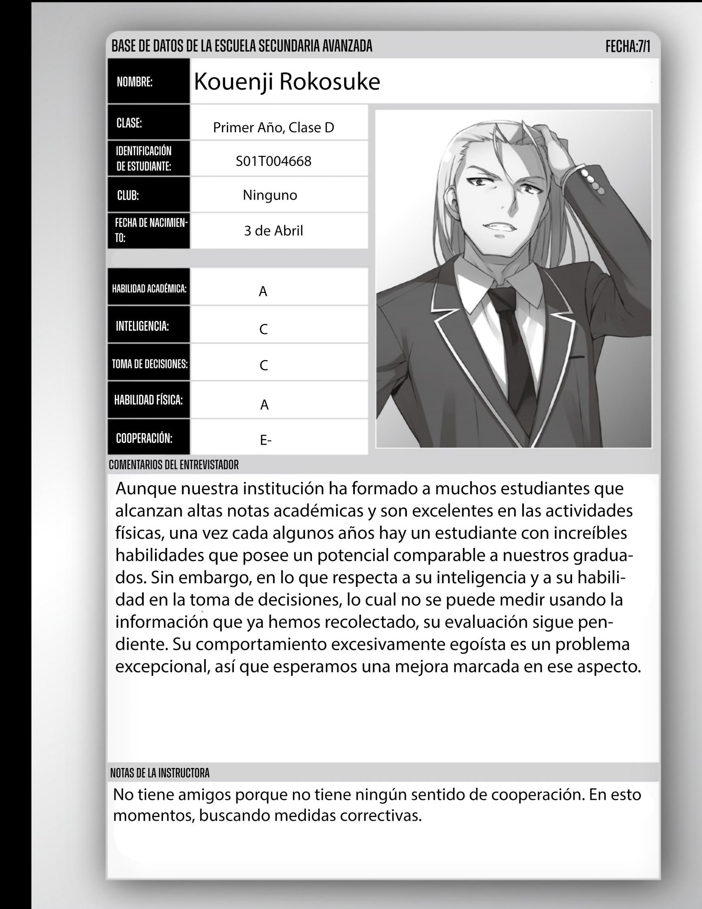
LA GUERRA SILENCIOSA
El cuarto día en la isla deshabitada, cambios comenzaron a ocurrir poco a poco y llegamos a un punto de inflexión. No hice caso a las quejas expresadas, pero luego, en algún momento, me di cuenta de que risas continuas llenaban el lugar.
Añadimos un poco del maíz que encontramos a los peces que capturaron Ike y otros. Toda resistencia en contra de beber el agua del río desapareció. Algunas cosas, como los frutos que encontraron mis compañeros, nos ayudaron a ahorrar más puntos de los que planeábamos para pasar esta prueba.
En este momento, los puntos utilizados legaban a alrededor de 100, incluidas las penalizaciones por retiro. Si continuamos sin problemas, probablemente podamos terminar la prueba con muchos puntos. Si miramos la situación de la Clase D antes del inicio de la prueba, entonces este número es un valor perfectamente satisfactorio. Incluso Yukimura, que era el más hostil y opuesto, no se quejaría. Sí, ni siquiera un estudiante estaba insatisfecho con este resultado.
De repente, sentí un hormigueo en la cabeza y me dolió.
En secreto tomé prestado un bolígrafo y lo puse en mi bolsillo junto con un papel doblado. Luego dejé el campamento base. Empecé a tratar de conocer la situación de la isla, la cual todavía no podía entender.
Esta podría ser solo mi suposición, pero cuando analizamos esta prueba especial, vemos que el 80% de ella es una prueba defensiva que debe confirmar si hay relación de cooperación dentro de la clase. Y el 20% restante sugiere que es una prueba de exploración contra otras clases al atacarlas para interferir con su capacidad de recopilación de información.
Sin embargo, esta proporción 8: 2 no se refleja directamente en los resultados de la prueba. O más bien, creo que solo ese 20% influye en los resultados.
Ya habíamos comprendido el plan de cada clase. Sobre este tema, decidimos qué hacer. Simplemente atacar a las otras clases.
Entonces, comenzaría a moverme al área de clase A. Como la clase D se movía alrededor de la orilla del río, el centro de actividad de la clase A era probablemente el área de la cueva.
Pero Katsuragi no tenía sentido. No es que haya sido el primero en ocupar la cueva. La verdadera atracción de la cueva no es solo que esté protegida de los elementos naturales. El lugar en sí tenía un significado especial.
Cuando paseaba un rato por el bosque, podía oír débilmente el sonido de las olas. Mi ritmo se hizo un poco más rápido y pasé directamente a través de los árboles para finalmente encontrarme en la costa.
— Oops......
Frené repentinamente y detuve mis pasos. Todo porque no había donde agarrarse por aquí y en realidad era un acantilado.
— Lo vi desde el barco, estoy seguro... que estaba debajo de aquí.
No muy lejos de la cueva, muy cerca de ella, se vislumbraba una instalación múltiple. Si había una ruta alternativa o no, caminaba por el acantilado, noté que había una escalera cerca de él, construida en un punto ciego donde era probable que no se notara a primera vista. Traté de agarrar la escalera con mi mano con todo mi poder, pero parecía tan robusta y fuerte que, de hecho, me estrellé con ella.
Usando la escalera desde el fondo del acantilado.
Si una persona lo descubriera antes de desembarcar en la isla, tendría que encontrar el camino a este lugar tan pronto como llegara.
Pronto, descubrí una pequeña cabaña. En la entrada de la cabaña, había un dispositivo que era la clara evidencia de que se trataba de un sitio. Mirando a través de la ventana, pude ver algunas herramientas que generalmente se usan para pescar. En otras palabras, al tomar el control de este lugar, las personas podrían pescar sin ayuda de la escuela o sin gastar puntos en comida.
Y revisando para ver si había algún derecho de posesión... sí, se podían leer los caracteres de la clase A. El tiempo restante era de aproximadamente 4 horas.
No había duda de que Katsuragi y otros llegaron aquí, después de reclamar la cueva, procedieron a tomar posesión de esto.
Este era un lugar clásico que no sabrías que existía a menos que lo descubrieras mientras te encontrabas a bordo del barco.
Debido a que esta cabaña estaba directamente debajo del acantilado, se podía ver cada momento de la ocupación de los alrededores. Ni siquiera tenías que preocuparte por nada.
No había rastro de que las herramientas del interior se hubieran usado. El polvo se estaba acumulando No pude ver ninguna señal que indicara que este lugar estaba ocupado como un sitio. Saqué un mapa de mi bolsillo y anoté la ubicación de la cabaña. Por supuesto, era solo una posición aproximada.
Tomaría una gran cantidad de tiempo establecerlo con precisión.
Cuando terminé de marcar, doblé el papel nuevamente y lo puse en mi bolsillo.
Como parecía que no había nada aparte de la cabaña, utilicé la escalera de nuevo para volver a mi camino original.
— Cuando estábamos dando la vuelta a la isla, vi una torre por allí...
Confiando en mi memoria y mientras miraba el área de más allá, observé el suelo donde creía que la gente había caminado. Luego, como siguiéndolos, me dirigí al bosque.
Eventualmente, llegué a un lugar en terreno más alto, una colina. ¿Era esto también un sitio? Si subía por la escalera instalada, parecía que era posible dominar la playa, pero pensé que no era tan útil como instalación. Me preguntaba si quedaban cosas que no eran muy útiles en este lugar.
Me acerqué para descubrir que el equipo había sido instalado en la pared de la instalación. A diferencia del anterior, el dispositivo de comunicación aquí no estaba en posesión de nadie y era gratis. El hecho de que existiera este tipo de instalación era importantísimo en sí mismo. Era fácil de encontrar por un número relativamente alto de estudiantes a pesar de que estaba tierra adentro.
En resumen, no sabía quién nos estaba vigilando, observándonos donde sea. A pesar de saber que se habían descubierto algunos sitios casi al mismo tiempo, el hecho de que la torre no estuviera ocupada implicaba “la diferencia en la probabilidad de ser descubierto por el enemigo”.
Katsuragi era un hombre prudente, una persona que solo usaba estrategias sólidas. Un hombre que nunca se acercaba descuidadamente al cebo más cercano.
De repente, me di cuenta de que algunos arbustos en las cercanías se balanceaban a pesar de que no había viento.
— Me pregunto si la razón para no ocuparlo no es una prudente.
— ¿Qué estás haciendo aquí? Este es el lugar que usamos en la clase A.
Dos chicos aparecieron de los arbustos como si estuvieran esperando que su presa cayera en su trampa. Estaba rodeado cuando dejaba el lugar donde se encontraba el dispositivo de comunicación. Otro fue inmediatamente a verificar el estado del dispositivo.
— Tú... Eres una cara que no he visto por aquí.
Como una cochinilla autoproclamada que se escondía detrás de las piedras, como un marginado social y miembro de la clase D, bueno, él no sabría quién era yo.
El tipo frente a mí sostenía una rama de un árbol en mi garganta, como si estuviera agarrando un arma. Como si me estuviera amenazando, dándome una advertencia.
— Soy Ayanokouji de la clase D.
Por supuesto, di mi nombre con franqueza, ya que me rendí ante la amenaza de inmediato.
— Regístralo en caso de que traiga algo sospechoso.
Como si fuera un sospechoso rodeado de policías, me revisaron los bolsillos.
Incluso comprobaron si había escondido algo alrededor de mis tobillos o en mis zapatos.
— Esto no es un acto de violencia, lo entiendes, ¿verdad?
En momentos como este, debe haber una sola respuesta. Solo asentí. Mientras registraban mi cuerpo, pensé que podrían encontrar mi pluma y el trozo de papel con el mapa dibujado a mano. Ambos, de hecho, finalmente fueron descubiertos.
— ¿Por qué tienes un bolígrafo?... ¿Y un mapa a mano?
El mapa aproximado de la isla que había esbozado junto con los equipos y la ocupación de los lugares, todo lo que me condujo a este lugar.
— Devuélvemelos.
Extendí la mano para tomarlos, pero no lo devolverán amablemente, así que en cambio, agarré el aire.
— ¿Cuál es tu objetivo? ¿Actúas solo?
Me estaban bombardeando con preguntas, pero me quedé en silencio. 3
segundos…. 4 segundos... Hice un sonido con mi garganta solo para romper el silencio.
— .... No puedo decirte eso.
— Ya veo. Esa cosa que no puedes decir, ¿es que hay alguien tirando de los hilos? Ustedes, personas de la clase D, ¿han ideado todos un plan? ¿O es un plan de un grupo de estudiantes?
Como si la policía interrogara a un sospechoso, hubo una rápida sucesión de preguntas.
— No lo puedo decir. Si te digo... entonces no podré volver a mi clase.
— Es difícil ser un subordinado, Ayanokouji. Oh, bien. No sé lo que se te pidió que hicieras, pero no hagas ninguna acción innecesaria. Quiero que te sientes tranquilamente en el campamento base.
Tiraron la pluma a mis pies, mientras guardaban la hoja de papel con el mapa.
Es posible que estos tipos no tengan el derecho de ordenar, pero su actitud era muy opresiva.
— Solo hay una cosa más que me gustaría preguntarte. Estamos listos para ofrecer una recompensa generosa si hablas de quién es el líder que posee la tarjeta. Una suma total de aproximadamente 100,000... 200,000.
— ¿Vender a mi clase por dinero?
— Eres libre de interpretar nuestra palabra como desees. También propondré lo mismo a otras personas. Te estoy ofreciendo que trato el cual es por orden de llegada, así que será mejor que te apresure a decidir.
La estrategia de la clase A básicamente no tenía riesgos. Un método simple que podía materializarse si hay dinero en abundancia. Aunque la probabilidad era baja, no se podía excluir la posibilidad de que algunos estudiantes vendieran a sus amigos porque tenían los ojos puestos en el dinero.
— Gracias, pero esto es increíble por alguna razón. ¿Cómo y cuándo entregarás el dinero? Ni siquiera tienes un teléfono aquí.
— Ciertamente, es imposible en este momento. Podemos firmar un acuerdo legal si es necesario.
En otras palabras, primero, firmaríamos un contrato y luego tenían la intención de transferir el dinero después del examen.
— Entonces, ¿un acuerdo por escrito? Déjame preguntarte algo, solo como referencia... ¿Podrías decirme cuántos puntos ganaría de esto?
— Hasta cierto punto depende de tu habilidad.
— ¿Podría la persona que está a cargo explicarme? Katsuragi, por ejemplo, o tal vez Sa-En el momento en que pronuncié el nombre, la expresión de uno de los chicos cambió drásticamente.
— ¿Por qué mencionas el nombre de Katsuragi?
— Escuché algunos rumores de que el representante de la clase A es Katsuragi.
— No me hagas reír. La líder de la clase A es Sakayanagi, no Katsuragi. Ya puedes irte.
Los estudiantes de la clase A se marcharon porque ya no tenían ningún asunto conmigo y luego desaparecieron. Aparentemente, estos dos eran enemigos de
Katsuragi. Entonces, ¿estos tipos estaban trabajando bajo las órdenes de Sakayanagi? ¿Fue Sakayanagi realmente la que dio instrucciones aquí?
Esto era algo que tenía que dejar en claro.
PARTE 1
Para comprobar cómo hacía la Clase C, eché un vistazo al campamento base que estaba cerca de la orilla del mar. Hasta ayer, este lugar era ruidoso como si estuvieran en pleno festival, pero ahora estaba en silencio con moscas volando por todas partes.
— Oye, me asustaste, en serio. Pensé que eras extraño, pero no en esta medida.
Estaba mirando vagamente la vista de la costa cuando dos personas salieron caminando detrás de mí, fingiendo que sabían quién era yo.
— ¿Viniste aquí a espiar también, Ayanokouji?
Eran Ichinose y Kanzaki de la clase B. Me preguntaba si estos dos vinieron a ver cómo estaba la clase C.
— Estoy a cargo de encontrar comida. Solo estaba caminando por el bosque y terminé aquí en la playa.
— Aunque sea medio día, es peligroso estar aquí haciendo esto tú solo.
Asentí con la cabeza a la amable advertencia de Ichinose. Los dos se escondieron en la sombra y observaron de cerca los movimientos de la Clase C.
Esto es porque tenían una buena razón para esconderse.
— Woah, no puedo ver a nadie. Debe ser justo como dijo Kanzaki. Se deben estar absteniendo de cualquier movimiento.
Ichinose se rascó la mejilla y dejó escapar un triste suspiro.
— Estábamos tratando de ver quién era el líder de la Clase C, pero... ¿fue en vano? Si todos subieron al barco, entonces no podremos encontrar ninguna pista.
— Pensé en ello y ¿no crees que la clase C ya agotó todos sus puntos? Si es así, incluso si encontramos al líder, ¿significa eso que no recibiremos una penalización?
— Dijeron que no habría consecuencias para el Segundo Semestre, por lo que sus puntos no serán inferiores a 0.
Ichinose frunció los labios como si estuviera un poco aburrida. Ya que eran las 3
en punto, en el campamento base de Clase C que habíamos registrado, ya no había nadie y todo lo que podíamos ver era un lugar vacío. Todavía había estudiantes jugando en el agua, pero eso también era debido a la hora.
— Una operación que utiliza todos tus puntos, no es realmente algo para felicitar, pero aun así es realmente increíble.
— No importa cuánto lo piense, esto simplemente no parece funcionar. Esta prueba es para que puedas reunir puntos. Simplemente desechando toda esa idea, Ryuuen ya ha perdido.
Ichinose y Kanzaki, ambos con una expresión lastimera, miraban hacia la isla deshabitada mientras hablaban.
— Es muy difícil tratar de descubrir quién es el líder. Es realmente una pérdida de tiempo, un desperdicio.
— Creo que mantener la guardia y tomar parte en la prueba sería la mejor opción.
— Sí, sí. Creo que una estrategia sólida es lo mejor que podemos hacer.
No sé si estos dos mentían o decían la verdad, pero pude escuchar claramente su plan. Ichinose y Kanzaki se dieron cuenta que espiar a la Clase C no tenía sentido y concentraron su atención en la playa. En este momento, era la oportunidad perfecta.
Me sentí obligado a preguntarles sobre Sakayanagi y dado que son ellos dos, es posible que conozcan algunos detalles. En este momento, lo mejor sería evitar hacer algo que haga que la Clase D me observe.
— Escuché esto en alguna parte pero... Katsuragi y Sakayanagi de la Clase A,
¿tienen cada uno su propio grupo?
— No se llevan bien, eso es verdad. Parece que lucharon muy duro. Pero...
¿por qué estás preguntando?
— Nada. Es solo que Horikita me preguntó si tenía tiempo de venir y descubrir algo al respecto. Que había una posibilidad de realmente acabar con la Clase A aquí, pero... incluso si pelean tanto, ¿no se unirían por el bien de la prueba?
— Siento lo mismo, pero Sakayanagi se está tomando las cosas con calma en esta prueba. Parece que Katsuragi es el único que se esfuerza. Por eso,
¿no crees que todos se inclinarán ante Katsuragi? ¿Me equivoco?
Ichinose inclinó la cabeza y le pidió a Kanzaki su opinión. ¿Quién hubiera pensado que Sakayanagi estaba ausente?
— Katsuragi es un chico inteligente. Sakayanagi puede estar ausente, pero sus seguidores no lo desafiarán. No creo que hagan nada como...
deliberadamente causar una división entre ellos. Hacer eso significa que no tienes ningún mérito.
Si esto era cierto, eso significaba que esos dos estaban haciendo exactamente lo que Katsuragi les dijo que hicieran.
— Ya veo, creo que es verdad. Pero entonces, los estudiantes que trabajan con Sakayanagi, ¿no serían realmente infelices? Esos dos son polos opuestos, así que está claro que sus opiniones también serán opuestas.
— ¿Polos opuestos?
— ¿Reformistas y conservadores? ¿Ofensiva y defensiva? ¿Un lado ataca y otro protege? Se siente como si fueran polos opuestos. Al verlo de esa manera, si pienso que la Clase A va a ir con todo, eso sería aterrador. Si se unen adecuadamente, eso revelaría su verdadero potencial.
— Ya veo. Le informaré a Horikita, más tarde. ¡Oh! Bien. Creo que ella preferiría investigarlo nuevamente. ¿Qué puedo decir? Ella explota a sus hombres muy duro. Oops... Finjan que no escucharon esta última línea. Es molesto que me griten más tarde.
— Jajaja... lo mantendré en secreto. Sin embargo, Horikita... sus puntos de vista son muy buenos. Parece que si esas dos personas se oponen por completo, habrá una retribución segura, hasta el punto de que pueden autodestruirse. Pero, de todos modos, no hay mucho que se pueda hacer en esta etapa.
Kanzaki confirmó la hora en el reloj y sugirió a Ichinose que deberían regresar.
— Debo irme. Continuaré buscando comida. Se enojarán si vuelvo con las manos vacías.
— Bien, tengamos cuidado con las heridas y hagamos lo mejor que podamos.
Por favor, no actúes precipitadamente.
Así es, si tuviera que ponerlo en palabras de Ichinose, le diría gracias por sus pequeños trucos.
PARTE 2
Hablemos un poco sobre el primer semestre y el día de la ceremonia de clausura, justo antes de la prueba en la isla desierta. Estaba extasiado, asimilando la idea de que iba a disfrutar plenamente de mis vacaciones de verano por primera vez en mi vida. Sin embargo, para quitarme este placer, un dios de la muerte con su hoz apareció frente a mí sin ningún aviso.
— Ayanokouji, antes de irte tengo que hablarte un poco. Por favor, ven al aula del Instructor
Esto es lo que dijo Chabashira-sensei justo antes de que terminara nuestra clase y saliera del aula.
— ¿Qué es esto? ¿Pasó algo?
Sudou, que se estaba preparando para irse, preguntó mientras ponía su mochila en su hombro.
— Soy inocente.
— Está bien. No eres ni bueno ni malo, estás viviendo una vida significativa, estable y silenciosa.
— ¿Qué es ese tono sarcástico en tu voz?
— ¿Sarcasmo? Esa no era mi intención. ¿Se sintió de esa manera?
Que tipo tan horrible... mi corazón herido lloraba de pena.
En comparación, Sudou era un buen tipo. Ahora que lo pienso, él se preocupaba por mí y es por eso que dijo esto...
— ¡Hola Horikita! Erm... Ya que son vacaciones de verano... ¿Estás libre? Tal vez podamos pasar el rato juntos.
Sudou se sentó en mi pupitre mientras se volvía loco por Horikita que estaba a mi lado... Después de todo, no estaba preocupado por mi situación.
— ¿Por qué?
— Bueno, porque son vacaciones de verano, será una lástima si no las disfrutas.
Podemos ver películas, ir de compras.
— Ridículo. Las vacaciones de verano no significan nada para mí. Y en primer lugar
¿Por qué me invitas a mí?
— ¿P-por qué? ¿Por qué eres tan obtusa? —Sudou se rascó la cabeza cuando Horikita no entendía sus sentimientos, pero luego encendió el interruptor—. Porque así es como es. Un chico invita a una chica a salir cuando son vacaciones...
Aunque sentí que quería ver los esfuerzos de Sudou, Chabashira-sensei me llamó con antelación. Me siento mejor cuando termino cosas desagradables rápidamente.
— ¡Oye! ¿A dónde vas?
¿Por qué Sudou me llama, otra vez?
— ¿A dónde crees que voy? Fui llamado por nuestra maestra, así que no se puede evitar.
— ¿Puedes esperar un poco? ¿No puedes estar a mi lado?
Esa expresión me hizo sentir muy intranquilo. Su gruesa mano agarró mi brazo, sosteniendo mi muñeca.
— Por favor observa de mi pelea. Y responde de manera adecuada.
— ¡No digas tonterías! ... Adiós.
Mientras mantenía esta plática sin valor, Horikita terminó de prepararse, saliendo el aula sin dudarlo. Sudou terminó mirando con asombro total.
— …Maldita sea. Inútil... ¿Debería ir a las actividades del club?
Tan pronto como Horikita se fue, ya no me necesitaban, así que estaba libre de irme. Cuando estaba llegando al aula del Instructor, vi a Chabashira-sensei esperando frente a ella con la puerta entreabierta.
— Entra.
— No entiendo la razón por la que me llamaron, en absoluto.
— Hablemos dentro.
Mi medidor de depresión aumentó constantemente ya que constantemente me devolvía mis palabras con respuestas cortas. Deseaba que esto terminara como esos trucos en las fiestas que resultan ser una broma divertida.
— ¿Crees que te cause mala reputación si te piden que entres a la sala del Instructor? Este no es un mal lugar, contrario a tus expectativas. Hay muchas cosas que deben discutirse lejos de todos los ojos avizores.
No pude encontrar la cámara de vigilancia que se suponía que estaba en una habitación como esta.
— Entonces, ¿de qué vamos a hablar? Estoy ocupado planeando mis vacaciones de verano.
— Esa es una historia divertida. Creo que no tienes amigos.
— Eso es una exageración. Tengo algunos.
Aunque podía contar a todos usando los dedos de ambas manos, la cantidad de personas no era importante. O al menos eso es lo que decían. ¿No estaría bien si estableciera un programa de vacaciones de verano solo para empezar?
— Hoy te llamé para que escuches mi historia personal.
¿La historia personal de Chabashira-sensei? Este es un desarrollo que se intensificaba en una dirección completamente diferente. No entendía las razones detrás de su llamado y ni que me contara esta historia. Tampoco tenía ningún interés.
— Es algo que hasta ahora no le he contado a nadie después de convertirme en maestra. Es tonto pero escucha.
— ¿Debo hacer té antes de eso? Debe estar sedienta.
Me levanté de una silla tubular y abrí la puerta de la cocina. Nadie estaba dentro...
— No le digas esto a otras personas. Si lo entiendes, vuelve a tu asiento.
— …Bien.
Así, cerré la puerta de la cocina y me encaré hacia Chabashira-sensei.
— Como tu maestra principal, ¿cómo me ves, cómo me ve la clase D?
— Otra pregunta abstracta. ¿Está bien si digo que se ve como una mujer hermosa?
La maestra no movió ni una ceja ante esta broma, pero sentí oleadas amenazantes en mi piel.
— Déjeme ver... Si no le importa que la compare con otros profesores, diría que es una profesora fría y que no tiene interés por los estudiantes y se siente indiferente sobre el futuro de la clase D.
Ella no es tan amigable como Hoshinomiya-sensei, la maestra de la clase B, ni está ayudando a los estudiantes como el maestro de la clase C Sakagami-sensei.
— ¿Me equivoco?
— No, tienes razón. No lo puedo negar. Pero eso es diferente de la verdad —
Chabashira-sensei hizo una pausa allí, mirando el techo como si recordara algo—.
Fui estudiante de esta escuela. En la misma clase que tú, la clase D.
— Eso es bastante sorprendente. Pensé que era más capaz que eso, Chabashira-sensei.
— Suspiro... En nuestro tiempo no había una diferencia extrema como la hay ahora.
Se podría decir que no era una batalla triangular, sino más bien una batalla rectangular. Hasta el momento en que nos acercábamos a la graduación en el tercer semestre de nuestro tercer año, la diferencia entre las clases A y D no era ni siquiera de 100 puntos. Fue un combate cuerpo a cuerpo donde un error trivial rompió el equilibrio.
No había una sensación de jactancia en su discurso, sino más bien de un pasado lamentable.
— Entonces, ese error trivial sucedió, ¿no?
— En efecto. Llegó inesperadamente. Debido a mi error, la clase D fue sumida en el infierno. Al final, mis metas y sueños de llegar a la clase A colapsaron.
Pensé que era desafortunado, pero hablar de ese pasado me preocupaba. Era una sensación bastante desagradable.
— No lo entiendo. ¿Qué tengo que ver con esta historia?
— Siento que tu existencia es esencial para pasar a la clase A.
— ¿Qué debería decir? Es una broma, ¿verdad?
Las palabras no salían de mi boca, estaba feliz de ser halagado y elogiado tan inesperadamente.
— Hace unos días, un hombre se puso en contacto con nuestra escuela para expulsar a Ayanokouji Kiyotaka.
Repentinamente la presencia de Chabashira-sensei cambió, como si el verdadero problema estuviera a punto de revelarse.
— Eso es bastante ambiguo. No sé quién era, pero ignoró su petición y no me expulsó, ¿verdad?
— Por supuesto. No se puede expulsar a alguien independientemente de lo que diga un tercero. Mientras seas alumno de esta escuela, estás protegido por las reglas. Sin embargo... si causas problemas, es una historia diferente. Fumar, robar, hacer trampa. Si haces cualquier escándalo, no se puede evitar la expulsión.
— Lo siento, no tenía la intención de hacer nada.
— No tiene nada que ver con tus intenciones. Si lo percibo como un escándalo, la expulsión se hará realidad.
— ¿Me está amenazando?
Pensé que su elección de palabras era sospechosa, y tenía razón.
— Este es el trato, Ayanokouji. Vas a tener como objetivo a la clase A por mi bien.
A cambio te vigilaré ampliamente para protegerte. ¿No crees que es un buen intercambio?
Pensé que ella había cambiado mucho desde el momento en que la conocí, pero nunca pensé que colaboraría con un alumno. No pude cerrar la boca y reí.
— ¿Puedo irme? No tengo intenciones de escuchar esto nunca más.
— Eso está muy mal, Ayanokouji. Serás expulsado y la clase D una vez más no alcanzará la clase A.
Su discurso y comportamiento no eran broma. Ella estaba intentando seriamente expulsarme. Estaba tratando de usarme para realizar los sueños que no pudo lograr.
— Déjame preguntarte una vez más. ¿Tendrás como objetivo a la clase A o serás expulsado de la escuela? Elige lo que más te guste.
Puse mi mano izquierda sobre una larga mesa y me incliné, levantando el cuello de Chabashira-sensei.
— Me acordé de la vez en que Horikita expresó incomodidad por ti. ¿Fue una sensación similar? Como si estuvieras entrando a la casa de una persona con los zapatos puestos.
— -- Correcto.
Chabashira-sensei, que hasta ahora estaba completamente segura de sí misma, soltó una carcajada.
— Me sorprendí a mí misma. No me había dado cuenta de que aún no me había rendido con la clase A.
Sentí que sus ojos se llenaban de lágrimas. No podía sentir su frialdad habitual.
Mientras agarraba mi brazo que sostenía su cuello, Chabashira-sensei recuperó la determinación en sus ojos.
— Pensé que liderarías voluntariamente a la clase D, pero no puedo darte más tiempo. ¡Decide ahora! ¿Me ayudarás o no?
El protagonista de Star Wars, Luke, eligió regresar a la granja de su tío, rechazando la tentación de la aventura. Sin embargo, finalmente fue arrastrado al vórtice de la guerra. Ese fue el destino. Podrías decir que debería haber tomado la historia pasada de esta mujer con gran cautela. No sabemos hasta qué medida es la verdad.
— Puede que se arrepienta de intentar usarme.
— Cálmate. Mi vida ya está llena de remordimientos.
Este fue un evento problemático que ocurrió justo antes de las vacaciones de verano. Algo en lo que ni siquiera quiero pensar. No obstante, no puedo perder mi vida escolar ahora. Abandonar tu libertad para protegerla, qué cosa tan absurda.
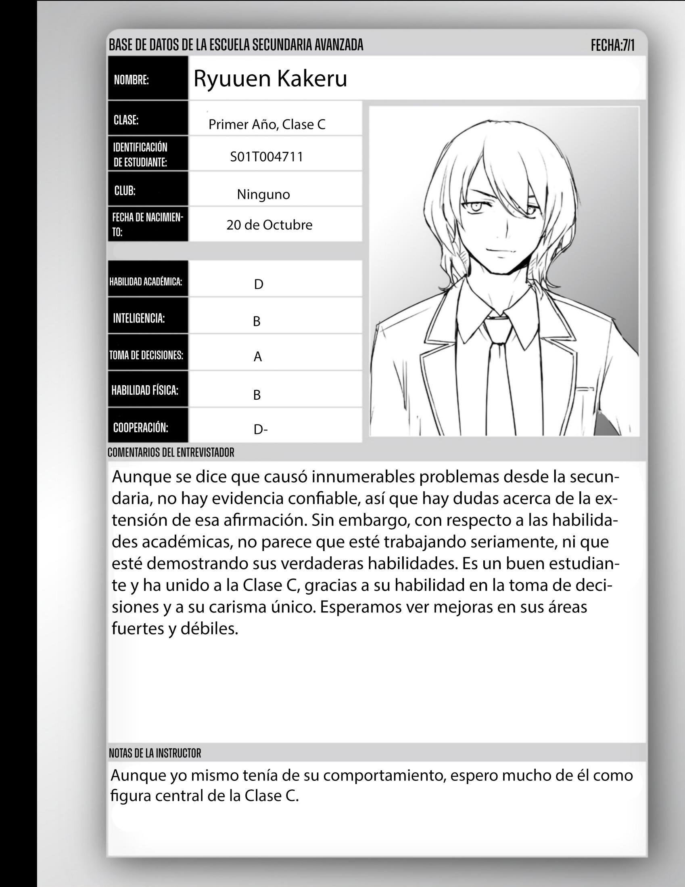
FALSO TRABAJO EN EQUIPO
Cuando estaba profundamente dormido, escuché las voces de las chicas que venían del exterior, todas de mal humor.
— Oigan chicos, reúnanse.
Ella ni siquiera terminó de hablar cuando todos se levantaron rápidamente y salieron llenos de rabia. Me fui a dormir al amanecer, así que me desperté lentamente mientras me quitaba el sueño de mis ojos adormilados.
— Qué demonios... estoy tan jodidamente cansado.
Un irritado Sudou salió de la tienda mirando a los demás a su alrededor.
— ¿Qué pasa?
— Uhm, Hirata-kun... Perdón pero ¿puedes despertar a todos los chicos? Es serio.
Shinohara notificó a Hirata con una mirada de disculpa. Si ella estaba confundida o enojada, la apariencia de Shinohara no era el problema. Un poco más lejos, las chicas estaban enfurecidas a nuestro lado.
— Entendido. Creo que pronto saldrán, los llamaré.
Luego, en un par de minutos, los chicos salieron de su tienda frotándose los ojos soñolientos. Cuando comenzaron a mirar a las chicas reunidas afuera de la tienda, los chicos medio dormidos sintieron una situación alarmante.
Los ojos de las chicas, que nos miraban a nosotros, estaban inusualmente asustados.
— ¿Qué pasa tan temprano en la mañana?
— Lo siento, Hirata-kun. Es algo que en lo que no estás involucrado, pero...
nos hemos reunido aquí porque hay algo que debo verificar a toda costa —
Shinohara dio a todos, excepto a Hirata, una mirada de desprecio y luego habló—. Esta mañana, bueno... faltaba la ropa interior de Karuizawa-san.
¿Sabes lo que eso significa?
— EH... ¡¿LA ROPA INTERIOR?!
Incluso Hirata, que siempre está calmado, parecía sacudido y molesto por esta situación completamente inesperada. Lo que me recordó, no podía ver ni a Karuizawa ni a las otras chicas.
— Ahora Karuizawa-san está dentro de la tienda, llorando. Kushida-san y otras la están consolando pero...
Diciendo eso, Shinohara miró hacia la tienda de las chicas.
— ¿Eh? ¿Ehhhhh? ¿Qué? ¿Por qué nos estás mirando sabiendo que falta la ropa interior?
— Decidimos que alguien, en medio de la noche, revisó la maleta y se la robó.
El equipaje estaba afuera, así que si alguien pensó en robarla, podría haberlo hecho.
Los chicos, aún aturdidos por la somnolencia, se miraron unos a otros al mismo tiempo.
— ¿¡NOONONONONONONO!? ¿EH? ¿EHH?
Ike miró alternativamente a los chicos y chicas en total pánico. Un chico, mirando la situación, tosió con voz calmada.
— Ahora que lo pienso, Ike, ayer... fuiste al baño bastante tarde. Tardaste mucho tiempo.
— ¡No, no, no! ¡Era difícil porque estaba oscuro!
— Es verdad. Tú fuiste quien robó la ropa interior de Karuizawa.
— ¡Bueno, estás equivocado! ¡No hagas eso!
Los muchachos comenzaron a culparse unos a otros por este desagradable y ofensivo crimen.
— De todas formas. ¿Supongo que esto es un gran problema? Pero es imposible vivir acampando en el mismo lugar que estos ladrones de ropa interior.
Shinohara, que parecía estar a punto de perder los estribos, dio esta advertencia con los brazos cruzados.
— Entonces, Hirata-kun. Puedes encontrar al culpable, ¿verdad?
— Eso... pero no hay evidencia de que los chicos la hayan robado. Existe la posibilidad de que Karuizawa-san la haya perdido.
— ¡Es cierto! ¡¡No tenemos nada que ver con esto!!
Todos los chicos gritaron a todo pulmón detrás de Hirata, proclamando su inocencia.
— No quiero pensar que haya un culpable aquí.
Parecía vil dudar de nuestros compañeros y no protegerlos.
— Sé que Hirata-kun no es el culpable. Pero, por el momento, déjame revisar el equipaje de los otros chicos.
Aparentemente, las chicas no cambiaron de opinión y siguieron con la idea de que el culpable es uno de los chicos. Bueno, es imposible no pensar eso en este contexto.
— ¿EH? Deja de decir tonterías. No necesitas hacer eso. Hirata, solo di que no.
— Por ahora, nos reuniremos y hablaremos todos los chicos. Podemos tener algo de tiempo, ¿verdad?
— ......... Si tú lo dices, Hirata-kun............... Ok, entiendo. Hablaré con Karuizawa-san. Pero si no encuentran al culpable, tenemos una idea de quién es.
Después de decir esto, la congregación se disolvió. Hirata rápidamente reunió a todos los chicos para tener una charla frente a la tienda.
— Vamos a ignorar lo que dijeron las chicas. Te sentirás mal si eres sospechoso. ¡Lucharé!
El primer día, pensé que Ike obtuvo cierto grado de confianza de las chicas, pero parece que fue una ilusión. Es obvio que los chicos sospechosos se sentirán incómodos si son acusados falsamente.
— Exactamente. No hay forma de que uno de nosotros haya robado la ropa interior de Karuizawa.
Yamauchi, siguiendo al resto de los chicos, miró a cada uno de ellos. No es que Karuizawa no sea bonita. Pero dado que es la novia de Hirata, es más conveniente para los hombres perseguir a Kushida o Sakura.
— No voy a dudar de ustedes, muchachos. Pero creo que este problema nunca se resolverá así...
Las chicas, que estaban hablando y conspirando juntas por allí, ahora estaban casi saltando hacia nosotros.
— Para demostrar su inocencia, es mejor que estén de acuerdo con la inspección de su equipaje de manera segura y digna —Habiendo dicho eso, Hirata sacó su maleta—. Tan miserable como soy, voy a responder a la petición de las chicas, es por eso que ustedes tienen que hacer lo mismo. ¿Bien?
— P... Pero...
— Por supuesto, puedo ser el primero.
Aunque pensé que no teníamos más remedio que comenzar a actuar por nuestra cuenta, no había nadie que pensara que Hirata fuera realmente el culpable, incluidos los chicos, no solo las chicas. Decir que le robó la ropa interior a su novia, es un poco contradictorio. Sin embargo, si él revela primero su equipaje, no podemos evitar seguir el ejemplo. Era inevitable que los estudiantes que no mostraran el contenido de sus maletas fueran sospechosos.
La maleta de Hirata, naturalmente, no tenía la ropa interior.
— No hay otra opción...
Influenciados por las acciones de Hirata, uno tras otro, todos los chicos comenzaron a sacar sus maletas de la tienda.
A Ike y Yamauchi les disgustó todo el tiempo, pero no podían ir en contra del flujo de las cosas. Incluyéndome a mí, nosotros 3 nos convertimos en los últimos en pasar. Así que supongo que iré a la tienda. Estaba siguiendo a los otros dos.
— Mierda, estoy enojado. Los hombres son sospechosos definitiva e irrevocablemente. Es demasiado irracional.
— Bueno, demostremos nuestra inocencia de una manera adecuada y triunfemos sobre ellas.
Ike comenzó a ponerse de pie mientras agarraba su maleta, pero de repente se detuvo y se paralizó.
— ¿Qué pasa?
— Ahh, nada...
Abruptamente, le dio la espalda a Hirata y a los demás y se sentó. Revisando el interior de su maleta, cerró la cremallera como si estuviera confundido.
— ¿Kanji?
Ike estaba rígido y con cara pálida. Estaba inamovible, como si tuviera una sensación temporal de parálisis.
— ¿Vamos?
Yamauchi estaba mirando a Ike, cuya apariencia se volvió repentinamente extraña, y dijo medio en broma:
— Tal vez, ¿tú la robaste?
— ¿¡¡Qué..?!! Estás... ¡Estás equivocado!
Ike lo negó apresuradamente, sacudiendo la cabeza mientras sostenía la maleta en sus manos. Qué reacción tan descarada. No nos hemos vuelto tan torpes como si no tuviéramos emociones.
— Tú... no me digas...
— ¿Qué? ¿Estás sospechando de mí?
— No, no es eso... es solo... la maleta... muéstrame lo que hay adentro.
— ¡Ah! Espera…
Yamauchi agarró la maleta, realmente iba a examinarla. Ahí está…
Ropa interior blanca que los hombres definitivamente no usan. Estaba bien escondida.
— ¡Eh! ¡Eso no es mío! ¡De alguna manera esto fue puesto en mi maleta!
— Oye, dame una mejor excusa.
Como Ike estaba aterrado, la mirada de Yamauchi hacia él fue de lástima.
— ¡Te digo, no sé! ¡De verdad! ¿Por qué hay... ro... ropa interior en mi maleta?
— Esto es vergonzoso. De todos modos, expliquemos el resto a Hirata y a los demás.
— ¿Huh? Si lo hago, significará que confieso que soy el culpable.
— Y el culpable no es nadie... ¿verdad?
Yamauchi pidió su consentimiento, pero ¿qué significa esto? Es obvio que la ropa interior de Karuizawa salió de la maleta de Ike. Entonces, ¿Ike es el culpable? El caso no es tan simple como para llegar a una conclusión así de fácil.
¿Cuándo y cómo robó la ropa interior? Además, no creo que el ladrón oculte casualmente la ropa interior en su maleta. Debería saber que su movimiento pronto causaría un alboroto y que comenzaríamos a buscar al culpable lo antes posible. Seguramente no pudo mantener su compostura. Sin embargo, en el momento en que hablamos sobre abrir su maleta para buscar sus pertenencias, pensé que entraría en pánico. En el caso de Ike, eso no sucedió hasta que encontramos lo que estábamos buscando.
La conclusión que se obtiene de esto es que el culpable es otra persona y puso la ropa interior en la maleta de Ike.
Bueno, había una pequeña posibilidad de que el ladrón fuera realmente Ike si no fuera tan tonto y estúpido. Sin embargo... eso no es cierto, ¿verdad?
— Oye, Ayanokouji, ¿me crees, verdad? Yo no la he robado.
— A juzgar por la situación, no hay pruebas concretas de que Ike sea el culpable.
— ¡Ayanokouji!
— Sin embargo, no puedo negar que hay una gran posibilidad de que él sea el culpable. Si es el culpable, entonces es demasiado estúpido.
— Bueno, eso es cierto... Pero... entonces... ¿Qué pasó? ¿Quieres decir que alguien la puso en la maleta de Kanji?
— Eso es lo que debo averiguar.
— ¡Oye! ¡Date prisa! —Una voz llegó desde los compañeros de Hirata.
— Q... Q... ¿Qué voy a hacer? Estoy en un serio problema.
Si eso que fue robado es descubierto aquí, sin importar lo que digan los chicos, las chicas dirán que Ike es el culpable.
— De todos modos, no tenemos más remedio que esconderla. Por ahora.
— ¿Esconderla? ¿Dónde? ¡No hay lugar para esconderlo!
Es cierto que dada nuestra situación, no podemos ocultarla en este momento. Si vamos a los baños o las tiendas de campaña, las chicas que vigilan ese lugar sospecharan de nuestros movimientos y tal vez exijan registrarnos. Por encima de todo, estamos pasando demasiado tiempo aquí. Es posible que ya sospechen de nosotros.
— No hay otra manera. Ponlo en tu bolsillo.
Ese fue el consejo que pude darle. No había tiempo para esconderlo en mi ropa interior o mis calcetines y no deberíamos llamar la atención con alguna actividad sospechosa.
— Yo... no puedo hacerlo... ya estoy aterrado.
Aun así, creía que ahora no teníamos más remedio que ocultarla.
— Entonces te lo dejo, Ayanokouji.
Ike sacó la ropa interior de su maleta y rápidamente la puso en mis manos.
— ¿Qué…?
— Si crees que es mejor esconderla, entonces hazlo, ¿cierto?
— ¡No!
— ¡Dense prisa!
— Me voy.
Con un “Te dejo el resto”, Ike huye. No dispuesto a involucrarse más, Yamauchi también hace lo mismo.
— ¡Oye, oye! ¿En serio…?
Comencé a sudar un poco por la presión. Sin embargo, hasta el final, la situación empeorará. Si la oculto, me gustaría que sea difícil encontrarla, pero no
tengo tiempo para eso. Sin tiempo para pensar, mientras sostengo mi maleta, la apreté en mi bolsillo trasero y me dirigí hacia el grupo de Hirata.
— Lo siento, lo siento. Mi maleta se ensució un poco, así que la estaba limpiando con mis manos.
Al dar esta excusa, Ike le entregó su maleta.
— Si quieres buscar, busca. Porque soy inocente ¿Cierto? ¿Yamauchi?
— ¡Oh! ¡Sí!
Los dos presentaron orgullosamente sus maletas. Al principio, Hirata rechazó la idea de realizar la inspección, pero finalmente lo hizo. También puse mi maleta, y luego dejé ese lugar. Después de terminar de inspeccionar las pertenencias de todos, Ike llamó a Shinohara que estaba esperando con los brazos cruzados.
— Registramos a todos. Pero no encontramos nada.
— ¿De Verdad?
— Sip. Estamos seguros ahora. Ninguno de los chicos es el culpable.
— Espera un minuto.
Cuando Shinohara se acercó a nosotros, comenzó a mirar dentro de la tienda.
Parecía que tenía sospechas y pensó que manteníamos algo escondido aquí.
Pero, por supuesto, no salió nada. Después de inspeccionar las dos tiendas, Shinohara regresó con las chicas y les susurró algo.
— ¿Sabes?, ese Hirata. ¿Tal vez lo escondió en su bolsillo o algo así? Tengo curiosidad de cuando Ike, Yamauchi y Ayanokouji estaban hablando en susurros.
Por supuesto que lo estábamos, después de que todas las chicas exigieron buscar por todo el lugar con cuidado.
— ¡Eso es suficiente!
Todas las chicas, incluida Shinohara, comenzaron a atacar a Ike.
— ¿No estaba Ike actuando sospechoso hace un rato? ¡Quizás esté ocultando algo!
— ¿¡Qué!? No... ¡No estoy escondiendo nada! Si quieres registrarme,
¡entonces busca!
Extendiendo sus brazos y suplicando su inocencia. Oye, en este momento... si él sigue hablando así...
— Bien, busquemos. Hirata, ¿podrías hacerlo por favor?
— Muy bien. Sin embargo, ustedes chicas deben entender una cosa. Si no encontramos nada aquí, entonces me gustaría que dejen de investigar a los chicos.
Este es el peor resultado. Bajo la supervisión de las chicas comenzó la inspección física de Ike, Yamauchi y yo. Por supuesto, la ropa interior no se encuentra con Ike o Yamauchi. No se movieron en contra de la cuidadosa inspección de Hirata y pudo inspeccionar cada rincón. Finalmente llegó mi turno.
Es demasiado tarde para escapar de esto. Supongo que fui yo quien me puse en esta situación. Ojalá pudiera dar marcha atrás y volver a hacer las cosas.
No, en realidad no. No había vuelta atrás. Entonces, debería apostar a la posibilidad de que Hirata pueda pasar por alto incluso un 1%. Decidí quedarme quieto como un pez muerto y ser examinado por Hirata mientras revisaba lentamente la parte superior de mi cuerpo.
Y luego, Hirata puso su mano dentro del bolsillo trasero donde puse la ropa interior.
--- ¿Ha terminado?
La resignación llegó. Sin lugar a dudas, el brazo de Hirata estaba transmitiendo la sensación de la ropa interior. Aunque no estaba seguro de si eso era realmente la ropa interior y no solo la sensación, era bastante sospechoso que una pieza enrollada de tela estuviera en el bolsillo. Hirata, cuyo cuerpo se puso rígido por un momento, me miró a los ojos. Pero ni siquiera pasó un segundo después de que nuestras miradas se encontraran, Hirata, examinó mi camiseta sin sacar la ropa interior, giró su cabeza hacia la chica.
— Ayanokouji tampoco la tiene.
Al decir esto, comenzó a caminar hacia Shinohara. Ike y Yamauchi intercambiaron miradas sorprendidos.
— Estos tipos no la tenían.
— Eso es extraño... pensé que sería alguno de esos tres. Pero si Hirata-kun lo dice...
Si Hirata, que está abrumado por su sentido de la justicia no está diciendo una mentira, Shinohara no tuvo más remedio que creerle.
— Debería estar bien una vez que haya ordenado el equipaje. Podemos discutir esto a partir de ese momento.
Después de que terminó la inspección, volví rápidamente dentro de la tienda.
Poco después apareció Hirata.
— Hirata... ¿Por qué no les dijiste? —pregunté honestamente.
— Es la ropa interior lo que tenías en el bolsillo, ¿verdad?
— UH, Sí.
— La ropa interior de Karuizawa... ¿La tomaste, Ayanokouji-kun?
— No, eso no es verdad.
¿Cómo tomará este noble joven mi negación?
— Confío en ti. No eres ese tipo de persona. Pero ¿por qué estaba en tu bolsillo?
No había forma de que no respondiera después de que él dijera que me creía sin dudarlo. Le dije sinceramente que estaba en la maleta de Ike. Hirata mostró un gesto melancólico por un momento.
— ¿Es así? Entonces no fuiste tú. Pero tampoco creo que Ike-kun y Yamauchi-kun lo hicieran. Si hay un culpable, me pregunto si lo pondrían en su maleta. Tengo una teoría de que la escondieron en otro lugar.
Sin decir una explicación difícil, Hirata me salvó con su agudeza habitual.
— Puedo ocuparme de la ropa interior, si quieres.
— Suena bien... ¿Pero estás seguro?
Tener esto es similar a sostener la tarjeta del comodín, algo que es difícil de procesar.
— Incluso si resulto ser el culpable, tendrá un daño mínimo en mí. Pensarán que simplemente soy su novio.
Al decir esto, Hirata puso la ropa interior dentro de una bolsa de plástico utilizada para el inodoro. Me pregunto si Karuizawa estará feliz de saber que él tocó su ropa interior con las manos desnudas.
— Sin embargo... con esto descubrimos una mala noticia. Sabiendo que la ropa interior estaba en la mochila de Ike-kun, hay muchas posibilidades de que haya un culpable en la clase.
— Ya veo...
No importa qué, si otros estudiantes de la clase vagabundeaban entonces alguien debe haberlo visto con seguridad.
Después de salir de la tienda, miré a mí alrededor. Nuestras maletas fueron envueltas en plástico una por una y puestas casualmente frente a la tienda. A pocos metros había una tienda donde Karuizawa y las demás estaban durmiendo. Hasta que ocurrió el incidente, las maletas de las chicas también se amontonaban sin protección. Podrías robar algo fácilmente si quisieras. Busqué fácilmente en la maleta de Ibuki el primer día.
La pregunta es: cuando fue robada. No se supo hasta que nos bañamos, por lo que el crimen se llevó a cabo entre ayer alrededor de las 8 PM hasta la madrugada alrededor de las 7 AM. Si ese es el caso, cualquiera en la clase pudo haberlo hecho. Sin embargo, no creo que el crimen haya sucedido a mitad de la noche. Alguien habría llevado una linterna en un ambiente totalmente oscuro y habría sido atrapado por la luz si hubiera husmeado alrededor de las maletas.
De ser así, en el amanecer alrededor de las 5 de la madrugada es muy posible que fuera el momento.
Bueno, incluso si reducimos el tiempo del crimen, es difícil encontrar al culpable con eso.
¿Qué pasa si... cambiamos la perspectiva un poco? La razón por la que Karuizawa robaría su propia ropa interior es esconderla dentro de la maleta de Ike. Pero, ¿qué espera lograr con eso?
— Creo que no eres el culpable. Es por eso que te salvé.
— Oh. Gracias.
— Pero eso no es todo... Quiero que encuentres al culpable —Hirata me lo pidió sinceramente mientras tomaba mi mano.
— ¿Yo, encontrarlo?
— Será incómodo si no se encuentra el culpable, independientemente de si es un chico o una chica. A decir verdad, sería lo mejor si lo encuentro yo, pero parece difícil dedicar tiempo para unir a todos...
Bueno, hay una restricción de comportamiento etiquetada con una persona en el centro de la clase como Hirata.
— La persona involucrada en el crimen ciertamente está preocupada por el culpable. No creo que una persona que haría cosas como esconder la ropa interior en la maleta de Ike pueda ser encontrada fácilmente.
¿Estábamos completamente al tanto de eso? Se supone que Hirata sabe que encontrar al culpable es difícil.
— ... Bueno, haré todo lo que pueda por el momento. No tengas grandes expectativas.
— ¡Gracias! ¡Gracias, Ayanokouji-kun! —mientras decía gracias con un espíritu cálido, Hirata profunda y agradecidamente bajó la cabeza.
No es que no entendiera los sentimientos de gratitud de Hirata, pero su respuesta parecía un poco excesiva. El robo de la ropa interior probablemente es un caso extremadamente problemático para Hirata. Es una evidencia de que como líder se toma en serio una crisis que llega a la clase.
— Después, si encuentras al culpable... En ese momento quiero que me lo digas a mí primero. No se lo digas a nadie más.
Su capacidad de transmitir fuertes emociones con esos atractivos ojos es muy asertiva. Es extraño que parezcan demasiado dignos.
— Si se vuelve público, esta clase sufrirá nuevamente un gran daño. Quiero evitar esto. Por lo cual quiero pensar en un método para lograr un acuerdo pacífico hablando con el culpable. Y si reflexiona, podríamos terminar con esta historia siendo mi culpa.
— En otras palabras, ¿ocultarás la verdad?
— Ocultar, eh... Es una mala elección de palabras, pero incluso si se toma de esa manera no se puede evitar. Si alguien de los chicos es el culpable, creo que la verdad debe estar oculta.
Fijó sus pupilas en mí intensamente. Parece que dice que está dispuesto a proteger al perpetrador.
— Entiendo. Te informaré primero. ¿Está bien?
— Gracias. Entonces, volveré a trabajar.
Al salir de la tienda, Hirata llamó a otros estudiantes para empezar algo.
Múltiples siluetas que había visto desde mi asiento se estaban volviendo distantes.
— Hirata Yousuke. ¿Eres un héroe de la clase D?
Sentí una contradicción en la historia de Hirata. Dijo que la verdad debería estar oculta incluso si el perpetrador es un chico justo después de que dijo que me había salvado porque confiaba en mí. En otras palabras, si alguien tuviera la ropa interior, la verdad quedará oculta a las chicas. Hirata no tenía plena confianza en mí. Y más que eso, probablemente supuso que había una posibilidad de que yo fuera el autor. Eso es algo natural, por supuesto. Desde la perspectiva de un extraño, yo, que tenía la ropa interior, estoy diciendo que Ike es el culpable. Es por eso que Hirata al darme, quien podría ser el culpable, el papel del detective tendió el hilo de la salvación y me dio una advertencia para no causar una segunda ofensa. Mientras pensaba de esta manera, pude captar la historia. Lo único seguro es olvidar el incidente.
También pensé en Hirata siendo el culpable, pero... bueno, pronto saldrá a la luz.
PARTE 1
— ¿Podrías reunir a los demás?
Cuando salí de la tienda, la reunión de Hirata ya había empezado. No pasó mucho tiempo antes de que toda la clase se reuniera.
— No se debe confiar en los hombres. ¡Es absolutamente imposible permanecer en el mismo lugar con ellos!
— Pero hay un pequeño problema para que los chicos y chicas vivan separados, ¿no crees?... El examen casi ha terminado. Ya que somos amigos, debemos creer en los demás y cooperar.
— Eso puede ser cierto. ¡Pero no podemos quedarnos en un lugar con ladrones de ropa interior!
Karuizawa está girando la cabeza a un lado descartando esta idea como si fuera absolutamente imposible.
Bueno, si la víctima lo dice, entonces Hirata no puede decir nada más.
Además de esto, Shinohara trae una rama de un árbol y dibuja una línea, de manera protectora.
— Creemos que el culpable es un chico. Entonces, tracemos una línea aquí y dividimos el área entre chicas y chicos. Los chicos tienen absolutamente prohibido ingresar a nuestra área.
Shinohara finalmente propuso dividir oficialmente nuestro espacio de vida común.
— ¡¿Qué es esto?! Nos tratan como criminales sin ninguna prueba. ¿No les permitimos revisar nuestro equipaje y también hacer una revisión física?
— Es posible que las hayas escondido en otro lugar que no sea tu maleta,
¿verdad? Los hombres son pervertidos. De todos modos, no ingreses al territorio de las chicas hasta que encontremos al culpable. Así que vete para allá.
Después de decir eso, exigieron que los chicos movieran las tiendas. Como era de esperar, los chicos no parecían satisfechos con esto y siguieron con sus quejas.
— Si no nos crees, mueve tu tienda o lo que sea. No moveremos nuestra tienda y tampoco te ayudaremos a mover la tuya.
— ¡Ah! Ya veo, bien entonces. No puedes soportar la carga de ser atrapado, mientras finges ayudar.
— Y no uses la ducha nunca más, ¿de acuerdo? No es broma dejar que un hombre que podría ser un ladrón pervertido la use.
Parece que la unidad que teníamos hasta ahora se ha roto por completo.
— ¡Demonios!. ¿Puedes siquiera levantar tu tienda?
Sintiendo que la situación se volvió bastante peligrosa, Shinohara le pidió ayuda a Hirata.
— Oye Hirata, ¿podrías ayudarnos? ¿Por el bien de Karuizawa?
— Ok, te ayudaré. Puede llevar algo de tiempo, ¿está bien?
— ¡Gracias, Hirata! ¡Bien por nosotras, Karuizawa!
— Sip. Solo Hirata es de fiar.
Sintiéndose un poco feliz y avergonzada, Shinohara hizo que las mejillas de Karuizawa se sonrojaran.
— Hmm... Aunque, Hirata podría ser el culpable.
— ¡¿Qué?! ¡Hirata no es el culpable! ¡Qué cosa tan estúpida dices! ¡Piérdete!
— No te pongas en ridículo Karuizawa. El hecho de que sea tu novio no significa que no pueda ser el culpable.
Naturalmente, las quejas de los chicos estaban aumentando, pero en esta situación sus palabras no fueron tomadas en consideración. Todos, excepto Hirata, eran sospechosos de ser el ladrón, por lo que no se podía evitar. La discusión en la que Karuizawa y Shinohara tomaron la iniciativa se acerca rápidamente a la conclusión.
— Espera un segundo. ¿Puedo decirles mi objeción contra todas ustedes?
¿Especialmente para ti, Karuizawa?
En medio de una atmósfera tan fría, Horikita con calma pero también con firmeza se enfrentó a Karuizawa.
— ¿Qué pasa Horikita? ¿Tienes alguna objeción contra nuestro plan?
— No me importa dividir el espacio entre hombres y mujeres. Mientras no se haya encontrado al culpable, es prudente mantenernos lejos de los chicos, ya que hay una gran posibilidad de que el culpable sea uno de ellos. Sin embargo, no confío en Hirata, quiero decir que no puedo descartar la posibilidad de que él sea el ladrón y no estoy convencida de por qué debe ser excluido de las reglas y dejarlo entrar al área de las chicas.
— Hirata nunca haría algo así. ¿No puedes entender eso al menos?
— Esa es tu creencia personal. No me obligues a creer lo mismo.
Karuizawa claramente no estaba satisfecha con la actitud de Horikita y dio un paso más cerca de ella.
— Hirata definitivamente no es el criminal. Ni siquiera tienes amigos, y mucho menos novio, por lo que es posible que no entiendas.
— No me hagas decir lo mismo una y otra vez. No puedes convencerme acerca de él —Horikita no retrocedió cuando la provocaron.
— Bueno, entonces déjame preguntarte algo. Supongo que no hay otros chicos en los que se pueda confiar excepto Hirata. ¿O los hay?
— No hablaré sin pensar. En pocas palabras, puedes aumentar el número. Si haces eso, entonces tendremos dos hombres. Es muy efectivo cuando los muchachos quieren cuidarse mutuamente.
— ¡Esto no es una broma! ¿Te robé tu ropa interior? ¡No! ¿Has sido humillada por un chico? ¿Lo entiendes? ¿Sabes lo que sucederá si atrapas al culpable?
— ¿No crees que esto sucede debido a tu mal manejo de crisis? Mientras estábamos perdiendo el tiempo, ¿tal vez estaban inventando una razón de cómo no sabían que la ropa interior había sido robada?
— ¡Oh! ¿Qué manejo de crisis? ¡Nos dejaron buscar en sus maletas! ¡Qué está mal en eso!
— No importa si te robaron la ropa interior. Sucede a menudo en la vida cotidiana, las personas son víctimas de robos. Sin embargo, aquí parece que hay un tipo que guarda rencor contra ti.
En otras palabras, Horikita considera la posibilidad de que el culpable no robara la ropa interior con un motivo ulterior, sino que era un acto contra Karuizawa específicamente.
Tal vez había alguien que estaba tratando de satisfacer un viejo rencor contra Karuizawa y que deliberadamente decidió humillarla. Me puedo imaginar al culpable siguiendo esa ruta. ¿Pero es apropiado que Horikita exprese esa idea contra Karuizawa en público? Ella es inteligente, pero tiene dificultades en las relaciones con otras personas y este es exactamente el punto débil de Horikita.
Si Karuizawa es provocada frente a una gran multitud, se sentirá más lastimada e irritada. Y esta furia no solo se dirigirá hacia los chicos, sino también hacia Horikita.
— Tú…
Karuizawa estaba a punto de estallar de rabia cuando Hirata irrumpió y se paró a su lado galantemente.
— Karuizawa. Sería de gran ayuda para mí si eliges salvar a otro chico.
¿Podemos hacer eso?
Ella eligió la mediación de Hirata.
— Pe... Pero... ¿Cómo puedo confiar en alguien más aparte de ti, Hirata?
— ¡Bien, entonces elígeme! —Ike levantó lentamente la mano.
Pensar que él estaba peleando con Shinohara hace un momento...
— ¡Espera! Si se trata de trabajo físico. ¡Debo ser yo! —Sudou estaba moviendo su mano.
— ¡Espera! ¡Soy yo el que ha demostrado más habilidad aquí! —Yamauchi también respondió.
No importa cuántas veces tuvimos peleas con las chicas, no podemos evitar querer estar cerca de ellas.
— ¡Dejen de bromear! ¡Esto es serio! No estamos tratando de encontrar una manera de traer un pervertido aquí. No sería de extrañar que uno de
ustedes sea el ladrón. O Horikita, ¿crees que estos tipos son lo suficientemente buenos?
— Bueno, esto es lo que creo. Estas 3 personas de verdad son poco confiables teniendo en cuenta su comportamiento diario. Así que pensé detenidamente sobre esto y tengo la intención de elegir a la persona que no me dé la impresión de ser un ladrón.
— ¿Quién es? ¿Alguien más aparte de Hirata?
Miré hacia los chicos. ¿Hay alguien que pueda sentirse a gusto siendo comparado con Hirata?
¿Quién podría ser?…
— ¡Eres tú, Ayanokouji!
… ¿Qué? ¿Por qué yo? ¿Cómo puedo ser yo?... Sin querer, mi boca quedó abierta, incapaz de decir una palabra.
— ¡Jajaja! ¡No me hagas reír! Si lo piensas, ¿no es él el único amigo que tienes? No puedes confiar en un tipo tan callado y taciturno.
No es que me importe, pero mi existencia en esta escuela parece ser algo entre
“ese tipo” y “compañero malhumorado”. ¿Es este el lamentable destino de un hombre que no pudo construir relaciones sociales satisfactorias en el primer semestre?
— Creo que Ayanokouji podría ser el culpable. En la mañana estaba actuando un poco raro, ¿no?
Cuando encontré la ropa interior robada en maleta de Ike, no tuve más remedio que decir tonterías para salir de esa situación. Bueno, es un hecho que tenía la ropa interior de Karuizawa en mis manos en ese momento, lo que me hizo parecer bastante sospechoso.
— Podría ser posible... Ciertamente, él estuvo frente a la hoguera ayer hasta la noche, Ayanokouji-kun...
Parecía que el escepticismo de las chicas se había vuelto evidente cuando me eligieron como su próximo objetivo. Las personas sospechosas comenzaron a
aparecer entre los chicos. Ike y Yamauchi estaban en total ignorancia.
Independientemente de que estemos en silencio o aclarando las cosas, nos quedamos en silencio ya que era una situación desventajosa. No importa cuánto dudaran las chicas, Hirata estaba reteniendo la evidencia y no se descartaba que pudiéramos convertirnos en el culpable en contra de nuestra voluntad. Sin embargo, ser sospechoso de ser culpable no era una buena sensación, independientemente de una falsa acusación.
— Ayanokouji-kun es realmente el ladrón de ropa interior, ¿verdad? Él no tiene excusas. Antes miró fijamente a Karuizawa-san como un pervertido.
Una voz sospechosa se podía escuchar de entre las chicas. No podía recordar mirarla de esa manera, pero ¿qué puedo hacer si mi cerebro decidiera olvidarlo para mi conveniencia? Las acusaciones falsas suceden de esa manera.
— Um... Ah, creo que Ayanokouji-kun no hace esas cosas...
Debido a que todas las chicas mostraban dudas con todas sus fuerzas, pensé que nadie se pondría de mi lado, pero las palabras de protección vinieron de una persona inesperada. Arqueando su espalda, Sakura me defendió de una manera vacilante. No esperaba esa acción de una chica que es mala para llamar la atención de los demás como ninguna otra.
— ¿Huh? ¿Qué estás diciendo, por qué dices eso? —Karuizawa giró su cabeza con disgusto hacia Sakura, quien estaba al lado de un potencial culpable. Desde el punto de vista de una chica alegre, la tímida Sakura es un objetivo razonable. Es más fácil enfrentarse a ella que a Horikita.
Cambió su presa en un instante y como un depredador atacó con palabras—: ¿Ah, por qué? ¿Cómo sabes que Ayanokouji no es el culpable?
— Eso es... Eso... es porque él no es una persona que... haría eso...
Siendo fuertemente presionada, desesperadamente sacó su voz con miedo.
— ¿Huh? No lo entiendo Esa no es una respuesta —después de doblar sus manos, Karuizawa se rió despiadadamente ante el continuo y misterioso apoyo de Sakura.
— ¿Eh? ¿Tal vez a Sakura-san le gusta el simple y ordinario Ayanokouji-kun?
En lugar de solo burlarse de ella, Karuizawa dijo esto con la razón adecuada.
Estaría bien si esta declaración sin base se desechara sin dudarlo, pero Sakura la tomó literalmente.
— ¿¡N-no!?
Asustada por la sorpresa, las mejillas de Sakura se pusieron rojas y turbulentas.
— Guau. ¿Qué es esta respuesta tan contundente como en la primaria? Es muy obvio.
Las otras chicas se unieron a la risa de Karuizawa.
— ¡Eso es…! Ah, um... ¡Uuum...!
— Ja, ¿no es bueno? No hay otra persona que le guste tanto. ¿Qué puedes decirnos? Oye, oye, incluso puedo ayudarte.
— ¡Uh!
Como no pudo manejar una atmósfera en la que había demasiados ojos sobre ella, Sakura corrió hacia el bosque. Kushida se alejó corriendo detrás de Sakura.
Ella notó que estar sola en el bosque podría ser peligroso.
— ¿Qué fue eso? Solo estaba bromeando con ella un poco. Es por eso que no puede hacer amigos.
Mirando la ejecución pública de Karuizawa desde el principio hasta el final sin decir nada, Horikita dejó escapar un suspiro mientras se tocaba el pelo como si estuviera viendo algo poco interesante.
— Me pregunto si está bien continuar con la discusión pronto. Después de todo, es una pérdida de tiempo ver esta farsa.
— ¿Sabes?, Horikita-san. Dijiste eso como si estuvieras molesta —perdiendo el interés en la fugitiva Sakura, Karuizawa una vez más atacó a Horikita—.
Oye, Horikita-san. ¿Por qué me tratas con frialdad? ¿Paso algo?
— ¿Algo? Hay algo.
— Bueno, ¿no es genial Hirata-kun? También es inteligente. E incluso es amable con alguien como tú, creo que cada chica común se enamora de él
—mientras se reía, Karuizawa tomó el brazo de Hirata y lo tiró con orgullo—. Te diré algo, Ayanokouji-kun es... bueno. Su apariencia física es
buena en comparación con los otros chicos, pero ¿no es todo lo demás horrible? Me preguntaba si estás celosa de mí. Esos son mis pensamientos.
— Eres muy ingenua, Karuizawa-san.
— Aah- ¡Eso es malo, es vergonzoso estar celosa!
A menudo escucho que el comportamiento colectivo esculpe el rol de una persona, su estado psicológico y personalidad. Las cosas que no se pueden ver en la vida escolar parecen salir a la superficie una tras otra. Especialmente para Horikita, que siempre está sola, siendo considerada por las chicas de su clase terriblemente mal, y sin embargo, deja que las cosas pasen como algo que no es de su preocupación. Como se trata de una vida comunitaria, ambas partes no podían evitar verse afectadas.
— Seguramente Ayanokouji-kun tiene muchos talentos que no están siendo elogiados.
Oye... pensé que ella me respaldaría, pero fue todo lo contrario.
— Sin embargo, si Hirata-kun puede confiar en él es otra pregunta. Era esencial para ti presionar a Hirata-kun sin razón. En realidad, no hay ningún factor para confiar en Ayanokouji. Además, absolutamente no voy a ir con el afecto personal. Como resultado del pasado extinto, se convirtió en el hombre en quien más puedes confiar en la clase. ¿O hay un chico que puedes decir que es mejor que él? Si hay alguien, quiero que me lo digas.
Al decir esto, Karuizawa miró a los chicos evaluándolos y dejó escapar un suspiro.
— ...Bueno, parece que no hay nadie significativo entre los hombres. Siempre están en segundo plano.
No tuve más remedio que estar de acuerdo con ese punto. La percepción de las chicas es muy dura.
— Oh bueno, ¿no es genial? Tengo dudas. Lo aguantaré si Hirata-kun está bien con eso.
Parecía que al final yo era el elegido de Karuizawa y las chicas, pero no estaba satisfecho. Por supuesto, no revelé eso. Solo habría otra pelea. Cuando la charla llegó a su fin, comenzaron a dispersarse y al mismo tiempo la solidaridad de la clase se vino abajo.
— Entiendo lo que todos quieren decir, pero... no estoy de acuerdo con sospechar de un compañero de clase sin bases. No hay nadie en nuestra clase que haga cosas horribles —dijo Hirata, ya que no podía permanecer en silencio sobre este acontecimiento.
— Eres demasiado amable. ¿Estás diciendo que alguien más la robó?
— No lo sé... pero no quiero sospechar de un compañero de clase.
Los chicos también pensaban que el culpable se sentía mal por ser el sospechoso de las chicas todo el tiempo.
— Oye... Tal vez ¿Es Ibuki?
Una persona murmuró mientras miraba en secreto a Ibuki que estaba sentada al final del campamento base. En ese momento, una sombra de duda se cernió sobre Ibuki, como si una manada vigilara a una presa.
— Ibuki-chan de la clase C ¿verdad? No sería ridículo si pretende ser un obstáculo para la clase D... usar trucos para hacernos parecer sospechosos.
— Paren con las tonterías, chicos. Sin duda eres el más sospechoso —
Shinohara sospecha mucho de los chicos. Se mantenía a distancia de nosotros, gesticulando con la mano para que retrocediéramos—. Hasta que averigüemos quién es el culpable, no podemos confiar en los hombres.
¿Cierto?, Karuizawa-san.
— Cierto. El culpable seguramente es alguien de los muchachos.
Debido a este incidente, al final se decidió continuar con nuestras actividades con los chicos y chicas por separado.
PARTE 2
Lo repetiré una y otra vez, pero el tipo llamado Hirata Yousuke es alguien genial.
No por su apariencia sobresaliente, sino por sus ideales sobre cómo deberían ser las cosas. Un ser humano ordinario que toma la iniciativa de hacerse responsable de asuntos problemáticos y desagradables mientras responde magníficamente a las expectativas de los demás. Cooperando con las chicas, estaba preparando 2 tiendas de campaña para mantenerlas a distancia de los chicos.
Yo, que estaba del otro lado, tenía el papel de clavar estacas para fijar las tiendas de campaña al suelo. Al principio, inmediatamente luché para que me ignoraran por completo, pero tan pronto como le agarré el truco, tenía una posición fija en la primera tienda. Es inesperadamente fácil. En este momento estoy clavando la estaca de la segunda tienda con un martillo mientras me limpio el sudor. Nuestro enlace, Hirata, me ayuda a desplegar la cuerda y martillar la estaca.
— Perdón por hacerte pasar un mal momento.
Los otros muchachos están jugando afuera o tratando de almacenar algo de comida obtenida de la pesca.
— Oh, no, no tienes que disculparte. Sería malo dejártelo todo a ti.
— No es malo. Lo estoy haciendo porque quiero.
La existencia de su refrescante sonrisa es un factor importante en la genialidad de este tipo.
— Puede parecer extraño, pero ¿por qué trabajas tan duro?
— ¿Trabajar duro? No tiendo a trabajar duro. Solo estoy haciendo lo que tiene que hacerse —Sin querer sonar jactancioso, se limpió el sudor que goteaba con una toalla que colgaba de su cuello—. Creo que esta prueba especial no es una batalla, sino una oportunidad importante para que todos sean más cercanos. Es por eso que quiero atesorar este momento. Estaré encantado de trabajar si es necesario para lograrlo.
Me pregunto si una persona ordinaria puede estar llena de tan buenas intenciones sin tener una cara oculta como Hirata. Querer agradarle a la gente, querer atraer la atención, es normal tener esa mentalidad. Pero no puedo obtener esa impresión de Hirata. Tengo fuertes sentimientos de que solo quiere ser bueno con todos.
— Bien, queda la mitad. Terminemos esto rápidamente.
Los dos fuimos al lado opuesto de la tienda para martillar las estacas restantes.
— ¡Hirata-kuun! ¡Ven aquí un momento! —Karuizawa y las otras chicas llaman a Hirata. En un instante, rodearon a Hirata y le tiraron de los brazos con fuerza.
— Vamos, vamos, ¡ven aquí!
— Ah, todavía tengo cosas que hacer...
— ¿No puedes dejárselo a Ayanokouji-kun? ¿Puedes? —Dijeron mientras tiraban de él con toda su fuerza.
Mirando a Hirata y su rostro preocupado, respondí mientras pensaba que eran una molestia:
— Haré esto, ve.
— Pero, es difícil hacerlo solo-
— Está bien, solo quedan pocas cosas.
— Lo siento mucho. Gracias. Vuelvo enseguida.
Era más bien una petición imprudente que parecía beneficiar a las chicas, pero como si mis palabras no llegaran a ellas, continuaron tirando de él en dirección al bosque. Quizás vuelvan pronto.
Tomé el martillo una vez más, mientras estaba mirando abatido a Hirata dejándome atrás. Continué con el trabajo y finalmente completé todo por mi cuenta antes de que Hirata regresara.
— Me tomó más tiempo de lo que pensaba, estando solo...
Tuve que prestar atención a la dirección de la tienda y las estacas mientras estiraba la cuerda muchas veces.
Eran más de las 10. ¿Qué debería hacer ahora? No puedo cometer un error en el proceso ahora que todo comenzó a moverse. Pero antes de eso, restauraré mi fuerza física. Trabajar bajo el sol abrasador es demasiado agotador.
— ¿Puedo hablar contigo?
Como terminé la primera etapa pensé que descansaría un rato cuando Ibuki me llamó.
— La discusión sobre el ladrón de ropa interior esta mañana se veía muy seria. Quiero decir, la clase D no es muy unida.
— Hmm, puede ser. No podemos soportar varias dificultades.
— Cualquiera que sea el motivo, como mujer, robar la ropa interior de las chicas es imperdonable.
Está bien. Pero ¿por qué me está diciendo esto? No era yo quien estaba protegiendo a Ibuki sino a Yamauchi mientras cuidaba al grupo de Kushida.
Como tuvimos una discusión, no debería haber ninguna preocupación especial...
— ¿Dudas de mí?
Parecía que Ibuki vio como Shinohara y los demás me trataban como culpable esta mañana.
— ¿Eres el culpable?
— No, ese no es el caso.
— Entonces está bien. Bueno, no es como si tuviera pruebas específicas.
Parece que algunas chicas confían en ti y en ese chico Hirata. Creo que la posibilidad de que seas el culpable es baja.
Llegó a esa conclusión después de escuchar la discusión entre Karuizawa y Horikita.
— ¿No tienes idea del culpable?
— En este momento, no del todo. No quiero dudar de los muchachos tanto como sea posible.
— Entonces, ¿quién crees que es el culpable?
Su pregunta es como si me estuviera poniendo a prueba. Estaba mirando de reojo a Ibuki que estaba parada a mi lado, pero esperaba la respuesta sin mirarme. Aun así, ella continuó sin que respondiera:
— Si los chicos no son los culpables como dices, entonces la próxima sospechosa soy yo, una extraña. Alguien sin duda no confía en mí. Yo podría estar fingiendo que los chicos robaron la ropa interior. ¿Estoy en lo cierto?
Lo dijo en tono de burla, sabiendo que es sospechosa. Le respondí rápidamente lleno de sentimientos:
— Me pregunto si al menos confías en mí. No creo que seas la culpable.
Le respondí esto a Ibuki sin dudarlo. Me miró un poco sorprendida, queriendo asegurarse de que esto sea cierto. Cuando mis ojos se encontraron con los de ella, apartó la mirada.
— … Gracias. No pensé que serías tan amable.
— Solo es una respuesta honesta.
La razón por la que podía responder tan sinceramente es porque confiaba en ella al mirar sus ojos sinceros.
Por lo tanto, llegué una conclusión inconscientemente. La culpable que robó la ropa interior de Karuizawa y la escondió en maleta de Ike fue Ibuki.
PARTE 3
Entonces, en la quinta noche de la prueba de examen especial, la clase D se sentía deprimida. Era como si estuviéramos en vigilia toda la noche sobre un cadáver. Después de todo, nadie sabía quién era el culpable y nadie quería hablar de eso. Pasó un día entero sin un momento de dudas y sospechas.
En esta situación, era responsable de mantener el fuego encendido. Solo estaba mirando el fuego, arrojando algunas ramas de vez en cuando... una tarea muy monótona y fácil.
El problema, sin embargo, yacía en otro lugar.
— ¡Oye, Ayanokouji! Te dije que movieras la tienda correctamente, ¿no?
— Muévela más a la izquierda. Está demasiado cerca de los chicos.
— … Bien.
Me dieron una orden bastante irracional y la acepté de mala gana. Las chicas se fueron con indignación.
— Es difícil cuando te obligan a hacer diversas tareas rutinarias.
— … Mira quién habla. Yo hubiera estado bien si no fuera por tu recomendación innecesaria.
— No hay otra manera. Hirata no es de fiar. Es necesario un seguro.
— Eres la única en la clase que no confía en Hirata. Es mejor no pensar que todas las personas viven teniendo una cara oculta.
— Es verdad. De hecho, yo no tengo una cara oculta.
En efecto. Horikita vive siendo sincera consigo misma.
Terminó esquivando esto bastante hábilmente.
— Sin embargo, la mayoría de la gente usa sus intenciones reales de forma muy diferente a sus principios. Como tú. Además, no confío en ninguno de ellos porque la caridad y la hipocresía son dos caras de la misma moneda.
Parece que sus problemas de confianza no se limitan solo a Hirata. También aplican a Kushida.
— Aun así, confío mucho en Hirata.
— ¡Ah! Al menos puedo contar contigo. Eres realmente confiable.
— ¿Confiar en mí? ¿Puedes decir al menos que tengo una buena influencia en la clase gracias a él?
Horikita debe tener algo en mente ya que volvió a mí con un contraataque.
Probablemente le parecía que tenía información que ella no conocía y, además de eso, le seguía respondiendo con una sonrisa hostil.
— Bueno, Hirata no es perfecto. Hay momentos en que no podemos organizar las cosas adecuadamente cuando chicos y chicas se reúnen.
¿Pero no crees que hace lo mejor que puede como coordinador? Él puede hacer lo que otros estudiantes no pueden.
— Eso es seguro. Es cierto que sus acciones de asumir un papel protagónico sin quejarse son impresionantes, pero esto debe combinarse con un buen resultado. Sin embargo, eso ya no es posible. La situación parece terrible.
¿Sabes que los puntos que poseemos ahora son muy pocos?
— Parece que hubo una cantidad excesiva de gasto. Aunque no lo puedo estimar exactamente.
— Justo como pensaba, Hirata, en quien confías tanto, mantiene sus labios sellados.
— ¿Qué quieres decir?
— Por favor, sígueme.
Me pregunto qué es tan importante para que dejamos el fuego desatendido.
¿A dónde vamos?
En frente de las tiendas de las chicas.
Horikita abrió la tela en el panel principal y mostró el interior de la tienda.
— Eso es…
A diferencia de la tienda los chicos, la tienda de las chicas era completamente diferente porque no había espacio para dormir.
En el piso, había una alfombra para suavizar la dureza del suelo, y varias almohadas parecían haber sido infladas con aire. Además, instalaron un ventilador eléctrico inalámbrico a batería.
— Las mismas cosas también se colocaron en la otra tienda. Un total de 12
puntos.
— Pensaba que las chicas soportaban el calor con paciencia y sin quejas.
Entonces, así es como lo hacen.
No es que fueran pacientes. Acaban de comprar todos los artículos necesarios.
— Karuizawa y las demás solicitaron esto.
Parece que se consienten bastante cuando no las vemos.
— Me di cuenta cuando el pedido ya estaba hecho y todo estaba listo. Es difícil hacer algo cuando creamos una regla según la cual cualquier persona puede usar puntos si lo solicita.
Al igual que con el caso de Kouenji que se retiró del examen, no había forma de dejar de usar puntos.
— Parece que Karuizawa le informó esto a Hirata, por lo que definitivamente lo sabe. Pero tú no lo sabías Es un hecho que nadie te dijo o informó a los demás. Sin embargo, creo que este tipo de información debe ser compartida con todos.
Horikita explicó la situación con los brazos cruzados. Sus palabras tienen sentido, pero no parece que Hirata mantuviera la boca cerrada porque tuviera malas intenciones. Tal vez, solo quería evitar confusiones innecesarias.
Incluso Karuizawa fue evaluada cuando se lo reportó a Hirata.
— Entiendo lo que quieres decir, pero no tengo nada en particular que decir.
Los puntos que se han utilizado no se pueden devolver, y no quedan muchos días para que finalice la prueba. Entonces, Karuizawa probablemente no utilice más puntos descuidadamente.
Pensé que me estaba enojando con la forma fría en que respondió, pero parece que esta es la respuesta esperada de Horikita. Así que la ignoré por completo.
— Si no pasa nada más, esta vez creo que deberíamos permanecer callados y obedientes. Pero es muy arriesgado que el caso de la ropa interior robada siga sin resolverse. Si el culpable aún está cerca, a partir de ahora deberíamos hacer todo lo posible para evitar que vuelva a hacerlo. Es por eso que quiero atrapar al culpable lo antes posible.
— Entonces, ¿quieres que colabore contigo?
— Sí. Ahora que las grietas comenzaron a aparecer con los chicos, hay muchas cosas que no puedo hacer sola.
Chicos y chicas están ahora en medio de una guerra fría. Se ha detenido el flujo de información entre ambas partes y es difícil encontrarla incluso si salimos a explorar.
— Entendido. No sé si será de ayuda, pero cooperaré.
Cuando respondí con tanta franqueza, por el contrario, Horikita tenía una cara llena de duda.
— ... Puedo entender las cosas un poco... ¿Tienes algún otro objetivo?
— Es mejor que aceptes los favores de otras personas amablemente. Como hombre, estoy bastante insatisfecho con el hecho de que otros hombres hayan sido tratados como ladrones. Mi motivo para colaborar es suficiente.
Anteriormente, Hirata me pidió que fuera responsable de la situación, pero no debería cambiar nada.
— Bueno, olvídalo. Está decidido entonces.
Pero el culpable no fue estúpido. En primer lugar, ante la sospecha de todos los miembros de la clase, no se delató ni mostró sus verdaderas intenciones.
Horikita aún puede pensar que todo estará bien incluso en las peores situaciones. Ya hemos sido perturbados en esta prueba más que esto, también tuvo un efecto en los puntos.
Sin embargo, sobre el culpable... Ibuki probablemente tendrá que actuar una vez más. No, tiene que suceder con certeza. Porque todavía no logró su objetivo.
— Qué cara tan seria. ¿Tratar a alguien como criminal no es de tu agrado?
— Debido a este incidente, la clase es un desastre. Es una pena, a pesar de que hicimos todo muy hábilmente hasta hoy.
— Es inesperado que nos las arregláramos para cooperar hasta ahora.
Porque generalmente no hay trabajo en equipo en la clase D. El resultado final ha sido pobre, especialmente ahora que hay una grieta entre los
chicos y las chicas. Por supuesto, hubiera sido mejor tratar todo esto hasta el final del examen.
— Además, quien sea el culpable, me pregunto cuál es su verdadero objetivo.
¿Era el propósito de robar la ropa interior de Karuizawa arruinar nuestro trabajo en equipo? Siento que hay otro propósito oculto.
En la palabra clave “propósito”, Horikita se cruzó de brazos pero, después de considerarlo por un momento, negó con la cabeza.
— No lo pensemos demasiado... Lo siento, pero voy a volver a la tienda.
Horikita, mientras respiraba lentamente, se cepilló el pelo y apartó la cara de mí.
— Oye, Horikita, ¿qué tal confesar tranquilamente?
— ¿Confesar? ¿Qué demonios estás diciendo?
Aunque fingió estar calmada, Horikita tenía un poco de sudor en la frente. Decidí ser razonable con ella.
— Desde que comenzó el examen, has enfermado poco a poco.
Pudo haber indicios de su condición física deficiente incluso antes de viajar, pero aun así eran visibles. Debido a la personalidad de Horikita, la posibilidad de que hubiera estado ausente en un viaje donde había diversión excesiva era muy alta.
— Estoy bien.
— Estás mintiendo.
Atrapé a Horikita en la mentira que seguía diciendo y luego extendí la mano hacia su frente. Como era de esperar, cuando entré en contacto con su frente, sentí calor. Trató de escapar pero sus movimientos fueron muy lentos.
— ¿Desde cuándo... lo notaste?
— Desde esa vez que nos encontramos en la cubierta. Quería saber qué estabas haciendo en ese momento.
— Sí. Te dije que estaba leyendo un libro en mi habitación.
— Era realmente duro para ti, así que te quedaste en tu habitación durmiendo,
¿verdad?
— ¿Cuál es la base de eso?
— Cuando te uniste a los demás, tus mechones estaban despeinados. En otras palabras, esa era la evidencia que estabas acostada justo antes.
Además, en la plataforma de anclaje, hacía tanto calor, pero parecía que tenías frío. Incluso ahora, estás usando mangas largas con la cremallera hasta arriba. Si observas tu situación hasta el día de hoy desde un punto de vista externo, incluso los estudiantes de primaria entenderán de dónde proviene mi conclusión.
Horikita, que generalmente respondería, esta vez se quedó sin palabras con que contestar y se sumió en el silencio por un tiempo.
— Si ofrecieras toda esa perspicacia para llegar a la clase A, obtendrías un poco más de reconocimiento. No. No hay marcha atrás. ¿Ya no vas a guardar silencio sobre mi condición?
Al tocarla con la mano, estaba claro que era una gripe cerca a los 38 grados. Sin embargo, lo estaba escondiendo. Eso es por una simple razón. Si informa su mala condición física, la clase recibiría una mala evaluación y tendría una penalización mayor. Su suerte se agotó desde que comenzó el examen.
— Sé paciente durante otros 5 días, todo será en vano si te rindes aquí.
Buenas noches.
Ella va a sobrevivir hasta el final. Su voluntad parece ser sólida.
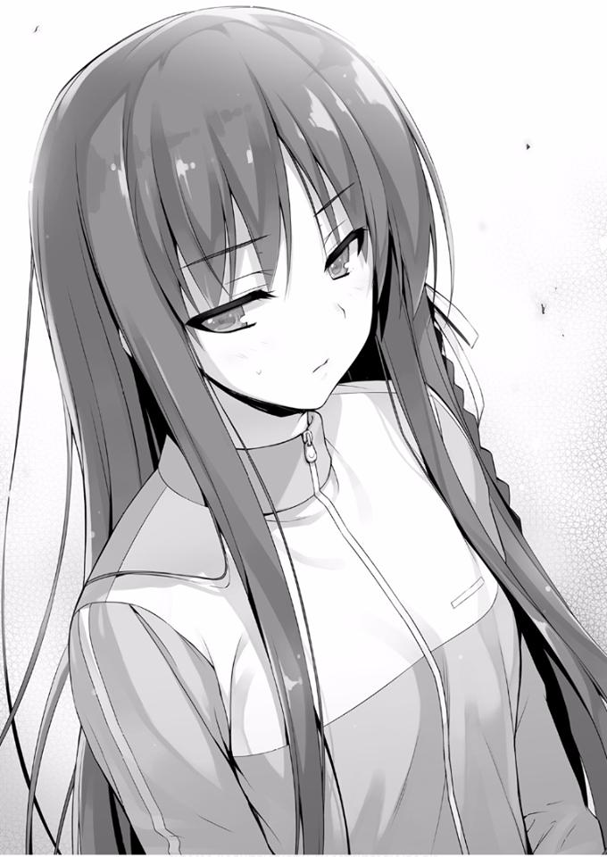
PARTE 4
Sentí un extraño calor y rigidez en mi mejilla.
Me dio un mal presentimiento este calor, intenté alejarme estirando un poco mi cuello. Sin embargo, no pude moverme. Sentí un brazo que estaba sujeto firmemente alrededor de mi cuello.
— Q... ¿Qué?...
Me desperté con una sensación de incomodidad. Inmediatamente me di cuenta de que estaba en una situación aterradora. Sudou estaba durmiendo sobre mi cara, con ambas piernas alrededor de mis muslos.
— Suzune... yo... no puedo soportarlo más...
— Arghhh.
Grité, sorprendiéndome incluso a mí y escapé del agarre de Sudou.
— Cállate... ¿Qué pasa Ayanokouji?... No me despiertes... Hmph.
Este tipo me estaba haciendo algo aterrador.
Incluso si me confundió con alguien más. Aun así, esto no es algo que pueda revelar a una multitud de chicos en medio de la noche.
La hora marcada en el reloj era antes de las 6 de la mañana, pero tan pronto como sentí el aire caliente y húmedo, mi somnolencia desapareció en un instante.
Salí de la tienda para evitar esa atmósfera húmeda. En ese momento, me di cuenta de que el paisaje era completamente diferente al de ayer.
— ... Es solo mi suerte, ¿no es así?
Parece que temprano en la mañana el telón del sexto día de la prueba se abrió con problemas.
Hay indicios de que comenzará a llover pronto. Probablemente alrededor del mediodía.
El clima era malo hacia el final del examen.
No hay necesidad de preocuparse si llueve un poco, pero puede que llueva mucho y haya vientos fuertes.
Entonces, debemos actuar pensando en el peor de los casos.
Tendremos mucho que hacer. Como revisar las estacas de la tienda y pensar qué hacer con el equipaje.
En otras palabras, eso significa que vamos a estar ocupados y eso causará atención innecesaria.
Eventualmente, cuando todos se levanten, mezclaremos los alimentos que recolectamos con los de emergencia que tenemos en la tienda, utilizando nuestros puntos y los prepararemos en una olla para que comamos.
En nuestra vida cotidiana aquí, naturalmente hay quejas por todas partes que van aumentando, pero en los últimos días, todos mostraron su voluntad de sobrevivir a esta prueba.
— Excelente. No hemos tenido incidentes durante días.
Seguramente este no habría sido el caso si hoy hubiera habido algún incidente donde robaran ropa interior.
Ahora, frente a la tienda de los chicos, los que estaban vigilando hasta la mañana estaban desmayados como si estuvieran borrachos.
Esto fue diseñado para prevenir que volviera a ocurrir algún robo.
Hirata ya estaba reuniendo a muchos estudiantes y dándoles una ronda final de ánimo.
Vamos dividirnos en grupos y comenzar a buscar alimentos para sobrevivir hoy.
Una vez que tengamos la comida del día no tendremos que usar puntos.
Se puede decir que este es un momento crítico.
Nosotros también nos reunimos alrededor de Hirata.
— ¿No deberíamos ir también contigo?
Ya de pie en la orilla del río con la caña de pescar en una mano, Ike volteó para preguntar.
— No. Ike y Sudou, quiero que vayan a pescar. A partir de ahora, intenten enseñarles a pescar a los otros estudiantes. No tenemos tiempo.
Tan pronto como se decide el curso de acción, Hirata va y reúne al grupo, ya que muchos han levantado la mano.
Por supuesto, no la levanté mi mano, esta vez participaré como apoyo.
Los miembros elegidos son Horikita, Sakura, Yamauchi y, sorprendentemente, Kushida.
La condición física de Horikita todavía parece estar mal, pero está luchando por ocultarlo, ya que su situación no debe ser notada por las personas que la rodean.
— ¿Cómo sucedió esto y cómo te quedaste atrás? ¿Dónde está tu grupo habitual de amigas?
Ahora que lo pienso, no puedo ver a ninguna de las chicas que trabajaban con Kushida en este examen.
— Ah, sí. Bueno…
Susurró Kushida en el oído de Horikita, como si estuviera preocupada por la presencia de los chicos.
— La verdad es, Mi-chan, hoy es uno de esos días, ¿verdad? ... Te ves bastante lenta y te ves enferma todo el tiempo. Entonces, mis otras amigas pueden atenderte en la tienda.
De pie cerca de Horikita y Kushida, escuché su conversación.
— Estoy a salvo de los efectos del fenómeno menstrual, incluso si dices que estoy en una pobre condición física. Es natural. Pero, ¿por qué molestarse con este grupo? Estoy segura de que hay muchas otras opciones.
La única razón por la cual Horikita hace esto es porque odia a Kushida.
Básicamente, Horikita odia a los humanos en general, pero entre ellos, Kushida es la que más le desagrada.
¿Por qué la odia tanto? La razón de esto parece ser simple, es porque Kushida también odia a Horikita.
Sin embargo, cada vez que pienso en la relación entre estas dos, creo que siempre ha habido una extraña sensación de incomodidad entre ellas.
Kushida Kikyou tiene un lado oculto, especialmente hacia las chicas. Esta parte de ella cambia repentinamente y puede abusar de una persona con bastante tranquilidad.
Este es un hecho que supe por casualidad, la habitual Kushida es una chica linda, brillante y cariñosa que es amable con todos.
No creo que haya estudiantes a los que no les guste excepto por motivos como los celos, pero creo que entiendo bien que Horikita no es el tipo de persona que estaría celosa del carácter de Kushida.
Hay algunas cosas que hacen sufrir incluso a los filósofos.
Como la pregunta “¿Qué fue primero, el huevo o la gallina?”.
Una gallina es una criatura que nació literalmente de un huevo, pero también una criatura que pone huevos. Entonces, ¿qué fue primero, el huevo o la gallina?
Ese tipo de historia.
Por lo tanto, no sé cuál de ellas fue la primera en desagradar a la otra, Horikita o Kushida, o cuándo comenzó.
— Pensé que sería bueno hablar contigo, Horikita, ya que han sucedido muchas cosas. Ya sabes, no hemos hablado mucho durante este viaje.
Tan pronto como oscurezca, vayamos a dormir juntas.
Kushida entiende que Horikita la odia e intenta hacer amistad con ella, aunque también la odie. Bueno, si su objetivo es ser amiga de todos sus compañeros de clase, ser amiga de Horikita es algo que no se puede evitar.
Hay muchas preguntas complicadas y confusas sobre la relación entre estas dos.
— No tengo tiempo libre para acompañarte en cosas innecesarias.
— Eres tan mala Horikita. Aunque tu cara durmiendo es tan linda.
Horikita parecía un poco molesta, ya que Kushida dijo eso para burlarse de ella.
Por el momento, parece que voy a buscar comida con estos miembros.
— Oye, Ibuki, ¿por qué no vienes con nosotros también?
Justo cuando estábamos listos para salir, llame a Ibuki que descansaba bajo la sombra de un árbol.
— Yo…
— Hoy es el último día del examen. No quiero presionarte si no quieres.
— Tienes razón. Tengo una deuda de gratitud con la clase D, ayudaré... Ok, participaré.
Ibuki, se colocó la mochila en el hombro con intención participar, Yamauchi estaba complacido.
— Ah, está bien, ¡está bien! Aunque esto parece un harem.
Cuanto más aumentaba el porcentaje de las chicas, más aumentaba la tensión de Yamauchi. Pero no había nada mejor que tener muchas personas ayudando.
Sin ninguna razón para negarse, Horikita entró en el bosque sin responder nada en particular.
— El bosque oscuro es realmente siniestro... o más bien debería decir que tienes miedo del calor y el hecho de que está húmedo.
El cielo estaba bastante nublado, y el interior del bosque cambió considerablemente en comparación al día de ayer. La visibilidad era escasa.
Yamauchi, quien sudaba por sus axilas, comenzó a abanicarse con poco espíritu.
— ¿No tienes calor, Sakura?
Yamauchi, que quería hablar de algo, le habló a Sakura. Pero, sus ojos estaban completamente concentrados en sus pechos, y era fácil entender que su único objetivo era que pudiera verlos directamente.
— ¿Eh? Ah, Ahhh, no. Estoy bien.
Repentinamente, Sakura trató de inclinarse hacia atrás como si quisiera escapar de su mirada. Se dice que las chicas son realmente sensibles a la mirada de los hombres porque siempre hay un motivo oculto para ello. En el caso de Sakura, esto es particularmente notable, ya que tenía muchas experiencias como esta.
— Ayer Karuizawa fue realmente detestable. Eres tan amable, Sakura, por eso Ayanokoji decidió protegerte.
— Ah, sí…………
Tenía toda la intención de hablar cortésmente, pero su mirada y la esencia de la misma eran una bomba explosiva.
— Yamauchi. También deberías poner atención a los árboles. Es posible que tengan frutos. Además, en esta área los árboles son altos, así que también ten cuidado.
— Oh, ohh. Por supuesto.
Al hacer esto, de alguna manera podré evitar que la mirada de Yamauchi se centre en Sakura. Sin embargo, la ilimitada lujuria de un hombre nunca terminará.
— Nubes de lluvia se están acercando desde el sudoeste. Puede comenzar a llover antes de lo que imaginamos.
Dependiendo de las circunstancias, sería mejor tener en cuenta que que la lluvia caiga a primera hora de la tarde. Si esto sucede, puede ser peligroso salir a buscar comida durante mucho tiempo. Si terminamos atrapados bajo la lluvia en el bosque, lejos de vernos obligados a detenernos, existe la posibilidad de que alguien se lastime. En ese caso, se desperdiciarán una gran cantidad de puntos.
— Mmm...
Mientras seguíamos caminando tranquilamente en busca de comida, Kushida asumió una expresión meditabunda y reflexiva mientras miraba alternativamente entre Horikita y yo. Por supuesto, Horikita estaba ignorando todo.
— ¿Qué pasa Kushida-chan?
Yamauchi le preguntó, cuando notó que se retrasaba.
— Desde el principio Ayanokoji-kun y Horikita-san han estado en buenos términos, ¿verdad? Entonces, estaba pensando en la razón.
— Así parece. ¿Por qué son tan cercanos?
Kushida abordó un tema difícil.
— Sin embargo, realmente no nos llevamos bien.
— Siempre lo niegan, pero se llevan bien. Incluso ahora, siempre están caminando uno al lado del otro.
Aunque digan algo así, realmente no me he dado cuenta de ello ni recuerdo haberlo hecho.
— Ah. Pude haber encontrado algo que Ayanokoji-kun y Horikita-san tienen en común.
— ¿Qué tienen en común?
— Bueno, míralos bien Yamauchi-kun. ¿Notas algo?
— ¿Qué?
Yamauchi se acercó y observó mi rostro centímetro a centímetro. Luego, corrió hacia Horikita y le dio una mirada más cercana a su rostro. Ah, tan estúpido. Se acercó demasiado.
*Bofetada*
Y ella le golpeó la cara de la manera más contundente. Acaba de explotar una espléndida bofetada en la cara como la de una actriz avergonzada de un drama.
Yamauchi comenzó a saltar arriba y abajo bailando extrañamente, primero sin sonido por el vigor y el dolor de la bofetada, luego gritando y cayendo. Lo terrible es que Horikita ni siquiera miraba a Yamauchi ni le importaban sus palabras.
— ¿Qué, qué hiciste?
— Estabas demasiado cerca. Mejor recuerda alejarte de mi espacio personal.
Fue algo similar a lo que sucedió cuando Ike tocó a Horikita. Creo que todas se sentirían incómodas cuando están cara a cara a una distancia muy corta con un chico que no les gusta.
— Ahahah... disculpa Yamauchi-kun. Dije algunas cosas innecesarias. ¿Estás bien?
— Tú, eres tan amable Kushida...
Yamauchi tomó la mano que Kushida le tendió, y se puso de pie con la cara roja.
Ibuki siguió mirando todo esto con una leve cara de sorpresa. Probablemente no vea a menudo este tipo de intercambio estúpido en la clase C.
— ¿Qué? ¿Cuál es la característica en común que notaste, Kushida?
— ¿Sabes? ¡Ambos se ríen muy poco! Quiero decir, creo que nunca he visto a Ayanokoji-kun o Horikita-san sonriendo.
Kushida señaló esto inesperadamente, ella estaba convencida de que lo aceptaría sin rechistar. En cuanto a Horikita. La vi sonreír varias veces pero como si quisiera engañar a su interlocutor, pero eso no era más que una sonrisa de cortesía.
— Nunca he visto la cara sonriente de Horikita. Pero yo sonrío, ¿verdad?
— He visto tu sonrisa ácida pero... nunca te he visto sonreír desde el fondo de tu corazón o reír estruendosamente. ¿O simplemente no me lo has mostrado?
La miré un poco disgustado. Sí, esta vez mi corazón también latía rápido. Mi pulso se aceleró / aumentó repentinamente.
Mientras todavía estamos en esta isla desierta, un encantador aroma me hizo cosquillas en la nariz. Me avergoncé y desvié la mirada.
— Parece que todo es genético. La diferencia entre una persona que se ríe a menudo y una que no.
— Uhm... no me gusta este tipo de razón. Aunque sea verdad.
Bueno, eso no es todo. También existe la posibilidad de que el entorno en el que uno se crió haya influido en este tipo de cosas.
— ¿Deberíamos intentar practicar una vez? ¿Qué hay sobre eso? Sonreír.
— Por el momento, comencemos con el centro de esta área —dijo Horikita.
— ¿Eh? ¿La práctica para reír?
— ¿Cuánto tiempo te apetece caminar? Ya decidimos que necesitamos encontrar comida.
Horikita puso a Kushida en su lugar con un tono fuerte y una negativa rotunda. E
inmediatamente giró instrucciones para desplegar a las personas para la búsqueda de comida.
— Busquemos en parejas, no vayan solos. Tengan cuidado con eso.
Vámonos Ayanokouji-kun.
Al ser llamado, comencé a caminar con Horikita.
— A-... Au...
¿Huh? Vi a Sakura que nos estaba siguiendo desde atrás, dejando caer sus hombros.
— Vamos a buscar comida juntos Sakura.
Yamauchi, quien llamó a Sakura desde atrás, me mostró los pulgares arriba.
Parecía que ese era una señal para aprovechar la oportunidad de que solo dos de nosotros teníamos que estar juntos.
— Cuídate, Ibuki-san.
Ibuki y Kushida hicieron pareja. Ibuki también es antisocial, pero no debería haber ningún problema con Kushida.
— Horikita, ¿cómo manejarás la tarjeta?
— La verificaré en el sexto día de la prueba, cierto... siempre la tengo conmigo.
Al decir esto, ella puso sus manos en el bolsillo de su chaqueta y me dejó saber que estaba allí.
— Cuando mejore el dispositivo, la pasaré entre los estudiantes designados por Hirata-kun. Se supone que Ibuki y los demás no deben saberlo.
Bueno, no me preocupaban demasiado las circunstancias. Como era a lo que tenía que prestarle más atención, lo haría bien.
— ¿Podrías enseñármela?
— ¿Huh? ¿Aquí?
— Es bastante conveniente aquí. Es muy sospechoso en el campamento base.
— ... Eso es cierto, pero ¿qué harás cuando veas la tarjeta?
Le expliqué la situación a Horikita que me estaba mirando llena de sospecha.
— Para ser honesto, estuve callado hasta ahora. Ya que estuve con Sakura, ella puede confirmarlo más tarde, pero el primer día vi que los estudiantes tenían un tipo de tarjeta.
Le dije a Horikita sobre Katsuragi con la tarjeta en frente de la cueva.
— Sin embargo, no estoy seguro si esa era realmente la tarjeta de acceso.
No la he visto bien. No bromearía sobre la tarjeta, ¿verdad?
— … Cierto. Si estás absolutamente seguro, entonces es un gran logro.
Convencida por esa razón, Horikita volteó para vigilar a Ibuki y secretamente sacó la tarjeta. La recibí y revisé su anverso y reverso. El dorso era una tarjeta magnética usual, pero como Chabashira dijo que el lado frontal tenía la prueba del líder. El nombre de Horikita Suzune estaba grabado en ella. Incluso cuando traté de tocarlo con las manos, entendí que no era algo que se pudiera despegar.
— ¿Bien? ¿Es la misma tarjeta que Katsuragi-kun tenía?
— No... Hmm. Pensé que lo sabría al verla... Pero es de un color diferente al que recuerdo.
— Existe la posibilidad de que la tarjeta sea de diferente color según la clase.
— En efecto. Pero hay una escasez de información para decidir. Si cometemos un error, no podremos recuperarnos.
Cuando traté de devolver la tarjeta, la dejé caer de mi mano al suelo.
— ¡Oh!
Al mismo tiempo que dejé salir una voz asustada, Horikita inmediatamente extendió su mano para levantarla. Puso la tarjeta en su chaqueta, pero debido al alboroto atrajimos la atención.
— ¿Qué pasó?
Kushida miró hacia acá un poco preocupada. Ibuki también.
— No, es nada. Hubo un error y me sorprendí. Yuck.
Cuando miré a Horikita disculpándome, ella me miró aterradoramente.
— L-lo siento...
Horikita estaba extremadamente furiosa y se alejó de mí.
— ¿Te dejó?
Yamauchi se acercó sonriendo.
— Mira, Yamauchi. Tengo que pedirte consejo, ¿me escucharías?
— ¿Qué pasa?, es costoso el precio por una consulta amorosa.
— El terreno en los alrededores está lleno de barro debido a la lluvia, ¿verdad?
Quiero que pongas este barro sobre el cabello de Horikita. ¿Puedo pedirte eso?
— ... ¿Huh? ¡Si lo hago, me matará! ¡Definitivamente no lo haré!
Por supuesto, entendía que no conseguiría su aprobación. Sin embargo, este es un acto demasiado antinatural para mí. Ya que Yamauchi normalmente es bueno para decir mentiras y hacer bromas, pensé que podía hacer este truco.
— Sabes, incluso si Horikita se enoja conmigo, no es bueno vengarse.
— Si lo haces, tal vez tengas la oportunidad de obtener la dirección de correo electrónico de Sakura.
— ¿Qué...?
— ¿Qué te parece?
— Huh, la dirección de correo de Sakura... Hm. Yo… lo haré.
Un chico que vive por amor rápidamente decide morir por ello. Esta decisión es sorprendente.
— ¿Estás absolutamente seguro? Si mientes, no lo haré.
Cuando le di una señal, Yamauchi recogió un montón de lodo con ambas manos y se movió a la espalda de Horikita. Si no hubiera estado enferma, podría
haberlo notado, pero Horikita no podía permitirse prestar atención a su entorno ahora. Kushida e Ibuki, notando el comportamiento extraño de Yamauchi, miraban con curiosidad. Y luego, Yamauchi lo hizo. Con toda su fuerza y utilizando ambas manos, cubrió el hermoso cabello negro de Horikita con barro.
La embadurnó por todas partes. No tenía que exagerar, pero bueno...
— ¡Ahaha! Horikita, ¡estás llena de barro! ¡Qué gracioso!
Como un mocoso, Yamauchi se rió a todo pulmón señalándola con el dedo.
Como si no pudiera comprender la situación, Horikita no se movió por un momento. Sin embargo, cuando lo entendió, se levantó y sin decir palabra agarró la mano de Yamauchi que la señalaba.
En un momento de confusión, Horikita arrojó a Yamauchi.
PARTE 5
Regresamos al campamento base antes del mediodía sin ningún resultado.
Incluso sin sol, estaba increíblemente cálido en el bosque durante el verano.
Incluso Horikita, que dijo que no sudaba, estaba ligeramente empapada.
— Será mejor que te laves rápido, Horikita-san. Tienes bastante lodo...
— Así es... esta situación es realmente dolorosa.
Con su pelo y ropa cubiertos de barro, Horikita estaba molesta y enojada. No hizo excepción incluso con su mala condición física.
— Estoy molesta para toda la vida. Prepárate.
Tartamudeando, Yamauchi se escondió detrás de mi espalda, temblando de miedo.
— Lo-lo-lo-lo-lo hice. Tu promesa, ¡cumple tu promesa!
— Está bien. Te lo diré después de la prueba.
Puede ser malo para Sakura, pero Yamauchi necesitaba una compensación por su acto heroico.
— Oh no, parece que es imposible usar la ducha...
Las chicas que ya habían regresado de la búsqueda, se reunieron frente a la ducha esperando su turno. Irónicamente, Karuizawa y otras dos chicas de su grupo estaban haciendo fila. Incluso si Horikita y las demás hicieran cola ahora, sería una larga espera. Pero debido a que estaba sucia, ella no estaba pensando en rendirse frente Karuizawa quien mostraba hostilidad hacia Horikita.
Parecía difícil entrometerse aquí.
— ¿Qué tal usar el río? Es fácil, ¿verdad?
— …Cierto. Parece que no hay otra opción.
— También podría ir a nadar. ¿Vienes con nosotras, Ibuki-san? Sudo mucho.
Si obtenemos aprobación, ¿la clase C puede usar el río?
Usar el sitio sin permiso era la regla indiscutible.
— Tendré que rechazar. Esperaré silenciosamente la ducha ya que no me gusta nadar.
— Bueno, yo también…
Tomando ventaja, Sakura se negó también para no exponer su traje de baño a la vista de los chicos. Horikita le dio la espalda luego de ver la ducha una vez más. La ducha con agua caliente era lo mejor, pero independientemente del cielo nublado, estaba bastante húmedo. No tenía confianza para seguir esperando dado su mal estado.
Me dirigí hacia el frente de la tienda junto con el sollozante Yamauchi.
— Descansaré en la tienda por un tiempo. Duele donde me golpearon...
Parece que Yamauchi llora al entrar en la tienda mientras camina inseguro.
Aunque era la persona adecuada, realmente hizo un gran favor...
Bueno, volvamos con Horikita. Desapareció de nuestra vista y comenzó a ponerse su traje de baño. Durante ese tiempo, el número de personas que esperaban la ducha aumentó gradualmente. Detrás de Karuizawa y las demás estaban Sakura e Ibuki. Otras dos chicas se alinearon en la parte de atrás.
Por otro lado, la cantidad de estudiantes que disfrutaban de su tiempo nadando en el río también era grande. Unos minutos más tarde Horikita y Kushida aparecieron en trajes de baño.
Fui al depósito de equipaje donde las maletas de los chicos estaban colocadas.
Luego caminé dentro del campamento de un lugar a otro buscando un lugar menos concurrido. Cuando volví unos 5 minutos después, vi a Horikita que se estaba lavando de pie en el río. El agua fría del río debe haber sido veneno para el cuerpo enfermo de Horikita, pero estaba satisfecha con lavar el barro.
— Uh-oh, parece que trabajaste duro.
Al ver a Ibuki al final de la fila para la ducha, asentí levemente.
PARTE 6
Estuve esperando 15 minutos frente a la tienda de los chicos a que Horikita saliera. Se quedó de pie inmóvil durante un rato, bajando los ojos para comprobar su estado. Luego, lentamente levantó la cabeza mirando a su alrededor. Cuando sus ojos se encontraron con los míos, sus pupilas temblaron por un momento. Su silueta acercándose a mí con pasos pesados no parecía ser frágil.
— ... Ayanokouji-kun. Podrías venir un momento...
Volteé una vez más para ver si Ibuki estaba frente a la ducha.
— ¿Qué sucede? ¿Pasó algo?
— Sígueme... No podemos hablar aquí.
Con solo pronunciar eso, Horikita dejó el campamento y se dirigió hacia el bosque.
— ¿Qué pasó? ¿Vamos a entrar al bosque a buscar comida otra vez?
Horikita siguió caminando sin responder mis preguntas. Se detuvo una vez que ya no podíamos ver el campamento. Horikita se volteó queriendo decir algo, pero vaciló un momento como si tuviera dudas.
— ... Fue mi negligencia. Quería decirte después de darme cuenta de que fue un error. ¿Eso está bien?
— ¿Un error?
— ... Se la robaron.
— N-No estás diciendo que te robaron la ropa interior, ¿verdad?
— No. Peor aún. Lo que robaron es... tarjeta. Fue un completo error.
Auto despreciándose, Horikita mostró una expresión facial que no había visto hasta ahora.
— Quería hablar contigo ya que confío en ti. No pude consultar con alguien que pudiera ser culpable. Es tan embarazoso que quiero morir...
Me sentí honrado de escuchar eso, pero no podía regocijarme frente a ella cuando se sentía mal.
— Un gran error...
— No, el que la robó es el culpable. ¿Bien?
— Aun así, es una cuestión de responsabilidad. No tiene nada que ver con que yo esté en malas condiciones físicas o cubierta de barro —dijo Horikita con pesar, bajando los ojos. La filtración de información podría ocasionar un gran daño en la prueba.
— No debería haber soltado la tarjeta ni por un segundo. Pero en cambio, yo...
— No te culpes. Tal vez no te consuele, pero creo que hiciste lo mejor que pudiste.
No sabía si ella me había escuchado. Todo lo que hizo fue morderse el labio inferior con arrepentimiento.
— No debemos anunciar esto públicamente por ahora. Comprendamos la situación primero.
— Yo también pienso lo mismo.
Todos entrarían en pánico si supieran la verdad. Quería evitar eso al menos.
— Sospecho que hay dos personas. Karuizawa e Ibuki.
La primera lo hubiera hecho por simple odio. Horikita rápidamente explicó que podría haberla robado por diversión.
— Las posibilidades son bajas. Karuizawa estuvo todo el tiempo frente a la ducha.
— ¿Estás seguro…?
— Sí, lo puedo afirmar. Lo mismo sobre las dos chicas que reciben órdenes de ella.
— Si eso es cierto, las posibilidades de que Ibuki sea el culpable son altas.
Supo sobre la existencia de la tarjeta en la mañana y el momento era demasiado bueno. Sin embargo, ¿no crees que robar es una apuesta muy peligrosa? Como el nombre del líder está grabado en la tarjeta, se supone que basta con mirarlo. Tal vez está simulando el crimen a propósito.
Buscando mi respuesta, me miró con suspicacia. Puse mi mano en el hombro de Horikita y dije con calma:
— Podríamos entender eso si examinamos el momento e indagamos a Ibuki.
Si vamos a dudar de Ibuki, entonces no deberíamos dejar de vigilarla. Si escapa sería el peor escenario.
— Está bien. Pero discúlpame, me pregunto si podrías regresar antes que yo para seguirla de inmediato.
— … ¿Es así? Entiendo. Volveré y buscaré a Ibuki.
Probablemente tenía ganas de estar sola para vomitar. Dejé Horikita y regresé al campamento base.
PARTE 7 (AYANOKOUJI)
Después de unos 10 minutos, Horikita regresó y sintió el aire incómodo del campamento. Era por el humo que se podía ver desde la parte posterior del inodoro temporal.
Era demasiado temprano para hacer fuego. También notó que el lugar de donde venía era muy extraño.
— ¿Qué es ese humo? ¿Qué demonios pasó?
Cuando me uní a Horikita, capté la tensión de Ike y le pregunté sobre la situación.
— Esto es serio. ¡Es fuego! ¡Fuego! ¡Algo arde detrás del baño!
Todas las chicas que estaban en fila frente a la ducha se habían ido. Tan pronto como escucharon que se produjo un incendio, deben haberse escapado apresuradamente.
— No puedo ver a Ibuki. El fuego pudo haber sido su obra. ¿Dónde está?
— Tan pronto como notó el fuego, simplemente caminó hacia allí.
Me apresuré a la parte de atrás del baño temporal, ahí estaban Hirata y los demás.
Ibuki también estaba allí.
Horikita estaba lista para llamar a Ibuki, sin embargo, en el momento en que vio su perfil, dudó. Porque la expresión de Ibuki era muy genuina. No podía ocultar su confusión sobre el fuego. Esa es la cara que estaba haciendo.
— ¿Eso quiere decir... que ella no hizo esto?
Esas dudas atacaron a Horikita, causándole confusión.
Si fue para robar la tarjeta, tenía que ser Ibuki. Si hay un incendio, solo Ibuki pudo causarlo. Sin embargo, Ibuki estaba en el lugar y actuaba sorprendida por el fuego.
Cuando miré el origen del incendio, quedaba algo después de que se quemara el lado izquierdo de los papeles. Pero como la mayor parte se había convertido en cenizas, no podía decir exactamente qué era, ya que lo vi solo por un momento.
Sin embargo, algunas partes no se habían quemado completamente y parecían familiares, así que en el momento en que las vi, me di cuenta.
— ¿Se quemó el manual?
Horikita también notó lo mismo, por lo que planteó la pregunta.
— Sip. Así parece. ¿Quién haría esto?...
— ... Es una tras otra...
Horikita tosió levemente y miró hacia abajo con pesar.
— Soy responsable de esto. El manual estaba en mi maleta. Las mantuvimos todas amontonadas frente a la tienda y no esperé que alguien robara durante el día. Pero primero tengo que digerir correctamente lo que sucedió.
En lugar de buscar al culpable, Hirata se dirigió hacia el río ya que prefirió extinguir primero el fuego.
Mientras tomaba agua en una botella de plástico vacía, Hirata tosió con una expresión sombría en su rostro.
— ¿Por qué?... ¿quién alguien haría algo como esto?... por qué no podemos llevarnos bien...
Espontáneamente y con todas sus fuerzas, aplastó la botella de plástico con sus manos.
¿A dónde se fue su habitual expresión refrescante? Había una terrible atmósfera flotando en el aire.
El cuerpo y la mente de Hirata, mientras trabajaba constantemente como líder para consolidar nuestra clase, continuaban soportando una pesada carga.
— No creo que tengas que poner toda la carga sobre ti.
Dije palabras que no podían considerarse reconfortantes a Hirata, sin embargo, se puso de pie y ahogó un agradecimiento.
— Este incidente... Tenemos que debatirlo adecuadamente.
— Está bien. La mayor parte de la clase D ha sido testigo del incendio. Estoy seguro de que les gustaría saber la verdad.
Con una expresión deprimida, Hirata regresó al lugar del incendio, sosteniendo el agua en sus manos.
— Oye, ¿quién hizo esto? ¿Eso significa que hay un traidor en nuestra clase?
Cuando volvimos, encontramos a Karuizawa a la cabeza de un enfrentamiento entre chicos y chicas.
— ¿Por qué sospechas de nosotros? ¿No es esto una cuestión completamente diferente de la de la ropa interior?
— ¿Crees que no lo entendemos? ¿lo quemaste para que podernos engañar?
— No digas tonterías, como si pudiéramos hacer algo como esto.
— ¡Esperen un momento, chicos! Vamos a calmarnos y discutámoslo en conjunto.
Recibí una solicitud de Hirata de pasar el agua. En lugar de él, se me encomendó la misión de extinguir los restos del fuego. Inmediatamente, Hirata se dirigió al centro del círculo e intervino para mediar y convencerlos de no pelear.
Tal vez sea debido al robo de ropa interior de ayer, pero ambas partes ahora se han alterado y no muestran signos de calmarse. Parece que los miembros de la clase D no pueden evitar iniciar una búsqueda del culpable aquí.
— Por el momento, no hay temor de que las llamas se extiendan.
Sacudí la botella de plástico vacía unas pocas veces. No debe quedar nada en el interior, una por una gotas de agua se rociaron en el fuego.
Miré hacia el cielo.
— Lluvia…
Gotas de agua caían sobre mis mejillas. Las nubes se volvieron más oscuras que antes. Esta era una prueba de que llovería pronto.
Originalmente, todos acordamos unirnos y superar el último escollo.
Pero ahora, los chicos y chicas se oponen implacablemente unos a otros, y permanecen indiferentes, como si estuvieran teniendo una guerra real entre ellos.
— No puedo hacer esto, nunca más. En serio, esto es lo peor. Tener pirómanos y ladrones de ropa interior en esta clase, esto es lo peor de lo peor.
— ¡Es por eso que te hemos estado diciendo que no fuimos nosotros!
¿Cuánto tiempo vas a seguir sospechando de nosotros?
Una pelea que puede continuar para siempre.
Se supone que Hirata debe parar esto pronto como de costumbre, pero él está parado inmóvil, mirando estupefacto. ¿Está pensando en quién podría ser el culpable?
— Kanji, no puedo ver a Ibuki...
Yamauchi notó que Ibuki, que estaba cerca hace algún tiempo, ya no está allí. Y
noté que la maleta que debería estar aquí también se haa ido.
— Quizás, la culpable de este incendio...
— También tienes dudas, ya veo. Si ella comenzó el fuego, bueno, como se esperaba...
Las sospechas de los hombres comenzaron a centrarse en Ikuki, y las chicas también empezaron a dudar poco a poco. Sin embargo, antes de la conclusión, la lluvia comenzó a caer más y más fuerte.
— Mierda. Pospongamos la discusión por el momento. Sería terrible si nos empapamos.
Ike y otros, a toda prisa comenzaron a poner en la carpa los alimentos y paquetes que estaban afuera.
— Hirata, danos instrucciones.
Ike llamó a Hirata pero aún permanecía inmóvil en el mismo lugar. Hirata estaba mirando el espacio vacío y no se movió todo el tiempo. Mientras tanto, el sonido de la lluvia cayendo se hizo más fuerte. Estaba ansioso por esta situación, así que me acerqué a Hirata pero no obtuve ningún signo de reconocimiento.
— ¿Por qué...?... ¿Por qué está pasando esto...? Es lo mismo que en ese momento...
Tosió ligeramente. No pude entender el significado, pero es cierto que no es un asunto trivial.
Esto no es típico de Hirata en absoluto. Hirata, que siempre está tranquilo y sereno.
— Por mi culpa, hasta ahora...
— Oye, Hirata, ¡¿qué estás haciendo?!
Una voz llamó Hirata desde la distancia. Sin embargo, Hirata no hizo ningún movimiento, ya sea que lo haya escuchado o no. Suavemente puse mi mano sobre su hombro y lentamente se dio vuelta y me miró, sorprendido y asombrado.
— Ike te está llamando.
— .......... eh.
La expresión de Hirata perdió vida por completo, se estaba poniendo pálido. La segunda vez que Ike llamó a Hirata, lentamente recuperó su cordura. Entonces, en ese momento, finalmente notó que estaba lloviendo.
— Lluvia……..
— Sería mejor que ayudes a Ike y los demás. Tenemos que mantener la ropa seca.
— Bueno, tengo que resolver todo rápidamente.
— Ayanokoji. ¿Este tipo Hirata, está bien?
— Como se esperaba, parece un shock. Probablemente porque muchos accidentes sucedieron uno tras otro.
— En la secundaria, había un joven maestro y un estudiante de honor, y supongo que tenía muchas grandes responsabilidades. Debido al hecho de que tomó demasiadas de ellas, terminó explotando. A partir de ahí, y durante un corto tiempo su clase se convirtió en un desastre.
— ¿Sientes que hay esta señal en Hirata?
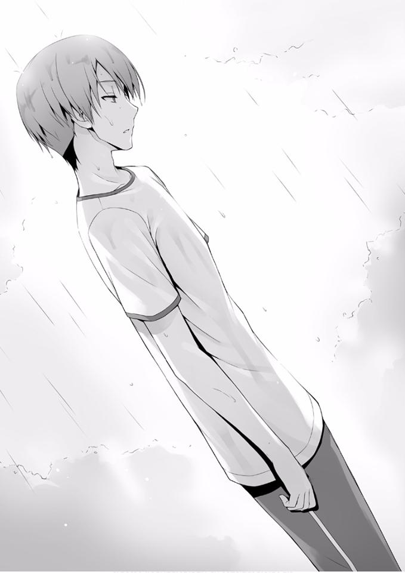
— Bueno, todavía sería una exageración decir que explotará. En algunos aspectos, es demasiado peligroso.
Me pregunto si será como la salvaje intuición de Sudo. Pero inesperadamente parece que llegó a la cuestión en sí. Desde el comienzo de este examen especial, Hirata ha sufrido muchas cosas. Sería extraño comparar estas dificultades con los problemas comunes de la vida escolar. Por supuesto, el ambiente en torno a Hirata está empezando a cambiar.
La cuestión de la ropa interior de Karuizawa, el barro y el alboroto del fuego. Su corazón está tormentoso como este cielo.
— Bueno, por ahora, hagamos algo para encargarnos del equipaje.
Nos unimos para ayudar a los estudiantes que ya comenzaban a ponerlo en orden. Afortunadamente, todo se completó en aproximadamente 1 minuto.
— Ok... Todas las preparaciones han terminado.
Supuse que Ibuki iba a desaparecer, pero al mismo tiempo Horikita también lo hizo. Predije esto como una posibilidad del cincuenta por ciento, pero más bien, ella procedió voluntariamente hacia una dirección favorable. Tan pronto como me concentré en el camino que conduce a la playa, lentamente avancé hacia él.
PARTE 7 (HORIKITA)
En medio de la lluvia que comenzó a caer fuertemente, obligué a mi pesado cuerpo a perseguir a Ibuki. El cielo, cubierto de nubes, bloqueaba el sol y la visibilidad era pobre. Aunque no podía ver a Ibuki, afortunadamente había huellas en el suelo fangoso. Estoy segura de que si las sigo, me llevarán a ella.
Caminó a unos 100 metros del campamento base, yendo a veces a la izquierda y a veces a la derecha del camino. Luego, inesperadamente se detuvo, como si esperara a que alguien que la viniera a encontrar. Inadvertidamente, me escondí, aunque esta acción no tenía ningún significado.
— ¿Qué crees que estás haciendo?
Sin siquiera mirar atrás, escuché la voz tranquila de Ibuki a través del sonido de la lluvia que caía.
— Soy consciente de que me has estado siguiendo. ¿Por qué no sales ya?
— ¿Desde cuándo lo notaste?
— Desde el principio.
Su respuesta breve, me dio una sensación ominosa que no había sentido antes.
Su impresión tranquila y reticente no parece cambiar. Pero, algo es diferente.
— Entonces, ¿cuál es la razón del por qué me has estado siguiendo?
— Me pregunto si no lo sabes a menos que te lo diga directamente.
— No lo sé.
Ahora ella me hacía ver como si yo fuera la villana.
— Comprendes muy bien por qué te están siguiendo, ¿verdad?
— Realmente no tengo ni idea. ¿Por qué? ¿Cuál es la razón?
Volteándose para enfrentarme, Ibuki me mira directamente a los ojos. No hay abatimiento en sus ojos. Casi tengo ganas de disculparme con ella. Tampoco tengo ninguna prueba definitiva. Estoy actuando basándome en mi intuición.
— ¿No crees que ya no sirve de nada mentir?
Sentí mi propia vacilación por un momento, pero presioné para obtener una respuesta.
— Al menos quiero saber de tu boca la razón por la que me has estado siguiendo.
— Desde el caso de una prenda de ropa interior robada, hasta el tumulto del incendio. La Clase D ha tenido una serie de desgracias.
— ¿Y qué?
— ¿Te das cuenta de que algunas personas sospechan de ti?
— ¡Ah! Como soy una extraña. No se puede evitar que sospechen.
— En otras palabras, eso es lo que quiero decir.
— Que soy culpable. Entonces, ¿dónde están las pruebas?
— Desafortunadamente, no hay evidencia en absoluto sobre el robo de ropa interior. Aun así, creo que fuiste tú.
— Esa es una historia bastante terrible. Sospechas de mí, aunque no hay pruebas.
Bueno, ella es muy buena en esto. Solo puedo elogiarla.
Ella no hizo su movimiento hasta el quinto día y no intentó acercarse a nadie de la clase D en absoluto. Esta postura, por el contrario, le permitió pasar tiempo con nosotros sin ser sospechosa.
— La razón por la que sospecho de ti es por las acciones de hoy. No necesitas una explicación, ¿verdad?
De alguna manera, quería sacar un testimonio de Ibuki. Tratando de hacerme explicar todas las razones por las cuales sospecho de ella. Es como admitir que soy la líder. Incluso si estoy un 99 por ciento seguro de que ella es culpable, si hay una posibilidad del uno por ciento de que sea inocente, entonces debería evitar seguir las cosas directamente.
— Vayamos directo al grano. Devuelve lo que me has robado.
Le dije eso a Ibuki que estaba parada frente a mí, pero sin mirarla a los ojos.
— Lo que sea…
Dando una respuesta corta, comenzó a caminar a un ritmo más rápido. La perseguí igualando su velocidad.
Ibuki cambió su rumbo dirigiéndose directamente al bosque.
— ¿A dónde vas?
— Veamos, ¿a dónde voy?
Era difícil caminar directamente al bosque. Me di cuenta de esto en los últimos días. Aún más con este clima que no nos da mucha visibilidad. Sin embargo, a Ibuki no pareció importarle y se adentró más en el bosque. Tampoco puedo retroceder. La he estado siguiendo para descubrir la verdad. Ahora que cometí un error, debo asumir la responsabilidad y resolver el problema.
Debo compensar mi error. Debo compensar mi error.
Las mismas palabras se repiten una y otra vez en mi cabeza.
La prueba acababa de comenzar. No puedo fallar aquí... Además, es mi error por ser tan agresiva con Karuizawa.
Mi ritmo cardíaco se volvió intenso. Poco a poco. Contuve la respiración y reduje la distancia con Ibuki. Depende de la situación, pero puede ser necesario considerar la recuperación de la tarjeta por la fuerza.
Está bien. Si soy yo, puedo hacerlo.
Puedo hacerlo, puedo hacerlo, puedo hacerlo...
Entiendo muy bien que no estoy tranquila. Pero aun así, tengo que hacer algo al respecto ahora. Hasta ahora, me ha ido bien y continuaré así sola. No hay nadie más a quien recurrir.
Estar en el bosque era algo mejor que estar al aire libre, en el camino donde la lluvia y el viento son feroces. Pero la visibilidad es aún peor, y el equilibrio es mucho peor de lo que esperaba. Y a medida que avanzo a derecha e izquierda por el camino, naturalmente, perdí mi sentido de la orientación.
Pero mi mayor problema es mi condición física. Me di cuenta desde hace un tiempo que a medida que pasa el tiempo se deteriora. Hasta ahora, tenía signos de un poco de fiebre, pero debido a esta lluvia, la temperatura de mi cuerpo bajó.
Mi límite colapsó y un resfriado me atacó repentinamente.
Cuando Ibuki se detuvo inesperadamente, levantó la mirada hacia un árbol. Un pedazo de pañuelo mojado con lluvia estaba atado delante de ella.
— ¿Hasta cuándo me perseguirás? ¿puedes detenerte?
— Hasta que devuelvas lo que me has robado.
— ¿Puedes calmarte y pensar un poco? Si hubiera robado la tarjeta, no es como si llevara una cosa tan peligrosa para siempre. Alguien que vea eso significa descalificación inmediata. No perderé puntos.
No me referí a una tarjeta ni siquiera una vez mientras le decía que devolviera lo que había robado. En otras palabras, Ibuki confesó en ese momento. Ella me
mostró sus dientes blancos mientras sonreía débilmente e intentaba seguir con este punto.
— ¿Pensaste que había confesado? Lo siento, pero eso está mal.
— Si eso es así, ¿cuál es el problema...?
— Estoy harta de hablar contigo.
Ibuki se agachó y empezó a cavar el suelo con ambas manos.
— Oh, ah...
Aturdida por un intenso mareo y náuseas, sin pensar me apoyé en un gran árbol a mi lado.
— Te ves muy enferma.
Ibuki giró su cabeza una vez que notó mi condición. Sin embargo, ella continuó con su operación.
— Ohh... Ohh... Hah...
Hasta ahora logré respirar normalmente, pero no puedo soportar más. Mi camiseta empapada con la lluvia torrencial arrebató la temperatura de mi cuerpo.
Luché contra la sensación de querer dar lo mejor que podía, pero no puedo levantar la cabeza bien... Cuando pensé en mi capacidad de recuperación, realmente comenzó allí.
— Ibuki-san. Comenzaré a investigarte usando la fuerza. ¿No te molesta?
Murmurando, Ibuki dejó de excavar, se levantó y se acercó.
— --- ¿Usando la Fuerza? ¿Serías más específica? ¿Usando la violencia?
— ... Esta es la última advertencia. Devuélvela sin quejarte.
Enfrenté a Ibuki con tono agudo. Quería evitar usar la fuerza, pero no había otra manera. No puedo mostrar este lado mío a nadie...
Hubo un problema con Sudou antes. Golpeó a los estudiantes de la clase C y el caso resultó en un juicio que involucró a la escuela. Esa vez, condené a Sudou que tuvo que lidiar con muchas dificultades. Lo abandoné en ese entonces para
darle un merecido castigo. Pensar que estoy a punto resolver las cosas con violencia es realmente gracioso.
— Última advertencia, eh... entiendo, entiendo. ¿Y qué si hago lo que quieres?
Dejó caer la bolsa en el suelo, levantó ligeramente sus manos y adoptó una pose de rendición. Llegó a donde estoy muy obedientemente. No puedo ver que haya renunciado, pero no puedo dejar pasar esta oportunidad.
Extendí mis manos, mirando la bolsa.
Al siguiente momento, la pequeña pierna de Ibuki se dirigió a mi cara. La precaución más pequeña me salvó. Salté hacia atrás evitando la patada. La ladrona saltó y adoptó una postura defensiva juntando ambas manos.
— Realmente lo harás.
— Un acto violento significa descalificación inmediata...
— ¿Estás diciendo que alguien podría vernos en este lugar? Estás dispuesta a hacerlo también.
Mientras contemplaba si sonreía sugestivamente, me agarró por los hombros y me empujó hacia abajo al momento siguiente. Sin siquiera lograr reaccionar a la defensiva ante estos eventos inesperados, me desplomé en el suelo fangoso.
— ¿Te gustaría descansar unos momentos?
Su cara mirándome desde arriba aparecía borrosa ante mis ojos, yo que estaba plagada de heridas. Ibuki apretó con fuerza el puño mientras agarraba mi cuello y levantaba la parte superior de mi cuerpo. Si lo recibiera directamente, rompería mi conciencia en pedazos. Me recompuse, rodé por el suelo y escapé. Me levanté del suelo enlodado con las manos, tratando desesperadamente de levantar la parte superior de mi cuerpo. Por primera vez, me alegré de haber practicado artes marciales.
— ¿Huh? Seguro puedes moverte. ¿Practicas algo?
Sin perder la cabeza, Ibuki me miró evaluándome como si estuviera impresionada. Al detectar rápidamente que tenía conocimiento en artes
marciales, se dio cuenta de que no era una persona normal. ¿Cómo debo responder sin decirle que mi condición es peor?
— Sin duda... no soy nada más un fracaso en esta prueba.
No contribuí en nada con la clase D. De hecho, con mi pobre condición física, retrasé a la clase D que estaba trabajando tan duro. Ojalá pudiera haber dicho esto el principio.
Como me sentía mal, podría haber pedido a otra persona que fuera líder. O
podría haberme negado. Pero mi orgullo interfirió, lo cual es imperdonable.
Me burlé de muchos y odié el hecho de que yo, que había maldecido a aquellos incompetentes, no fuera de ninguna utilidad. Ja, ja... reí secamente en mi mente.
¿Hasta ahora he hecho excusas así?
— Fuiste tú, ¿verdad...? Quién robó la tarjeta.
Ibuki, a quien estaba tratando de perseguir, se detuvo. Acortamos la distancia poco después. Ella fintó hacer un ataque con su brazo derecho, solo para hacer una patada alta y rápida con su pierna. Escapé de su ataque y estiré mi brazo tratando de distraer su contraataque. Ibuki evitó mi brazo dándose cuenta al instante del peligro. Luego cambió al siguiente ataque, forzándome a hacer una defensa descompuesta.
Mientras tenía un punto de apoyo, mantuve el centro de la gravedad bajo, sin preocuparme por dar la impresión de que tenía habilidades. Además, en ella, no veía ninguna duda en herir a otros.
Ibuki se rió mostrando sus blancos dientes, como si estuviera disfrutando de esta situación. Nunca pensé que la vería con una gran sonrisa. Debido a todo el movimiento, se agravó mi intenso resfriado y me dieron náuseas. Era solo cuestión de tiempo para que no me pudiera mover al final.
— Hiciste tu mejor esfuerzo hasta aquí, así que te daré una recompensa y te contaré la verdad. Yo fui quien robó la tarjeta.
Ibuki puso sus manos en su bolsillo y lentamente sacó la tarjeta. En la superficie que estaba frente a mí, mi nombre estaba grabado.
— Lo admitiste bastante rápido después de todo esto.
— Ha llegado a un punto en el que no importa si lo admito o no. No hay evidencia de que te haya lastimado. No es que la escuela pueda hacer una decisión correcta. ¿No es así?
La lectura de Ibuki era acertada. No había ningún factor que pudiera hacer que la escuela percibiera esta situación como realmente era.
Ibuki llegó a la misma conclusión. Incluso si solo yo recibí daño aquí, Ibuki podría encontrar cualquier excusa. Incluso si me quejo, los dos culpables de los crímenes no serán castigados. Era la clase D la que tenía muchos puntos que perder.
Pero, si logro recuperar la tarjeta, posiblemente podríamos guardarla. Al tomar evidencia confiable, no había más remedio que forzar a la clase C a admitir sus fallas.
Sus yemas de los dedos permanecieron en la tarjeta.
Había una posibilidad de que pudiéramos reclamar su legitimidad si la robamos.
Si funcionaba para hacer que la verdad salga a la luz, la escuela también puede investigar a fondo. No puedo abandonar esa esperanza. Pero no puedo recuperar la tarjeta a menos que obtenga el control total de las siguientes acciones de Ibuki. No podía creer que fuera tan estúpida como para mostrar este tipo de comportamiento audaz.
Si se la lleva, la tarjeta nunca será descubierta o encontrada en ningún lado.
Si eso sucede, solo se convertiría en una disputa en la que yo no robaría lo que ya ha sido robado.
No tengo energía para echar a correr y acercarme a ella. Para empeorar las cosas, tampoco tengo fuerza en mi puño. Todo lo que tengo que hacer es usar toda la fuerza que me queda.
Me pregunto si Ibuki tiene algunas razones por las que está apurando las cosas, o simplemente me está subestimando. Avancé y comencé el ataque. Como un cazador que disfruta de una caza. Ella me miró por un momento, aprovechando mi débil situación.
Ella es toda falsa.
Mientras centraba mi atención en la mitad inferior del cuerpo, giró sin vacilar y extendió su puño derecho con el mínimo movimiento. Apenas rozó mi pelo y evitó cualquier contacto físico o ataque a corta distancia, luego aplicó un poco de fuerza a la parte posterior de mi cuerpo y aprovechó su impulso. Incluso si yo fuera incompetente intentaría todo hasta que la derrotara.
Traté de tomar sus brazos y ella perdió el equilibrio, pero de nuevo, comprendió la situación en un momento y se deslizó por mi brazo. Yo intentaba perseverar usando mi fuerza y velocidad, pero también evitaba cualquier contacto físico.
Reuní mi fuerza restante e hice mi camino hasta la boca de su estómago con mi puño izquierdo.
— Ah...
Ibuki, que ya no podía respirar, se arrodilló en el lugar sufriendo. Pero al mismo tiempo, mi fuerza también llegó al límite y mi campo de visión se distorsionó. No había forma de que pudiera perseguirla si escapaba, así que la mantuve bajo control.
— Esto es lo peor... ya llegué a mi límite.
Debido a que moví mi cuerpo intensamente y exageré las cosas, mi condición, que ya era lo suficientemente mala antes, se volvió desesperada. Pero no podía colapsar. Mi golpe fue superficial y no la derrotaría.
— No sé... estaba segura de que estabas involucrada en esto.
Ibuki se levantó limpiando su cara llena de fango.
— ¿Involucrada? ¿En qué……..?
Ibuki mostró un momento de vacilación pero finalmente, estando sola, lo reveló.
— No quemé el manual.
— ¿Tienes la intención de repetir una mentira otra vez?
— ¿Cuál sería mi beneficio al hacer algo así como un incendio premeditado?
Es inevitable que la gente quiera buscar al criminal con el alboroto del
fuego. Yo también sospecharía fuertemente de mí. Pero solo hay daño y ni siquiera una ventaja en eso.
— Eso es…
Ciertamente, estaba de acuerdo con lo que ella estaba diciendo. Robó la tarjeta antes de que sucediera el incendio. No había tiempo para que ella se molestara en quemar el manual y avivar las llamas.
¿Entonces quién? ¿Tenía sentido quemar el manual?
— La razón por la que te hablé de una manera tan indirecta fue para confirmar esto. Pareces ser muy diferente. Pero en ese caso, es mejor decir que fue difícil de entender. ¿Crees que está en la clase D? Yo diría que un tipo que parecía estar al tanto de mi crimen incluso antes que tú.
Ibuki suspiró como si no pudiera entender.
— Te refieres….
Inmediatamente después de la aparición de dicha persona en mi mente, noté que Ibuki ya no estaba. Al momento siguiente, un golpe me impactó con fuerza cuando ella atacó mi cabeza con un arma contundente. Caí, fuertemente.
— Nuestra conversación ha terminado.
Inconscientemente sentí que tenía que levantarme, pero la mano que había sido magullada ligeramente por el pie derecho de Ibuki me hizo caer de nuevo.
Entonces, Ibuki agarró mi flequillo firmemente y me levantó.
— Ah, déjame ir...
— Lo siento. Tengo un horario ocupado por delante.
De repente, me apuntó a la cara y me dio una bofetada con la mano derecha.
Mis pensamientos y mi cuerpo estaban en su límite y me era imposible no sufrir daños. Me sacudí la mano que estaba agarrando mi flequillo. Luego, traté de ponerme de pie y tomar distancia con movimientos torpes.
Pero mis piernas se enredaron y se derrumbaron de nuevo en el suelo.
— ¿Pensabas que un método tan coercitivo sería perdonado?
— Vamos. No tengo ganas de responder.
Cuando reduje la distancia, ella levantó los pies y me dio una patada en la cara que me noqueó.
Cuántas veces me repetí esto a mí misma.
Yo... cometí un gran error.
En un intento de enmendar ese error yo misma, lo transformé en una situación irreparable.
PARTE 8 (IBUKI)
Dejé escapar un profundo suspiro mirando a Horikita que había perdido completamente la conciencia. Ha pasado un tiempo desde que tuve un oponente tan obstinado. Tal vez si su condición física hubiera sido buena, no habría sido una situación tan absurda independientemente de la ganadora. Ella era así de fuerte.
Continué con lo que estaba haciendo poco después y desenterré la linterna y el radio envueltos en vinilo. Aunque preferiría haber seguido sin usarlos si pudiera.
— ¿Qué…?
Justo después de sacar los dos artículos enterrados en el suelo, me atrapó una sensación misteriosa. No sabía la causa de esto. Es solo que por alguna razón tuve la sensación de que estaban diferentes en comparación con la última vez que los enterré.
— ¿Podría ser... debido a la lluvia?
Para concluir, debe ser que solo estoy pensando demasiado, tengo en mis manos el radio. Luego le informé mi ubicación actual a aquél que esperaba a que lo contactara en algún lugar y me senté a descansar.
30 minutos deben haber pasado desde entonces. Una linterna centelleó su luz frente a mí. Dos veces. Tres veces. Estaba bien regulado como el código Morse.
Hice lo mismo y envié una señal usando la linterna cerca de mis pies. Su luz guía se hizo más fuerte. Con esa cara irritante que no quería ver, Ryuuen apareció.
— Oye. Gracias por tu arduo trabajo, Ibuki, fue una buena actuación.
— ... Eso estaba justificado, ¿verdad?
— ¿Justificado? Sabía que tenía que hacerlo limpiamente o no te arriesgarías a venir aquí.
— No había otra manera, ¿verdad? No pensé que la cámara digital se rompería.
Cierto. Si la cámara digital no hubiera fallado, habría tomado una foto de la tarjeta y todo habría terminado ahí. Tendría una prueba en mis manos. Ni siquiera habría llamado a Ryuuen usando el radio. Pero como resultado, corrí un gran riesgo al cargar la tarjeta que llevó a Horikita a descubrir mis verdaderas intenciones.
— Entonces, ¿dónde está la tarjeta?
— Esta aquí.
Saqué la tarjeta de mi bolsillo y se la entregué a Ryuuen. Ryuuen iluminó la tarjeta con la linterna, confirmando que el nombre grabado en ella era el de Horikita Suzune.
— Tú, ven aquí para confirmarlo también. Lo exigiste desde el principio.
Puedes estar tranquilo. Se supone que nadie debe estar aquí en este clima y oscuridad. Es bueno tomar precauciones, pero no pierdas tu tiempo.
Katsuragi de la clase A apareció de su escondite. Él era el tipo de hombre tranquilo y constante. Completamente opuesto a nuestro líder. Fingí estar tranquila, pero mi mente no pudo evitar ser consciente una vez más del horror de Ryuuen. Justo después de que comenzó esta prueba, Ryuuen dijo que persuadiría a la clase A en mi contra y realmente lo llevó a cabo. Pero cómo demonios...
Tomando la tarjeta de Horikita de Ryuuen, Katsuragi la observó con sus propios ojos. No podía ser fabricada en esta isla deshabitada.
— Parece que es real.
— ¿Estás de acuerdo con esto?
Aunque exhibió una prueba, Katsuragi no cambió su expresión severa. He oído que es un tipo prudente, pero ser tan cuidadoso es una especie de enfermedad.
— Has logrado infiltrarte bien en la clase D. ¿No sospecharon de ti?
— En circunstancias normales podría ser. Pero, cómo logré hacerlo, es un secreto para ser intercambiado.
Inconscientemente me acaricié la mejilla. Cuando se lanzó la operación de espionaje contra la clase D, Ryuuen me golpeó para hacer que mi partida fuera menos falsa. Pero el dolor y el odio detrás de él son reales. Naturalmente, malentendí que los estudiantes de la clase D también estaban golpeados y exiliados. Tal vez si no hubiera estado herida, no habría entrado tan fácilmente.
— No reflexiones sobre eso para siempre. Es una situación de blanco o negro.
Además, ya has hecho la mitad de las cosas para nosotros. No seas estúpido y te retires aquí.
— …Está bien.
A pesar de que respondió esto, parecía que no alcanzaron un acuerdo. Al percibir esto, Ryuuen sonrió como si estuviera listo para atacar a su presa. En lugar de enojarse, susurró:
— ¿Qué harías si esto no fuera una acción meritoria? ¿Sabías que la facción de Sakayanagi ha superado a la tuya y tiene la mayoría desde que se difundieron los rumores de que no entraste al consejo estudiantil después de presentarte como candidato? Esta es tu oportunidad, ¿no?
— Hijo de puta... ¿Por qué me dices esto?
— Una clase mantiene su lugar seguro mediante la formación de alianzas. Si ese es el caso, incluso aquellos que te han traicionado quedarán bajo tu paraguas. ¿O me convertiré en enemigo? Qué pasará si eso es verdad...
No es que Katsuragi haya firmado un contrato con el diablo. Él solo estaba negociando. Pero ese pensamiento fue ingenuo. Una vez que hablas con el diablo, esto llevará a un contrato de sangre obligatorio.
— Sakayanagi ahora está ausente. Es imposible que alguien que no puede tomar decisiones aquí gobierne una clase.
— ... Hemos concluido la negociación según lo prometido. Aceptaré tu propuesta.
Habiendo dicho esto, Katsuragi estiró su brazo hacia Ryuuen. Sin una respuesta, Ryuuen sonrió audazmente.
— Eso es bueno. Has hecho una buena decisión.
— ¿Pero de qué se trata la negociación? ¿Me lo explicarías en detalle?
No me importa lo que hagan, pero tengo derecho a conocer los detalles.
Después de apuntar a la clase A, tengo que decidir si estar conectada con Ryuuen ha sido lo correcto.
— Unirnos con la clase A.
— Déjame regresar. No quiero despertar sospechas quedándome aquí más de lo normal.
Katsuragi me devolvió la tarjeta. Luego desapareció en la oscuridad.
— Entonces, ¿qué hay de la negociación? ¿Cuáles son los detalles? ¿Cuál es la compensación?
Un trueno llegó rugiendo desde el mar justo después de que tormentas eléctricas llenaron el cielo con luz blanca y brillante. Sin siquiera estar sorprendido, Ryuuen, con una sonrisa misteriosa, me contó los detalles del contrato. Esos detalles no eran simples, sino complicados. Sin embargo, incluso con métodos ordinarios, acumulando problemas y logros que seguramente fueron difíciles, hubo una gran recompensa.
Antes del comienzo de la prueba, donde la mayoría de los estudiantes esperaban disfrutar plenamente las vacaciones en un barco, una situación que nadie imaginó había sucedido y casi todo se movió de acuerdo con el objetivo de Ryuuen. Odiaba las agallas de este tipo hasta el punto de que quería que
muriera, pero él está extremadamente cerca de la clase A. Confirmé esto de nuevo.
— Pero... ¿Hay alguna garantía de que Katsuragi continuará cumpliendo la promesa? Incluso en un papel sucio.
— Naturalmente, hay un seguro para eso. No tiene más remedio que mantenerla.
Caminé hacia Horikita y sostuve la tarjeta con su mano después de limpiarme las yemas de los dedos. No había nada que esta chica pudiera haber hecho.
Solo puede permanecer en silencio y soportar saber que la clase C ha descubierto su liderazgo hacia el final de la prueba.
Estoy segura de eso después de observar a la clase D durante una semana.
Esta chica no confiaba en nadie. Incluso después de saber que la tarjeta fue robada, no informó a sus compañeros de clase. Parece que ella había abierto su corazón a Ayanokouji solo para aislarse de ese tipo otra vez.
Además, si sumamos su incompetencia, ella es inofensiva.
Además, si tiene la tarjeta, el hecho de que su liderazgo fue descubierto debido a su error podría no haberse filtrado a la clase D. Entendí la naturaleza de esta chica hasta cierto punto. Paciente y terca. El tipo de persona que no escucha las opiniones de los demás. En otras palabras, no importa cuán doloroso sea, ella lo soportará por el tiempo que quede.
— Usa tu inteligente cabeza y protégete.
En la oscuridad, desaparecimos en el bosque en silencio.
PARTE 9
Pateé el suelo mojado y corrí tras Ibuki. Un problema molesto es el clima.
Dependiendo del clima, puede haber la posibilidad de quedarse atascado en algún lugar o involucrarse en un accidente. También me preocupa el hecho de que el sol bajará antes de lo esperado y será difícil avanzar sin una linterna.
La lluvia pasajera se hizo más fuerte y el viento también comenzó a soplar más violentamente. El clima era solo una de las malas circunstancias. No hay ventaja aquí. La visibilidad solo puede apreciarse durante unos pocos metros debido a la lluvia torrencial. E incluso si parece que perdí el rumbo gracias a la lluvia, las huellas de dos personas permanecen en el suelo fangoso, así que es fácil seguirlas.
Esas huellas de repente desaparecieron. No, no fueron interrumpidas, sino que continuaron en el bosque más profundo. Esto implica que el camino cambió drásticamente y las personas se introdujeron intencionalmente en el bosque, no se extraviaron. Usando la linterna, cuando apunté con la luz hacia el interior del bosque, los dos pares de huellas entraban cada vez más y más profundamente.
No había ninguna razón para que esas personas pusieran sus pies en un bosque peligroso como este.
Solo para estar seguro, traté de iluminar la ruta que conduce a la playa, pero allí no hay huellas y el suelo está limpio. Con mi mano, limpié la lluvia goteante de mi flequillo. Luego seguí las huellas y entré al bosque.
Naturalmente, la visibilidad pronto empeoró. Es seguro decir que ya es de noche.
La ominosa atmósfera flota alrededor del oscuro bosque, pero seguí adelante confiando solo en las huellas.
Sucedió unos 30 metros después. En un momento, sentí que una luz entraba brillantemente en mi campo de visión.
Inmediatamente, apagué la linterna y contuve mi aliento. Mirando fijamente la dirección de ese brillo, pude ver la luz nuevamente. Era una linterna. Era como si estuviera enviando una señal. ¿Ibuki y Horikita? No. Ambas no tenían nada para hacer luz. Silenciosamente giré mis pies hacia esa luz y acorté la distancia.
Al escuchar voces de personas haciendo pequeños ruidos bajo la lluvia, me oculté. No importa quién está allí y de qué estaban hablando. El problema es que los descubrí. Entender la situación es secundario.
Y luego, poco después, la luz de la antorcha eléctrica se alejó. Parecía haber terminado. Solo para estar seguro, me acerqué con cautela. Y allí.........
Cerca de un gran árbol, estaba la silueta de Horikita cubierta de barro, había perdido el conocimiento y realmente se veía como si estuviera muriendo.
Dejó caer una tarjeta al suelo cerca de su mano que no tenía fuerza. En su cuerpo lesionado, rastros de tierra excavada. Al observar la situación, confirmé que Horikita había sido descubierta como la líder de la clase por nada menos que Ibuki. Después de recoger la tarjeta, levanté a Horikita en mis brazos.
— Um...
Sentí una sensación de incomodidad cuando la sostuve en mis brazos. Suspiré débilmente y Horikita, lenta pero establemente, abrió los ojos muy débilmente.
— ¿Has recuperado la conciencia?
— Ayano... kouji-kun......
No sabía si podía entender la situación, pronunció otro débil comentario.
— ……Me duele la cabeza……
— Tienes fiebre alta. Es mejor que no te esfuerces por hablar
— Ya veo... yo, a Ibuki... pero, ¿por qué estás aquí?
Aunque le dijera que durmiera, Horikita se preocuparía por todos los problemas mientras su fiebre aún está en aumento. Entonces, comenzó a entender la situación poco a poco.
— Como pensaba... fue Ibuki quien robó mi tarjeta.
— Ya veo.
— No puedo ser más estúpida que Sudo-kun y los otros. Y generalmente soy yo quien expone los comportamientos vergonzosos.
Cerró los ojos lamentando una situación en la que no podía hacer nada.
— No es una prueba donde debes mantenerte escondida por 24 horas.
Puedes estar abierta para atacar.
Tenía la intención de seguir con algo más, pero parecía que Horikita estaba triste. Estaba demasiado herida y en un estado de angustia total.
— Se podría haber evitado si supiera cómo confiar en alguien.
Si realmente quisieras proteger la identidad del líder, tendrías que depender de personas confiables desde el fondo de tu corazón. Al hacerlo, las personas habrían protegido la existencia de la tarjeta las 24 horas. Pero Horikita no tenía amigos que pudieran haberlo hecho.
Se veía miserable y estaba tosiendo un poco.
— Cuando estaba perdiendo el conocimiento, pensé escuchar la voz de Ryuuen... Es extraño, se debería haber retirado hace mucho tiempo...
— Estabas perdiendo la consciencia. Quizás lo viste en tus sueños.
— Si realmente fue un sueño, sería aún peor.
Me pregunto si realmente escuchó la voz de Ryuuen. Incluso si se quedaba dormida y perdía el conocimiento, su cerebro le permitió despertarse después de escuchar algo. No es de extrañar que sin darse cuenta ella escogió la voz de Ryuuen.
— Lo siento.
Mientras pensaba en silencio, Horikita se disculpó.
— ¿Por qué te disculpas conmigo?
— Eso es porque... no hay nadie más con quien pueda disculparme, excepto tú.
Hmm, sí. Es algo que me hace pensar mucho.
— Si crees que esto es malo, en el futuro intenta hacer amigos confiables.
Comienza desde allí.
— Eso es difícil... ... nadie está dispuesto a ser mi aliado.
Me reí cuando sentí signos de un masoquismo tan resignado.
— No sirve de nada aunque te rías, es lamentable burlarse de alguien.
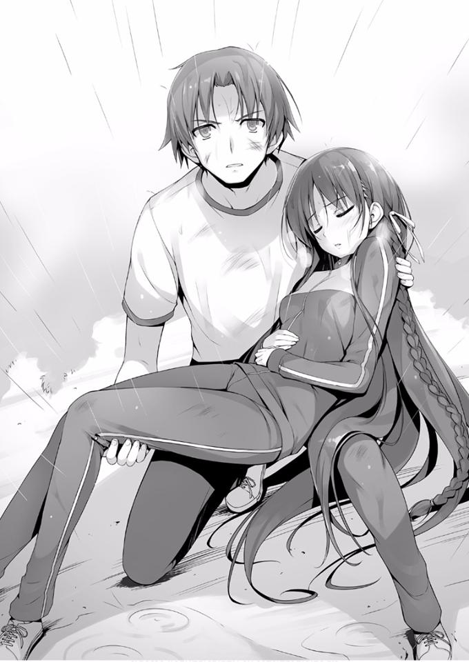
— No, no es eso. Creo que en lo profundo de ti estás empezando a sentir que necesitas aliados.
— Nadie dijo eso...
La típica Horikita, ahora estaría insultando a los demás, pero esta vez, había otro significado en sus palabras. El significado incluido en sus palabras era el de
«Transformarse y cambiarse» a uno mismo. De lo contrario, ella no habría dicho
«Nadie está dispuesto a ser mi aliado».
Aun así, no fue fácil. Hasta ahora, nadie tendría dificultades si pudiera cambiar de manera constante y hábil la forma en que estaba avanzando. Los ojos vacíos de Horikita parecían mirar a otra persona, en lugar de mirarme a mí.
— Eso... lo entendí desde hace mucho tiempo.
No deberías vivir solo en este mundo. Tanto la escuela como la sociedad consisten en una gran cantidad de personas.
— No hables. Estás enferma.
Puedo convencerla de que sea sincera, pero Horikita no detuvo su arrepentimiento. Sin embargo, para Horikita no hay más alternativa que no confiar en nadie. E incluso si viera otra alternativa, no podría elegirla.
— Con mi propia fuerza, me elevaré a la clase A. Seguramente me recuperaré de este fracaso —sin fuerza, agarró mi manga e hizo una declaración apasionada—. Estoy lista para ser maldecida por todas las clases... Así de tanto es como he fallado.
— Según el sistema de esta escuela, si luchas por ti misma no puedes ir a la clase A. Necesitamos la cooperación de nuestros compañeros a cualquier costo. Es inevitable.
Ella no tenía fuerzas para mantener sus ojos abiertos. Al final esos ojos se cerraron. La débil comprensión del frágil agarre Horikita sobre mi manga, en realidad, me hizo sentir fuerte.
— Es imposible admitirlo. Independientemente de lo difícil que sea... al final...
estoy sola.
— Ahh, cállate. Deja de hablar. No hay poder persuasivo o convincente en las palabras de una persona enferma —abracé a Horikita un poco más fuerte—. No puedes soportar grandes responsabilidades. No eres tan fuerte. Lamento decírtelo.
— ¿Me estás diciendo que me rinda? Tengo la esperanza de que mi hermano reconozca mi sueño de estar en la clase A.
— No dije eso. No tienes que rendirte —miré hacia abajo a Horikita que estaba sufriendo y gimiendo en mi pecho y agregué estas palabras—. Si no puedes pelear sola, es mejor pelear con alguien más. Te daré una mano.
— ¿Por qué…….? No eres el tipo de persona... que dice esas cosas...
— ¿Por qué no?
Es mejor para mí ser intencionalmente vago. Poco después, Horikita agotó todas sus fuerzas y perdió el conocimiento otra vez. Lo que tengo que hacer ahora es llevar a cabo esto sin que nadie lo note. La opción más fácil es retirarse, pero no sé cuál es el botón de emergencia en el reloj. Si envían el helicóptero para una emergencia, el sonido hará eco por todos lados.
— Me equivoqué de camino... es peligroso, peligroso...
Estaba orando para salir del camino pero, desafortunadamente, salí a un acantilado.
Otro paso y me habría caído. Traté de hacer luz. Parecía estar a unos 10 metros.
Desafortunadamente, estaba caminando en la dirección incorrecta. De todos modos, ¿debería volver a la ruta original? Traté de invertir mi dirección lentamente para no hacerle las cosas más difíciles a Horikita, pero justo después---
Desafortunadamente, la tierra debajo de mi pie colapsó y perdí el equilibrio.
Si estuviera solo, habría agarrado una rama de un árbol y habría pisado sobre ella, pero mis dos manos estaban bloqueadas con Horikita.
Me caí. Fue inevitable.
Curvé mi cuerpo para proteger a Horikita, pero caí por la pendiente cuando no supe qué hacer. Durante varios segundos, tuve la sensación de que estaba volando. No puedo recordar claramente lo que sucedió después de que me caí.
¿Debo decir que es una suerte que Horikita no se hirió de alguna manera?
Levanté la vista hacia la pendiente, pero como estoy sosteniendo a Horikita en mis brazos, es muy poco probable que pueda subir.
— Cometí un error.
Sin embargo, ahora no es el momento de quedarse varado aquí. Esta vez llevaré Horikita, aún inconsciente, sobre mi espalda y avanzaré con un mechero en el bosque.
La lluvia llegó sin piedad golpeando mi cuerpo y robando mi fuerza física. El calor que venía de Horikita en mi espalda no es habitual. Si ella está expuesta a la lluvia por más tiempo, podría ser peligroso.
Pero aquí en lo profundo del bosque no hay cuevas u otros refugios artificiales que la gente pudiera usar, por lo tanto no había otra opción que confiar en el poder de la naturaleza.
Afortunadamente, los árboles aquí están cubiertos de maleza, y dependiendo del lugar, nuestros cuerpos pueden permanecer relativamente secos.
Busqué árboles grandes y luego nos movimos justo debajo de ellos. Por supuesto, era mejor que estar directamente bajo la lluvia, ya que el abundante follaje impedía que cayera mucha lluvia.
Suavemente, dejé Horikita para tumbarme en el suelo.
Su jersey probablemente se ensucie, pero esto es algo que tenemos que aguantar en un momento como este. Me senté allí poniendo la cabeza de Horikita en mi regazo.
Aquí, había cierto alivio ya que el área circundante es fresca, sin embargo, la humedad era tan alta que se sentía agobiante y caliente.
La condición de Horikita no es buena. La sentí temblar mientras curvaba su cuerpo por el frío.
Abracé a Horikita sosteniéndola lo más cerca posible de mi pecho, esperando que la su condición se calmara un poco y simplemente esperé en silencio a que el tiempo pasara.
Cuánto tiempo ya pasó, no sé.
Horikita finalmente despertó siendo su feroz yo habitual, pero parece estar distraída o tal vez no pueda entender la gravedad de la situación en la que estamos.
— ¿Cómo... tú?... Yo...
Me pregunto si está confundida, parece que no recuerda lo que sucedió hace un momento.
Expliqué lo que sucedió. Sin embargo, dudaba si ella lo entendía todo claramente.
— Eso es lo que sucedió... lo recuerdo todo ahora.
— Eso es bueno.
— No sé lo bueno que hay en esto. Como puedo recordar mi error, me siento de lo peor.
Si ella puede hablar de una manera tan autocrítica, entonces me siento aliviado por el momento.
— Son casi las seis, Horikita. Puedes pensar que es duro, pero debes retirarte. Supongo que tu cuerpo ya está en su límite.
Apenas ha llegado hasta aquí fingiendo estar bien, pero a partir de ahora esto ya no será posible.
— No puedo hacer eso. No podemos darnos el lujo de perder 30 puntos por mi culpa... ¿No fui yo la que se enfrentó a Karuizawa y las demás por utilizar nuestros puntos sin cuidado? Me hará parecer una completa tonta.
La penalización relacionada con la mala condición física es grave. Hablando solo de los puntos perdidos, eran más de lo que Karuizawa usó personalmente.
Puso su brazo amargamente sobre sus ojos, para ocultar las lágrimas.
— No solo es eso... también me robaron la tarjeta. ¿Entiendes claramente lo que eso significa...?
— La clase D perderá otros 50 puntos.
Horikita asintió levemente con la cabeza. Entonces, a la clase D le quedarían solo unos pocos puntos.
— Vuelve solo y déjame aquí. Si hacemos eso, al menos por ahora, seré la única ausente del pase de lista de la noche.
— Y, ¿qué piensas hacer?
— Mañana por la mañana... de alguna manera, regresaré sola al campamento. Si logro superar mi mal estado durante la lista de asistencia matutina, entonces seguro también podremos hacer algo con respecto al retiro.
Entonces podríamos pasar esta situación solo con 5 puntos menos. Ese era el objetivo.
— Esta situación no es tan fácil, estás bastante débil en este momento, y la maestra a cargo no es lo suficientemente ingenua para que puedas superar esto con un rendimiento falso. Por encima de todo, es imposible que puedas volver por tu cuenta.
— Aun así, no tengo otra opción... para la clase D pueda mantener algunos puntos.
Aparte del caso de la tarjeta, todavía existía la posibilidad de que pudiéramos proteger algunos puntos relacionados con el pase de lista y el retiro. Eso ciertamente no era una cantidad pequeña.
— ¡Ve!
Aunque Horikita está débil, sentí que detrás de sus palabras había algún tipo de espíritu de lucha indomable. Puede soportar toda la tensión ella sola, pero le parece insoportable involucrar a otros. Sin decir una palabra, me levanté, apoyando la cabeza en la base del gran árbol. Ella realmente tiene la intención de liberarme de esta situación.
— Te dejaré en paz sin dudarlo, pero si las cosas continúan así, nuestros compañeros te culparán.
— Sí. Esa es la decisión correcta. Era mi responsabilidad y es todo culpa mía.
Horikita elogió fría mi decisión como la correcta. Pero solo está avergonzada de sí misma por volverse débil. Abrazó su cuerpo tembloroso para soportar el frío.
Es difícil cuando no dependes de los demás.
El clima todavía está tormentoso, y no hay señales de que la lluvia o el viento terminen pronto.
— ¿Realmente puedes volver sola mañana por la mañana?
— Sí... estaré bien.
— .... Horikita, ¿de verdad crees que está bien no retirarse en esta situación?
Solté palabras innecesarias.
— Por supuesto que no lo haré... no tengo la opción de retirarme.
Es muy conveniente seguir peleando con un espíritu de lucha indomable, pero no tiene sentido si pierdes al final.
— Oye. ¿Por qué crees que estamos arrinconados y desesperados?
— Mi negligencia trajo el caos. Eso es todo.
— Eso no es cierto. No está bien para nada.
Horikita Suzune luchó tan duro como pudo. Y trató de terminar la prueba sin fallar.
— .... Por favor, vete…. Porque pienso en ti como amigo, esta es mi petición...
—Horikita dijo esto y de repente presionó sus labios—. Voy a hacerlo bien.
Como… si no hubiera sucedido en absoluto.
— No. Creo que esta es la peor parte de eso.
— Está bien. ¡Yo… sola!….
Y cuando de repente se puso de pie, volvió a cerrar los ojos con dolor. Después de todo, era un peso para Horikita.
— Por favor, vete….
Cuando terminó su oración, Horikita perdió el conocimiento otra vez.
La levanté con cuidado, cambié mi posición para hacerla sentir aunque sea un poco cómoda, y luego, cuando me levanté, alcé la vista hacia la oscuridad inextinguible y dejé escapar un suspiro.
— Hubiera sido mucho más fácil si te hubieras retirado por tu propia voluntad.
Hasta el final, esta testaruda princesa no renunciará a los exámenes.
Espléndido. Sí, creo que es espléndido. Tus ideas y acciones fueron casi correctas.
Pero, desafortunadamente Horikita, hay algo que definitivamente está mal. Solo ahora, en este momento, déjame decirte con toda honestidad.
Nunca pensé en ti como amiga o aliada. Nunca me he preocupado por ti como compañero de clase. En este mundo ganar lo es todo. El proceso para hacerlo no importa. No me importa cuál sea el costo. Estoy totalmente bien siempre que al final tenga mi victoria.
Tú, Hirata y todos los demás son solo herramientas para eso.
No es mi culpa que Horikita haya llegado a este punto. Simplemente consentí con esto. Entonces, no te culpes, Horikita. Lo que quiero decir, es que fuiste útil para mí.
Avancé por el camino fangoso, mientras encendía la linterna. Mis zapatos ya están cubiertos de barro, y el interior de ellos está inundado.
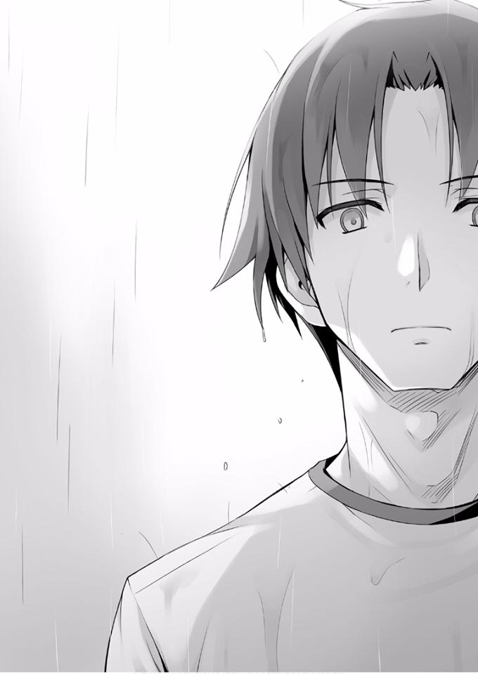
No me importa más.
Lo primero es comprender mi ubicación. Cuando bajé por la ladera, sin duda me alejé del campamento base de la clase D. Pero estoy seguro de que si vuelvo al otro lado, la distancia a la playa debe ser mucho más corta. Puedo atravesar el bosque por el que he estado caminando durante varios días confiando en el mapa en mi cabeza.
— Estaba cerca después de todo.
Finalmente, llegué a la playa. El barco está a flote y sus luces se reflejan en el mar.
Luego, me llevó un par de minutos regresar al lugar anterior y recoger a Horikita que yacía en el suelo sin fuerzas. Su hermoso rostro manchado de barro.
Aunque la levanté en mis brazos, no había señales de que recobrara el conocimiento.
Agarré a Horikita y comencé a caminar hacia la orilla, en lugar de la dirección del campamento base, continué caminando, eran alrededor de las 7 de la tarde, cuando apenas pude llegar a tiempo. Las tiendas de campaña instaladas por los maestros ahora estaban dobladas para no ser arrastradas por el viento.
Subí por la rampa del muelle y llegué a la cubierta del barco. Entonces uno de los maestros notó mi presencia y corrió hacia mí.
— Tienes prohibido ingresar aquí. Serás descalificado.
— Tengo un caso de emergencia. Ella tiene fiebre alta y está inconsciente.
Por favor, deje que descanse de inmediato.
Tan pronto como expliqué la situación, la maestra emitió instrucciones y trajo una camilla. Dejé a Horikita abajo.
— ¿Ella está de acuerdo con retirarse?
— Sin lugar a dudas. Sin embargo, déjeme confirmar algo, por favor. Debido a que todavía no son las 8, su pase de lista no tiene ningún efecto,
¿verdad?
Son las siete y cincuenta y ocho minutos, es casi seguro que estamos a salvo.
Debo obtener la promesa del maestro.
— … Ciertamente. Ella está en el límite, pero tú estás fuera.
— Entiendo. Una cosa más. Esta tarjeta, tengo que devolverla.
Le entregué la tarjeta de mi bolsillo al maestro.
— Bueno, entonces voy a volver al examen.
No podía quedarme aquí. Bajé a la playa de nuevo bajo la lluvia. Con esto, la clase D perderá 30 puntos con el retiro de Horikita y 5 puntos más con mi ausencia durante el pase de lista.
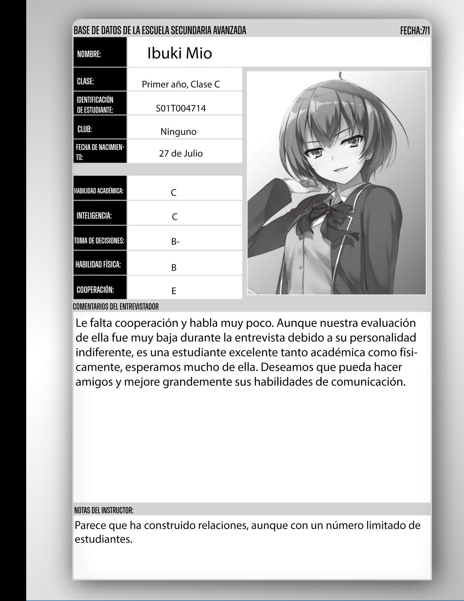
Agosto 7. Por fin nuestra interminable vida en la isla deshabitada está llegando a su fin. ¿Está nuestra salvación en el hecho de que pasamos nuestro tiempo divirtiéndonos modestamente en esta cruel prueba de supervivencia?
Todavía no había señales de Mashima-sensei y los otros cuando llegó el mediodía. Es hora de terminar.
— Anunciaré un recuento del resultado de la prueba. Esperen un momento por favor. Debido a que la prueba ya terminó, amablemente le pedimos a las personas que quieran usar inodoros o beber usen el sitio de descanso.
Con este anuncio, los estudiantes se reunieron en el sitio de descanso al mismo tiempo. Entre otras cosas, había mesas y sillas preparadas debajo la carpa temporal y parecía que podías descansar todo lo que quisieras. No hay señales de que Kouenji, Horikita o los estudiantes retirados que están esperando en el crucero. Sudou, que siempre está con Ike y los demás, permanecía inmóvil, mirando hacia el crucero.
— Ayanokouji. Eres cercano a Horikita, ¿verdad? ... ¿Qué tan cercano en realidad?
En lugar de enojarse o hacer un escándalo, Sudou en serio quiere saber.
— No hay nada entre nosotros. Sólo somos amigos. Nada más y nada menos.
— ... Incluso eso me pone celoso. Todavía soy tratado como un amigo.
Sudou parece un poco decepcionado, tal vez está irritado porque no puede encontrar a la chica.
— Pero incluso Horikita te notó por un momento en esta ocasión.
Sin causar problemas, tomé la iniciativa y actué en nombre de la clase teniendo a Horikita en mente. Un gran paso adelante.
— Eso espero. Después de todo, ella no puede llamarme por mi nombre.
— Buen trabajo, ustedes dos. Gracias por todo durante esta semana.
Realmente nos salvaron.
Después de decir estas palabras de gratitud, apareció Hirata. Me entregó una de los dos vasos de papel que tenía. Una fría sensación cruzó mi palma cuando lo agarré con la mano. Le entregó a Sudou el otro.
— Soy yo quien debería estar agradecido. Me seguiste la corriente a mí, que soy un extraño de la clase. Además, cubriste el hecho de que Horikita se retiró y cuando llegué tarde al pase de lista.
— No podía condenarte cuando escuché la razón. Además, Horikita-san nos dio una gran información.
— ¿Crees la que dijo?
— Ella no es alguien que diga cosas irresponsables. Por eso te acercaste,
¿verdad?
Este tipo protegerá a un colega, incluso si tiene que jugarse su reputación pura.
— Estaría mintiendo si dijera que no hay riesgo, pero tengo que actuar por Horikita.
— Ese es mi amigo —dijo Hirata suavemente. Su perfil era como el de un fantasma. Como si hubiera una parte que no comprendía en nuestro diálogo, Sudou inclinó la cabeza.
— ¿Información? ¿Sobre qué?
— Creo que lo averiguarás muy pronto. Aun así, la clase C es extraña... En otro nivel.
Debido a que la mayoría de los estudiantes de la clase C se retiraron durante el pase de lista del segundo día, no queda nadie en este lugar. No pude encontrar a Ibuki en la playa, como si ella también se hubiera retirado. Solo la vista extraña de Ryuuen estaba delante de nosotros.
— ¿Por qué él... ¿Por qué solo Ryuuen no se ha retirado?
Cuando Hirata y yo miramos desde la distancia, giró la cabeza en nuestra dirección, como si estuviera al tanto de nuestras miradas. Luego se acercó lentamente, como si pensara en algo. La tensión surgió en el aire.
— Oigan, acosadores. ¿Qué le pasó a Suzune?
Ignorando la presencia de Hirata, Ryuuen se acercó con un vaso de papel en la mano. Al escuchar “Suzune” venir de la boca de Ryuuen, me di cuenta de que la vena de la cabeza de Sudou latía debido a su mirada.
— Sería un problema si te lo decimos.
— Sé que perseguías el culo de Suzune. Estuvimos juntos antes de eso.
Habiendo drenado su contenido, Ryuuen aplastó ligeramente el vaso de papel y lo tiró a mis pies.
— Tira esa cosa por mí.
Sudou, después de ignorarlo con todas sus fuerzas, pateó el vaso de papel cubierto de arena de regreso.
— Qué cosa tan infantil. Recoge tu basura.
— Recoger la basura le sienta bien a los defectuosos.
A diferencia de Sudou que estaba irradiando intimidación, Ryuuen no mostró signos de preocuparse por nada.
— Cálmate, Sudou-kun. Yo tiraré la basura.
Cuando Hirata recogió rápidamente la basura, Sudou chasqueó la lengua y pateó la arena. Ryuuen apartó su mirada tediosamente. Tenía suciedad en la parte superior del cuerpo y los pantalones y el jersey también estaba lleno de suciedad. No pensé que hubiera renunciado a sus esfuerzos.
— No te retiraste, Ryuuen-kun.
— ¿Quién eres tú? ¿Y dónde está Suzune? Pensaba agarrarle dulcemente el culo.
La segunda vez que decía “Suzune”, habiéndolo asociado con un insulto de nuevo, Sudou se acercó a Ryuuen mientras pateaba la arena de la playa y le agarró el cuello.
— ¿Qué estás haciendo?
Sin agitación, Ryuuen aceptó la mirada intensa de Sudou directamente.
— La próxima vez que digas algo estúpido, te mataré.
— ¿Huh? ¿Qué pasa mequetrefe? te emocionas tú solo.
Incluso con Hirata alejándose de una pelea que estaba a punto de comenzar en cualquier momento, Ryuuen estaba derribando a Sudou.
— Horikita-san se retiró ayer. Ella no está aquí.
— ... ¿Se retiró? ¿Suzune? No parece una chica que se retire.
— Eso es…
El sonido chirriante del interruptor del altavoz envolvió la playa y apareció Mashima-sensei. Los de primer año se apresuraron a formar una línea, pero Mashima-sensei los detuvo con una señal de sus manos.
— Ya pueden relajarse. El examen ha terminado. Ahora, esta parte son nuestras vacaciones de verano. Está bien actuar con más libertad.
Aun así, los estudiantes todavía estaban tensos y su charla cesó al instante.
— Esta semana pasada, nosotros, los maestros pudimos controlar sus esfuerzos en el examen especial. Hubo estudiantes que tomaron este examen directamente de frente y aquellos que utilizaron sus habilidades en la estrategia. Pasaron varias cosas, pero creo que los resultados de las pruebas fueron espléndidos en general. Apreciamos su arduo trabajo.
Los estudiantes se sintieron aliviados al escuchar los elogios de Mashima-sensei.
Finalmente, comenzamos a sentir que habíamos terminado este examen de una semana.
— Bueno, entonces, sin más preámbulos, me gustaría anunciar el resultado final del examen especial.
Tal vez nadie, incluido nuestra maestra principal, había visto los resultados de esta prueba.
— No aceptaremos ninguna pregunta o consulta sobre los resultados de la prueba. Deben aceptar el resultado del examen y después nos gustaría que los analicen y los usen como ayuda en el próximo examen.
— Es lo que es. No pierdas tu temple. Acepta la realidad sin quejarte, ¿está bien?
— Son ustedes los de la Clase C los que deberían estar preocupados, usaron todos sus puntos, ¿verdad? ¡Ridículo!
Sudou se burló de la conocida imprudencia de la Clase C.
— Nos quedan 125 puntos, incluidos los puntos de bonificación que hemos acumulado. Creo que vamos a estar bien.
Hirata puede haberse sentido un poco irritado por la provocación irracional de Ryuuen. Entonces respondió con un sentido de orgullo. Ryuuen por otro lado, actuó disgustado con las palabras inmaduras de Hirata e hizo un gesto como de vomitar.
— ¡Oh! Envidio el nervio de los don nadie, cuando están satisfechos con una cantidad tan pequeña de puntos.
— No importa lo que digas, la Clase C obtendrá 0 puntos.
— Oh, ja, ja. No debes decidir por tu cuenta. Ciertamente, hemos agotado nuestros 300 puntos. Sin embargo, ¿has olvidado las reglas adicionales de este examen?
— ... Estás diciendo que vas a exponer a nuestro líder de clase, eso es lo que es.
— Correcto. Lo escribí en el papel, ¿no? ¡El nombre del líder de tu Clase D!
Hirata y también yo, intentamos no mostrar ninguna emoción en nuestras caras, pero Sudou sintió el impacto de estas palabras en su rostro.
— E hice lo mismo con nuestros colegas de la Clase A y la Clase B.
¿Entiendes lo que eso significa?
— Espera un minuto. ¿Qué quieres decir? ¿¡Oye!? Si eso es cierto…
— Tu falsa suposición contra la Clase D, junto con tus otras suposiciones erróneas resultará en una penalización y perderás 100 puntos en total.
En ese momento, escuché la voz de Mashima-sensei por el altavoz.
— Bien, ahora anunciaremos el ranking del examen especial. El más bajo es la Clase C con 0 puntos.
— Bwahahaha... ¡Mira! ¡Te lo dije! ¡Sin puntos en absoluto! ¡Qué divertido!
Tan pronto como escuchó los resultados, Sudou se rió de buena gana sosteniendo su vientre, ridiculizando a Ryuuen.
— ¿0 puntos?
Ryuuen no parecía entender la situación, estaba más bien en estado de shock.
Mashima-sensei continuó con el anuncio de los resultados sin dudarlo.
— Posteriormente, en el 3er lugar está la Clase A con 120 puntos. El segundo lugar es la Clase B con 140 puntos.
Una conmoción estalló. Eran clasificaciones y puntos que nadie había esperado.
Me preguntó si es porque no pueden ocultar su vergüenza por su error en los números que calcularon.
— Y Clase D...
Al instante, los movimientos de Mashima-sensei se pusieron rígidos. Sin embargo, su discurso pronto se reanudó.
— .... Obtuvo el primer lugar con 225 puntos. Esto concluye el anuncio de los resultados de la prueba.
Los estudiantes de la Clase D, a excepción de Hirata, eran los más confundidos por esta situación. Incluso Hirata, solo sonrió emocionado, sin poder creerlo tampoco, aunque él era la única persona que estaba al tanto de la situación de antemano.
— ¿Cuál es el significado de esto, Katsuragi?
Desde el otro lado del área de descanso, voces hicieron eco mientras los estudiantes de la Clase A rodeaban a Katsuragi.
— Algo está mal... ¿Qué significan con estos resultados?
— ¡Yahoooooooo! ¡Lo hicimos! ¡Se lo merecen!
Junto con los gritos de Sudou, todos los estudiantes de la Clase D se reunieron a la vez.
— Oye... ¡Oye! ¡¿Qué se supone que significa esto?!... ¡Hey!
Ike estaba lleno de emoción junto con confusión, por lo que se inclinó hacia Hirata, pidiendo una explicación.
— Explicaré todo, allá. Bueno, entonces nos excusaremos, Ryuuen.
Dejando atrás estas sugerentes palabras, Hirata se dirigió hacia el barco junto con Ike y Sudou. Sudou levantó su dedo medio mientras sacaba la lengua.
Ryuuen no tuvo más remedio que mirar en silencio.
El examen terminó y los estudiantes de primer año se dispersaron. Dos horas más tarde, cuando el barco parecía listo para partir, aún nos divertíamos en el mar. Nos tomamos nuestro tiempo para subir a bordo sintiéndonos relajados.
También comencé a caminar, abordando el barco.
— ¡Hola! Damas y caballeros. ¿Cómo estuvo su semana en la isla desierta?
En la cubierta del barco, con una bebida en una mano, Kouenji saludó a la Clase D.
— ¡Kouenji, idiota! Gracias a ti perdimos 30 puntos, sabes de qué estoy hablando, ¿verdad?
— Cálmate, chico Ike. Estaba enfermo en cama, en mal estado. No tenía otra opción, ¿verdad?
Brillante y deslumbrante, podría decir que se broceó la piel pasando toda la semana en el barco. Además, decir estas cosas mientras te ves perfectamente bien, no te daba ni siquiera un fragmento de poder persuasivo.
Un después del momento en que Kouenji fue culpado por los chicos, apareció Horikita. Todavía estaba pálida como si aún no estuviera en buena forma. Los estudiantes que notaron la presencia de Horikita se reunieron a su alrededor.
— Su... Suzune, ¿te sientes mejor ahora?
Sudou habló vacilante, pero se acercó a Horikita de todos modos, llamándola por su nombre.
— No muy mal. No puedo decir que estoy en perfectas condiciones todavía.
Sobre todo, retirarme fue mi gran fracaso.
— No te preocupes por eso.
Parece que Horikita acepta ser llamada por su nombre demasiado naturalmente.
Eso es inesperado.
— Por cierto, Sudou. No me llames Suzune sin mi permiso, ¿entendido?
— Ups... Entendido.
Aparentemente, no lo aceptó. Sudou no tuvo más remedio que inclinarse aceptándolo.
— ¿Pero cuál es el significado de esto? ¿Cómo obtuvo la Clase D el primer lugar?
Habían obtenido pruebas de quién era nuestro líder, así que hice que Horikita se retirara. Si dejo que esto suceda, en términos de cálculo, supongo que habríamos estado cerca de 0 puntos.
— Cierto. ¿Cómo sucedió esto Hirata? ¡No lo entiendo, en absoluto!
Le piden a Hirata que responda, pero parece que hay algo que debe ser resuelto antes de eso.
— Bueno... Karuizawa. Antes que nada, creo que tienes algo que decirle a Horikita, ¿verdad?
Habiendo dicho eso, llamó a Karuizawa que se escondía detrás de Shinohara.
Karuizawa después de ser llamada, se acercó a Horikita lentamente.
— ... Horikita, ¿puedo hablar contigo un momento, por favor?
— Sí. Hay algo de lo que deberías hablar conmigo. ¿No es así?
Horikita cerró los ojos tan pronto como vio a Karuizawa asintiendo con la cabeza.
Karuizawa respondió sobre cosas como el incidente del robo de la ropa interior y sobre el uso de nuestros puntos egoístamente y reconoció que como se conoció la identidad de nuestro líder, Horikita tuvo que retirarse.
Dicho de otra forma, Teníamos que aceptar sus palabras, sin importar lo que ella había dicho antes. Eso es lo que su expresión facial nos decía.
— Lo siento.
Karuizawa se disculpó, solo con un poco de franqueza pero con una expresión de pesar en su rostro.
— Fue Ibuki quien robó mi ropa interior. Lo escuché todo de Ayanokouji.
— ¿Eh?
Horikita, que estaba preparada para ser insultada, estaba desconcertada por una disculpa que no esperaba sobre acciones que no recordaba.
— Horikita, te diste cuenta de que Ibuki era la ladrona, y la interrogaste, entonces ella trató de escapar, ¿no? Me dijeron que esa es la razón por la que terminaste enferma.
Horikita volteó hacia mí, sorprendida por las palabras de Karuizawa.
De alguna manera me sentí incómodo y desvié mi mirada.
— Y lo escuché de Hirata primero. Dijo que tú, Horikita había descubierto los líderes de la Clase A y la Clase C. Es por eso que esta vez nuestros puntos fueron tan altos, así que... Lo siento por todas las cosas que dije.
Habiendo dicho esto, Karuizawa regresó inmediatamente cerca de las otras chicas.
— Espera un minuto. Yo... descubrí a los otros líderes. Pero yo me retiré.
— No tienes que ser humilde, Horikita. Estoy seguro de que obtuvimos este resultado porque tus respuestas sobre los líderes fueron absolutamente correctas.
Sentí dudas surgiendo en la cabeza de Horikita. Sobre este enigmático resultado en la prueba, creo que tiene sentido para todos menos para ella, al menos por el momento.
— Espera, Ayanokouji... ¿Qué estás-
Horikita intentó hablar conmigo en medio de la confusión y la alegría de muchos estudiantes.
Sin embargo, Horikita, al ser la líder de esta prueba victoriosa, fue rodeada por nuestros compañeros de clase.
— ¡Horikita, eres realmente increíble! Un verdadero genio, ¿verdad?
— Cuando escuché que te retirabas, estaba preocupado por lo que iba a pasar, pero todo resultó bien.
— ¡Solo, esperen un segundo!
Mientras era bombardeada con preguntas de chicos y chicas, junté mis manos rezando por el resultado exitoso y luego me retiré.
Bueno, me alegra que terminara bien. Nuestra clase obtuvo el primer lugar y Horikita se hizo popular. Supongo que podrá pasar por esto bien. Mientras tanto, intentaré no dejarme atrapar por otra persona y descansar en mi habitación.
Justo cuando lo pensaba, terminé encontrándome con un dios de la muerte.
— ¿Puedo hablar un poco contigo?
— Realmente es un mal momento para invitaciones. Chabashira-sensei. ¿Me puedo rehusar?
— Si no quieres, entonces supongo que empezaré a hablar aquí. ¿Te parece bien si llamamos la atención?
— Ya que hace calor, sea breve por favor.
Caminé hacia el lado opuesto del barco para que Chabashira-sensei pudiera tomar la iniciativa. No hay gente a la vista aquí. Cuando cayó el silencio, saqué el tema.
— ¿Está bien si pienso que por el momento está satisfecha con esto?
— Sí. En primer lugar, permíteme decir que fue admirable. Honestamente, estaba impresionada.
— Entonces dígame ahora, ¿es cierto que «ese hombre» exigió que abandonara la escuela?
Chabashira-sensei se recargó en la empalizada y miró hacia el cielo.
— ... ¿Hay una base real que le haga decir que esa historia es cierta?
— Sé mucho más de lo que piensas acerca de ti. ¿No crees que es suficiente base? Otros miembros del profesorado y del personal docente no conocen tus verdaderas habilidades. Pero yo no tengo dudas sobre ellas.
Algo más está en duda. Es cierto que hice algo que me hizo destacar en el examen de ingreso, pero ninguno de los docentes debería saber sobre mi conocimiento interno. Esta vez, el orden de las cosas será divertido. Chabashira-sensei dijo que ha estado en contacto con ese hombre recientemente. Como esperaba, esta persona está escondiendo algo.
— Probablemente hayas oído sobre el famoso mito de las alas de Ícaro.
— ¿Qué está mal con eso?
— Ícaro voló lejos de la torre que ocupaba para ganar la libertad. Pero eso no sucedió debido a su poder como persona. Sucedió porque su padre Daedalus diseñó y construyó las alas y las hizo volar. Él no voló por su intención o propósito. ¿No crees que esta es la imagen de ti en este momento?
— No entiendo.
— Ese hombre...... no, tu padre dijo esto. Kiyotaka elegirá la manera y el camino que al final lo harán abandonar esto por sí mismo. Significa que tu final será como Icarus. El mismo Ícaro que quemó sus alas volando demasiado cerca del sol. El mismo Ícaro que cayó al océano y murió.
Así que de eso se tratan las alas de Ícaro.
— Entonces, ¿qué vas a hacer ahora?
— Debería saber que Ícaro continuó hasta el final sin seguir los consejos de Daedalus.
A pesar de las alas quemadas, Icarus continuó volando tanto como pudo.
Buscando libertad.
Cuando entré al barco, me dirigí de inmediato a mi habitación. Un cansado Hirata estaba acostado y durmiendo. Me cambié la ropa silenciosamente en el corredor para no despertarlo.
Cuando encendí mi teléfono, un tono electrónico resonó repetidamente y el historial de llamadas entrantes estaba completamente lleno. Por el momento responderé los correos electrónicos y luego esperaré en el living mientras tomo un descanso.
Ella no estará satisfecha a menos que le explique todo tarde o temprano.
Luego, unos minutos más tarde, una enojada Horikita se unió a mí, liberándome de una presión silenciosa.
— ¿Cuál es el significado del resultado de la prueba? ¿Qué diablos está pasando?
— Tienes una expresión de que no tienes la menor idea.
— Sí, no puedo comprenderlo. No puedo comprenderlo en absoluto. Hay muchas cosas que quiero preguntarte.
Horikita ordenó bebidas al camarero que estaba parado justo en frente de nosotros. Comencé a hablar sin esperar su reacción.
— Te contaré todo. Sin embargo, la condición es que guardes silencio sobre este asunto. No voy a comprometerme, de lo contrario…
Anticipé que llegaríamos a esta situación, ya que Horikita no quería retirarse por voluntad propia. Es una historia que debe mantenerse en secreto, o más bien, Horikita es la única que obtendrá esta información.
— ¿Dónde quieres comenzar?
— ¿Qué estuviste haciendo en esta prueba? Cuéntame sobre eso.
Fue una pregunta mucho mejor de lo que esperaba. En resumen, ella quiere saber todo.
— Cuando se anunció este examen especial, no presté atención a nada más que a las reglas adicionales. Cómo administrar 300 puntos era una tarea bastante simple y no algo que se podía manipular personalmente.
— Pero las reglas adicionales eran muy difíciles de seguir. Incluso si las sigues religiosamente, no podrías identificar a los líderes. ¿Cierto?
— En efecto. Entonces, primero que todo, levanté la mano y me ofrecí voluntario para buscar un campamento base. Planeé buscar sitio por sitio para poder adelantarme a todos los demás y tener la libertad de actuar cuando sea necesario.
— Para decirlo simplemente, para que nadie más pudiera conocer la posición de los sitios.
— Ese no es el caso. No entendiste porque ya te sentías enferma, pero la escuela te dio pistas sobre posibles sitios mientras el barco aún navegaba.
Katsuragi también era consciente de esto, pero cuando le dijo a Horikita que el barco estaba dando vueltas alrededor de la isla a una velocidad extraña, ella lo silenció. Era casi tres veces más rápido que un crucero normal. Además, si fuera solo para hacer turismo, era bastante inusual hablar en el anuncio de «Un escenario importante».
En ese momento no entendía completamente lo que estaba mirando, pero Kouenji ya había notado esa pista.
Bueno, es una pérdida de tiempo pensar en Kouenji ahora.
— Cuando llegué a la cueva, pensé que era la mejor base, con la ubicación más importante.
— ¿La cueva la mejor base? ¿No crees que los ríos y los pozos de agua hubieran sido más convenientes?
— No es el sitio en sí lo que importa. Sino donde está ubicado.
No había sitios cerca del pozo de agua ni del río. Por el contrario, prepararon dos sitios conectados a la cueva, una cabaña y una torre. En otras palabras, era un gran lugar para usar como base. Horikita parecía mostrar cierto nivel de comprensión mientras lo explicaba.
— ¿Pero cuál es la ventaja que tienes en la cueva, cuando no tienes la tarjeta?
— Bueno, tenía la intención de explorar varias cosas, pero resultó que descubrí la verdadera identidad del líder.
— Katsuragi fue tan descuidado que te diste cuenta de que él era el líder.
Ese no fue el caso, realmente no.
— Había un tipo llamado Yahiko, ¿verdad? El tipo que siempre sigue a Katsuragi. Ese tipo era el líder. Vi a Katsuragi y Yahiko cerca de la cueva, pero no los vi claramente en ese momento para confirmar que realmente eran los que ocupaban el sitio. Estuve seguro de que ocupaban la cueva después de que se fueron.
Voy a explicar la situación de ese momento de nuevo. En el momento en que los vi, Katsuragi estaba de pie en la entrada llevando la tarjeta de acceso. Yahiko, que salió de la cueva, se unió a él y se fueron juntos.
— Entonces, al mirar ese espectáculo, ¿no sería natural confundir a Katsuragi como el líder?
— ¿De Verdad? ¿Crees que un líder mostraría la tarjeta de forma tan descuidada en público?
Como Horikita era la líder, pude entender lo tonta que era y que no sería capaz de llevar a cabo ese papel.
— ¿Pero por qué? ... ¿Por qué molestarse en tener la tarjeta en la mano?
— Porque tenía que hacerlo. Katsuragi es un hombre tranquilo, seguro y extremadamente prudente en lo que respecta a lo que he examinado. No hay ninguna razón para que no entendiera el alto riesgo de ocupar un sitio tan pronto como lo encontraran. En otras palabras, quien lo ocupó es el que fue atrapado en un acto de la avaricia inmediata.
— Eso... requiere la presencia de otra persona.
— Así parece. Cuando encontró la cueva, Katsuragi no tenía la intención de ocuparla, pero se guardó todo para sí mismo, lo que pudo deberse al hecho de que Yahiko ya había tomado posesión de ella por error. Pensaba que nadie estaba mirando, sin embargo, se aseguró por si acaso. Al quedarse con la tarjeta en sus manos, pensó que podía engañar a los posibles testigos de que él era el líder. La clase A tenía dos sitios, a
excepción su base, pero no sabía exactamente cuántos sitios ocuparon al final de la prueba. Si adivinara a su líder, todos sus puntos serían invalidados.
Bueno, era una pérdida de tiempo dedicarme a ello cuando lo reduje a Yahiko.
— No estoy del todo convencida. Si hubiera marcado un sitio así en una etapa tan temprana, ¿no sería fácil evitar esos problemas si utilizara la ayuda de sus compañeros de clase? Habría sido suficiente reclamar su derecho de posesión y les hubiera permitido vigilar la cueva. Por qué ocuparlo exclusivamente...
— Esa es la desventaja de la clase A.
Su puntaje general para la prueba es alto y no han recibido una evaluación negativa en la actitud general de clase, como la clase D. Sin embargo, su clase está dividida internamente. En otras palabras, había una razón por la cual no podía usar la ayuda de un grupo grande de personas.
— Su clase, que se ve perfecta en la superficie, pero ahora tiene un gran agujero en ella.
Es por eso que atravesé a la clase A tan fácilmente esta vez. Bueno, fue solo suerte. Una clase de puntaje que se obtuvo explotando un error. Es como que la clase A no tenía manera de vencer un ataque sobre su cabeza.
— Entonces, en esa etapa, excluí a la clase A, y volví mi atención a los movimientos de la clase C. Katsuragi era un tipo fácil de entender, pero había una cualidad bastante desconocida sobre Ryuuen. De hecho, él estaba reuniendo más información que yo, y descubrió a los líderes de todas las clases.
— Espe... espera. Pudo ver a través de todas las clases. No solo de la clase D, también conocía a los líderes de la clase B y la clase A. Pero eso es extraño. Además de recibir una penalización, tuvimos el primer lugar por un amplio margen. ¿Cómo vas a explicar eso?
— Aunque esta historia es un poco difícil de explicar, la respuesta a esa pregunta es la razón por la que hice que te retiraras.
— Que me retirara... la respuesta... ¿Qué diablos hiciste?
— Oh, ¿aún no la devolviste a la escuela?
Saqué una tarjeta de mi bolsillo y se la di a Horikita.
— Esta es una tarjeta. Por qué……… —Horikita se sorprendió al ver las letras talladas en esa tarjeta—. Por qué, esto es...
Las letras grabadas en la tarjeta eran «Ayanokouji Kyotaka».
— La prueba debe ser justa. Es por eso que todas las reglas son justas.
Es bastante natural. Es algo que se puede ver claramente en las reglas adicionales. Solo se puede elegir un líder. El líder no puede cambiar. En otras palabras, el líder es el único que tiene el derecho de posesión exclusiva.
— ¿Qué crees que pasa si el líder se retira porque está enfermo?
— Eso... el líder estará ausente. Entonces el derecho de posesión exclusiva también desaparecerá.
— Te equivocas. En el manual, estaba escrito así: «El líder no puede cambiarse sin una razón legítima». ¿No crees que el «retiro» es una razón válida?
La única manera de romper las reglas adicionales es si el líder se encuentra en una condición física deficiente o se ha lesionado. Podía predecir que necesitaríamos encontrar un nuevo líder.
Pude descubrir esto mirando y analizando las otras reglas. Por ejemplo, está establecido que un campamento base no se puede cambiar sin una razón justificable, pero incluso aquí el motivo era suficientemente válido.
Por ejemplo, cuando estábamos ocupando el lado del río no estábamos preparados para algo así como que otra clase ocupara nuestro sitio, por lo que esto se aplicaba a una “razón justificable” para ocuparlo. No podrás quedarte en el campamento base en sí, así que si no hay un acuerdo ni un plan para encontrar un nuevo campamento base, colapsarás.
— Entonces, tú, para mí......
Una líder llamada Horikita Suzune se retiró y me encontré en su lugar. Por supuesto, el líder supuso que al final del examen debería haber sido yo. Solo hay un líder.
— Esa es también la razón por la cual la clase C lo sabía y no recibimos ningún daño.
— Pero espera. A pesar de que Ibuki robó mi tarjeta, si la hubiera protegido...
Horikita recordó lo que sucedió el día del accidente.
— ¿Dejaste caer la tarjeta a propósito en esa ocasión? Bueno, tal vez también la acción de Yamauchi dio lugar a que Ibuki preparara una oportunidad para robar la tarjeta.
Estaba sosteniendo a una Horikita llena de fango y no tuve más remedio que renunciar a la tarjeta.
— No pude hacer nada... no sabía qué estaba buscando Ibuki desde el principio...
Cierto. Quiero decir, una chica llamada Ibuki fue encontrada repentinamente y acogida por la clase D.
En primer lugar, era necesario que sepamos que eso es extraño.
Sin embargo, casi me convencí cuando escuché una historia sobre un chico llamado Kaneda a quien la clase B ayudó de la misma manera. Era un espía enviado por Ryuuen. No fue agradable escuchar que dos personas fueron ayudadas por dos clases diferente solo por casualidad. Y no era agradable saber que creían que eran sinceros.
— Además, Ibuki tiene el hábito de mirar a los ojos de una persona cuando miente.
Cuanto más grande la mentira, más obvio se volvió ese hábito.
— Cuando dices una mentira, miras a los ojos de una persona... ¿No es normal?
En términos generales, cuando tienes una conciencia culpable, evitas el contacto visual. Pero ella es al revés. Creo que habla mirándote a los ojos porque quiere que pienses que la mentira es verdad. Así que tal vez la persona con que habla no haya notado nada.
Incluso cuando surgió la historia del ladrón de ropa interior, siguió hablando mirándome a los ojos.
— Tal vez, ella solo tenía el objetivo incansable de la tarjeta, y después de eso su objetivo cambió a simplemente crear disturbios en la clase D.
Lo que le sucedió a Karuizawa y lo que estaba en la maleta de Ike debería verse como una mera coincidencia.
— Pero me pregunto por qué Ibuki específicamente robó mi tarjeta. Si era solo para confirmar mi nombre, no entendía nada.
— Al principio, se suponía que debía hacerlo. Pero sucedió un problema imprevisto —entonces eso desencadenó que encontrara al líder de la clase C—. Ibuki había preparado una cámara digital en su maleta.
Probablemente porque se suponía que debía fotografiar la tarjeta.
— Fotografiar... con una cámara digital...... ¿Por qué ha ido a tal extremo?
— Si hubiera una foto, ¿tal vez la existencia del líder habría estado clara para que todos la vieran? Llegó a la conclusión de que por primera vez obtendría ganancias.
— Bueno, no sé... ¿Tal vez Ryuuen no confió en Ibuki?
— No es eso. Si esta charla solo hubiera sido en la clase C, entonces no habría necesidad de fotografiar con la cámara digital o de robarla.
En otras palabras, Ibuki es una persona que no confía fácilmente en lo que otras personas dicen, por lo que quería una evidencia confiable.
— Sin embargo, no hay evidencia de eso. Escucha, solo estoy pensando que mi predicción se derivó del resultado de la prueba. Al final de esta prueba, la clase A tenía 270 puntos.
En otras palabras, eso significaba que ni siquiera usaron 1 punto durante el examen.
— La clase C y la clase A estaban unidas y en contacto en secreto y la clase C sacrificó sus puntos para comprar lo que era necesario para la clase A.
Además, al transferir a la clase A todas las herramientas utilizadas por la clase C, la clase A pudo pasar una semana aquí sin usar puntos. Creo que eso es todo.
Una extensión de esta conexión fue que Ibuki obtuvo la evidencia y le dijo la información a alguien de la clase A.
— Por cierto, me di cuenta del líder de la clase C después de que la mitad de los estudiantes se habían retirado. Era seguro que alguien que se quedó en la isla se convertirá en líder, ¿verdad?
— Aun así, en la mañana se suponía que no sabíamos quién se quedó.
— Nah, estaba casi 100% seguro de que Ryuuen se quedó en la isla.
Me di cuenta de esto cuando me encontré con Ibuki escondiendo un radio que estaba enterrado en el suelo. Era usado para que Ryuuen pudiera estar en contacto con ella. Seguramente los estudiantes retirados no podían usar un radio. Se convirtió en prueba de que alguien se había quedado en la isla para poder usarla.
En realidad, el radio estaba puesto sin cuidado sobre la mesa mientras disfrutaba de las vacaciones. Nadie más lo estaba controlando, sino él mismo.
Fue su error no haber confiado en nadie.
— Realmente... no tengo palabras.
Horikita respondió enfrentando la verdad. Si tuviera que recapitular esta prueba a mi manera, la clase A no funcionó bien debido a la división interna, además de su primer error que terminó atormentándolos hasta el final.
La clase B llevó a cabo una prueba exhaustiva orientada a la defensa que no causó daño ni bien. Está bien. Pero el único error fue que perdonaron la existencia de Kaneda en un grupo donde había muchas personas crédulas y bondadosas. Entonces, sobre mi teoría. No estoy seguro de cómo se llevó a cabo, pero Kaneda le dijo a Ryuuen que tenía la prueba, a pesar de que no pudo obtener ninguna evidencia física una vez que vio que la clase A no estaba obteniendo puntos.
Entonces, la clase C. Al convertirme en líder, logramos evitar daño al final pero, la clase C además de alimentar a los espías y darse cuenta de los líderes de todas las clases, se suponía que obtendrían ventaja de la clase A debido a una negociación de algún tipo. La persona de la que deberíamos estar más en guardia era probablemente Ryuuen.
— No estoy feliz. Me usaste de una manera terrible.
— En efecto. No puedo negar eso. No me sorprendería si dices que no volverás a acercarte a mí nunca más —Estaba consciente de eso—. Bien, voy a volver a la habitación. Todavía estoy cansado.
— Espera. No hemos terminado de hablar.
— ¿Qué? Quiero descansar en mi habitación tanto como sea posible.
— Una vez que me expliques todo. Todavía tenemos cosas que discutir.
— Bien, ¿sobre qué?
— La razón por la que tomaste esta prueba especial. Fue para competir solo o para usarme, está bien si lo dices ahora. Quiero saber la razón de que te unieras a esta prueba, tú, que nunca causas problemas.
— … Ya veo.
Quizás la explicación hasta ahora no era tan importante para Horikita.
— Fuiste genial al darte cuenta de las cosas rápidamente y sin sospechas en esta ocasión. Ya que nos diste una mano, el objetivo de llegar a la clase A se volvió completamente realista. Sin embargo, ¿cuál fue la causa de tus acciones? ¿Por qué hiciste esto?
Aun así, no me molesté en contarle mi problema personal a Horikita porque esta vez solo lo hice para salir de la promesa con Chabashira-sensei.
— Es porque me impresionaste. Intentaste luchar hasta el final en ese mal estado.
— ...No dices a menudo mentiras que son tan fáciles de descubrir.
— No estoy de humor para explicar.
Me levanté de la silla y tendí mi mano.
— No me importa ayudarte a avanzar a la clase A. Pero hay una condición: no me investigues. Si prometes no tocarme bajo ningún concepto la próxima vez, te ayudaré.
Como si quisiera comprobar lo que sucedería a continuación, Horikita me tomó la mano sin dudarlo.
— Si no quieres decirme, está bien. No hay razón para rechazar una mano que ofrece ayuda. No tengo ningún interés en desenterrar algo que yace plácidamente en el pasado.
Horikira me estrechó la mano con firmeza.
Yo soy para mí. Tú eres para ti.
La batalla de esta clase para subir desde el fondo está a punto de comenzar.
HISTORIAS CORTAS
KUSHIDA HISTORIA CORTA
EL MOMENTO IMPORTANTE
— ¿Kikyo-chan? Oye, ¿estás bien?
Al sentir la presión de unos dedos sobre mis hombros, me asusté un poco y giré la cabeza.
Shinohara-san estaba un poco preocupada.
— ¿¡Ah!? Lo siento, ¿me estabas llamando?
Mi sentido del oído, que estaba envuelto por el silencio, de repente empezó a captar sonidos. Los ruidosos sonidos de los alrededores me golpearon como un tsunami.
Accidentalmente se me cayó el muñeco que tenía en las manos al suelo y rebotó un poco.
— ¿Qué pasa?
— Karuizawa-san propuso ir a cubierta, parece que hay un gran paisaje.
— Entiendo. Iré allí una vez que haya comprado esto.
Creí que era el destino, así que compré el delfín del tamaño de la palma de mi mano.
Después de adquirir el delfín, me reuní con las chicas frente a la entrada de la tienda y me dirigí hacia la cubierta.
Los tripulantes de pie frente a la entrada nos recibieron con una amplia sonrisa en la cara y nos ayudaron a abrir la puerta.
Para ver el paisaje, la mayoría de los estudiantes ya se han reunido en la proa.
— ¡El paisaje es impresionante! ¡Es increíble!
Incluso Karuizawa, que normalmente no muestra ningún interés en nada más que arreglarse, no podía dejar de suspirar. Parece que el paisaje es realmente único.
Observaba el océano con los ojos iluminados. El resto de las chicas estaban haciendo lo mismo.
Pero miré el paisaje como si no tuviera nada que ver conmigo, involuntariamente.
No era en absoluto porque tuviera alguna mala impresión. Sólo porque consideré que este momento era muy importante, así que no quería arruinarlo.
— Realmente es una vista impresionante...
Cambié mi estado de ánimo y contesté así.
— Parece que los chicos están en la proa. Unámonos a ellos.
Todos aceptaron la sugerencia de Karuizawa. Por lo visto, intentar ocupar un lugar ahora mismo será un poco difícil.
— ... Actúa con naturalidad, con naturalidad.
Susurré con una voz que nadie podía oír y me dirigí hacia la cubierta. Después de eso entramos en el lugar vacío que ocupaban los chicos de la clase D.
Parece que el grupo de Ike-kun y Sudo-kun ha ocupado este lugar.
Los chicos que nos vieron nos dejaron entrar en el lugar vacío sin ningún tipo de aversión en sus caras.
Entonces, vi a Ayanokouji-kun por primera vez, mirando aburridamente al mar.
Sentí un poco de impaciencia. La razón es porque vio mi lado oculto.
En una situación normal, le prestaría mucha atención y vigilaría cada movimiento.
Pero su presencia siempre es muy débil. Normalmente, nunca habla más allá de lo mínimo, así que es difícil seguirlo de cerca.
Sólo que, cada vez que lo veo, empiezo a recordar otras cosas.
— ¿Eh? ¿Dónde está Horikita-san? ¿No están juntos?
Horikita-san es una de las pocas amigas de Ayanokouji-kun. Para mí eso es lo más importante.
— No sé, no soy su guardián... Además, no es una persona que disfrute plenamente de un viaje, seguramente está en su habitación, eso creo...
No hay nadie en la clase que ame más estar sola que Horikita-san. Es probable que no intente disfrutar del viaje, sino que se quede en su habitación.
También facilita las cosas, así que primero disfrutemos de las vacaciones de verano.
— Supongo que sí.
Después de darle una respuesta tan corta, me paré junto a Ayanokouji-kun y sentí el mar de cerca.
Cuando terminó la transmisión del barco, apareció una isla en mi campo de visión. Esa es la playa a la que vamos a ir, la principal atracción de estas vacaciones de verano.
Karuizawa-san y los demás lo están deseando y están hablando de ir a nadar.
Esta escuela es diferente a las escuelas normales. Aunque hay muchos elementos emocionantes, también existen días normales. Lo cotidiano también existe. Quiero protegerlo a toda costa. No tengo más remedio que protegerlo.
Por esta razón, yo.... poseo esta determinación.
Poco a poco nos fuimos acercando a la isla.
Mi determinación, cada vez más firme, también se iba acercando poco a poco.
ICHINOSE HISTORIA CORTA
EL CASO DEL EXAMEN DE ICHINOSE HONAMI
En pleno verano en la isla deshabitada. Los estudiantes de la clase B estaban interpretando adecuadamente sus papeles.
Era el segundo día de este examen especial. Me levanté satisfecha con la hamaca que hice personalmente.
— ¡Hey! ¡Sí, ahora está terminada!
Asentí mirando hacia las cuerdas atadas. Chihiro-chan, que estaba al lado supervisando el progreso de los trabajos, también parecía muy feliz.
— ¡Como se esperaba de Honami-chan! ¡Gracias!
— Puedo ayudar en cualquier momento con este tipo de trabajos, así que llámame cuando tengas problemas.
Después de decir esto, Chihiro-chan mostró una sonrisa despreocupada y se enlazó con mis brazos. Así, se veía tan linda como una hermanita.
En el pasado, cuando Chihiro-chan se me confesó, tenía miedo de que nuestra relación se viera afectada. Pero esas preocupaciones desaparecieron al día siguiente, ella me trató como de costumbre.
Así que aproveché ese momento, abrí mi corazón y le hablé como siempre.
— Ichinose-san es muy buena en todo. ¿Tienes cosas que consideras que seas mala? Como los deportes y otras cosas.
Ja -ja- incluso si sé que no hay malicia, ¡no agregues esa última frase sin importancia!
— ¿No crees que ser mala en los deportes y otras cosas ya es asombrosamente fatal?
Además, mala... mejor que mala, eso no es ser bueno en eso.
En lugar de decirlo en voz alta, era una pequeña excusa en mi corazón.
Estoy segura de que mi velocidad al correr es bastante alta. En contraste, mi habilidad para mantener el equilibrio -conocida como parte de las neuronas motoras- tiene su lado malo.
Ha pasado muchas veces en las que he tirado o pateado un balón, y se ha desviado mucho, así que se han burlado de mí en el aula por esto. Uuuuh, estoy tan triste.
— No es así en absoluto. Para mí, ese lado de ella realmente suma a sus puntos de lindura.
Para mí era una cosa muy embarazosa, pero Chihiro-chan estaba muy contenta.
— ¡Wah, detente idiota, está demasiado frío!
— ¡Wahahahaha! ¡Oraora!
Acompañado por el sonido de las salpicaduras de agua en todas direcciones, pude escuchar a los muchachos gritando mientras jugaban con el agua.
— Todo el mundo se está divirtiendo mucho.
Observando la escena de sus miradas inocentes, inevitablemente hace que la gente sonría. ¿Debería unirme a ellos?
— Vergonzoso. Los chicos son sólo un puñado de niños.
— ¿Lo son?
¿Es porque Chihiro-chan tiene un lado insensible, o porque tiene un fuerte conflicto con los chicos?
— Pero todos han hecho un gran trabajo. A pesar de que nadie ha experimentado anteriormente sobrevivir en una isla deshabitada, han afrontado el examen sin problemas y sin pánico.
Después de que revelaron el examen, normalmente la gente se hundiría en el caos, pero todos en el aula se tranquilizaron y calmaron, eso fue más allá de mis expectativas.
Gracias a todos, también pude sacar mi fuerza habitual y contribuir a la clase.
Sólo pasar el examen de esta manera. Manteniendo con firmeza los puntos y al mismo tiempo, sin olvidarnos de disfrutar alegremente.
— Hey, Honami-chan, después de esto vamos a la playa. Ya que es una rara oportunidad, realmente quiero ir a nadar.
— Invitémoslos a todos y vayamos juntos.
— ...Honami-chan, si lo quieres así, también está bien.
¿Por qué me miras a los ojos? ¡Y tus mejillas parecen tener un tono febril!
— Pero creo que... el mundo de una pareja romántica es mejor.
No me digas que todavía le gusto a Chihiro-chan. Más bien, ¿¡esta respuesta sólo significa que todavía le gusto!? ¿¡Qué debo hacer!?
— En serio, estaba bromeando. No tienes que alarmarte.
Dijo Chihiro-chan mientras se reía, quizás vio a través de mi corazón aterrorizado.
— Eres tan malvada. Me sentía angustiada porque me tomé en serio tus palabras.
— Ya que aún quedan dos años y medio. No necesitas sentirte angustiada.
Pero definitivamente cambiaré los sentimientos de Honami-chan antes de la graduación.
— Sí, sí, justo así, justo a-
Después de asentir con admiración, volví a reflexionar tranquilamente sobre lo que acaba de decir, y se me congeló todo el cuerpo.
— ¿Qué?
SAKURA HISTORIA CORTA
COSAS QUE BROTAN
Después de que comenzó el examen especial, la vida escolar que tenía en mente había cambiado drásticamente.
¿Es por vivir en la isla deshabitada? ¿O es porque no he experimentado una vida cruel hasta ahora?
No, no es nada de eso. Esas son cosas triviales.
Estaba mirando al chico que caminaba delante de mí en el denso bosque.
¿Por qué? No sé la respuesta.
Cuando me di cuenta, mis ojos ya estaban en su cuerpo. Esto nunca había ocurrido hasta ahora.
Si estiro mi brazo puedo tocarlo, esa es la distancia entre nosotros. Intenté extender mi brazo ligeramente.
Pero eso es algo que no pueda tocar. La distancia es tan cercana y sin embargo está fuera de mi alcance.
De repente, el chico... Ayanokouji-kun, se detuvo y giró su cuerpo.
Mi pulso se aceleró mientras retiraba mi mano apresuradamente. No me ha visto ahora, ¿verdad?
— Descansemos un poco, ya que todavía nos llevará bastante tiempo llegar a nuestro destino.
Lo dijo suavemente, como si se hubiera dado cuenta de que estaba empezando a sentirme exhausta, y buscó un lugar donde pudiéramos descansar.
Aunque me sentía avergonzada de mi falta de fuerza física, él era muy considerado conmigo, me sentía feliz.
Ayanokouji-kun, que estaba allí de pie, se acercó al enorme árbol que acababa de ver, lo arregló quitando la suciedad y las hojas con su mano hasta el punto de que uno pudiera sentarse sobre él, y se sentó.
Aunque él también me limpió un lugar, no pude evitar hacer ruido.
Quería sentarme al lado de Ayanokouji-kun, pero me daba mucha vergüenza....
Estar sentada allí equivalía a estar muy cerca de él.
Quizás Ayanokouji-kun planeaba sentarse allí cómodamente solo. Si insistiera en sentarme ahí, ¿no le molestaría?
Después de pensar un poco, no pude sentarme a su lado.
Planeaba encontrar un lugar adecuado para sentarme, pero el suelo de los alrededores no estaba nivelado, así que si me sentaba me dolería mucho.
Uuuuu, aguanta, aguanta.
Para que no le disgustara, me senté lejos de él. Me duele mucho el trasero.
Intenté con todas mis fuerzas fingir que todo estaba bien, Ayanokouji-kun seguía mirando hacia aquí, y probablemente había visto lo que yo pensaba.
— Puedes sentarte aquí.
— ¿Puedo?
— Por supuesto, no puedes descansar bien si te sientas ahí.
— Um, um...
Aunque en realidad era así... nuestros hombros estarían casi tocándose.
No había razón para no sentirme feliz después de que me llamaran, así que suprimí mi estado de ánimo feliz y nervioso mientras me sentaba al lado de Ayanokouji-kun.
El olor de Ayanokouji-kun llegó a mi nariz por el viento.
¡Sakura Airi, este puede ser el momento más intenso de toda tu vida...!
— La naturaleza es increíble.... con sólo caminar un poco hemos pasado mucho tiempo.
Lo dije para aliviar mi nerviosismo.
Necesitaba pensar en otros temas, ya que sentía que mi cara se había vuelto como un pulpo por lo roja que estaba.
— Recordando la expresión de insatisfacción de Koenji, podría considerarse que la escuela ha estado administrando adecuadamente este lugar. Si esto fuera una selva tropical de ultramar, entonces habría sido aún más peligroso.
Ayanokouji-kun miró al frente con una expresión algo pensativa.
Miré inconscientemente la cara de Ayanokouji y le dije lo que pensaba.
— Al principio, estaba triste cuando salimos de viaje, ya que alguien sin amigos como yo no podría divertirse. Sólo pensé que estaría bien si me quedaba en mi habitación, porque sería como un día normal. Pero resultó de esta manera, nos dijeron que esto era un examen...
También me sorprendió, esto fue un gran avance. Nunca pensé que podría hablar con alguien así.
¿Por qué es eso? ¿Por qué puedo hablarle así a Ayanokouji-kun?
— Pero ahora... creo que fue bueno que viniera aquí. Después de todo, no tengo muchas oportunidades de hablar con Ayanokouji-kun así...
Pude decir las palabras que nunca podría decir en una situación normal.
— Si esto pudiera continuar para siempre, sería genial...
Ah, estas fueron mis palabras sinceras, mis sentimientos en ese momento y sin falsedades.
— Estoy de acuerdo.
Aunque Ayanokouji-kun no se dio la vuelta, me contestó suavemente.
Sólo esta corta línea hizo que mi corazón se sintiera cálido. Ah, qué cómodo.
Deseaba poder salvar la escena y mis sentimientos de este momento.
— Uuuuu....que pena.
— ¿Qué pasa?
La forma en que lo dije haría que la gente se inquietara. Ayanokouji-kun giró su cuerpo para mirarme, preocupado.
— Estaba pensando que si tuviera una cámara digital ahora mismo, podría tomar la mejor foto...
Si fuera así, podríamos tomarnos una foto juntos.
— Pero no sería tan bueno si yo también fuera fotografiado aquí.
— Es sólo porque Ayanokouji-kun también está que creo que podría tomar la mejor foto... ¡Ah! ¡No! Quiero decir, es porque no tengo ningún amigo con quien sacarme fotos...
Más que no ser inapropiado, fue porque quería tomarme una foto con él que no pude evitar levantar la voz.
Me avergoncé y volteé la cabeza. Ahora mismo no podía mirar la cara de Ayanokouji-kun.
Aunque esto no era algo que alguien como yo pudiera pedir....
Pero... Dios, por favor, dame más... de estos momentos cálidos y gentiles.
No pude evitar desearlo.


VISÍTANOS EN NUESTROS
DIFERENTES SITIOS
http://gladheimtranslations.blogspot.mx/
https://twitter.com/GladheimT
https://mastodon.social/@GladheimT
Si alguien desea hacer una donación
https://ko-fi.com/gladheimtranslation
https://www.buymeacoffee.com/gladheimtls
https://patreon.com/GladheimT